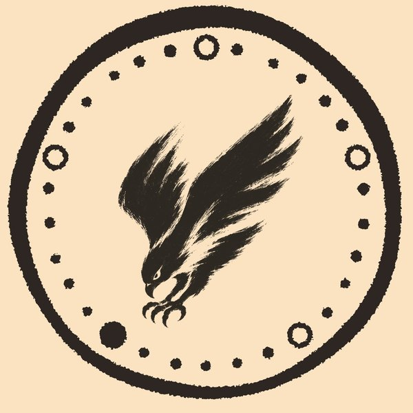
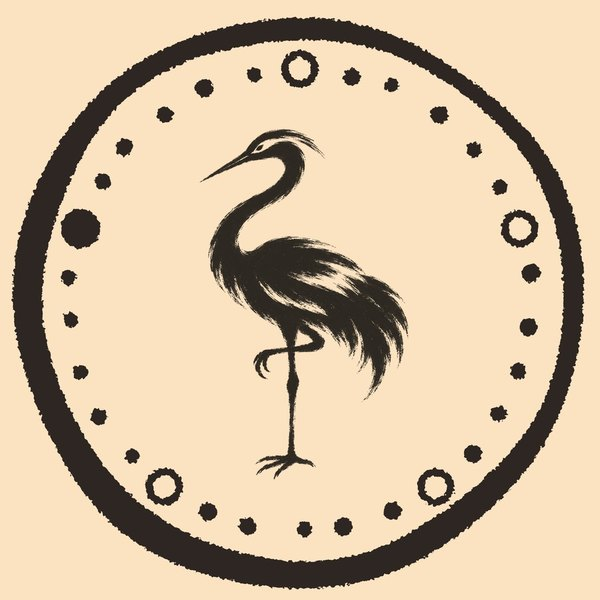

일곱 살의 솔은 장작더미 뒤에 숨어 있었다. 아버지가 숨으라고 했다. 무슨 소리가 나도 나오지 말라고 했다.
"궁장. 마지막으로 묻는다."
늙은 목소리였다. 아버지는 두 팔이 묶인 채 마당 한가운데 꿇어앉아 있었다.
"그 활 만드는 법을 내놓아라. 바다 건너 손님들이 기다리신다."
"못 합니다."
아버지의 목소리는 조용했다.
"이 나라 백성들을 지키라고 만든 겁니다. 남의 나라에 넘길 물건이 아닙니다."
몽둥이가 아버지의 등을 내리쳤다. 한 번. 두 번. 아버지는 소리를 내지 않았다. 흙탕물에 얼굴을 박았을 뿐이다.
솔은 두 손으로 입을 틀어막았다.
세 번... 네 번...
그때 가슴이 뜨거워졌다. 화가 나서 그런 줄 알았다. 아니었다. 가슴 안에서 무언가가 돋고 있었다. 차갑고 가느다란 것이 한 올, 또 한 올. 검은 실이 솔의 가슴 안쪽에서부터 엉기기 시작했다.
담장 위에 하얀 것이 앉아 있었다. 맨발 두 짝이 담장 아래로 늘어져 있었다. 그것은 아무것도 하지 않는 것처럼 보였다. 웃으며 보고만 있었다.
미워해.
가슴 깊은 데서 무언가가 속삭였다.
저놈들을 미워해. 그러면 안 아파.
솔은 미워했다. 정말로 덜 아팠다.
실이 명치 바로 위에서 엉켰다. 매듭이 묶였다.
솔은 없어졌다.
그다음은 물속에서 보는 것 같았다. 장작더미가 무너졌다. 누가 비명을 질렀다. 손이 뜨겁고 끈적했다. 솔의 몸에 붙은 손이었지만 솔이 움직이는 손이 아니었다.
누가 이름을 불렀다.
아버지가 처마 밑에 서 있었다. 끊어진 밧줄이 손목에 감겨 있었다. 한 손으로 기둥을 짚고, 다른 손에 활을 들고 있었다. 공방 벽 제일 높은 데 걸려 있던 활이었다.
아버지는 두 번 시위를 당기다 놓쳤다. 세 번째에 당겼다.
아버지는 울고 있었다. 솔은 아버지가 우는 것을 그날 처음 봤다.
아버지의 입이 움직였다. 빗소리에 묻혀 들리지 않았다.
화살이 날아왔다.
아버지가 나를 쐈다.
솔이 그날 밤에서 기억하는 것은 거기까지다. 그다음은 빗속에 누워 있던 것. 아버지가 흙탕물에 고랑 두 줄을 남기며 끌려가던 것. 끌려가면서도 이쪽을 보며 무언가를 외치던 것.
그날 아버지가 부른 이름을, 솔은 지금도 기억하지 못한다.
＊ ＊ ＊
칠 년 뒤.
"야, 살 낀 놈! 머리 숙여!"
살 낀 놈. 재수 없는 것이 붙은 놈이라는 뜻이다. 활터에서 솔을 부르는 이름이었다.
열네 살의 솔은 고개를 숙이지 않았다. 화살이 머리 위 한 뼘으로 지나가 흙벽에 박혔다.
그리로 갈 줄 알고 있었다. 시위 우는 소리만 들어도 알았다. 사대 왼쪽에서 세 번째, 붉은 띠를 맨 낭도였다. 그 낭도는 시위를 놓을 때 손목을 비튼다. 그래서 늘 오른쪽으로 한 뼘 빠진다.
솔은 화살을 뽑아 등의 꾸러미에 꽂았다. 스물세 대째였다.
여기는 서라벌이다. 이 나라에서 가장 큰 도시다. 솔이 있는 곳은 그 서라벌의 화랑 활터다.
활터에는 높이가 있다. 맨 위 언덕에 정자가 있다. 보라색 띠를 맨 어른들이 차양 아래에서 술을 마신다. 보라색 띠는 진골, 이 나라에서 가장 높은 귀족의 색이다. 그 아래 사대에는 보라 띠 젊은이들이 줄지어 활을 쏜다. 진골 가운데서도 활로 이름을 얻은 사람들, 화랑이다. 사대 끝에는 붉은 띠와 누런 띠가 선다. 화랑을 따라다니며 활을 배우는 낭도들이다. 그 앞에 과녁이 다섯 개.
그리고 과녁 뒤, 빗나간 화살이 떨어지는 흙둔덕에 띠 없는 아이들이 있다.
종이다. 종은 띠를 매지 못한다. 새끼줄을 맨다.
사람들은 이 흙둔덕을 살받이라고 불렀다. 화살을 받아 내는 자리라는 뜻이다. 활터에서 가장 낮은 곳이다. 솔은 여기서 칠 년째 화살을 주웠다.
"어이, 거기. 내 화살 어디 갔냐."
손목 비트는 낭도가 손짓했다. 솔은 방금 꽂은 붉은 깃 화살을 들어 보였다.
"맞은 걸로 쳐. 바람이 불었잖아."
바람은 불지 않았다.
"네, 나리."
솔은 그 화살을 꾸러미의 다른 칸으로 옮겼다. 꾸러미는 두 칸이다. 한 칸은 과녁에서 뽑은 맞은 화살. 한 칸은 흙둔덕에서 주운 빗나간 화살. 맞은 칸은 늘 과녁에 꽂힌 것보다 많았다.
그때 사대가 조용해졌다.
보라 띠 하나가 사대 맨 뒤로 걸어 나가고 있었다. 뒤로, 더 뒤로. 담장에 등이 닿을 때까지 갔다. 과녁에서 백 하고도 스무 걸음이었다.
"기랑이다."
"또 하려나 봐."
기랑은 열일곱이었다. 활이 사람 키보다 길었다. 그가 화살 한 대를 걸고 과녁을 봤다.
과녁은 거기서 보면 콩알만 했다.
시위가 울었다. 솔이 들어 본 것 가운데 가장 고른 소리였다. 손목도, 어깨도, 숨도 어긋난 데가 없었다.
화살은 곧게 날아 그 콩알만 한 과녁의 한가운데에 박혀 떨고 있었다.
사대에 환호성이 터졌다.
"맞히는 활이다!"
"저게 사람이냐! 열일곱에 맞히는 활이라니!"
사대 옆 기둥에 나무패 쉰 개가 걸려 있었다. 서라벌 활터의 순위판이다. 이 나라 화랑이 수천이다. 대부분은 화살이 과녁에 닿기만 해도 잘 쏜다는 소리를 듣는다. 과녁을 꼬박꼬박 스치기라도 하면 "스치는 활"이라고 추켜세운다. 하지만 순위판에는 스치는 활로는 오르지 못한다. 과녁 위의 점 하나를 골라 맞히는 사람, 맞히는 활만 패를 걸 수 있다. 수천 가운데 쉰 명이다.
패는 위로 갈수록 높이 걸려 있다. 순서는 점수와 업적과 경력을 합쳐 매긴다. 다만 윗자리 화랑에게 겨루기를 걸어 이기면, 그 자리에서 패를 바꿔 건다. 그런데 순위판 위, 처마 바로 밑에 패 다섯 개가 따로 걸려 있었다. 금빛 술이 달린 패였다. 차례 숫자는 없고 글자 하나씩만 새겨져 있다. 순위판의 일 위도 그 다섯 앞에서는 고개를 숙인다. 고개를 한참 젖혀야 보인다.
기랑의 패는 맨 아랫줄 가까이에 있었다. 마흔여덟째. 기랑은 지난해에 처음 패를 걸었다. 경력은 가장 짧은데 점수가 높아서 거기까지 올라왔다. 쉰 사람 가운데 스무 살이 안 된 사람은 기랑 하나였다.
솔은 과녁에서 화살을 뽑았다. 보라 깃에 흰 줄 하나. 대아찬 댁의 깃이다. 촉은 과녁 한가운데를 깊이 파고들어 있었다.
이 화살은 주울 일이 없다. 한 번도 빗나간 적이 없으니까.
환호 속에서 기랑만 웃지 않았다. 그는 정자의 빈자리 하나를 보고 있었다.
＊ ＊ ＊
"떡 사세요! 방금 쪘어요! 방금 찐 거 아니면 돈 안 받아요!"
담장 밖에서 보리가 소리쳤다.
보리는 열일곱이고, 솔의 누나다. 피가 섞인 누나는 아니다. 같은 공방에서 자랐고, 같은 날 활터로 넘겨졌다. 떡 광주리를 이고 활터 담장을 따라 돈다. 이마에는 쪽빛 머리띠를 눈썹 바로 위까지 내려 맸다. 한 번도 푼 적이 없다. 떡은 활터 부엌의 것이다. 열 푼을 팔면 아홉 푼이 부엌으로 가고 한 푼이 남는다.
솔은 담장의 깨진 틈으로 누나를 봤다. 보리도 솔을 봤다. 왼쪽 눈썹이 한 번 올라갔다.
일할 시간이라는 뜻이다.
솔의 눈에는 남들이 못 보는 것이 보인다.
사람마다 몸 어딘가에 검은 실이 걸려 있다. 머리카락보다 가늘다. 실이 엉킨 자리에는 작은 매듭이 있다. 누구나 이마에 하나쯤은 있다. 짜증 내고 한숨 쉬는 만큼의 매듭이다. 자고 나면 풀리기도 한다.
그런데 가끔 매듭이 아래로 내려간 사람이 있다.
첫 손님이 왔다. 누런 띠의 아저씨였다. 낭도 가운데서도 가장 아랫자리다. 매듭은 이마에 있었다.
솔은 손가락 하나를 폈다.
"세 쪽에 닷 푼이에요." 보리가 웃으며 말했다. 원래는 너 푼이다.
"비싸네."
"비싸면 맛있는 거예요."
아저씨는 투덜대며 샀다. 이마 손님은 더 불러도 된다.
둘째 손님은 붉은 띠였다. 누런 띠보다 한 단 위의 낭도다. 매듭이 목에 걸려 있었다. 목소리가 낮고 갈라졌다.
솔은 손가락 둘을 폈다. 그리고 고개를 저었다.
"나리, 오늘은 한 쪽 더 얹어 드릴게요." 보리가 얼른 말했다.
목 손님은 깎아 줘야 한다. 안 그러면 터진다. 작년에 한 번 터졌다. 광주리가 엎어졌다.
붉은 띠가 가고 나서 보리가 틈으로 속삭였다.
"네 눈 덕에 먹고산다."
"그럼 내가 최고네."
"누나 최고라고 해야지."
"......누나 최고."
"목소리에 정성이 없어."
칠 년을 이렇게 먹고살았다.
손가락 셋을 펴는 날은 드물었다. 가슴에 매듭이 있는 사람이다. 그런 손님에게는 보리가 떡을 그냥 준다. 그리고 얼른 자리를 뜬다. 가슴까지 내려간 사람 곁에 있으면 그 사람의 실이 보리 쪽으로 쓸려 오기 때문이다.
그날, 솔은 손가락 셋을 폈다.
보리 쪽이 아니었다. 언덕 위였다.
정자로 가마 하나가 올라가고 있었다. 사대의 화랑들이 한꺼번에 허리를 숙였다.
"대아찬께서 오셨다."
가마에서 내린 사람은 쉰 줄의 사내였다. 보라색 띠에 금 고리가 달려 있었다. 그가 빈자리에 앉았다. 기랑이 보고 있던 그 자리였다.
대아찬의 가슴 위쪽, 빗장뼈 바로 아래에 매듭이 있었다.
주먹만 했다. 솔이 칠 년 동안 본 것 가운데 가장 컸다. 대아찬이 앉은 자리 둘레로 풀이 누렇게 죽어 있었다.
기랑이 사대에서 정자를 향해 허리를 숙였다.
"아버지."
솔은 귀를 세웠다. 언덕 위의 말도 솔의 귀에는 들린다.
대아찬은 과녁을 봤다. 한가운데 난 화살 자국도 봤다. 아들의 얼굴은 보지 않았다.
"한 발이냐."
"예."
"네 형이었다면 두 발을 한 구멍에 꿰었겠지."
사대가 조용해졌다. 기랑은 숙인 허리를 펴지 않았다.
대아찬이 찻잔을 들었다. 손이 떨렸다.
"왜......"
목소리가 낮았다. 갈라져 있었다. 그 사람의 목소리가 아닌 것 같았다.
"왜 네가 남았느냐."
솔은 봤다.
대아찬의 가슴에서 매듭이 한 칸 내려갔다.
명치 바로 위였다.
찻잔이 깨졌다.
대아찬의 두 눈에 검은 것이 번졌다.
2장
주운 화살
대아찬의 가슴에서 검은 것이 터져 나왔다.
실이었다. 한 올이 아니라 수천 올이 한꺼번에 솟구쳐 정자 지붕을 뚫었다. 기와가 날았다. 기둥 하나가 실에 감겨 통째로 꺾였다.
이번에는 솔의 눈에만 보이는 것이 아니었다.
"저, 저게 뭐야!"
"검은 게!"
사대가 무너졌다. 붉은 띠와 누런 띠가 먼저 담을 넘었다. 보라 띠들이 그 뒤를 따랐다. 정자의 어른들은 종의 등을 밟고 언덕을 굴러 내려갔다.
대아찬이 일어섰다. 일어섰다기보다 실 다발에 들려 올라갔다. 발이 땅에서 한 뼘 떠 있었다. 검게 번진 두 눈이 사대를 내려다봤다.
"......너 말고."
갈라진 목소리였다.
"너 말고. 네 형이 남았어야 했다."
화랑 몇이 달아나다 말고 돌아섰다. 배운 대로였다. 검은 것이 터지면 쏜다. 넘는 것을 붙들어 둘 수 있는 마지막 기회였다. 화살 세 대가 실 다발을 향해 날아갔다.
화살이 지나간 자리의 실이 흩어졌다. 연기처럼.
그리고 숨 한 번 쉴 사이에 도로 엉겼다.
화살은 실을 스쳤을 뿐이다. 화랑 셋은 활을 버리고 담을 넘었다.
사대에 남은 사람은 하나였다.
기랑은 달아나지 않았다. 담장 앞, 백스무 걸음 그 자리에 서 있었다. 얼굴이 하얬다. 그래도 손은 화살을 걸고 있었다.
시위가 울었다.
화살은 실 다발의 한가운데로 갔다. 대아찬의 가슴, 터져 나온 것의 뿌리였다. 솔은 숨을 삼켰다. 저 사람은 매듭이 안 보인다. 그런데 매듭이 있는 바로 그 자리를 쐈다.
화살이 매듭에 닿았다.
그리고 튕겨 나왔다. 돌벽에 맞은 것처럼. 화살은 대아찬의 옷깃 하나 뚫지 못하고 발치에 떨어졌다. 매듭이 덜컥 굳었다가, 숨 몇 번 만에 다시 꿈틀거렸다.
두 번째. 같은 자리였다. 앞의 화살이 닿은 바로 그 점이었다. 또 튕겨 나왔다.
세 번째.
기랑의 손이 처음으로 떨렸다. 세 번째 화살도 한 치 어긋나지 않았다. 그리고 튕겨 나왔다.
순위판에 패를 건 활이었다. 세 발을 다 맞히고, 하나도 끊지 못했다.
실 한 다발이 채찍처럼 사대를 빠르게 쓸더니, 기랑을 강타했다.
기랑이 날아갔다. 담장에 등을 박고 떨어졌다. 장궁이 손을 떠나 허공을 돌았다. 과녁을 넘었다. 흙둔덕에 꽂혔다.
솔의 발 앞이었다.
＊ ＊ ＊
"솔아!"
보리의 목소리였다.
솔은 돌아봤다. 담장의 깨진 틈으로 보리가 기어 들어오고 있었다. 떡 광주리는 없었다. 남들이 다 나가는 담을 보리 혼자 넘어 들어오고 있었다.
"오지 마!"
늦었다.
대아찬에게서 터진 실 다발이 방향을 틀었다. 정자도, 사대도, 쓰러진 기랑도 지나쳤다. 전부 한곳으로 쏟아졌다.
보리의 이마였다.
쪽빛 머리띠가 풀려 날아갔다.
보리가 무릎을 꿇었다. 두 손으로 이마를 눌렀다. 소리를 내지 않았다. 이를 물고 있었다.
남의 것은 늘 누나에게 간다. 솔은 그것을 칠 년 동안 봤고, 한 번도 막지 못했다.
지금은 실 수천 올이 가고 있었다.
솔은 발 앞의 장궁을 봤다.
종은 활을 들 수 없다. 손을 대면 매를 맞는다. 솔이 활터에서 제일 처음 배운 것이었다.
그럼에도 솔은 활을 집어 들었다.
무거웠다. 제 키보다 길었다. 등의 꾸러미로 손을 뻗었다. 손에 잡힌 것은 맞은 칸의 한 대였다.
붉은 깃이었다. 손목 비트는 낭도의 화살. 맞은 걸로 치라던 그 화살이었다.
솔은 시위에 화살을 걸고 당겼다.
반도 안 당겨졌다.
팔이 떨렸다. 열네 살의 팔이었다. 칠 년 동안 화살을 주웠지 당겨 본 적은 없었다. 이 힘으로는 저기까지 못 간다. 가도 힘이 없다.
그러면 가까이 가면 된다.
솔은 흙둔덕을 뛰어내렸다.
과녁 사이를 지났다. 사대를 지났다. 실이 머리 위로 지나갔다. 한 다발이 발목을 스쳤다. 스친 자리가 얼음처럼 시렸다. 솔은 엎드렸다. 기었다. 무너진 과녁 틀 밑으로 들어갔다.
틀 사이로 대아찬의 가슴이 보였다. 세 걸음이었다.
매듭은 명치 바로 위에 있었다. 주먹만 했던 것이 지금은 잘 익은 배만 했다. 한 올씩 아래로 기어 내려가고 있었다. 손가락 하나만큼 남았다.
닿으면 끝이다. 왜인지 솔은 그것을 알았다. 칠 년 전 제 가슴에서 그것이 닿는 것을 느꼈으니까.
왜 아는지는 알 수 없었다. 실은 전부 저기서 나오고 있었고, 저기를 맞혀야 한다는 것을 몸이 먼저 알고 있었다. 한 치라도 어긋나면 화살은 사람을 뚫을 것이다.
솔은 틀에 활을 걸치고 당겼다. 반만. 그거면 됐다. 세 걸음이니까.
매듭을 봤다.
왼쪽 눈이 뜨거워졌다.
화살 끝이 이상했다. 쇠 촉이 젖고 있었다. 물이 아니었다. 먹물처럼 검은 것이 촉 끝에서부터 번져 올라왔다.
솔은 그것이 무엇인지 몰랐다. 생각할 틈도 없었다.
손목을 비틀지 않았다. 숨을 멈췄다.
놓았다.
소리가 사라졌다.
기와 떨어지는 소리도, 비명도, 누나의 숨소리도 없었다. 화살이 가는 것만 보였다.
뚝.
어디선가 들어 본 소리였다.
매듭이 끊어졌다.
배만 하던 것이 한가운데부터 갈라졌다. 실이 풀렸다. 정자를 뚫었던 실이, 기둥을 꺾었던 실이, 누나의 이마로 쏟아지던 실이, 한꺼번에 힘을 잃었다.
그리고 재가 되었다.
검은 재가 눈처럼 활터에 내렸다.
대아찬이 땅에 내려앉았다. 화살은 그를 뚫지 않았다. 옷자락 하나 찢지 않았다. 힘을 잃고 그의 무릎 앞에 떨어져 있었다. 촉은 말라 있었다.
대아찬의 눈에 흰자가 돌아왔다. 그는 숨을 한 번 크게 들이쉬고 옆으로 쓰러졌다. 가슴이 오르내렸다. 살아 있었다.
＊ ＊ ＊
솔은 틀 밑에서 기어 나왔다. 다리에 힘이 없었다.
"솔아."
보리가 와 있었다. 이마가 벌겋게 부어 있었다. 보리는 솔의 얼굴을 두 손으로 잡고 이쪽저쪽 돌려 봤다. 팔을 들어 봤다. 등을 돌려 봤다. 멀쩡한 것을 확인하고 나서,
머리를 쥐어박았다.
"아야."
"거길 왜 기어들어 가! 죽고 싶어?"
"누나가 먼저 들어왔잖아."
"나는 누나고!"
"그게 무슨."
보리가 솔을 끌어안았다. 숨이 막힐 만큼 세게 안았다. 보리의 어깨가 떨렸다.
"......검은 게 다 끊어졌어." 솔이 말했다.
"응."
"누나."
"왜."
"누나 최고."
"지금 그게 할 말이야, 이 바보야."
보리의 목소리가 젖어 있었다.
솔은 누나의 어깨 너머로 흙바닥을 봤다. 쪽빛 머리띠가 재를 뒤집어쓴 채 떨어져 있었다. 솔은 그것을 주워 품에 넣었다.
그리고 누나의 이마를 봤다.
머리띠 없는 누나의 이마를 밝은 데서 본 것은 오랜만이었다.
눈썹 위에 검은 것이 있었다. 솔의 눈에만 보이는 실이 아니었다. 멍처럼, 누구 눈에나 보이는 것이었다. 엄지 한 마디만 한 매듭이 살갗 아래에 박혀 있었다.
어젯밤에 쟀을 때보다 컸다.
솔은 아무 말도 하지 않았다.
활터는 조용했다. 재가 내렸다. 쓰러진 과녁 틀 뒤에서 종 아이 하나가 입을 벌린 채 이쪽을 보고 있었다. 틀 밑에는 머리가 훤히 벗어진 늙은 종 하나가 엎드려 있었다. 손이 흉터투성이인 노인이었다. 노인의 눈은 솔의 얼굴이 아니라 손목에 가 있었다.
담장 밑에서 기랑이 몸을 일으켰다. 이마에서 피가 흘렀다. 그는 한쪽 다리를 끌며 걸어왔다. 아버지의 숨 쉬는 가슴을 내려다봤다. 그 앞에 떨어진 붉은 깃 화살을 내려다봤다.
제 화살이 아니었다. 제 화살 세 대는 아버지의 발치에 흩어져 있었다. 옷깃 하나 뚫지 못한 화살들이었다.
기랑은 솔을 봤다. 솔의 손에 들린 제 활을 봤다.
그는 허리를 굽혀 붉은 깃 화살을 주웠다. 그리고 제 화살통에 꽂았다.
솔은 그것이 무슨 뜻인지 몰랐다.
발소리가 몰려왔다. 담을 넘었던 사람들이 돌아오고 있었다. 맨 앞은 대아찬 댁의 집사였다. 집사가 대아찬을 안아 일으켰다.
대아찬이 눈을 떴다.
그는 제 가슴을 더듬었다. 무언가에 맞은 자리였다. 고개를 들었다.
띠 없는 아이가 장궁을 들고 서 있었다.
"......저 종이."
대아찬의 손가락이 솔을 가리켰다.
"저 종이 나를 쐈다."
집사가 일어섰다.
"종이 활에 손을 대면 손목을 자르는 것이 법도입니다."
집사의 눈이 솔의 손목으로 내려왔다.
"진골을 쐈으면, 목입니다."
3장
매 서른
"제가 쐈습니다."
집사의 손이 멎었다.
기랑이 걸어오고 있었다. 한쪽 다리를 절었다. 이마의 피가 턱까지 흘러 있었다. 그는 솔 앞을 지나쳐 아버지 앞에 섰다.
"아버지를 쏜 것은 접니다."
대아찬이 아들을 올려다봤다.
아까 정자에서는 한 번도 보지 않던 얼굴이었다. 지금은 보고 있었다.
"......네가."
"예."
"네가 쏴서, 그 검은 것이 가라앉았단 말이냐."
"예."
거짓말이었다. 솔은 숨소리로 알았다. 기랑의 숨이 말 한 마디마다 한 번씩 걸렸다. 활을 쏠 때는 한 번도 걸리지 않던 숨이었다.
"그럼 저 종은 왜 네 활을 들고 있느냐."
"제가 놓쳤습니다. 저 종이 주웠습니다." 기랑은 솔을 돌아보지 않았다. "화살 줍는 종입니다. 떨어진 것을 줍는 것이 저 종의 일입니다."
집사가 헛기침을 했다.
"도련님. 종이 활에 손을 댄 것은 댄 것입니다. 손목을."
"그 손목을 자르면."
기랑이 집사를 봤다.
"내 화살은 누가 줍느냐. 네가 줍겠느냐. 과녁 뒤에서."
집사가 입을 다물었다.
대아찬이 집사의 팔을 짚고 일어섰다. 다리가 후들거렸다. 그래도 목소리는 다시 정자 위의 목소리였다.
"......매 서른 대."
솔은 손에 쥔 활을 내려다봤다. 아직 쥐고 있었다.
"나리!"
보리였다. 보리가 솔 앞을 막아섰다. 머리띠 없는 이마가 벌겋게 부은 채였다.
"얘는 열네 살이에요. 서른 대면 한 달을 못 일어나요. 활이 날아와서 주운 게 죄예요? 그럼 화살 줍는 것도 죄게요? 그게 얘 일인데!"
"누나."
"가만있어. 나리, 값으로 치르면 안 돼요? 떡이 광주리로 두 개 있어요. 아니, 세 개. 내일 찌면 세 개예요."
활터가 조용해졌다.
대아찬이 보리를 내려다봤다. 벌레를 보는 눈도 아니었다. 그냥 과녁을 보는 눈이었다.
"저것도 쳐라. 열 대."
＊ ＊ ＊
형틀은 사대 옆에 있었다.
솔은 엎드렸다. 윗옷이 벗겨졌다. 등에 바람이 닿았다.
첫 매가 떨어졌다.
하나.
솔은 셌다. 화살을 세듯이 셌다. 세고 있으면 다른 생각이 안 난다.
둘. 셋.
형틀 옆에서 망치 소리가 났다. 늙은 종 하나가 무너진 과녁 틀에 쐐기를 박고 있었다. 손이 흉터투성이인 그 노인이었다. 매가 떨어질 때마다 망치가 멎었다. 매가 올라가면 다시 박았다.
일곱. 여덟.
담장을 넘었던 화랑들이 돌아와 구경하고 있었다. 누가 웃었다.
"살 낀 놈이 활을 다 만져 보네."
"기랑 나리 활이라며. 활 썩겠다."
"내 활이다."
기랑이었다. 형틀 뒤 기둥 곁에 서 있었다. 치료도 받지 않고 서 있었다.
"썩는지는 내가 본다. 더 웃을 사람은 사대에 서라. 백스무 걸음에서 머리털 한 올씩 따 주마."
아무도 웃지 않았다.
열다섯.
등이 터졌다. 뜨거운 것이 옆구리로 흘렀다.
스물.
솔은 고개를 조금 돌렸다. 기랑은 매에서 눈을 떼지 않고 있었다. 입술이 조금씩 움직였다.
세고 있었다. 솔과 같은 숫자를.
스물아홉.
서른.
물이 끼얹어졌다. 솔은 형틀에서 내려왔다. 무릎이 한 번 꺾였다. 일어섰다.
보리의 차례였다.
솔은 그 열 대를 셀 수 없었다. 숫자가 세어지지 않았다. 누나는 한 번도 소리를 내지 않았다. 다 맞고 내려와서 솔을 보더니 왼쪽 눈썹을 올렸다.
괜찮다는 뜻이다. 거짓말이다.
솔은 윗옷을 걸쳤다. 형틀 곁 흙바닥에 화살 한 대가 떨어져 있었다. 깃 하나가 반쯤 뜯긴 화살이었다. 아까 화랑들이 실을 향해 쏜 것 가운데 하나였다.
솔은 허리를 굽혀 그것을 주웠다. 등이 찢어지는 것 같았다. 꾸러미의 빗나간 칸에 꽂았다.
"스물넷."
화랑 하나가 어이없다는 듯 웃었다.
"저놈 봐라. 매 서른 대 맞고 화살 줍는다."
솔은 대답하지 않았다. 주운 화살은 세어야 한다. 그게 솔의 일이었다.
＊ ＊ ＊
움막은 활터 담장 밖에 있었다.
과녁을 싸던 헌 천으로 지붕을 얹은 집이다. 종 아이 여섯이 같이 산다. 솔과 보리가 그 가운데 제일 크다.
"엎드려."
"누나 먼저."
"엎드리라고."
솔은 엎드렸다. 보리가 솔의 등에 약을 발랐다. 약이래야 쑥을 짓이긴 것이다. 손끝이 닿을 때마다 등이 타는 것 같았다.
"누나도 맞았잖아."
"나는 열 대고 너는 서른 대잖아. 셈이 다르지."
"누나 등이 더 작아."
"그건 무슨 셈이야."
보리는 웃었다. 웃다가 숨을 한 번 삼켰다. 등이 당기는 것이다. 그러고도 손은 멈추지 않았다.
"그 댁 도련님 말이야." 보리가 말했다. "왜 자기가 쐈다고 했을까."
"몰라."
"목숨값이야. 꽤 비싼 거야. 떡으로 치면......" 보리가 잠깐 셈을 했다. "못 쳐. 떡으로 안 쳐져."
"누나가 못 치는 것도 있어?"
"있지. 그래서 무서운 거야. 값을 모르는 건 외상이거든."
보리는 약 묻은 손을 닦고 장부를 폈다. 떡 광주리 밑에 늘 넣고 다니는 것이다. 보리는 글을 조금 읽기는 해도 쓸 줄은 몰랐다. 그래서 줄마다 맨 앞에 그림을 그렸다. 물동이, 닭, 짚신. 그림 옆에 금을 그어 떡 쪽수를 셌다.
맨 앞 장에 그림이 없는 줄이 하나 있었다. 그림 자리에 빈 동그라미만 그려져 있었다. 그 옆으로 금이 빽빽했다.
"그건 아직도 누군지 몰라?" 솔이 물었다.
"몰라. 누가 자꾸 뭘 놓고 가. 겨울엔 장작, 장마 전엔 지붕. 갚을 데가 없으니까 적어만 두는 거야."
보리는 동그라미 옆에 금을 하나 더 그었다. 오늘 아침에 보니 광주리 손잡이가 새 버들 껍질로 감겨 있었다. 닳아서 손바닥이 쓸리던 자리였다.
막내가 문간에서 고개를 내밀었다. 다섯 살이다. 낮에 과녁 틀 뒤에서 입을 벌리고 있던 아이였다.
"대장."
솔을 부르는 말이다. 솔은 왜 그렇게 부르는지 모른다.
"대장이 쐈지. 나 봤어. 검은 거 대장이 쐈어."
보리의 손이 멎었다.
"막내야." 보리가 다정하게 말했다. "그 얘기 한 번만 더 하면 내일부터 떡 자투리 없어."
막내가 두 손으로 제 입을 막았다.
"잘했어. 들어가 자."
솔은 품에서 머리띠를 꺼냈다. 재는 털어 두었다.
"누나. 이거."
보리가 받았다. 잠깐 그것을 내려다봤다. 그리고 아무 일도 없었다는 듯 이마에 둘렀다. 눈썹 바로 위까지 내려 맸다.
"고맙다는 말은 비싸니까, 나중에 줄게."
그때 문간에서 쿵 소리가 났다.
보리가 나가 봤다. 문 앞에 작은 단지 하나가 놓여 있었다. 보라색 보자기에 싸여 있었다. 담장 모퉁이로 누군가의 등이 사라지고 있었다. 대아찬 댁에서 장작 패는 하인이었다.
"이게 뭐예요!"
하인이 돌아보지도 않고 소리쳤다.
"도련님이 버리라셨다! 버릴 데가 여기밖에 없더라!"
보리가 단지 뚜껑을 열었다. 냄새를 맡았다. 눈이 커졌다.
"......솔아. 이거 곰 기름이야. 진짜 약이야. 이거 한 단지면 우리 한 달 벌이야."
"버린 거래."
"버린 걸 보자기에 싸서 버려?"
보리는 단지를 안고 들어왔다. 입꼬리가 올라가 있었다.
"그 도련님, 거짓말을 되게 못하네."
＊ ＊ ＊
곰 기름은 쑥보다 덜 아팠다.
아이들이 잠들었다. 보리가 솔에게 단지를 내밀고 등을 돌려 앉았다.
"발라 줘. 손이 안 닿아."
솔은 발랐다.
"얇게. 반은 팔 거니까."
"누나."
"알았어. 삼분의 일만 팔게."
솔은 누나의 머리띠를 봤다.
솔은 밤마다 손가락으로 잰다. 누나가 잠들었을 때, 머리띠를 살짝 들고 잰다. 매듭 아래 끝에서 눈썹까지. 작년에는 세 마디였다. 봄에는 두 마디 반이었다.
오늘은 아직 재지 못했다.
"아이고, 여기가 그 집이냐."
문간에서 목소리가 났다.
술 냄새가 먼저 들어왔다. 그다음에 사람이 들어왔다. 삿갓을 눌러쓴 사내였다. 승복은 입었는데 허리에 호리병을 차고 있었다. 승복 자락에 흙이 묻어 있었다. 담을 넘어온 모양이었다.
"누구세요." 보리가 솔 앞을 막았다. "시주할 건 없어요. 떡은 다 팔았고, 있어도 스님한테는 제값 받아요."
"시주받으러 온 게 아니다."
승려가 문턱에 털썩 앉았다. 호리병을 기울였다. 한 모금 마시고 솔을 봤다.
웃는 얼굴이었다. 눈은 웃지 않았다.
"매듭을 쐈구나, 꼬마."
솔은 대답하지 않았다.
"담장 위에서 다 봤다. 안주가 좋더구나. 세 걸음 앞에서. 반밖에 못 당긴 활로. 주운 화살로." 승려가 손가락을 하나씩 꼽았다. "촉이 젖었지. 검게."
보리가 솔을 돌아봤다. 솔은 고개를 끄덕이지 않았다. 젓지도 않았다.
승려의 눈이 솔에게서 보리에게로 갔다.
보리의 머리띠로 갔다.
"하나만 묻자."
그가 호리병으로 머리띠를 가리켰다.
"그 띠 밑의 것도 쏠 수 있겠느냐."
4장
살받이
"못 쏴요."
보리가 먼저 대답했다.
"얘는 아무것도 안 쐈어요. 쏜 건 그 댁 도련님이에요. 활터 사람들이 다 그렇게 알아요. 스님도 그렇게 아세요."
"그래, 그래."
승려는 조금도 믿지 않는 얼굴로 고개를 끄덕였다.
"나는 무애라고 한다."
그러더니 불쑥 손을 뻗어 보리의 손을 잡았다.
"뭐예요, 이 스님이!"
솔은 봤다.
무애의 목에 실 한 다발이 걸려 있었다. 굵었다. 그 실이 무애의 팔을 타고 내려갔다. 맞잡은 손을 건넜다. 보리의 팔을 타고 올라가 머리띠 밑으로 스며들었다.
무애가 눈을 끔뻑였다.
"어. 술이 깨네."
그는 아쉽다는 듯 호리병을 흔들었다.
"반 병어치 취기가 날아갔구나. 아깝게."
솔이 무애의 손을 쳐 냈다. 손등에서 찰싹 소리가 났다.
"하지 마요."
보리가 눈을 크게 뜨고 솔을 돌아봤다. 솔이 어른의 손을 친 것이다.
"봤느냐." 무애는 손등을 문지르며 웃었다. 눈은 웃지 않았다. "살받이다."
"그게 뭔데요."
"사람마다 미움이 있지. 억울한 것, 분한 것. 그게 실이 되어 몸에 걸린다. 화랑들은 그걸 살이라고 부른다. 보통은 제 살은 제가 지고 산다. 그런데 드물게, 곁에 있는 사람의 살을 제 몸으로 받아 버리는 몸이 있다."
"화난 손님 손을 잡으면 손님이 누그러져요." 보리가 제 손을 내려다봤다. "저는 그게 제 장사 수완인 줄 알았는데."
"수완이 아니라 병이다."
"병도 돈이 되면 수완이에요."
무애가 낮게 웃었다.
"띠 좀 풀어 보련? 네 손으로."
보리는 한참 가만히 있었다. 그러다 한숨을 쉬고 머리띠에 손을 올렸다.
"구경값은 달아 둘 거예요."
머리띠가 풀렸다.
등잔불 아래로 누나의 이마가 드러났다. 눈썹 위, 살갗 아래에 검은 것이 박혀 있었다. 실이 수십 겹으로 엉겨 굳은 덩어리였다.
솔의 손가락이 저절로 올라갔다. 허공에서 쟀다. 매듭 아래 끝에서 눈썹까지.
두 마디.
봄에는 두 마디 반이었다.
"그게 눈썹을 넘어 내려오기 시작하면 못 막는다." 무애가 말했다. "목으로, 빗장뼈로, 가슴으로. 가슴까지 내려간 사람을 살먹이라고 한다. 오늘 낮의 그 어른처럼. 거기서 명치에 닿으면."
그는 말을 맺지 않았다.
"얼마나 남았어요."
솔이 물었다.
"그건 네가 나보다 잘 알 텐데. 재고 있잖느냐."
솔은 손가락을 내렸다.
"오늘 같은 날이 없으면 몇 해. 오늘 같은 날이 또 있으면, 그만큼 줄어든다."
구석에서 아이들의 숨소리가 났다.
"그래서 뭐요."
보리가 머리띠를 다시 둘렀다. 눈썹 위까지 야무지게 내려 맸다.
"몇 해면 장사가 몇 번이야. 솔아, 셈해 봐."
솔은 셈하지 않았다.
알고 있었다. 누나의 이마에 있는 것이 무엇인지는 몰랐어도, 내려오고 있다는 것은 알고 있었다. 밤마다 쟀으니까. 모르는 척했을 뿐이다. 누나가 모르는 척하니까.
"아까 물으신 거요."
솔이 말했다.
"못 쏴요. 누나 건 다른 사람 것하고 달라요. 딱딱해요. 돌 같아요. 화살이 들어갈 데가 안 보여요."
"그렇겠지. 남의 살이 수백 겹이니."
무애가 호리병을 기울였다. 한 방울도 나오지 않았다.
"끊을 수 있는 화살이 딱 하나 있긴 했다."
＊ ＊ ＊
움막 구석에 사람이 하나 더 있었다.
낮에 쐐기를 박던 그 노인이었다. 활터 아이들은 손 영감이라고 부른다. 손이 흉터투성이라서다. 과녁 틀을 고치는 종이고, 밤이면 가끔 움막 구석에서 나무를 깎다 간다. 솔의 기억이 닿는 때부터 늘 그 구석에 있던 사람이다. 아교 냄새가 나는 사람이다. 말은 거의 하지 않는다.
사각, 사각. 작은 칼이 나무토막을 깎고 있었다.
"칠 년 전 얘기다." 무애가 말했다. "선을 넘은 아이가 하나 있었다. 매듭이 명치에 닿은 아이. 닿으면 끝이다. 사람은 없어지고 미움만 남아서 움직인다. 화랑들이 수백 년 동안 그런 것을 봤다. 돌아온 사람은 하나도 없었다."
사각, 사각.
"그런데 그 아이는 돌아왔다. 누가 화살 한 대를 쐈고, 그 화살이 넘어간 아이를 도로 데려왔다. 그런 일은 그 한 번뿐이다."
칼 소리가 그쳤다.
"비 오던 밤이었다지. 서라벌 남쪽, 어느 궁장의 공방."
솔은 제 가슴에 손을 올렸다.
옷 아래, 명치 바로 위에 오목한 자국이 있다. 손톱만 한 자국이다.
비.
횃불.
울면서 시위를 당기던 사람.
칠 년 동안 솔은 그 밤을 한 줄로 알았다. 아버지가 나를 쐈다.
그런데 맞은 자리에 구멍이 없다. 오목한 자국뿐이다.
오늘 낮, 대아찬의 무릎 앞에 떨어진 화살이 떠올랐다. 옷 한 올 찢지 않고 힘을 잃은 화살. 뚝 하던 그 소리. 어디서 들어 본 소리였다.
빗속에서 아버지의 입이 움직였었다. 들리지 않았다. 그 입 모양이 지금 보였다.
돌아와.
쏜 것이 아니었다.
데리러 온 것이었다.
"......그 아이."
귀가 먹먹해져서 제 목소리가 남의 것처럼 멀리서 들렸다.
"나야."
보리가 숨을 들이쉬었다. 보리는 솔의 손을 잡으려다, 제 손을 내려다보고, 솔의 소매를 잡았다.
무애는 놀라지 않았다.
"그럴 줄 알았다. 오늘 네 화살 촉이 젖었지. 넘어갔다 온 눈에만 남는 게 있거든. 그게 묻은 거다."
"그 화살이 있으면."
솔은 누나를 보지 않고 물었다.
"누나 것도 끊어요?"
"넘어간 것도 데려온 화살이다. 못 끊을 게 없겠지."
"어디 있어요."
"그날 밤 공방 짐은 높은 집들이 다 실어 갔다. 화살도, 활도, 만든 사람도. 어디로 갔는지 적어 둔 데가 딱 한 군데 있다."
무애가 턱으로 활터 쪽을 가리켰다.
"화랑의 서고. 화랑과 낭도만 들어간다. 종은 문지방도 못 넘는다."
구석에서 손 영감이 일어섰다. 깎던 나무토막이 바닥에 떨어져 있었다. 그는 그것을 줍지 않고 솔의 곁을 지나 밖으로 나갔다.
아교 냄새가 지나갔다. 어디선가 맡아 본 냄새였다.
"스님."
보리가 팔짱을 꼈다. 장사할 때의 얼굴로 돌아와 있었다.
"이 얘기를 왜 공짜로 해 줘요. 공짜가 제일 비싼 건데."
"공짜 아니다. 값은 내일 이 녀석이 치른다."
무애가 일어섰다. 휘청했다. 문설주를 짚었다.
"알 만한 놈한테 오늘 일을 흘려 놨다. 내일 아침 활터에 올 게다."
"흘려요?"
보리의 목소리가 한 칸 올라갔다.
"얘 목이 걸린 일을요? 종이 진골을 쐈다는 걸? 스님 지금 제정신이에요? 아, 제정신이네. 방금 내가 깨워 줬으니까!"
"그놈은 목을 치는 놈이 아니다. 장부를 고치는 놈이지."
"그게 누군데요."
"순위판 위에 따로 걸린 패 봤느냐. 금빛 술 다섯 개."
솔은 고개를 끄덕였다.
"순위판 쉰 명이 다 올려다보는 다섯이다. 오계라고 한다. 이 나라에서 활로는 제일 센 다섯이지. 걔들 가운데 하나다. 술 한 잔 안 사는 재미없는 놈이지."
무애는 문간에서 돌아봤다.
"꼬마. 내일 그놈 앞에서 거짓말은 하지 마라."
"저 거짓말 못 해요. 입 다무는 건 해요."
"그럼 됐다. 물으면 본 대로만 말해라."
그는 담을 넘어갔다. 넘다가 한 번 떨어지는 소리가 났다.
보리가 그쪽을 한참 노려봤다.
"값을 왜 얘가 내. 구경값에 깨워 준 값은 내 몫인데. 저 스님 외상이 벌써 두 줄이야."
＊ ＊ ＊
달이 떠 있었다.
솔은 잠이 오지 않았다. 움막을 나왔다. 문간에 장작이 가지런히 쌓여 있었다. 이 움막에 도끼를 쥘 줄 아는 아이는 없었다. 그래도 찬 바람이 불기 전이면 늘 그만큼 쌓여 있었다. 솔은 담장 밑에 앉았다.
손 영감이 거기 있었다.
노인은 달빛 아래에서 화살 한 대를 만지고 있었다. 깃이 반쯤 뜯긴 화살. 솔이 형틀 곁에서 주운 스물넷째였다. 꾸러미에서 꺼내 간 모양이었다. 뜯긴 깃을 아교로 붙이고 실로 감고 있었다.
"그거 제 건데요."
"안다."
흉터투성이 손가락이 깃을 쓸었다. 솔은 칠 년 동안 화살을 봤다. 화살을 저렇게 만지는 사람은 본 적이 없었다.
"손목을."
노인이 말했다.
"안 비틀었더구나. 낮에."
솔은 가만히 있었다.
"누가 가르쳤느냐."
"아무도요. 비트는 사람들 걸 칠 년 주웠어요. 그러면 안 비트는 게 뭔지 알게 돼요."
노인이 솔을 봤다. 오래 봤다.
"그럼 됐다."
화살이 솔의 무릎에 놓였다. 깃이 다시 곧았다. 노인의 굽은 등이 담장 그림자 속으로 들어갔다.
솔은 화살을 쥐고 앉아 있었다.
종은 문지방도 못 넘는 곳.
누나의 이마까지 두 마디.
들어갈 수 없는 곳에 있다면, 들어가면 된다. 어떻게인지는 몰랐다.
＊ ＊ ＊
아침에 활터가 조용했다.
화살 소리가 없었다. 사대에 화랑들이 줄지어 서 있었는데 아무도 쏘지 않았다. 다들 한곳을 보고 있었다.
솔은 흙둔덕에서 고개를 내밀었다.
사대 한가운데에 흰 옷을 입은 사람이 서 있었다. 스물일고여덟쯤 되어 보였다. 보라색 띠를 맸다. 등에 활을 메고 있었는데 시위가 걸려 있지 않았다. 풀어 둔 시위가 활대에 감겨 있었다.
활 끝에 술이 달려 있었다.
금빛이었다.
바람에 금빛 술이 한 번 흔들렸다. 그것뿐인데 사대의 화랑 서른 명이 숨을 죽였다. 어제 백스무 걸음에서 과녁 한가운데를 맞힌 기랑조차 고개를 숙이고 있었다.
흰 옷의 사람 뒤로 수레가 한 대 들어왔다. 수레 위에 사내 하나가 쇠사슬에 묶여 있었다. 수레가 지나간 자리마다 풀이 누렇게 눕고 있었다.
흰 옷의 사람이 과녁 쪽을 봤다. 과녁이 아니라 그 뒤였다.
"과녁 뒤의 아이."
조용한 목소리가 활터 끝까지 들렸다.
"나와라."
5장
끊는 활
솔은 흙둔덕을 내려갔다.
과녁 앞으로 나간 것은 칠 년 만이었다. 어제는 기어서 지나갔다. 오늘은 걸어서 갔다. 걸음마다 등이 당겼다.
사대의 화랑들이 수군거렸다.
"저게 어제 그 종이냐."
"매 서른 대 맞고 화살 줍던 놈."
"운랑께서 왜 저런 걸 부르셔."
운랑. 솔은 그 이름을 귀에 넣어 두었다.
"오계의 다섯째시래." 누가 속삭였다. "다섯 가운데 막내인데, 순위판 쉰 명이 한꺼번에 덤벼도 시위 한 번 안 건다더라."
흰 옷의 사람이 솔을 내려다봤다. 표정을 읽을 수 없는 얼굴이었다.
"어제 대아찬을 쏜 자가 누구냐."
사대가 조용해졌다.
"접니다."
기랑이 한 걸음 나왔다. 이마 한쪽에 피 밴 헝겊을 대고 있었다.
"그렇게 들었다."
운랑은 사대 왼쪽으로 고개를 돌렸다.
"거기. 붉은 띠. 어제 네가 본 것을 말해 봐라."
손목 비트는 낭도였다.
"저, 저는...... 담을 넘느라."
"그 옆."
"저도, 그게."
"본 사람이 없구나."
운랑이 말했다.
"그럼 어제 일은 대아찬 댁 도령이 쏜 것이다. 도령이 놓친 활을 이 아이가 주웠다. 그렇게 적는다."
담장의 깨진 틈에서 작은 소리가 났다. 솔의 귀에만 들릴 만한 소리였다.
"......저 나리, 방금 네 목값 치러 줬다."
보리였다.
솔은 가만히 있었다. 아무도 솔에게 묻지 않았다. 묻지 않으면 입을 다물면 된다. 칠 년 동안 한 일이다.
"오늘 일은 지금부터 본 대로 적는다."
＊ ＊ ＊
수레가 사대 앞에 섰다.
사슬에 묶인 사내는 마흔쯤이었다. 손이 새까맸다. 숯 굽는 사람의 손이다. 눈에 초점이 없었다. 입술이 쉬지 않고 움직였다.
"안 줬어. 값을 안 줬어. 석 달 치를."
목소리가 갈라져 있었다.
담장 위로 여자아이 하나가 얼굴을 내밀고 있었다. 솔 또래였다. 그 아이의 손도 새까맸다. 등에 숯 자루를 지고 있었다. 아이는 입을 꼭 다물고 수레만 보고 있었다.
"이 자는 살먹이다."
운랑이 화랑들에게 말했다.
"미움이 실이 되어 가슴까지 내려온 사람이다. 가슴에 그 실이 맺힌 매듭이 있다. 너희 눈에는 안 보인다. 풀을 봐라."
수레 둘레의 풀이 누렇게 누워 있었다. 전부 사내 쪽으로 쓸려 있었다.
"매듭이 명치에 닿으면 넘는다. 넘으면 사람이 아니다. 풀이 까맣게 타기 시작하면 다 온 것이다. 이만큼 누웠으면, 해가 저 서쪽 소나무 꼭대기까지 내려올 때쯤 닿는다."
그가 화살 한 묶음을 내밀었다. 촉 자리에 솜을 감은 무딘 화살이었다.
"맞아도 멍만 든다. 쏴라. 가슴이다."
화랑 다섯이 차례로 섰다.
첫째는 어깨를 맞혔다. 둘째는 배였다. 셋째와 넷째가 가슴에 닿았다. 화살이 닿을 때 매듭 둘레의 실이 연기처럼 흩어지는 것을 솔은 봤다. 누웠던 풀이 한 뼘 일어섰다.
"오!"
숨 한 번 사이에 실이 도로 엉겼다. 풀이 다시 누웠다.
다섯째의 화살은 사내를 넘어가 수레 바퀴에 맞았다. 바퀴살 사이에 끼어 버렸다. 사대에서 웃음이 났다.
"스치는 활이다."
운랑이 말했다. 웃음이 그쳤다.
"이 나라에서 잘 쏜다는 화랑이 다 그렇다. 너희 화살은 살을 스친다. 흩었다가 놓친다."
화랑들의 얼굴이 굳었다.
"기랑."
기랑이 나왔다.
"풀이 쓸린 금을 따라가라. 금이 모이는 데가 있다. 가슴 한가운데, 명치 바로 위."
솔은 숨을 삼켰다. 매듭이 있는 바로 그 자리였다. 저 사람은 보이지 않는데, 풀만 보고 짚었다.
기랑은 그 자리에서 쐈다. 고른 소리였다.
화살은 운랑이 말한 자리에 머리카락 한 올 어긋나지 않고 닿았다. 그리고 돌에 맞은 것처럼 튕겨 나왔다. 사내의 옷깃 아래로 퍼런 멍 하나가 번졌다.
매듭이 덜컥 멈췄다.
내려가던 것이 섰다. 실이 굳었다. 누웠던 풀이 반쯤 일어선 채로 서 있었다. 사내의 입술이 멈췄다.
하나, 둘. 솔은 숨을 셌다.
열.
매듭이 다시 꿈틀했다. 풀이 누웠다. 사내가 다시 중얼거렸다.
"맞히는 활이다."
운랑이 말했다.
"매듭 자리를 맞히면 살이 잠깐 멈춘다. 순위판의 쉰 명은 다 그만큼은 한다."
그의 눈이 금빛 술로 한 번 갔다.
"그게 다다. 이 나라에서 지금까지 그 누구도 끊은 자는 없다."
사대가 술렁였다. 오계의 입에서 나온 말이었다. 그 누구에는 오계도 들어 있었다.
술렁임 속에서, 운랑을 따라온 낭도 하나가 옆의 어린 화랑에게 속삭였다. 솔의 귀에는 다 들렸다.
"화랑의 활에는 네 단계가 있어. 스치는 활, 맞히는 활, 그리고 오계 나리들만 닿은 꿰는 활. 그 위에 끊는 활이 있다고는 하는데, 닿은 사람을 본 이가 없지."
운랑의 눈이 그쪽으로 한 번 갔다. 낭도가 움찔하더니 입을 꾹 다물었다.
운랑이 솔을 봤다.
"무엇이 보이느냐."
누가 물으면 본 대로만 말하라고 승려 무애가 그랬다.
"매듭이요. 가슴 한가운데에. 수레가 들어올 때보다 손가락 하나만큼 내려왔어요. 명치까지 손가락 둘 남았어요."
운랑의 눈이 아주 조금 커졌다.
"끊을 수 있겠느냐."
"활이 없어요."
"기랑. 활을 빌려주어라."
＊ ＊ ＊
기랑이 장궁을 내밀었다. 솔이 받으려 하자 바로 놓지 않았다.
"시위에 침 묻히지 마라."
"네."
"떨어뜨리면 네 손목으로 갚는다."
"네."
기랑은 그제야 손을 놓았다. 돌아서다가, 솔에게만 들리게 말했다.
"......반만 당겨도 된다. 그 활은 반만 당겨도 곧게 간다."
"제가 반밖에 못 당기는 걸 어떻게 아세요."
"안 봤다."
귀가 조금 빨갰다.
운랑이 화살 두 대를 건넸다. 화랑들이 쓰던 것보다 좋았다. 깃이 곧고 대가 매끈했다. 솜도 새것이었다. 솔은 이렇게 좋은 화살을 쥐어 본 적이 없었다. 주운 화살은 늘 어딘가 틀어져 있었다.
"두 대다."
솔은 사대에 서지 않았다. 수레 앞 세 걸음까지 걸어갔다. 화랑들이 웃었다.
"저럴 거면 손으로 찌르지."
발목이 시렸다. 풀이 누운 자리 안으로 들어온 것이다. 사슬이 철컹 울었다.
솔은 화살을 걸고 당겼다. 반. 팔이 떨렸다.
매듭을 보고, 놓았다.
화살이 매듭에 닿았다. 퍽, 하고 굳은 가슴에 튕겨 떨어졌다.
멈추지도 않았다. 반밖에 못 당긴 화살로는 굳히지도 못하는 것이었다.
사대가 터졌다.
"그럼 그렇지!"
"종놈이 끊긴 뭘 끊어!"
솔은 떨어진 화살을 내려다봤다. 솜이 하얬다.
어제는 젖었는데.
두 번째 화살을 걸었다. 숨을 멈췄다. 손목을 비틀지 않았다. 어제와 하나도 다르지 않게 했다.
놓았다.
튕겨 나왔다.
웃음소리가 더 커졌다. 기랑만 웃지 않았다. 그는 솔의 손목을 보고 있었다.
솔의 얼굴이 굳었다. 남의 화살이 왜 빗나가는지는 소리만 들어도 알았다. 제 화살이 왜 안 되는지는 알 수 없었다.
사내의 가슴에서 매듭이 내려갔다.
손가락 하나 남았다.
수레 둘레의 풀이 한꺼번에 까맣게 탔다. 실 한 다발이 터져 나와 담장 위를 후려쳤다. 여자아이 바로 옆에서 돌이 튀었다.
"아버지!"
아이가 담을 넘으려 했다. 누가 뒷덜미를 잡아챘다.
"가면 너도 맞아!"
보리였다. 광주리를 팽개치고 담장에 올라와 있었다. 한 팔로 아이의 허리를 감고 버텼다.
"해가 걸렸다."
운랑의 목소리였다.
그가 등에서 활을 내렸다. 활대에 감긴 시위를 풀었다. 한쪽 끝을 활 끝에 걸었다.
사대의 웃음이 뚝 그쳤다. 화랑들이 뒤로 물러났다.
"시위를 거신다."
"멈추시려는 거야. 넘기 전에."
"못 일어날 때까지 쏘시는 거지."
운랑이 활을 무릎에 댔다. 활대가 휘었다.
"안 돼요!" 여자아이가 보리의 팔 안에서 버둥거렸다. "우리 아버지예요!"
화살이 없었다. 두 대를 다 썼다.
솔의 눈이 저절로 바닥을 훑었다. 칠 년 동안 하던 짓이다. 떨어진 화살은 어디에 있든 솔의 눈에 걸린다.
한 대가 있었다.
수레 바퀴살 사이였다. 아까 다섯째 화랑이 빗맞힌 화살. 사내의 등 뒤, 솔의 머리보다 높은 데 끼어 있었다. 그 앞에서 사슬이 휘둘리고 있었다.
손이 닿지 않는다.
"누나."
솔은 손가락으로 가리켰다.
"저거."
보리는 묻지 않았다. 한 팔로 아이를 붙든 채 다른 손으로 담장의 돌 하나를 뽑았다.
"바퀴?"
"셋째 바퀴살."
돌이 날아갔다.
탁.
화살이 바퀴살에서 튕겨 나와 흙바닥을 굴렀다. 솔의 발 앞에서 멈췄다.
솔은 그것을 주웠다. 깃이 한쪽으로 쏠린 못난 화살이었다. 솜에 흙이 묻어 있었다.
걸었다.
매듭을 봤다.
왼쪽 눈이 뜨거워졌다.
흙 묻은 솜이 젖었다. 검은 것이 번져 올라왔다.
운랑의 손이 멈췄다. 시위의 다른 끝이 활 끝에 닿기 직전이었다.
솔은 놓았다.
소리가 사라졌다.
뚝.
매듭이 끊어졌다.
실이 풀렸다. 담장을 후려치던 것이 힘을 잃었다. 검은 재가 수레 위로 내렸다. 화살은 사내의 가슴에 닿고 힘없이 사슬 위로 떨어졌다. 멍 하나 남기지 않았다.
까맣게 탔던 풀이 일어섰다.
이번에는 다시 눕지 않았다. 수레 둘레에서부터 사대 쪽으로, 풀이 물결처럼 일어섰다. 누구 눈에나 보였다.
사내가 사슬에 매달린 채 털썩 주저앉았다. 숨을 들이쉬었다. 눈에 초점이 돌아왔다. 그는 제 손을 보고, 사슬을 보고, 담장을 봤다.
"......달래야."
보리가 팔을 풀었다. 아이가 담장에서 뛰어내려 수레로 달려갔다. 아버지의 새까만 손을 붙잡고 나서야 울었다.
활터에 웃는 사람이 없었다.
＊ ＊ ＊
솔은 화살 세 대를 주웠다.
좋은 화살 두 대. 솜이 하얬다. 못난 화살 한 대. 그 솜도 다시 하얗게 말라 있었다.
왜 이것만 젖었는지 솔은 알 수 없었다.
운랑이 시위를 풀고 있었다. 걸 때와 똑같이 천천히 풀어 활대에 감았다.
"끊었다."
그의 목소리가 활터 끝까지 갔다.
"본 대로 적는다. 과녁 뒤의 종 아이가 살먹이 하나를 끊어 사람으로 돌려보냈다."
"운랑 님!" 보라 띠 하나가 나섰다. "종입니다. 띠도 없는 것을 기록에 올리시다니요."
"옛 법이 하나 있다."
운랑은 그 화랑을 보지 않았다.
"살먹이가 넘으면 사람이 아니게 된다. 잡살이다. 잡살은 쓰러뜨릴 수 있다. 그런데 오계가 쏴도 눕지 않는 것들이 있다. 신살이라 한다. 서고에 그 이름을 한 줄씩 적은 장부가 있다. 수백 년 동안 줄은 늘기만 했다. 우리는 묶어 둘 줄만 알았으니까."
그가 솔을 봤다.
"그 장부 첫머리에 적혀 있다. 줄 하나를 지우는 자는 신분을 묻지 않고 끊는 활로 적고, 서고의 문을 연다."
서고.
솔의 손이 꾸러미 끈을 쥐었다. 그 화살이 어디로 갔는지 적혀 있는 곳. 종은 문지방도 못 넘는 곳.
"지워진 줄이 몇 개예요."
"없다."
"줄은 몇 개인데요."
"많다."
"나리!" 보리가 담장 위에서 손을 들었다. "그럼 얘 품삯은요? 줄 하나에 얼마예요? 값은 정하고 시키셔야죠!"
운랑의 얼굴에 표정 비슷한 것이 지나갔다. 질린 얼굴이었다.
"......기랑."
"예."
"너는 맞히고 끊지 못한다. 이 아이는 끊고 당기지 못한다. 반쪽이 둘이다."
기랑의 턱이 굳었다.
"오늘부터 이 아이는 네 종이다. 네 화살은 이 아이가 줍는다. 화랑의 종은 화랑이 가는 곳에 간다. 닷새 뒤에 너희는 남쪽으로 순찰을 떠난다."
화랑들이 수군거렸다. 이번에는 웃음이 아니었다.
"그럼 어제도......"
누가 말을 꺼내다 삼켰다.
"어제 일은 적었다."
운랑은 돌아보지 않았다.
다들 짐작했다. 아무도 입에 올리지 않았다. 종이 진골을 쐈다는 말이 나오면 종의 목이 떨어진다. 대아찬이 종의 손에 살았다는 말이 나오면 대아찬의 낯이 떨어진다. 오계가 적은 것을 고쳐 적을 사람은 활터에 없었다.
＊ ＊ ＊
"야."
기랑이 솔 앞에 섰다. 활을 도로 받아 갔다. 시위를 한 번 쓸어 봤다. 침이 묻었는지 보는 것이다.
그는 허리를 굽히지 않았다. 고개만 조금 숙여, 내려다보는 채로 낮게 말했다.
"어제 일은 내가 쏜 것이다. 그렇게 적혔다."
기랑은 숨 한 번 고르지 않고 말을 이었다.
"네가 다르게 말하는 날, 네 목이 떨어진다. 그건 오계도 못 막는다."
"네."
기랑은 허리를 폈다. 돌아섰다. 두 걸음 가다가 멈췄다.
"......그러니까 입 다물고 살아라. 내 종이 죽으면 내가 욕먹는다."
그는 대답을 듣지 않고 갔다.
보리가 담장에서 뛰어내렸다. 달래가 보리에게 숯 자루를 내밀었다. 가진 것이 그것뿐인 모양이었다.
"숯은 받을게." 보리가 자루를 받았다. "모자라는 건 외상이야. 나중에 받으러 갈 테니까, 그때까지 아버지 꼭 붙들고 있어."
달래가 울면서 고개를 끄덕였다. 보리가 그 새까만 손을 잡아 주었다.
달래의 울음이 잦아들었다.
솔은 봤다. 달래의 이마에 돋아 있던 가는 실 한 가닥이 맞잡은 손을 건너 누나의 팔을 타고 올라갔다.
"누나. 하지 마."
"뭘?"
보리는 웃고 있었다.
솔의 곁으로 흰 옷자락이 지나갔다. 운랑이 걸음을 늦췄다.
"신살록 맨 끝 줄은 한 해 전에 적혔다."
낮은 목소리였다.
"내가 적었다."
금빛 술이 흔들렸다.
"남쪽에 있다."
6장
빗나간 화살
솔은 화살 다섯 대를 흙바닥에 늘어놓았다.
대아찬 댁 뒷마당이었다. 담장에 낡은 과녁이 하나 걸려 있었다. 기랑이 아침마다 쏘는 자리다. 솔은 어제부터 기랑에게 딸린 종이었다. 이름은 활터의 종 장부에 그대로 있었다. 화랑이 가는 곳에 따라가는 종이다. 이 집 헛간 구석에 짚자리 하나를 받았고, 새 옷도 한 벌 받았다. 기랑이 던져 주며 말했다.
"내 종이 누더기로 다니면 내가 욕먹는다."
화살 다섯 대 가운데 두 대는 운랑이 준 좋은 화살이다. 한 대는 수레 바퀴살에서 떨어진 못난 화살. 나머지 둘은 오늘 아침 기랑의 화살통에서 꺼낸 새 화살이었다. 허락은 받았다. 기랑은 "닳게 하지 마라"고 했다.
과녁에는 매듭이 없다. 그래서 솔은 담장 위를 봤다.
장작 패는 하인이 담장에 걸터앉아 쉬고 있었다. 곰 기름을 버리러 왔던 사람이다. 이마에 작은 매듭이 하나 있었다. 누구나 하나쯤 달고 사는 그런 매듭이다.
솔은 좋은 화살을 들고 그 매듭을 봤다.
솜이 말라 있었다.
기랑의 새 화살을 들었다. 말라 있었다.
못난 화살을 들었다.
왼쪽 눈이 뜨끈해졌다. 솜이 검게 젖었다.
"......뭐 하냐, 너."
하인이 내려다봤다.
"아저씨 이마를 보고 있어요."
"내 이마는 왜."
"해 보는 거예요."
하인은 이마를 문지르고 담장 저쪽으로 넘어갔다.
솔은 화살들을 내려다봤다. 다른 것은 하나다. 못난 화살은 주운 것이다. 그런데 운랑이 준 화살도 어제 주웠다. 솔이 쏘고, 사내의 가슴을 때리고 떨어진 것을 주웠다.
그럼 줍기만 해서는 안 된다.
솔은 좋은 화살 한 대를 손으로 집어 던졌다. 담장 밑에 떨어졌다. 가서 주웠다. 하인이 없어서 제 손등의 가는 실을 봤다.
솜은 말라 있었다.
솔은 한동안 화살을 굴려 봤다. 그리고 헛간에서 기랑의 연습용 활을 들고 나왔다.
종은 활을 들 수 없다. 솔은 주위를 둘러봤다. 아무도 없었다. 과녁을 향해 좋은 화살을 걸었다. 반만 당겼다. 일부러 손목을 비틀었다.
화살은 과녁을 한참 벗어나 담장에 맞고 튕겨 나왔다.
솔은 그것을 주웠다. 손등의 실을 봤다.
솜이 젖었다.
"빗나간 적이 있어야 하는구나."
솔이 소리 내어 말했다.
"뭐가 빗나가?"
뒤에서 목소리가 났다.
기랑이 서 있었다. 팔짱을 끼고 있었다. 눈은 솔의 손에 들린 활에 가 있었다.
솔은 활을 얼른 땅에 내려놓았다.
"주웠어요."
"방금 내려놓는 것을 봤는데."
"내려놓으려고 주웠어요."
기랑의 눈썹이 꿈틀했다. 화를 낼지 말지 정하는 얼굴이었다. 솔은 그 틈에 말했다.
"나리. 좀 빗나가게 쏴 주세요."
"......뭐라고 했느냐."
"빗나간 화살만 젖어요. 과녁을 맞힌 화살은 안 젖어요. 나리 화살은 다 맞아서 쓸 게 없어요. 그러니까 몇 대만 빗나가게 쏴 주세요."
기랑은 솔을 내려다봤다.
"너는 지금 나더러."
"네."
"과녁을 놓치라고."
"네."
기랑의 귀가 빨개졌다. 이번에는 부끄러워서가 아닌 것 같았다.
"삼 년 동안 한 번도 놓친 적이 없다."
"그래서 부탁드리는 거예요."
기랑은 말없이 활을 집어 들었다. 화살을 걸었다. 과녁을 보고, 일부러 손목을 비틀었다. 평생 처음 해 보는 짓이었다.
놓는 순간 손목이 저절로 펴졌다.
탁.
과녁 한가운데였다.
"......손이 말을 안 듣는다."
"다시요."
기랑은 이번에는 눈을 감았다. 고개까지 돌렸다.
탁.
앞의 화살 꽁무니가 쪼개졌다.
솔은 과녁으로 걸어가 화살 두 대를 뽑았다. 매듭을 봤다. 둘 다 말라 있었다.
"나리는 못 빗나가시네요."
"그게 흠이냐!"
"지금은요."
기랑이 무슨 말을 하려고 입을 열었다.
그때 담장 너머에서 화살 한 대가 날아왔다.
화살은 과녁을 넘고, 마당을 넘고, 솔의 발치에 박혔다. 깃이 부르르 떨렸다.
한 대가 더 왔다. 이번에는 헛간 지붕에 꽂혔다.
한 대가 더 왔다. 어디로 갔는지 보이지 않았다. 담장 저쪽에서 닭이 꼬꼬댁 울었다. 놀라서 우는 소리였다. 맞은 소리는 아니었다.
"......바람이."
담장 너머에서 누가 중얼거렸다. 바람은 불지 않았다.
솔은 발치의 화살을 뽑았다. 손등의 실을 봤다.
촉이 젖었다.
지붕의 화살도 내려서 봤다. 젖었다.
솔의 눈이 커졌다.
"저분은 누구예요."
＊ ＊ ＊
대문으로 들어온 사람은 기랑 또래의 소년이었다.
볼이 통통하고 몸에 살집이 있었다. 저고리가 몸에 조금 작았다. 붉은 띠를 맸다. 진골 바로 아래 신분인 6두품의 색이다. 허리에 붓통과 연장 주머니를 차고, 옆구리에 두꺼운 장부를 끼고 있었다. 손가락마다 먹물이 묻어 있었다.
소년은 기랑 앞에서 허리를 정확히 반만 숙였다.
"낭도 다문입니다. 오계 운랑 님의 명으로 이번 순찰에 따릅니다. 인사드리기 전에 몸을 풀고 있었습니다."
"몸을 풀다가 내 집 지붕을 쐈느냐."
"과녁은 저쪽 담장에 걸어 두었습니다. 규정상 스무 걸음을 띄웠습니다."
"저쪽 담장은 반대쪽이다."
다문은 잠깐 굳었다.
"......바람이 있었습니다."
"없었다."
"순찰 규정 서른두 조를 다 외워 왔습니다. 필요하시면."
"필요 없다."
다문이 입을 다물었다. 입술이 달싹였다. 속으로 외고 있는 것이다.
솔은 그동안 마당을 돌며 화살을 주웠다. 발치에서 하나, 지붕에서 하나, 장독 뒤에서 하나, 담장 밖 닭장 옆에서 둘. 다섯 대가 네 군데에 흩어져 있었다. 한 사람이 한 자리에서 쏜 것이라고는 믿기 어려웠다.
이상한 것이 하나 더 있었다. 솔은 화살 소리만 들으면 쏜 사람이 어디를 틀렸는지 안다. 손목인지, 어깨인지, 숨인지. 다문의 화살에서는 아무것도 들리지 않았다. 틀린 데가 없었다.
그런데 하나도 안 맞는다.
저주 같았다.
솔은 다섯 대를 꾸러미의 빗나간 칸에 꽂았다. 칸이 금세 찼다. 솔은 다문 앞으로 가서 고개를 숙였다.
"다문 님."
"예."
"세 대만 더 쏴 주세요."
다문이 솔을 내려다봤다. 화살 줍는 종이 낭도에게 활을 청한 것이다. 다문은 목이 조금 멘 소리로 말했다.
"......격려로 듣겠습니다."
"격려 아니에요. 필요해서요."
"더 큰 격려군요."
다문은 장부를 폈다. 붓을 꺼냈다.
장부가 펴지는 사이로 솔은 뒷장 하나를 봤다. 글이 아니었다. 그림이었다. 활 하나가 옆으로 누워 나무토막 위에 얹혀 있었다. 다문이 솔의 눈길을 보고 그 장을 얼른 넘겼다.
"낙서입니다."
"어제 활터 일은 들었습니다. 새 화살은 안 되고 주운 화살은 됐다고요. 까닭을 아십니까."
"방금 알았어요. 빗나간 적이 있어야 해요."
다문의 붓이 움직였다.
"살 규정 제일조. 빗나간 화살만 젖는다."
"그런 규정이 있어요?"
"없습니다. 그래서 제가 적습니다."
기랑이 두 사람을 번갈아 봤다. 삼 년 동안 한 번도 놓친 적 없는 화랑이, 평생 한 번도 맞힌 적 없는 낭도를 보는 얼굴이었다.
"......그래서 나는 화살 심부름이나 하라는 거냐."
"아니요. 저는 세 걸음까지밖에 못 쏴요."
솔이 말했다.
"제가 젖은 화살을 드리면 나리가 쏘시면 돼요. 멀리 있는 건 나리만 맞히니까. 그건 다문 님이 못 하시고요."
다문이 붓을 멈췄다.
"......그건 격려가 아니군요."
기랑은 활을 어깨에 걸쳤다. 턱이 조금 들려 있었다.
"백스무 걸음까지는 내가 맡는다. 세 걸음 안쪽은 네가 알아서 해라."
그러고는 다문을 돌아봤다.
"그리고 낭도. 종에게 님이 뭐냐."
"기록에 끊은 자로 적혔습니다. 수백 년 만에 처음입니다. 규정상 그런 자에게는 차례를 매기지 않습니다."
기랑은 대답할 말을 찾지 못했다.
＊ ＊ ＊
나흘 뒤 새벽, 남쪽 성문.
무리는 넷이었다. 기랑, 다문, 솔. 그리고 수레를 끄는 말 한 필.
"아이고, 일찍도 나섰다."
성문 기둥에 승려 하나가 기대앉아 있었다. 호리병을 안고 있었다.
"스님이 왜 여기 계세요."
"그 재미없는 놈이 따라가라더라. 술값을 대 준다기에." 무애가 일어서다 휘청했다. "거짓말인 것 같다만."
기랑이 얼굴을 찌푸렸다. 다문이 장부를 넘겼다.
"순찰에 승려가 동행하는 것은 제십구조에 있습니다. 술은 없습니다."
"그럼 네가 적어라. 있다고."
솔은 등의 꾸러미를 고쳐 멨다. 끈이 닿는 등이 아직 당겼다. 엿새 동안 곰 기름을 발랐는데도 딱지가 다 앉지 않았다. 빗나간 칸이 가득했다. 다문의 화살이 열두 대. 그리고 아침에 헛간 문 앞에 놓여 있던 것이 세 대. 깃을 새로 감은 헌 화살들이었다. 아교 냄새가 났다. 놓고 간 사람은 보이지 않았다.
보리는 배웅을 나오지 않았다. 어젯밤 움막에서 그랬다. 내일 동쪽 장에 가야 해서 못 나간다고. 솔은 그 말이 다행이었다. 누나는 서라벌에 있다. 살먹이가 터지는 길 위가 아니라.
남쪽에 있다. 운랑이 한 말은 그것뿐이었다. 솔은 성문을 나서며 남쪽 하늘을 봤다. 신살록의 맨 끝 줄이 저 남쪽 어딘가에 있다. 그 줄을 지우면 서고 문이 열린다. 서고에는 아버지의 화살이 어디로 갔는지 적혀 있다고 했다. 그 화살이면 누나의 매듭도 끊을 수 있을 거라고, 무애는 말했다.
성문을 나서고 한 식경쯤 지났을 때였다.
"수레가 무겁다."
기랑이 말했다.
"천막과 쌀과 화살입니다. 규정대로 실었습니다." 다문이 대답했다.
"어제보다 무겁다고."
수레 위의 천막 천이 움직였다.
천이 젖혀졌다. 쪽빛 머리띠가 올라왔다.
"아, 숨 막혀. 한 식경이 왜 이렇게 길어."
"누나!"
보리가 수레에서 뛰어내렸다. 떡 광주리를 끌어내려 머리에 이었다.
"동쪽 장에 간다며."
"남쪽에도 장은 서."
"따라오면 안 돼. 위험해."
"네가 위험한 데를 가는데 내가 왜 서라벌에 있어. 셈이 안 맞잖아."
다문이 장부를 폈다.
"규정상 순찰에 장사꾼은."
"낭도 나리." 보리가 웃으며 다문을 올려다봤다. "나리들 가운데 밥 지을 줄 아는 분 계세요?"
아무도 대답하지 않았다.
"불 피울 줄 아는 분은요? 마을에 들어가서 누구한테 먼저 말을 걸어야 하는지 아는 분은? 쌀이 떨어지면 어디서 얼마에 사야 하는지는요?"
기랑이 먼 산을 봤다. 다문은 장부를 넘겼다. 오래 넘겼다.
"......제이십일조에 단서가 있습니다. 순찰에 필요한 일꾼은 화랑이 정한다."
모두 기랑을 봤다.
기랑은 보리를 보지 않고 말했다.
"밥값은 한다는 거냐."
"밥값을 받는다는 거예요. 한 끼에 두 푼."
"......내 돈으로 내 쌀을 지어서 나한테 판다고?"
"손이 제 거니까요."
무애가 호리병을 든 채 꺽꺽 웃었다.
솔은 누나의 머리띠를 봤다. 두 마디 남은 이마를. 그리고 아무 말도 하지 못했다. 누나가 왼쪽 눈썹을 올리고 있었기 때문이다.
＊ ＊ ＊
운랑이 붙여 준 낭도는 둘이라고 했다. 하나는 끝내 오지 않았다. 다문이 장부에 "지각"이라고 적었다.
길은 고개로 이어졌다. 고갯마루에 올라서자 아래로 작은 마을이 보였다. 집이 스무 채쯤 되었다.
보리가 걸음을 멈췄다.
"......연기가 없어."
점심때였다. 굴뚝 스무 개 가운데 연기 나는 데가 하나도 없었다.
닭도 울지 않았다. 개도 짖지 않았다.
첫 집의 문이 열려 있었다. 방 안에 밥상이 차려져 있었다. 밥 세 그릇, 숟가락 세 벌. 밥에는 먼지가 앉아 있었다.
먹은 사람이 없었다.
7장
우물
스무 집이 다 같았다.
차려 놓은 밥상. 덮다 만 이불. 마당에 널어 둔 빨래는 바람에 날려 울타리에 걸려 있었다. 어느 집 기둥에는 아이 키를 잰 금이 다섯 줄 그어져 있었다. 맨 위 금이 솔의 가슴께였다.
사람만 없었다.
그때 고갯길 쪽에서 말발굽 소리가 났다.
말 한 필이 흙먼지를 일으키며 마을로 달려 들어왔다. 말 위의 사람은 고삐를 놓고 두 손을 흔들고 있었다.
짤랑짤랑, 요란한 소리가 났다. 빈 마을에서 그 소리만 컸다.
"늦었지! 미안! 고개를 하나 잘못 넘었어!"
말이 무리 앞에서 멈췄다.
내린 사람은 솔보다 조금 큰 사내아이였다. 붉은 기가 도는 밤색 곱슬머리를 아무렇게나 묶었다. 눈이 풀빛이었다. 허리에 청록색 천을 띠처럼 감고 유리구슬 꿰미를 달았다. 걸을 때마다 짤랑거렸다.
"낭도 아란! 진짜 이름은 아르슬란인데 아무도 못 부르니까 아란. 서역 놈 맞아. 반만. 근데 도령, 이 마을은 왜 이렇게 조용."
아란의 입이 멈췄다.
밥상을 본 것이다. 먼지 앉은 밥 세 그릇을.
구슬 소리가 그쳤다.
"......다 어디 갔어?"
목소리가 아까의 반이었다.
"도망간 거야? 근데 밥을 두고 도망가?"
"도망간 게 아니다."
무애가 문간에 걸터앉았다. 호리병을 들었다가 그냥 내려놓았다.
"넘어간 마을이다."
"넘어가? 어딜?"
"매듭이 명치에 닿는 걸 넘는다고 한다. 넘으면 숨이 멎는다. 사람은 없어지고 미움만 남아서 움직이지. 화랑들은 그걸 잡살이라고 부른다. 그런데 그게 혼자 가지 않는다. 넘자마자 곁에 있는 사람들한테 실을 걸어서, 끌고 다니면서 먹는다. 다 마를 때까지."
"스무 집이 다?"
"하나가 넘으면 마을 하나다."
솔은 기둥의 금을 봤다. 다섯 해를 잰 것이다.
"끌려간 사람들은 어디로 갔어요."
무애는 대답하지 않았다. 산 쪽을 한 번 봤을 뿐이다.
기랑이 밥상 앞에 오래 서 있었다. 그러다 돌아섰다.
"간다. 해 지기 전에 다음 마을에 닿아야 한다."
아란이 솔의 소매를 당겼다.
"야. 너지? 활터에서 뭐 끊었다는 애. 서라벌이 다 그 얘기던데."
"네."
"그거 안 끊으면 이렇게 되는 거야?"
"네."
"......그럼 그거 되게 중요한 거잖아."
"네."
아란의 눈이 솔의 허리로 갔다. 새끼줄을 봤다.
"근데 넌 왜 띠가 아니고 줄이야?"
"종이라서요. 종은 활을 들면 안 돼요."
"활을 들면 안 되는 애가 활로 제일 중요한 걸 했다고?"
"네."
아란은 기랑의 보라 띠를 보고, 다문의 붉은 띠를 보고, 솔의 새끼줄을 봤다.
"이 나라 이상해."
아무도 아니라고 하지 못했다.
＊ ＊ ＊
다음 마을은 고개 하나 너머였다.
여기는 굴뚝에 연기가 났다. 사람도 있었다. 그런데 마을 사람들이 죄다 문간에 나와 서 있었다. 일도 하지 않고 말도 하지 않았다. 다들 마을 어귀의 길만 보고 있었다. 얼굴에 핏기가 없었다.
늙은 촌장이 지팡이를 짚고 나왔다. 보라 띠를 보고 무릎을 꿇었다.
"화랑 나리. 윗마을을 보고 오셨습니까."
"봤다."
"보름 전 일입니다. 저희가 달려갔을 때는 밥상만 남아 있었습지요." 촌장의 목소리가 떨렸다. "오계 한 분만 지나가셨어도. 한 분만."
"오계가 그렇게 세?" 아란이 끼어들었다. "한 사람이 오면 마을이 살아?"
"오계께서 시위를 거시면 살이 멈춥니다. 젊어서 한 번 봤습지요. 평생 못 잊습니다."
"우와. 나 죽기 전에 한 번만 보고 싶다."
보리가 아란의 옆구리를 찔렀다. 그리고 촌장 앞에 쪼그려 앉았다.
"할아버지. 이 마을은 왜 다들 길만 보고 계세요?"
촌장은 대답 대신 우물 쪽을 가리켰다.
마을 한가운데 우물 테두리에 여인 하나가 걸터앉아 있었다. 서른쯤 되어 보였다. 나무 두레박을 가슴에 꼭 안고 있었다.
여인은 무리의 발소리를 듣고 고개를 들었다. 얼굴이 환해졌다.
그 얼굴이 천천히 꺼졌다.
기다리던 사람이 아니었던 것이다.
솔은 봤다. 두레박 뒤, 여인의 가슴에 매듭이 있었다. 그것이 손톱만큼 아래로 내려갔다.
여인이 테두리 위에 일어서서 우물 안을 내려다봤다. 마을 사람들이 저도 모르게 우물 쪽으로 한 걸음씩 나섰다. 몇은 무리를 노려봤다. 여인은 한참 뒤에야 도로 앉았다.
"야."
기랑이 낮게 불렀다. 솔의 얼굴을 보고 있었다.
"뭐가 보이느냐. 말해라."
솔은 망설였다. 본 것을 누나 말고 남에게 말해 본 적이 없었다.
"저 사람 가슴에 매듭이 있어요. 살먹이예요."
다문의 붓이 멈췄다.
"방금 저 사람이 우리를 보고 좋아했다가, 아닌 걸 알았을 때 매듭이 내려갔어요."
아란이 제 얼굴을 가리켰다.
"그럼 우리가 방금 한 대 친 거네? 얼굴로?"
"네."
"......아이고."
＊ ＊ ＊
마을에서 빈집 하나를 내주었다.
다문은 촌장 집에 가 있었고, 솔은 땔감을 주우러 나가 있었다. 보리는 쌀을 씻다 말고 젖은 손으로 부싯돌을 기랑에게 쥐여 주었다. 기랑은 못 한다는 말을 할 줄 몰랐다. 아궁이 앞에 앉은 지 한 식경째였다.
탁. 탁. 탁.
불똥은 튀는데 붙지 않았다. 백스무 걸음 밖 과녁 한가운데를 맞히는 손이었다.
땔감을 안고 들어온 솔이 옆에 쪼그려 앉았다. 마른 솔잎을 한 줌 쥐어 부싯깃 밑에 넣고 입으로 한 번 불었다.
불이 붙었다.
"......내가 거의 다 한 거다."
"네."
"불똥은 내가 낸 거니까."
"네."
보리가 솥을 걸며 어깨를 떨었다.
밥이 끓는 동안 보리가 알아 온 것을 풀었다. 마을에 들어온 지 한 식경 만에 집집을 돈 것이다. 떡 세 쪽을 썼다고 했다.
"저 여인의 남편이 봄에 장에 갔어. 사흘이면 오는 길인데 석 달째 안 와. 그날부터 저러고 있대. 두레박은 남편이 깎아 준 거고. 그리고 하나 더."
보리가 턱으로 그 집 쪽을 가리켰다.
"저 집 문지방에 헌 짚신이 한 짝 놓여 있어. 남편이 떠나던 날 새 신을 신고 가면서, 헌 신 한 짝은 집에 두고 한 짝은 품에 넣어 갔대. 돌아와서 짝을 맞춰 신는다고. 석 달째 아무도 손을 안 댄대."
다문이 장부를 펴고 있었다.
"정리하겠습니다. 촌장에게 물으니 지난 석 달 동안 저 여인이 테두리 위에 올라선 날이 열한 번 있었습니다. 그날마다 장꾼이나 나그네가 길로 들어왔다고 합니다. 마을 사람들이 문간에 나와 길을 지키는 것은 그래서입니다. 저희를 막지 않은 것은 보라 띠 때문일 것입니다."
붓으로 한 줄을 그었다.
"누가 길로 들어오면 여인은 남편인 줄 알고 반깁니다. 아닌 것을 알면 한 칸 내려갑니다. 기다림이 꺾일 때마다 한 칸입니다."
"매듭은 얼마나 남았느냐." 기랑이 솔에게 물었다.
"명치까지 손가락 셋이요."
"그리고 내일이 아랫마을 장날입니다." 다문이 덧붙였다. "이 길로 장꾼이 스물은 지나갑니다."
방이 조용해졌다.
"그럼 길을 막으면 되네!" 아란이 벌떡 일어났다. "그건 내가 해. 고개 너머 굽잇길에서 다 돌려보낼게. 다리가 끊겼다고 하든지."
"잠깐." 아란이 스스로 손을 들었다. "근데 매듭이라는 거, 화살로 맞히면 끝나는 거지? 그럼 도령이 쏘면 되잖아. 활은 제일 잘 쏘는데."
"안 돼!" "안 돼요!" "안 됩니다!"
보리와 솔과 다문이 한꺼번에 소리쳤다.
"매듭이 아닌 데 맞으면 그냥 사람이 맞는 거예요." 솔이 말했다. "매듭은 저만 보여요. 지금은 두레박 뒤에 있어요. 저걸 안고 있는 동안은 아무도 못 맞혀요."
"그럼 두레박부터 떼야겠네."
"그건 내가 한다." 기랑이 말했다.
아란은 다문을 봤다.
"하나만 물어봐도 돼? 다문도 도령 종이야?"
다문이 벌떡 일어섰다.
"저는 종이 아니라 낭도입니다."
"뭐가 달라?"
"활을 듭니다."
"근데 넌 못 맞힌다며. 스님이 그러던데."
"......듭니다."
솔이 밥그릇을 든 채 말했다.
"저는 맞히는데 못 들어요."
장작 타는 소리만 났다.
못 맞히는 사람은 활을 들어도 되고, 맞히는 아이는 활을 들면 매를 맞는다. 아란이 무슨 말을 하려다 입을 다물었다. 기랑은 불만 보고 있었다.
보리가 국자로 솥을 탕 쳤다.
"밥 됐어. 한 끼에 두 푼. 아란 넌 늦게 왔으니까 세 푼."
"왜!"
"늦은 값."
＊ ＊ ＊
새벽 안개가 우물가에 깔려 있었다.
아란은 어두울 때 말을 타고 고개를 넘어갔다. 무리는 우물에서 스무 걸음 떨어진 흙담 뒤에 엎드렸다. 여인은 밤새 그 자리에 앉아 있었다. 두레박을 안고, 어귀의 길을 보며.
"솔 님은 무엇으로 쏩니까." 다문이 속삭였다.
"나리 활은 무거워서 반밖에 못 당겨요."
"제 활은 짧습니다."
"종은 활을 못 들어요."
다문은 굳었다. 그러다 제 활을 흙바닥에 가만히 내려놓았다.
"......떨어뜨렸습니다."
솔이 다문을 봤다.
"떨어진 것을 줍는 것은 종의 일입니다. 제가 달라고 할 때까지 주워 들고 계십시오."
솔은 활을 주웠다. 가벼웠다. 끝까지 당겨졌다.
"고맙습니다."
"규정대로 한 것입니다."
"순서를 말한다." 기랑이 낮게 말했다. "내가 두레박 손잡이를 쏜다. 두레박이 떨어지면 매듭이 드러난다. 그때 솔이 다가가 끊는다."
"그 전에 한 가지가 필요합니다."
다문이었다.
"손잡이를 쏘려면 여인이 몸을 이쪽으로 돌려야 합니다. 지금은 길을 보고 있어 두레박이 몸에 가려 있습니다. 우물 뒤 담장에 소리를 내면 돌아볼 것입니다."
"네가 쏘겠다는 거냐."
"나리의 화살은 한 발도 헛되면 안 됩니다. 담장은 큽니다. 저도 담장은 맞힙니다."
기랑은 다문을 오래 봤다. 그리고 고개를 끄덕였다.
다문은 솔에게서 활을 잠깐 돌려받았다. 자세를 잡았다. 발 너비도 어깨 높이도 책에 그린 것 같았다.
놓았다.
화살은 담장이 아니라, 마을 어귀의 길 한가운데에 꽂혔다.
탁.
여인이 그 소리에 길 쪽을 봤다.
얼굴이 환해졌다.
길에는 아무도 없었다.
얼굴이 꺼졌다. 매듭이 손가락 한 마디만큼 내려갔다.
문간 어딘가에서 누가 낮게 욕을 했다.
"......자세는 맞았습니다."
다문의 얼굴에 핏기가 없었다. 그는 활을 다시 흙바닥에 내려놓았다. 손이 떨렸다.
"......또 떨어뜨렸습니다."
기랑은 아무 말도 하지 않았다. 일어섰다. 여인은 길을 보고 있었다. 두레박은 몸에 반쯤 가려 있었다. 손잡이 끝이 겨드랑이 사이로 손가락 한 마디만큼 나와 있었다.
기랑은 그 한 마디를 쐈다.
나무 손잡이가 부러졌다. 두레박이 여인의 팔에서 미끄러져 우물 테두리 위로 굴렀다. 여인의 옷깃 하나 스치지 않았다.
매듭이 드러났다.
주먹만 했다. 석 달 치 기다림이 엉겨 있었다.
솔은 활을 주워 들고 흙담을 돌아 나갔다. 빗나간 칸에서 다문의 화살 한 대를 뽑았다. 열 걸음. 다섯 걸음. 왼쪽 눈이 뜨거워졌다. 촉이 젖었다.
세 걸음.
뒤쪽 언덕에서 덤불 부러지는 소리가 났다.
등짐을 진 사내 하나가 비탈을 미끄러져 내려와 어귀의 길에 섰다. 장꾼이었다. 굽잇길이 막혀서 산을 타고 넘어온 것이다. 사내는 옷의 흙을 털고 헛기침을 했다.
여인이 그 소리에 돌아봤다.
얼굴이 환해졌다. 이번에는 정말로 누가 서 있었으니까. 여인이 반쯤 일어섰다.
그리고 얼굴을 봤다.
남편이 아니었다.
매듭이 뚝 떨어졌다. 명치 바로 위였다. 더 내려갈 데가 없는 자리였다.
"쏴라!" 기랑이 소리쳤다. "지금!"
솔은 당겼다. 두 걸음이었다. 매듭이 보였다.
여인은 우물 테두리 위에 서 있었다. 두레박이 흔들리다 우물 안으로 떨어졌다. 첨벙 소리가 한참 뒤에 났다.
"그이 거야."
여인이 우물 안을 들여다봤다. 몸이 아가리 위로 기울었다.
"그이 거 건져야지."
지금 끊으면 저 사람은 힘이 풀린다. 살먹이가 끊기면 다들 주저앉았다. 대아찬도, 숯장이도.
저 자리에서 주저앉으면 서른 자 아래다.
솔은 숨 한 번을 망설였다.
그 한 숨에 여인이 테두리를 넘었다. 떨어진 것이 아니었다. 우물 벽의 홈에 발을 디디고, 이 마을에서 자란 사람의 몸놀림으로 미끄러지듯 내려갔다.
가슴이 테두리 아래로 사라졌다.
매듭이 보이지 않았다.
보이지 않는 것은 쏠 수 없다.
"쏘라고!"
"안 돼요!" 보리가 외쳤다.
솔은 활을 내렸다.
우물 속에서 숨소리가 올라왔다. 거칠고 느렸다.
솔은 셌다. 세는 것은 버릇이었다. 숨과 숨 사이가 길어지고 있었다.
넘으면 숨이 멎는다.
8장
우물 속
마을 사람들이 우물가로 달려왔다.
여인이 우물 속으로 내려가는 것을 문간에서 다들 본 것이다. 쉰 명쯤 되었다. 저마다 우물 아가리에 대고 아래를 불렀다. 맨 앞줄의 노인은 벌써 테두리에 손을 올리고 있었다. 따라 내려갈 참이었다.
"살아 있어."
보리가 우물가에 엎드려 있었다. 한 손으로 이마를 누르고 있었다.
"아직 붙들고 있어. 그 두레박. 느껴져."
말발굽 소리가 났다. 아란이 말에서 뛰어내렸다. 얼굴이 하얬다.
"내가 길을 놓쳤어. 굽잇길은 막았는데, 그 아저씨가 산으로 올라갈 줄은."
아무도 대답하지 않았다.
"내가 놓쳤어."
"제가 못 쐈어요." 솔이 말했다.
기랑은 우물을 보고 있었다. 돌아보지 않았다.
"쐈으면 저 여자는 서른 자를 떨어졌다."
그뿐이었다. 아까 쏘라고 소리친 사람의 말이었다.
무애가 우물가로 걸어왔다. 엎드린 보리의 뒷덜미를 잡아 뒤로 끌어냈다. 솔과 기랑에게는 턱짓으로 물러나라고 했다. 둘이 열 걸음 밖으로 물러서자 무애는 호리병을 기울여 흙에 술 한 방울을 떨구고, 노래를 불렀다.
낮고 긴 노래였다. 가사는 알아들을 수 없었다.
노래는 우물 아가리로 흘러 들어가고, 우물 둘레 열 걸음 안에 고였다. 그 안에 있던 것은 다 굳었다. 우물 속에서 올라오던 숨소리도 붙들렸다. 내쉬던 숨 하나가 끝나지 않고 길게 늘어졌다. 우물 쪽으로 기울던 몸들이 멈췄다. 테두리를 넘으려던 노인의 손이 그 위에서 굳었다. 깊이를 재러 다가갔던 다문도 붓을 든 채 굳었다. 테두리에 앉아 있던 닭도 한 발을 든 채 굳었다.
아란이 그 안으로 걸어 들어갔다. 멀쩡했다.
"어? 다들 왜 그래?"
아란이 다문의 눈앞에 손을 흔들었다.
"스님 노래에 박자가 있긴 해? 난 하나도 못 맞추겠는데."
"......너는 박자를 못 타서 안 걸리는 거다." 무애가 노래 사이로 중얼거렸다. "살다 살다 처음 본다."
노래가 이어졌다. 무애의 이마에 땀이 맺혔다.
"오래는 못 붙든다. 반 식경쯤."
"반 식경 뒤에는요." 솔이 물었다.
"저 여자가 저 아래서 넘는다. 그러면 올라와서 여기 쉰 명한테 실을 걸지. 어제 그 마을처럼."
무애는 기랑을 봤다.
"쉬운 길이 하나 있긴 하다."
기랑의 턱이 굳었다. 아는 얼굴이었다.
"저 아래로 화살 한 발. 매듭 말고, 사람한테. 넘기 전에 숨이 끊기면 살도 같이 죽는다. 마을은 산다. 한 사람으로 마을 하나를 사는 거다. 이 길을 돈 화랑들이 수백 년 동안 그렇게 해 왔다. 네 아비도, 그 아비도."
솔은 그 말을 알아들었다.
살먹이를 만나면 화랑은 사람을 쏜다. 넘기 전에.
그러면 언젠가 누나의 매듭이 눈썹을 넘어 가슴까지 내려가는 날, 화랑들은.
솔은 누나를 봤다. 보리도 솔을 보고 있었다. 누나도 알아들은 것이다. 보리는 왼쪽 눈썹을 올렸다.
"판단은 화랑께서 하십니다."
다문이었다. 노래가 잠깐 낮아진 틈에 입만 겨우 움직이고 있었다.
"규정이 그렇습니다. 그리고...... 처음에 매듭이 내려간 것은 제 화살 때문입니다. 적어 두겠습니다."
기랑은 우물을 봤다. 화살통에 손을 올렸다.
한참 그러고 있었다.
손을 뗐다.
"안 쏜다."
"도련님." 무애가 불렀다.
"데려온다."
기랑은 솔을 보지 않고 덧붙였다.
"......이번엔."
＊ ＊ ＊
"줄이 모자랍니다."
아란이 굳은 다문을 열 걸음 밖으로 끌어내자마자 다문이 말했다.
"두레박 줄은 두레박과 같이 빠졌습니다. 우물 깊이는 촌장 말로 서른 자입니다. 우리에게 있는 것은 고삐가 넷, 안장 끈이 둘, 천막 줄이 하나. 매듭 지을 몫을 빼고 이으면."
그는 손가락을 꼽지도 않았다.
"스물일곱 자입니다. 석 자가 모자랍니다."
"내 구슬 꿰미는?" 아란이 허리를 더듬었다.
"끊어집니다."
"머리띠는." 보리가 이마에 손을 올렸다.
"안 돼." 솔이 말했다.
기랑이 허리에 손을 가져갔다. 보라색 띠를 풀었다. 진골의 띠였다. 그것을 다문 앞에 던졌다.
"석 자다. 이어라."
다문이 굳었다.
"나리. 띠는 몸에서 떼면."
"띠는 천이다. 줄이 모자란다는데 천을 허리에 감고 있으라는 거냐."
다문은 띠를 받아 들었다. 손이 조금 떨렸다. 그래도 매듭은 야무지게 지었다. 하나하나를 두 번씩 당겨 봤다. 못 쏘는 손이 줄은 잘 묶었다.
"누가 내려가느냐." 기랑이 물었다.
"저요."
보리였다.
"안 돼." 솔이 말했다.
"네가 내려가면 누가 쏴. 도련님이 내려가면 누가 줄을 잡아. 낭도 나리는 줄이 풀리나 봐야 하고, 아란은 길을 막아야 하고, 스님은 노래해야 하잖아."
보리는 손가락을 하나씩 접었다.
"그리고 남의 살을 받으면 그 사람 속이 같이 들어와. 화난 손님 손을 잡으면 뭐 때문에 화났는지 알았거든. 저 사람 속을 읽을 수 있는 건 나뿐이야. 그러니까 나지."
"누나는 가까이 가면."
"알아."
보리는 머리띠를 한 번 고쳐 맸다.
"그래서 나만 할 수 있는 거야. 병도 돈이 되면 수완이라니까." 보리는 그 말을 남기고 여인의 집으로 뛰어갔다. 돌아왔을 때 품이 불룩했다.
무애가 노래를 바꿨다. 더 낮고 가늘게, 우물 아가리 안으로만 흘려 넣었다. 우물 둘레에 굳어 있던 사람들이 풀려 흙바닥에 주저앉았다. 촌장이 마을 사람들을 열 걸음 밖으로 물렸다. 이제 노래가 붙드는 것은 우물 속의 매듭 하나였다. 무애의 목에 핏줄이 섰다.
기랑이 줄 끝을 제 허리에 감았다. 두 번 감았다. 발을 우물 테두리에 걸고 버텼다.
보리가 줄을 잡고 테두리에 올라섰다. 기랑을 돌아봤다.
"놓치면 평생 원망할 거예요. 죽어서도요. 외상으로 달아 놓고 저승까지 받으러 갈 거예요."
"안 놓친다."
보리가 우물 속으로 내려갔다.
＊ ＊ ＊
솔은 테두리에 엎드려 아래를 봤다.
어두웠다. 한참 아래에 물빛이 있었다. 여인은 물 위로 솟은 돌 위에 쪼그려 앉아 있었다. 부러진 두레박을 안고 있었다. 매듭은 명치 바로 위에서 떨고 있었다.
보리가 그 곁에 내려섰다. 물이 발목까지 찼다.
"아주머니."
여인은 돌아보지 않았다.
"그이 거야. 그이가 깎아 준 거야."
"알아요. 손잡이가 부러졌네요. 위에 있는 못된 도련님이 그랬어요. 값은 받아 드릴게요."
위에서 기랑이 "누가 못된" 하다가 입을 다물었다.
보리는 품에서 짚신 한 짝을 꺼냈다.
"두레박은 새로 깎으면 돼요. 근데 이건 한 짝뿐이에요."
여인의 눈이 짚신으로 갔다.
"문지방에 두고 가셨다면서요. 나머지 한 짝은 그분 품에 있고요. 돌아와서 짝을 맞춘다고."
보리의 목소리가 조금 낮아졌다. 누나의 목소리인데, 무언가 다른 것이 섞여 있었다. 솔은 테두리를 꽉 쥐었다. 누나가 저 사람의 마음을 읽고 있었다. 읽는 만큼 받고 있었다.
"그 사람은 물속으로 안 와요."
보리가 짚신을 여인의 손에 쥐여 주었다.
"길로 와요. 위로. 올라가야 만나요. 여기 있으면 못 만나요."
여인은 오래 짚신을 내려다봤다.
그리고 일어섰다.
우물 벽에는 비스듬히 홈이 파여 있었다. 봄마다 마을 아이들이 누가 빨리 오르나 내기하는 홈이었다. 여인은 짚신을 입에 물고 그 홈에 발을 디뎠다. 한 칸. 또 한 칸.
올라오고 있었다. 제 발로.
솔은 숨을 내쉬었다. 그리고 고개를 들었다가, 얼어붙었다.
마을 어귀의 길이 텅 비어 있었다.
저 사람이 올라와서 처음 볼 것이 저 길이다. 아무도 없는 길.
"길을 가려요!"
솔이 소리쳤다.
"올라와서 길이 비어 있으면 또 내려가요! 길이 보이면 안 돼요!"
아란이 먼저 움직였다. 수레에서 천막 천을 끌어내렸다. 다문이 반대쪽 끝을 잡았다. 둘이 우물과 길 사이에 천을 펼쳐 들었다.
"야, 이쪽 더 높이!"
그때 천 너머 길 쪽에서 발소리가 났다. 또 누가 오고 있었다.
아란이 천 끝을 다문에게 떠넘기고 달려 나갔다. 길 한가운데서 두 팔을 벌렸다. 그리고 숨이 넘어가는 소리로 외쳤다.
"돌림병이오! 이 마을 돌림병이오! 나도 옮았소! 보시오, 이 눈 색깔을!"
풀빛 눈을 까뒤집었다.
발소리가 멎었다. 그리고 왔던 쪽으로 아주 빠르게 멀어졌다.
아란은 주먹을 쥐었다. 소리는 내지 않았다.
우물 속에서 돌 구르는 소리가 났다.
"아야!"
보리였다. 여인을 따라 오르던 홈 하나가 무너진 것이다. 줄이 한순간에 팽팽해졌다. 떨어지던 몸이 한꺼번에 줄에 실렸다. 기랑이 테두리 쪽으로 한 걸음 끌려갔다. 발이 흙을 팠다.
기랑은 곧 다시 버텨 섰다. 보리 하나쯤은 무겁지 않았다. 문제는 줄이었다. 보라색 띠를 이은 자리가 뿌드득 소리를 냈다. 다문의 매듭은 그대로였다. 젖은 비단이 늘어나며 올이 하나씩 터지고 있었다.
"......안 놓친다."
누구에게 하는 말인지 알 수 없었다.
여인의 머리가 우물 위로 올라왔다.
솔은 다문의 활을 들었다. 꾸러미에서 한 대를 뽑았다. 닷새 전 대아찬 댁 장독 뒤에 떨어졌던 다문의 화살이었다.
여인이 테두리를 넘어 흙바닥에 주저앉았다. 솔과 두 걸음이었다. 가슴이 바로 앞에 있었다.
여인이 고개를 들었다. 펼쳐 든 천막 천을 봤다.
"저 뒤에 길이 있지."
일어서려고 했다.
왼쪽 눈이 뜨거워졌다. 촉이 젖었다.
솔은 놓았다.
뚝.
매듭이 안쪽에서부터 갈라졌다.
검은 실 다발이 여인의 가슴에서 터져 나왔다. 마을 하늘로 솟구쳤다가 검은 눈송이가 되어 내렸다. 이번에는 모두의 눈에 보였다. 손으로 받으면 재처럼 바스러졌다.
마을 사람들이 그제야 숨을 내쉬었다. 누가 울음을 터뜨렸다. 아이였다.
여인은 제 가슴을 더듬었다. 짚신을 내려다봤다. 그리고 소리 없이 울기 시작했다.
"......화살은 누가 주워요!"
우물 속에서 목소리가 올라왔다.
"여기 떨어졌거든요!"
기랑이 줄을 당겼다. 한 팔씩, 끝까지. 보리가 테두리 위로 올라왔다. 흠뻑 젖어 있었다. 손에 화살 한 대를 쥐고 있었다.
보리는 기랑을 봤다. 두 손바닥이 줄에 쓸려 벌겋게 부어 있었다. 줄을 감았던 허리께는 옷이 구겨지고 해져 있었다.
"안 놓쳤네요."
"안 놓친다고 했다."
기랑은 고개를 돌렸다. 귀가 빨갰다.
＊ ＊ ＊
촌장이 지팡이를 짚고 일어섰다.
그는 기랑 앞으로 왔다. 무릎을 꿇으려 했다.
여인이 먼저였다.
여인은 흙바닥을 기어 솔 앞으로 왔다. 띠 없는 아이, 새끼줄을 맨 아이 앞에 이마를 댔다.
"고맙습니다."
촌장이 멈췄다. 여인을 봤다. 솔을 봤다. 솔의 손에 들린 활을 봤다.
늙은 촌장은 방향을 틀었다. 솔 앞에 무릎을 꿇었다.
그 뒤로 쉰 명이 꿇었다.
솔은 뒤로 한 걸음 물러났다. 어디를 봐야 할지 몰랐다. 종에게 절하는 사람을 본 적이 없었다. 기랑을 돌아봤다. 화랑이 서 있는데 종이 절을 받고 있었다. 매를 맞을 일이었다.
기랑은 팔짱을 낀 채 먼 산을 보고 있었다.
"......절 받아라."
"네?"
"네가 한 거다. 나는 줄만 잡았다."
"나리가 손잡이를."
"시끄럽다. 받으라면 받아라."
아란이 다문의 옆구리를 찔렀다.
"저 도령, 방금 솔한테 잘했다고 한 거지?"
"그렇게 들을 수도 있습니다."
"그냥 잘했다고 하면 되잖아."
"규정에 없습니다."
다문이 줄에서 보라색 띠를 풀어 기랑에게 돌려주었다. 젖고 늘어나 있었다. 기랑은 그것을 허리에 맸다. 끝이 한 뼘쯤 남아 덜렁거렸다.
"도령 띠가 줄이 됐네." 아란이 말했다. "솔이랑 똑같다."
기랑은 대답하지 않았다. 띠 끝을 안으로 밀어 넣었을 뿐이다.
보리는 벌써 여인 곁에 앉아 장부를 펴고 있었다. 떡값을 적던 헌 장부였다.
"아주머니. 짚신 허락 없이 들고 온 값은 제가 치를게요. 떡 두 쪽. 그리고 마을 하나 살린 값은." 보리가 붓을 든 채 잠깐 멈췄다. "못 치겠네. 외상으로 달아 둘게요. 나중에 받으러 와요."
"무엇으로 갚습니까."
"그때 가서 정해요. 살아만 계세요."
다문도 제 장부를 펴고 있었다.
"살 규정 제이조. 넘기 전에 끊으면 산다."
그는 붓을 멈추고 솔을 봤다. 솔이 활을 내밀고 있었다.
"아직 돌려 달라고 하지 않았습니다."
"네?"
"제가 달라고 할 때까지 주워 들고 계시라고 했습니다. 아직 안 했습니다."
솔은 활을 내려다봤다. 그리고 등에 멨다.
＊ ＊ ＊
밤이었다.
마을은 잔치였다. 석 달 만에 처음 웃는 사람들이었다. 아란은 북도 없이 솥뚜껑을 두드리며 춤을 췄다. 박자가 하나도 맞지 않았다. 아이들이 좋아했다.
솔은 마당 끝에 앉아 있었다.
여인도 잔치 마당 한쪽에 앉아 있었다. 무릎에 짚신 한 짝을 올려놓고 있었다. 옆집 아낙이 떡을 건네자 받아 들었다. 솔은 여인의 이마를 봤다. 작은 매듭이 하나 생겨 있었다. 한숨 쉬는 만큼의 크기였다. 가슴이 아니라 이마였다.
마을 사람들도 봤다. 저마다 가는 실이 한두 가닥씩 걸려 있었다. 누구나 달고 사는 그런 실이다.
그 실이 전부 한쪽으로 기울어 있었다.
산 쪽이었다. 바람도 없는데.
"안 먹어?"
보리가 옆에 와 앉았다. 떡 한 쪽을 내밀었다. 머리가 아직 덜 말라 있었다.
"누나. 이마."
"괜찮아."
"봐도 돼?"
보리는 한숨을 쉬었다. 그리고 머리띠를 조금 들어 주었다.
솔은 손가락을 댔다.
두 마디가 안 됐다. 손톱 하나만큼 모자랐다.
어젯밤에는 꼭 두 마디였다.
"거 봐. 괜찮잖아." 보리가 머리띠를 내렸다. "마을 하나에 손톱 하나면 남는 장사야."
솔은 대답하지 않았다.
보리는 잔치 쪽을 보며 웃고 있었다. 아란의 춤을 보고 있었다. 그 입술이 조금 움직였다.
"......왜 안 와."
누나의 목소리가 아니었다.
낮고, 갈라진 목소리였다.
보리는 제가 무슨 말을 했는지 모르는 얼굴이었다. 떡을 한 입 베어 물고 아란에게 손을 흔들었다.
그것을 들은 사람은 솔뿐이었다.
9장
산막
고함 소리가 먼저 들렸다.
고갯길에서 벗어난 숲 안쪽이었다. 우물 마을을 떠난 지 하루 반. 그동안 솔은 누나의 입만 봤다. 그날 밤의 낯선 목소리는 다시 나오지 않았다. 보리는 평소처럼 밥값을 받았고, 아란에게 장사하는 법을 가르치며 수업료를 매겼다.
"어르신! 정신 좀 차려요!"
"활 내려! 우리 어르신이라고!"
무리는 숲으로 뛰어들었다.
통나무로 엮은 움막이 하나 있었다. 사냥꾼들이 겨울을 나는 산막이다. 그 앞에 늙은 사내가 앉아 있었다. 무릎 위에서 손을 놀리고 있었다. 올무를 꼬는 손놀림인데 손에는 아무것도 없었다.
장정 셋이 그를 둘러싸고 있었다. 털가죽 조끼를 입은 사냥꾼들이다. 둘은 사냥 창을 들었고 하나는 활을 겨누고 있었다. 늙은 사내의 어깨에 이미 화살 두 대가 박혀 있었다. 피가 나지 않았다.
"덫을 놔야지."
사내가 중얼거렸다. 낮고 갈라진 목소리였다.
"겨울이 오는데. 덫을 놔야지."
사내가 고개를 들었다. 두 눈이 새까맸다. 흰자가 없었다. 가슴이 오르내리지 않았다.
"......넘었구나." 무애가 호리병 든 손을 내렸다. "저게 잡살이다."
창을 든 사냥꾼이 한 걸음 내디뎠다.
낙엽이 튀었다.
검은 줄이 번쩍했다. 그 순간만은 누구 눈에나 보였다. 낙엽 밑에서 솟은 고리가 사냥꾼의 발목을 감았다. 장정의 몸이 발부터 하늘로 솟구쳤다. 창이 손에서 날아갔다. 그는 소나무 가지에 거꾸로 매달려 흔들렸다.
"형님!"
둘째가 달려들었다. 두 걸음 만에 솟구쳤다.
셋째는 활을 버리고 돌아섰다. 세 걸음 만에 솟구쳤다.
숨 세 번이 걸리지 않았다.
장정 셋이 나무에 매달려 있었다. 줄은 다시 보이지 않았다. 얼굴이 잿빛으로 변해 가고 있었다.
늙은 사내는 올무를 꼬고 있었다. 한 번도 일어서지 않았다.
아란의 입이 벌어져 있었다.
"......쟤네 어른이었잖아. 셋이었잖아."
＊ ＊ ＊
솔의 눈에는 줄이 보였다.
검은 실을 꼬아 만든 올무였다. 사냥꾼들의 발목에 하나씩. 낙엽 밑에, 나무 밑동에, 길목마다 둥근 고리가 숨어 있었다. 스물이 넘었다. 전부 사내의 손끝에서 풀려 나온 실이었다.
"올무가 깔려 있어요. 스물둘이요. 낙엽 밑에 숨겨 놨어요."
"넌 보이느냐." 기랑이 물었다.
"네. 매듭도요. 명치에 딱 붙어 있어요."
"끊으면 돌아오느냐."
"넘으면 못 돌아온다." 무애가 대답했다. 그러고는 솔을 흘끗 봤다. "한 사람 빼고는."
"저 사람도 그 화살이 있으면요."
"없으니까 하는 말이다. 끊으면 멈출 뿐이다. 그래도 끊어야 한다. 안 그러면 저 올무가 산 아래 마을까지 내려간다."
"스님 노래는요?" 아란이 물었다. "우물에서 다 멈췄잖아."
"좁게 부르는 건 숨 쉬는 것한테만 먹힌다. 저놈은 숨이 없다. 넓게 부르면 열 걸음 안이 다 굳는다. 저놈도, 너희도. 저 꼬마가 굳으면 누가 쏘느냐."
기랑이 장궁을 들었다.
"몇 걸음이냐."
"마흔 걸음이요."
기랑이 쐈다. 화살은 마흔 걸음을 날아 사내의 명치에 맞고 튕겨 나왔다.
사내의 손이 멎었다.
손끝의 실도 멎었다. 낙엽 밑의 올무 스물둘이 전부 굳었다. 매듭이 멈추면 그것이 짓는 것도 멈추는 것이다.
솔은 숨을 셌다. 열.
손이 다시 움직였다.
"열 숨 동안 멈춰요. 나리가 맞히면요."
"네가 세 걸음까지 가는 데 몇 숨이냐."
"올무를 피하면서 가면...... 마흔 숨이요."
"네 대면 된다." 기랑은 화살통을 봤다. 스무 대가 꽂혀 있었다. "간다. 길은 네가 봐라."
솔은 등에서 다문의 활을 내렸다. 우물에서 주워 든 뒤로 다문은 아직 돌려 달라고 하지 않았다. 꾸러미에서 다문의 화살 한 대를 뽑았다.
기랑이 쐈다. 올무가 굳었다.
솔은 뛰었다.
왼쪽에 하나. 넘었다. 오른쪽에 둘. 사이로 디뎠다. 서른다섯 걸음. 서른.
열 숨이 찼다. 뒤에서 시위가 울었다. 다시 굳었다.
스물다섯.
일곱 숨 만에 올무가 꿈틀했다.
"나리! 짧아져요!"
시위가 울었다. 굳었다. 이번에는 다섯 숨이었다.
맞을 때마다 멈추는 숨이 줄고 있었다. 사내의 새까만 눈이 솔을 보고 있었다. 익숙해지고 있는 것이다. 화살에.
기랑은 말하지 않았다. 쏘는 간격이 줄었다. 다섯 숨에 한 대. 세 숨에 한 대. 한 대도 어긋나지 않았다. 사내의 무릎 앞에 튕겨 나온 화살이 쌓여 갔다.
스무 걸음. 열다섯.
올무들이 기어 오기 시작했다. 놓인 자리에 가만히 있지 않았다. 굳었다 풀릴 때마다 한 뼘씩, 전부 솔 쪽으로 미끄러져 왔다.
"덫은 짐승이 오는 데 놓는 거지."
열두 걸음. 열 걸음.
시위 소리가 나지 않았다.
솔은 돌아보지 않아도 알았다. 스무 대였다.
발목이 얼음처럼 시렸다.
솔은 앞으로 고꾸라졌다. 활이 손에서 튀어 나갔다. 꾸러미의 화살이 낙엽 위로 쏟아졌다. 올무가 솔을 끌었다. 산막 쪽으로. 솔은 손톱으로 흙을 긁었다.
"솔아!"
누가 솔의 꾸러미 끈을 낚아챘다.
기랑이었다. 빈 화살통을 달고 서른 걸음을 뛰어 들어온 것이다. 그는 뒤꿈치로 흙을 파고 버텼다.
"나리, 왼발 옆에."
"안 보인다니까!"
기랑의 발목이 채였다. 그도 넘어졌다. 둘이 나란히 끌려갔다.
여덟 걸음. 사내의 손이 뻗어 오고 있었다.
＊ ＊ ＊
솔의 손에 화살 한 대가 걸렸다. 쏟아진 것 가운데 하나였다.
활은 기랑 쪽에 떨어져 있었다. 다문의 짧은 활이다. 솔의 손은 닿지 않았다.
솔은 매듭을 봤다. 왼쪽 눈이 뜨거워졌다. 촉이 젖었다.
"나리. 이거요."
솔은 젖은 화살을 기랑의 손에 쥐여 주었다.
기랑이 알아들었다. 다문의 활을 끌어당겼다. 앉은 채로 화살을 걸었다. 어깨를 폈다. 숨을 골랐다. 깃을 한 번 쓸었다.
평생 해 온 순서였다. 한 번도 틀린 적이 없는 순서였다.
솔은 봤다.
촉의 검은 것이 바래고 있었다. 솔의 손을 떠난 순간부터, 숨 한 번에 한 겹씩.
"나리, 지금요!"
기랑이 놓았다.
여덟 걸음이었다. 화살은 한 치도 어긋나지 않고 매듭에 닿았다.
튕겨 나왔다.
촉은 말라 있었다.
기랑의 얼굴이 굳었다. 솔이 처음 보는 얼굴이었다. 다 맞혔는데 틀린 사람의 얼굴이었다.
올무가 숨 한 번 굳었다가 다시 끌었다.
여섯 걸음.
그때 누가 솔의 발목 쪽에 무릎을 꿇었다.
보리였다.
올무 사이를 어떻게 지나왔는지 알 수 없었다. 보리는 솔의 발목을 감은 것을 두 손으로 움켜쥐었다. 눈에 보이지 않을 텐데 정확히 쥐었다.
"누나, 하지 마!"
"시끄러워. 차가운 데를 쥐면 되잖아."
실이 보리의 손바닥으로 스며들었다. 팔을 타고 올라갔다. 머리띠 밑으로 들어갔다.
솔의 발목이 풀렸다.
보리의 얼굴에서 핏기가 빠졌다. 그래도 손을 놓지 않았다. 기랑의 발목으로 손을 옮겼다.
"도련님 것도. 이건 비싸요."
늙은 사내가 처음으로 일어섰다.
새까만 눈이 보리를 보고 있었다. 솔도 기랑도 아니었다.
낙엽 밑의 올무 스물둘이 한꺼번에 방향을 틀었다. 전부 보리 쪽이었다.
무애의 노래가 터졌다.
낮고 긴 소리였다. 무애는 열 걸음 안까지 걸어 들어와 있었다. 호리병을 던져 버리고, 두 손을 늘어뜨린 채 부르고 있었다.
다 굳었다. 올무도, 사내도, 솔도, 기랑도, 보리도. 솔은 눈만 움직일 수 있었다.
사내의 손가락이 꿈틀했다. 올무가 한 뼘 기었다. 노래를 반밖에 듣지 않는 것이다.
무애의 목소리가 갈라지고 있었다. 이마에서 땀이 떨어졌다.
한 뼘. 또 한 뼘.
올무 하나가 보리의 무릎에 닿았다.
＊ ＊ ＊
노래가 끊겼다.
무애가 스스로 멈춘 것이었다. 그는 산막 뒤 비탈을 보고 있었다. 얼굴에 표정이 없었다.
숲이 조용했다. 까마귀도, 바람도, 사내의 중얼거림도 없었다.
누가 걸어 내려오고 있었다.
흰 옷이었다. 맨발이었다. 낙엽을 밟는데 소리가 나지 않았다. 몇 살인지, 사람이기는 한지, 아무것도 짐작이 가지 않았다.
솔은 그 맨발을 알았다.
칠 년 전 비 오던 밤, 담장 아래로 늘어져 있던 두 짝이었다.
흰 것이 걸어오자 올무들이 풀렸다. 스물둘이 전부, 그 발이 닿기도 전에 실로 돌아가 바닥에 누웠다. 나무 위의 사냥꾼 셋이 풀숲으로 떨어졌다.
흰 것은 늙은 사내 앞에 섰다.
사내가 올려다봤다. 새까만 눈이 떨렸다.
흰 것이 손을 뻗었다. 사내의 가슴으로 손이 들어갔다. 옷도 살갗도 가르지 않고, 물에 넣듯이.
나올 때 손에 매듭이 들려 있었다.
감 하나를 따듯이 딴 것이다.
흰 것은 그것을 입에 넣고 삼켰다.
사내가 무너졌다. 쓰러진 것이 아니었다. 안에서 받치던 것이 빠진 자루처럼 접혔다. 재는 내리지 않았다. 아무것도 풀려나지 않았다. 옷과, 그 안에 든 마른 것만 남았다.
끊긴 것이 아니었다.
먹힌 것이었다.
아란은 소리를 내지 않았다. 숲 가장자리에 주저앉아 두 손으로 입을 막고 있었다. 구슬도 울리지 않았다.
흰 것이 돌아섰다. 솔 쪽으로 걸어왔다.
기랑이 솔 앞으로 팔을 뻗었다. 그 팔이 떨렸다.
흰 것은 솔 앞에 쪼그려 앉았다.
웃는 얼굴이었다. 그런데 솔은 그 얼굴에서 아무것도 읽을 수 없었다. 실이 없었다. 사람이라면 누구나 한두 가닥은 달고 사는 그 가는 실이, 이 얼굴에는 하나도 없었다.
흰 것이 솔의 왼쪽 눈을 들여다봤다.
고개가 아주 조금 기울었다. 갸웃하는 것 같았다.
아무 말도 하지 않았다.
그러고는 일어섰다. 보리의 곁을 지나갔다. 걸음이 아주 조금 느려졌다. 보리가 이마를 눌렀다. 흰 것은 멈추지 않았다.
숲속으로 사라졌다.
까마귀가 다시 울었다.
＊ ＊ ＊
오래 아무도 말하지 않았다.
보리가 먼저 일어섰다. 무릎이 한 번 꺾였다. 다시 일어섰다. 풀숲의 사냥꾼들에게 가서 한 사람씩 뺨을 두드렸다.
"아저씨. 숨 쉬어 봐요. 그렇지."
둘이 눈을 떴다. 맨 먼저 매달렸던 사람은 숨은 쉬는데 깨어나지 않았다.
"우리 방금 다 죽을 뻔한 거 맞지?" 아란이 물었다. 목소리가 떨렸다.
"맞아." 보리가 말했다.
"넘은 사람 딱 하나였는데?"
"응."
기랑은 사내가 접힌 자리에 서 있었다. 화살을 줍고 있었다. 스무 대였다. 스무 대가 다 맞았고, 한 대도 끊지 못했다. 스물한 번째는 따로 들고 있었다. 솔이 쥐여 준 것이다. 그는 마른 촉을 오래 내려다봤다.
"......몇 숨이었느냐. 내가 놓기까지."
"다섯 숨이요."
"몇 숨이면 됐느냐."
"모르겠어요. 셋을 세기 전에 반은 말랐어요."
기랑은 그 화살을 제 화살통에 꽂았다. 아무 말도 더 하지 않았다. 귀는 빨갛지 않았다. 하얬다.
고갯길 쪽에서 발소리가 났다.
다문이었다. 올무가 기어 오던 그때, 장부를 안고 한 번도 돌아보지 않고 뛰어간 다문이었다. 옷이 가시에 찢겨 있었고 신 한 짝이 없었다. 품에 화살 다발을 안고 있었다. 수레에 실어 두었던 기랑의 예비 화살 마흔 대였다.
"화살이."
다문이 숨을 헐떡였다.
"화살이 떨어지신 것을 봤습니다. 순찰 규정 제십일조. 화랑의 화살이 떨어지면 낭도가 채운다."
그는 숲을 둘러봤다. 접힌 옷가지를 봤다. 주저앉은 무리를 봤다.
"......늦었습니까."
"달아난 줄 알았다." 기랑이 말했다.
"달아났습니다. 달아나다가 조항이 생각났습니다."
기랑은 화살 다발을 받았다. 무겁다는 듯이 한 번 고쳐 안았다.
"다음에는 달아나기 전에 생각해라."
"예."
다문은 낙엽 위에 떨어진 제 활을 주웠다. 흙을 털었다.
"이제 돌려받겠습니다. 닦아야 합니다."
솔은 쏟아진 화살을 주웠다. 한 대도 쏘지 못했다. 빗나간 칸에 도로 꽂았다.
아무것도 못 했다. 세 걸음까지 가지도 못했다.
무애는 나무에 기대앉아 있었다. 던져 버린 호리병을 주우러 가지 않았다. 두 손이 떨리고 있었다. 오른손 손가락 세 개가 굽어 있었다. 시위를 당기는 꼴이었다.
"스님. 저게 뭐예요."
"묻지 마라."
웃음기가 없는 목소리였다.
"칠 년 전에 봤어요. 아버지 공방 담장 위에 앉아 있었어요."
굽은 손가락이 한 번 더 떨렸다. 무애는 천천히 주먹을 쥐었다.
"오늘은 묻지 마라."
낙엽 위에 맨발 자국이 남아 있었다. 자국마다 풀이 까맣게 죽어 있었다. 남쪽으로 이어졌다.
"누나."
솔은 보리 앞에 섰다.
"괜찮다니까. 두 사람 발목값은 외상으로 달았어. 도련님 건 곱절로."
"이마."
보리는 한숨을 쉬었다. 머리띠를 조금 들어 주었다. 손이 차가웠다.
솔은 손가락을 댔다.
두 마디에서 손톱 둘이 모자랐다.
우물에서는 하나였다.
싸울 때마다 누나의 마디가 줄었다. 그래도 맨 끝 줄에 닿지 못하면, 누나는 끝까지 준다. 솔은 셈을 그만두었다.
10장
넘기기
"하나, 둘, 셋, 땡!"
아란이 손뼉을 쳤다.
"늦었어, 도령. 또 늦었어."
기랑은 시위에 화살을 건 채 서 있었다. 이를 물고 있었다.
산을 내려온 지 이틀째 아침이었다. 강이 가까운 솔밭이었다. 기랑은 그날 밤부터 이것만 했다. 솔에게서 화살을 받는다. 걸고, 쏜다. 세 숨 안에.
과녁은 스무 걸음 앞 소나무의 옹이였다.
"다시."
기랑이 손을 내밀었다.
솔은 화살을 들고 다문을 봤다. 다문은 그루터기에 반듯이 앉아 있었다. 이마를 내밀고 있었다.
매듭이 있어야 화살이 젖는다. 과녁에는 매듭이 없다. 그래서 다문이 나섰다. 누구나 이마에 하나쯤은 달고 사는 그 작은 매듭을 빌려주겠다고 했다.
"규정상 낭도는 화랑의 연습을 돕습니다. 제 이마를 보십시오."
"다문 님 이마의 건 오늘 좀 커요."
"......어젯밤 제 화살이 또 보리 님 솥에 들어갔습니다."
솔은 다문의 이마를 봤다. 왼쪽 눈이 뜨끈해졌다. 촉이 젖었다.
"나리."
기랑이 화살을 받았다.
걸었다. 어깨를 폈다. 숨을.
"하나!"
고르려다 멈췄다. 깃을.
"둘!"
쓸려다 멈췄다. 겨눴다.
"셋, 넷!"
"넷이 왜 붙어!" 기랑이 놓으며 소리쳤다.
화살은 옹이 한가운데에 꽂혔다. 솔은 걸어가서 촉을 봤다.
"반 넘게 말랐어요."
"아란이 넷을 빨리 셌다."
"난 박자를 못 맞춰서 원래 그래."
"그럼 세지 마라!"
"그럼 누가 세? 다문은 이마 내밀어야 되고, 보리 누나는 장사 준비해야 되고, 스님은."
무애는 소나무에 기대어 자고 있었다. 호리병을 안고 있었다. 산막을 떠난 뒤로 그는 평소보다 많이 마셨고, 평소보다 적게 말했다.
"나리." 솔이 말했다. "숨 고르는 거랑 깃 쓰는 걸 빼면 돼요."
"그걸 빼면 활이 아니다."
"안 빼면 말라요."
기랑은 대답하지 않았다. 활을 잡은 뒤로 십 년 동안 한 번도 거른 적 없는 순서였다. 그 순서가 그를 순위판에 올려놓았다. 그 순서를 버리라는 말을, 활도 못 드는 종에게서 듣고 있었다.
"......다시."
솔은 화살을 적셨다. 건넸다.
기랑이 걸었다. 놓았다. 숨도 깃도 없이.
화살은 옹이에서 손가락 한 마디 왼쪽에 꽂혔다.
솔밭이 조용해졌다.
아란의 손뼉이 허공에서 멈췄다. 다문이 이마를 내민 채 눈만 굴렸다.
기랑이 빗나갔다.
삼 년 만이었다.
"......도령?"
기랑은 옹이를 보고 있었다. 귀가 빨개지는 것이 아니라 하얘지고 있었다.
솔은 걸어가서 화살을 뽑았다.
"촉은 다 젖어 있었어요. 두 숨이었어요."
"빗나갔다."
"네. 근데 젖어 있었어요."
솔은 그 화살을 꾸러미의 빗나간 칸에 꽂았다.
"그리고 이건 이제 제가 쓸 수 있어요. 나리가 처음 주신 거예요."
기랑은 한참 솔을 내려다봤다. 화를 낼지, 웃을지, 정하지 못한 얼굴이었다.
"......주운 거다. 내가 준 게 아니라 네가 주운 거다."
"네."
＊ ＊ ＊
정오쯤 강이 보였다.
넓은 흙빛 강이었다. 이쪽 나루에서 저쪽 나루까지 백 걸음이 넘었다. 나룻배 한 척이 강 한가운데를 건너오고 있었다.
배 위에 사람이 둘이었다.
하나는 노를 젓는 늙은 사공이었다. 다른 하나는 보라색 옷을 입고 서 있었다. 허리에 은 장식이 달린 띠를 매고 있었다. 관리였다.
관리가 사공을 때리고 있었다.
손에 든 것은 여벌 노였다. 사공의 등을 내리쳤다. 어깨를 내리쳤다. 사공은 노를 놓지 않았다. 맞으면서 젓고 있었다.
"용서해 주십시오, 어르신. 물살이 세서."
"흔들지 말라고 했지. 내 옷에 물이 튀었다."
갈라진 목소리였다.
솔은 봤다. 관리의 가슴에 매듭이 있었다. 내려가고 있었다. 한 번 내리칠 때마다 한 올씩.
"나리. 저 사람, 살먹이예요. 가슴이에요. 명치까지 손가락 둘."
이쪽 나루에는 사람이 스물쯤 있었다. 배를 기다리는 장꾼들, 뱃사공들. 관리를 마중 나온 종 넷도 몽둥이를 짚고 서 있었다. 다들 강을 보고 있었다. 아무도 말하지 않았다. 보라색이 뱃사공을 때리는 것은 구경할 일이지 말릴 일이 아니었다.
"넘으면 어떻게 돼?" 아란이 물었다.
"배 위에서 넘는다. 사공이 죽고, 저게 이쪽 나루로 온다." 무애가 눈을 떴다. 자고 있지 않았던 것이다.
"배를 타고 나가야."
"배가 없어요." 솔이 말했다. "저게 하나뿐이에요."
솔은 강을 봤다. 강 한가운데까지 예순 걸음. 솔이 쏠 수 있는 것은 세 걸음이었다.
기랑이 장궁을 내리고 있었다.
"몇 걸음이냐."
"예순이요. 배가 오고 있어서 줄어요."
"자리를 말해라."
솔은 화살을 뽑았다. 아침에 기랑이 빗맞힌 그 화살이었다. 강 건너 관리의 매듭을 봤다. 보는 것은 아무리 멀어도 됐다. 눈이 뜨거워졌다. 촉이 젖었다.
"가슴이요."
"가슴 어디."
"거기요."
"어디."
"거기요. 검은 거 있는 데요."
"나는 그게 안 보인다!"
솔은 입을 벌렸다가 다물었다. 평생 본 것을 남에게 말로 해 본 적이 없었다. 누나에게는 손가락 셋이면 됐다.
"......가슴이요. 띠에서 위로 두 뼘. 옷깃 여민 데서 손가락 셋만큼 안쪽."
"사람 왼쪽이냐, 내 왼쪽이냐."
"그 사람 왼쪽이요. 나리 쪽에서는 오른쪽."
"처음부터 그렇게 말해라."
기랑 쪽을 보며 말하는 사이, 촉이 바래고 있었다.
"말랐어요. 다시 적실게요."
보리가 뒤에서 한숨을 쉬었다.
"둘이 만담해? 사람 죽겠다."
솔은 다시 적셨다. 이번에는 먼저 말했다.
"그 사람 가슴. 띠에서 두 뼘 위. 옷깃에서 손가락 셋. 지금 줄게요."
"줘라."
화살이 건너갔다.
기랑은 걸었다. 배가 흔들리고 있었다. 관리의 몸이 노를 치켜들 때마다 기울었다. 기랑은 그 박자를 기다렸다. 하나, 둘, 셋.
놓았다.
화살은 쉰 걸음 남짓을 날아 관리의 가슴에 닿았다. 솔이 말한 그 자리였다.
튕겨 나왔다. 관리가 숨 한 번 굳었다가 풀렸다.
"화랑이 어르신을 쏜다!"
누군가 외쳤다. 장꾼들이 뒤로 물러났다. 마중 나온 종 넷이 몽둥이를 쥐고 달려들다가, 기랑의 보라 띠와 장궁을 보고 세 걸음 앞에서 멈춰 섰다. 진골끼리의 일이었다. 종이 끼어들 일이 아니었다.
"......말랐어요. 네 숨이었어요."
맞혔는데 늦었다. 산막에서와 같았다.
배 위에서 관리가 가슴을 한 번 쓸었다. 그리고 더 세게 내리쳤다. 매듭이 한 칸 내려갔다. 손가락 하나가 남았다.
"박자를 기다리시면 안 돼요."
"흔들리는 배다. 기다리지 않으면."
기랑은 말을 끊었다. 제 손을 내려다봤다. 아침에 삼 년 만에 빗나간 손이었다.
"......다시 줘라."
솔은 꾸러미에서 다문의 화살을 뽑았다. 적셨다. 건넸다.
기랑은 걸었다.
숨을 고르지 않았다. 깃을 쓸지 않았다. 박자를 기다리지 않았다.
놓았다.
화살은 강을 건넜다. 흔들리는 배 위, 노를 치켜든 관리의 가슴에 닿았다.
뚝.
솔의 귀에는 들렸다.
매듭이 끊어졌다. 검은 재가 강물 위로 흩어졌다. 관리의 손에서 노가 떨어졌다. 관리는 제자리에서 휘청하더니 배 밖으로 넘어갔다.
첨벙.
"......맞혔다."
기랑이 말했다. 제 손을 내려다보고 있었다.
"맞혔어요." 솔이 말했다. "끊겼어요."
이쪽 나루에서 비명이 터졌다. 다들 화랑이 어르신을 쏘아 강에 떨어뜨린 줄 알았다.
기랑의 손이 조금 떨렸다. 세 발을 다 맞히고 하나도 끊지 못했던 손이었다. 스무 대를 다 맞히고 하나도 끊지 못했던 손이었다.
솔은 그 손을 오래 보지 않았다. 강으로 뛰어들었다. 관리가 가라앉고 있었기 때문이다.
＊ ＊ ＊
솔은 헤엄을 잘 쳤다. 활터 뒤 개울에서 떠내려간 화살을 건지던 솜씨였다.
관리의 옷깃을 잡아 나루로 끌어 올렸다. 관리는 물을 토했다. 눈에 초점이 돌아와 있었다. 그는 제 가슴을 더듬었다. 젖은 옷을 내려다봤다. 그리고 제 옷깃을 쥐고 있는 손을 봤다.
띠 없는 아이의 손이었다.
뺨에서 소리가 났다.
솔은 고개가 돌아간 채로 가만히 있었다.
"종놈이 어디에 손을 대."
관리가 일어섰다. 다리가 후들거렸다. 그래도 목소리는 높았다.
"이 종의 주인이 누구냐. 매 서른 대를 쳐라. 내 몸에 손을 댄 값이다."
"그 종은 내 종이오."
기랑이 걸어왔다. 장궁을 든 채였다.
관리는 보라 띠를 봤다. 활 끝의 짙은 보라 술을 봤다. 목소리가 한 칸 내려갔다.
"화랑이시오. 그럼 화랑께서 치시오. 서른 대."
"셈을 합시다."
기랑은 나루에 닿은 배를 가리켰다. 늙은 사공이 배 바닥에 엎드려 있었다.
"어르신은 저 사공을 아홉 번 쳤소. 강 이쪽에서 내가 셌소. 등에 여섯, 어깨에 셋. 내 종은 어르신의 옷깃을 한 번 쥐었소. 물에서 건지느라."
"그게 무슨."
"아홉 번에서 한 번을 빼면 여덟 번이 남소. 어르신이 여덟 번을 빚졌소."
나루가 조용했다.
"나는 대아찬의 아들이오. 서라벌에 돌아가면 본 대로 적을 것이오. 아홉 번, 한 번. 하나도 빼지 않고."
종 하나가 관리의 귀에 무어라 속삭였다. 관리의 눈이 기랑의 장궁으로 갔다가 제 가슴으로 내려갔다. 젖은 옷에는 구멍 하나 없었다.
관리의 얼굴이 붉어졌다가 하얘졌다. 그는 주위를 둘러봤다. 장꾼 스무 명이 보고 있었다. 뱃사공들이 보고 있었다. 누군가의 입꼬리가 올라가 있었다.
관리는 아무 말도 하지 않고 돌아섰다. 종 넷이 뒤를 따랐다. 몽둥이를 든 장정들이었다. 나루 위쪽의 객관으로 올라갔다.
"도령." 아란이 기랑의 옆구리를 찔렀다. "방금 멋있었어."
"셈을 한 것이다."
"솔 편든 거잖아."
"내 종이 맞으면 내가 욕먹는다."
귀가 빨갰다.
＊ ＊ ＊
늙은 사공이 배에서 내렸다. 젊은 뱃사공 하나가 부축했다. 등이 터져 옷에 피가 배어 있었다. 그런데도 사공은 제 발로 걸어 솔 앞에 왔다.
"네가 건졌지. 그 어른을."
"네."
"잘했다. 사람은 건지고 봐야지."
사공의 손에 화살 한 대가 들려 있었다. 관리의 가슴에 닿고 배 바닥에 떨어진 것이다. 보라 깃에 흰 줄 하나.
"이건 저 도령이 쏜 거지?"
솔은 대답하지 않았다. 물으면 본 대로만 말하라고 했다. 본 대로 말하면, 쏜 것은 기랑이다. 그런데 사공이 묻는 것은 그것이 아닌 것 같았다.
사공은 솔의 얼굴을 들여다봤다. 한참.
"아니구먼."
사공이 웃었다. 이가 두 개 빠져 있었다.
"사십 년 배를 저었다. 누가 일하고 누가 이름을 가져가는지는 안다."
그는 화살을 솔에게 내밀었다. 일한 놈이 가져가라는 뜻이었다. 솔은 받지 않았다. 사공은 그 화살을 두 손으로 받쳐 들고 있었다. 터진 제 등보다 그것을 더 조심스럽게 다루고 있었다.
"영감님이 갖고 계세요."
"그럼 내가 갖고 있어야지."
사공은 화살을 품에 넣었다. 그러다 생각난 듯이 말했다.
"화살 얘기가 나와서 말인데. 높은 집 사람들이 해마다 나루마다 와서 물어. 화살 한 대 실어 간 배가 없었느냐고. 칠 년째야."
솔은 숨을 삼켰다.
"무슨 화살이요."
"그건 안 가르쳐 주지. 묻기만 해. 그런데 화살을 내 손에 쥐여 주고 간 사람은 네가 처음이다."
사공은 젊은 뱃사공에게 기대어 나루 아래 움막으로 내려갔다. 움막 문간에 여자아이 하나가 서 있었다. 솔보다 두어 살 많아 보였다. 아버지의 등을 보고 입술을 깨물었다.
다문이 장부를 펴고 있었다.
"적어 두겠습니다. 높은 집들이 칠 년째 화살 한 대를 찾고 있다. 나루마다 묻는다. 아직 못 찾았다."
"그게 그 화살이야?" 보리가 물었다.
"그럴 거야."
솔은 제 가슴에 손을 올렸다. 오목한 자국 위에.
진골들도 못 찾았다. 그러면 그 화살은 높은 집에 없다.
무리는 그날 밤을 나루에서 묵기로 했다. 강을 건너는 배는 아침에 뜬다고 했다.
해가 질 때였다. 솔은 나루 위쪽을 올려다봤다.
객관 난간 앞에 관리가 서 있었다. 젖은 옷을 갈아입고, 강을 내려다보고 있었다. 손에 무언가를 쥐고 있었다. 저녁 햇빛에 은빛이 번쩍했다.
띠였다. 은 장식이 달린 그 띠.
관리는 그것을 한참 쥐고 있었다. 그러다 팔을 휘둘렀다.
은빛이 강 한가운데로 날아가 가라앉았다.
솔은 그것이 무슨 뜻인지 몰랐다.
아침이 되어서야 알았다.
11장
안 훔쳤다
늙은 사공이 나루 기둥에 묶여 있었다.
새벽이었다. 강에 안개가 깔려 있었다. 사공은 배를 매는 굵은 기둥에 등을 대고 앉아 있었다. 밧줄이 가슴과 팔을 감고 있었다. 어제 터진 등이 기둥에 눌려 있었다.
"안 훔쳤다."
사공이 중얼거렸다.
"사십 년. 한 번도. 안 훔쳤다."
기둥 곁에 젊은 뱃사공이 쓰러져 있었다. 얼굴이 피투성이였다. 말리다가 맞은 것이다. 어제 움막 문간에 서 있던 여자아이가 아버지 앞에 무릎을 꿇고 있었다. 밧줄을 풀려다 손등을 맞았는지 손이 부어 있었다.
기둥 앞에 장정 넷이 서 있었다. 관리의 종들이었다. 몽둥이를 짚고 있었다.
"무슨 일이냐." 기랑이 물었다.
"어르신의 은 띠가 없어졌습니다." 종 하나가 대답했다. 눈을 마주치지 않았다. "어제 배에서 이 사공이 훔쳤답니다. 내놓을 때까지 묶어 두라 하셨습니다."
"안 훔쳤다."
"풀어라." 기랑이 말했다.
"못 풉니다, 나리." 종은 여전히 눈을 마주치지 않았다. "은 띠는 나라에서 내린 물건입니다. 그것을 훔친 죄인은 관아의 판결이 있어야 풉니다. 화랑께서 푸시면 화랑께서 죄를 지십니다."
기랑이 다문을 봤다. 다문은 장부를 넘기지도 않았다.
"......맞습니다. 그 조항은 제가 외우고 있습니다. 훔치지 않았다는 것이 밝혀지기 전에는 누구도 못 풉니다."
나루에 사람들이 모여들고 있었다. 장꾼들, 뱃사공들, 물동이를 인 아낙들. 어제의 그 스무 명에 스무 명이 더 붙었다. 다들 기둥을 둘러싸고 서 있었다.
아무도 말하지 않았다. 보기만 했다.
솔은 봤다.
사공의 가슴에 매듭이 있었다. 어제는 이마에 작은 것 하나뿐이었다. 하룻밤 만에 가슴까지 내려와 있었다.
그리고 사람들이 한 명 모여들 때마다, 한 올씩 굵어지고 있었다.
"......나리. 살먹이가 됐어요. 하룻밤에요."
"하룻밤에 그렇게 되기도 하느냐."
"사십 년 삼킨 게 있으면 된다." 무애가 말했다. 목소리가 낮았다. "마지막 한 방울이 어제였던 게지."
솔은 어젯밤을 떠올렸다. 객관 난간. 은빛이 강으로 날아가던 것.
"영감님은 안 훔쳤어요."
솔이 말했다. 나루 사람들이 돌아봤다. 띠 없는 아이가 말하고 있었다.
"제가 봤어요. 어제 해 질 때. 그 어른이 제 손으로 강에 던졌어요."
종 넷이 서로를 봤다. 한 사람이 헛웃음을 쳤다.
"종놈이 본 건 본 게 아니다."
나루 사람들의 눈이 솔에게서 떠났다. 다시 기둥으로 돌아갔다.
맞는 말이었다. 종의 말은 과녁 뒤에서 과녁 앞까지 건너가지 못한다. 솔은 칠 년 동안 그것을 배웠다.
"증인이 필요합니다."
다문이 장부를 펴고 있었다.
"종의 증언은 규정상 받지 않습니다. 그러나 어제 일을 따져 보면 빈틈이 있습니다. 관리가 물에 빠졌을 때 띠는 허리에 있었습니다. 솔 님이 옷깃을 쥐고 건졌으니 저도 봤습니다. 은빛이 났습니다. 배에서 훔쳤다면 그때 허리에 없었어야 합니다."
"그럼 그 뒤에 없어진 거네." 보리가 말했다.
"그 뒤에 사공은 움막에 누워 있었습니다. 등이 터져서. 객관에는 올라간 적이 없습니다. 그러니 물어야 할 것은 하나입니다. 어젯밤 객관에서 어르신의 띠를 마지막으로 본 사람이 누구인가."
"객관 사람이네." 보리가 광주리를 고쳐 이었다. "그건 내가 해."
"나도 갈래!" 아란이 따라붙었다. "나 그런 거 잘해. 속이는 거."
"속이는 게 아니야. 여는 거지. 넌 보기만 해."
둘이 객관 쪽으로 올라갔다.
＊ ＊ ＊
기다리는 동안 사람이 더 모였다.
솔은 매듭을 봤다. 손가락 셋이 남아 있었다. 사람들의 눈이 기둥에 박힐 때마다 조금씩 내려갔다.
눈이었다.
우물의 여인은 빈 길을 볼 때마다 내려갔다. 이 사람은 남이 저를 볼 때마다 내려간다. 도둑을 보는 눈으로.
"사람들을 흩어야 해요. 보는 눈이 많을수록 내려가요."
"내가 흩겠다." 기랑이 나섰다. 나루를 향해 목소리를 높였다. "구경거리가 아니다. 다들 물러가라."
사람들은 반 걸음 물러났다. 그리고 그 자리에 섰다. 보라 띠의 명령이니 따르기는 했다. 눈은 그대로였다.
기랑의 턱이 굳었다. 명령은 몸을 움직이지 눈을 움직이지 못한다.
객관 쪽에서 구슬 소리가 났다. 아란이 먼저 뛰어 내려왔다. 얼굴이 벌겠다.
"대단해! 보리 누나 대단해! 나는 다리가 끊겼다고 해 볼까 했는데 누나는 그냥 부엌 아줌마한테 떡을 줬어! 그리고 '어제 고생하셨죠' 한마디 했더니 아줌마가 다 말해!"
보리가 뒤따라 내려왔다.
"객관 집사가 봤대. 어르신이 어젯밤 난간에서 띠를 풀어 강에 던지는 걸. 화가 나서. 나루에서 망신당했다고."
기랑의 눈이 가늘어졌다.
"그런데 밤새 생각하니 은 띠는 나라에서 내린 거잖아. 잃어버리면 본인이 벌을 받아. 그러니까 누가 훔쳐 간 거여야 하는 거지."
"집사가 증인을 서겠다더냐."
"안 서지. 제 주인인데. 나한테만 말한 거야."
"그럼 소용없다."
"소용 있어요. 어디를 찔러야 하는지 알았잖아요." 보리가 기랑을 올려다봤다. "도련님이 어제 그러셨죠. 본 대로 적겠다고."
기랑은 잠깐 가만히 있었다. 그러고는 말 쪽으로 걸어갔다.
"어디 가?" 아란이 물었다.
"관리를 데려온다."
"저 위 객관에 있잖아."
"새벽에 떠났다더라. 집사 말이." 보리가 말했다. "종들한테 사공을 묶어 두라 하고, 아랫고을 관아로. 띠를 도둑맞았다고 알리러."
기랑이 말에 올랐다.
"그자가 제 입으로 던졌다고 말해야 밧줄이 풀린다. 그리고 내가 나루에서 그자에게 망신을 줬다. 그 값을 저 영감이 치르고 있다. 내가 받아 와야 한다."
"도령, 그건 도령 잘못이 아니잖아."
"잘못을 말하는 것이 아니다. 셈을 말하는 것이다."
그는 솔을 봤다.
"내가 올 때까지 넘기지 마라."
"네."
"대답만 하지 말고."
"......안 넘길게요."
기랑은 말을 달려 떠났다. 화살통에 예비 화살이 가득 꽂혀 있었다.
아란이 그 뒷모습을 보다가 보리를 돌아봤다.
"누나. 아까 그거 어떻게 한 거야? 떡 한 쪽에 사람이 왜 다 말해?"
"속이면 한 번이고, 열면 단골이야."
"그게 무슨 말이야."
"수업료 내면 가르쳐 줄게. 세 푼."
＊ ＊ ＊
해가 안개를 걷었다.
나루에 사람이 예순은 되었다. 매듭은 손가락 둘이 남았다.
보리가 사공 앞에 쪼그려 앉아 있었다. 손을 잡으려는 것을 솔이 막았다.
"잡지 마. 말로만 해."
"말로는 반밖에 안 읽혀."
"반만 읽어."
보리는 입을 삐죽이고 손을 무릎에 올렸다. 사공의 얼굴을 오래 들여다봤다. 딸에게 몇 마디를 물었다. 딸의 이름은 여울이라고 했다.
한참 만에 보리가 일어섰다. 얼굴이 굳어 있었다.
"솔아. 이 사람은 우물 아주머니하고 달라."
"뭐가."
"그 아주머니는 올라오고 싶어 했어. 길만 알려 주면 됐어. 이 사람은."
보리는 사람들을 둘러봤다. 예순 쌍의 눈을.
"돌아오고 싶어 하지 않아. 돌아와 봤자 저 눈들이 그대로 있으니까. 저기 서 있는 사람들, 다 이 영감 배로 강을 건넌 사람들이래. 사십 년 동안 동트기 전부터, 장날이고 초상날이고 부르면 건네줬대. 그런데 아무도 안 훔쳤다고 말해 주지 않잖아."
솔은 나루 사람들을 봤다. 어제 사공이 맞을 때도 보기만 하던 사람들이었다.
매듭이 손가락 하나 반으로 내려갔다.
"눈을 돌려야 해." 보리가 말했다.
"그건 내가 해!"
아란이었다. 벌써 말에 올라 있었다.
"명령으로 안 되면 구경거리로 하면 되지! 더 재밌는 걸 보여 주면 되잖아!"
아란은 나루 옆 둔덕으로 말을 몰았다. 안장 위에 벌떡 일어섰다. 선 채로 활을 들었다.
"자, 자! 서역에서 온 말 위 활쏘기! 서라벌에서도 못 보는 구경이오! 숨 한 번에 다섯 대! 빗나가면 내가 강물을 한 바가지 마신다!"
말이 달렸다. 아란이 몸을 뒤로 젖혀 쐈다. 다섯 대가 날았다. 한 대가 둔덕의 버드나무에 박혔다.
"하나 맞았으니까 네 바가지!"
아란이 정말로 말에서 뛰어내려 강물을 퍼마셨다.
누가 웃었다.
한 사람이 돌아섰다. 두 사람이. 아이들이 먼저 둔덕으로 뛰어갔다. 어른들이 따라갔다.
"구경은 공짜예요! 떡도 한 쪽씩 공짜!" 보리가 광주리를 통째로 들고 그 뒤를 쫓았다.
솔은 제 귀를 의심했다. 누나 입에서 공짜라는 말이 나온 것은 칠 년 만에 처음이었다.
예순 쌍의 눈이 기둥에서 떨어졌다.
솔은 봤다.
매듭이 멈췄다.
사공의 입술도 멈췄다. 처음으로 중얼거림이 그쳤다.
기랑은 아직 오지 않았다. 매듭은 손가락 하나 반이 남았다. 구경은 오래가지 않는다. 사람들이 돌아오면 저 사람은 기랑이 닿기 전에 넘는다.
솔은 지금까지 기다리고 있었다. 기랑이 관리를 데려와 사공의 누명을 벗기면 그때 끊을 생각이었다. 지금 끊으면 사공은 도둑으로 기둥에 묶인 채 깨어난다. 누나 말대로라면 깨어나 봤자다. 그래도 넘는 것보다는 낫다. 나리가 올 때까지만 버텨 주면 된다.
안 넘기겠다고 했다.
"지금 끊을게요."
솔이 손을 뻗었다. 다문은 벌써 제 활을 흙바닥에 내려놓고 있었다. 이번에는 아무 말도 하지 않았다.
솔은 활을 주웠다. 사공에게 다가갔다. 세 걸음. 빗나간 칸에서 한 대를 뽑았다. 어제 아침 기랑이 삼 년 만에 빗맞힌 그 화살은 이미 썼다. 이것은 다문의 것이었다.
눈이 뜨거워졌다. 촉이 젖었다.
솔은 놓았다.
뚝.
매듭이 끊어졌다. 검은 재가 기둥 둘레에 내렸다.
사공이 숨을 크게 들이쉬었다. 눈에 초점이 돌아왔다.
"아버지!"
여울이 아버지의 목을 끌어안았다.
"......여울아."
사공의 목소리였다. 갈라지지 않은, 어제 "잘했다. 사람은 건지고 봐야지" 하던 그 목소리였다.
솔은 활을 내렸다. 숨을 내쉬었다.
끊으면 산다. 넘기 전에 끊으면.
사공은 딸의 머리를 쓸었다. 묶인 팔이라 손끝만 움직였다. 그러다 딸의 어깨 너머를 봤다.
둔덕에서 사람들이 돌아오고 있었다.
아란의 화살이 떨어진 것이다. 구경이 끝난 것이다. 예순 명이 다시 기둥 쪽으로 걸어오고 있었다. 웃으면서. 누군가는 떡을 씹으면서.
그리고 기둥을 봤다.
묶인 채로 있는 늙은이를.
똑같은 눈이었다.
아무도 밧줄을 풀러 오지 않았다. 아무도 "영감, 고생했소" 하지 않았다. 그중에 저 배를 안 타 본 사람은 하나도 없었다. 매듭이 끊긴 것은 솔의 눈에만 보였다. 저들에게는 달라진 것이 없었다. 도둑으로 묶인 사공이 여전히 묶여 있을 뿐이었다.
사공의 눈에서 무언가가 꺼졌다.
"......그렇지."
사공이 말했다. 아주 조용히.
"그럼 그렇지."
솔은 봤다.
끊어져 재가 된 자리에, 실이 다시 돋고 있었다. 사공의 가슴 안쪽에서부터. 누가 당긴 것이 아니었다. 제 손으로 묶고 있었다. 한 올, 두 올, 순식간에 수십 올이 엉겼다.
새 매듭이었다.
남 때문에 내려가는 매듭은 이마에서 목으로, 목에서 가슴으로 차례를 밟았다. 제 손으로 묶는 매듭에는 차례가 없었다.
명치 바로 위였다.
"우물의 그 여자는 제 발로 올라왔지." 무애가 낮게 말했다. "저 영감은 돌아올 마음이 없다. 마음이 없으면 끊어 줘도 도로 내려간다."
"안 돼요." 솔이 화살을 뽑았다. 손이 떨렸다. "영감님, 안 돼요."
둔덕에서 아란이 빈 화살통을 든 채 서 있었다. 제 구경이 끝나서 사람들이 돌아간 것을 보고 있었다. 얼굴에서 웃음이 빠져 있었다.
말발굽 소리가 났다.
기랑이었다. 말 등에 보라색 옷을 입은 사람을 짐처럼 걸쳐 놓고 있었다.
"데려왔다!"
늦었다.
사공의 매듭이, 명치에 닿았다.
12장
넘은 사람
사공의 숨이 멎었다.
가슴이 내려간 채 다시 올라오지 않았다. 눈은 뜨고 있었다. 흰자가 없었다. 새까만 두 눈 안에 아무도 없었다.
여울이 아버지의 목을 안은 채 굳어 있었다.
"아버지?"
사공의 가슴에서 검은 것이 터져 나왔다.
실이었다. 수백 올이 한꺼번에 솟구쳤다. 굵은 삼 밧줄이 안에서부터 찢겨 실밥처럼 흩어졌다. 사공을 묶었던 기둥이 쩍 갈라졌다. 여울이 뒤로 나가떨어졌다.
이번에는 솔의 눈에만 보이는 것이 아니었다. 나루의 예순 명이 다 봤다.
사공이 일어섰다. 솟구쳤던 실이 오른손으로 모여들었다. 사십 년 동안 노를 쥐던 손이었다. 실이 꼬이고 겹쳐 한 자루가 되었다.
노였다.
사람 키보다 긴 검은 노였다.
관리의 종 넷은 몽둥이를 버리고 달아났다.
달려든 것은 뱃사공들이었다. 사공과 사십 년을 같이 배를 저은 사람들이다. 피투성이의 젊은 뱃사공이 먼저 일어섰고, 늙은 뱃사공 셋이 뒤를 따랐다.
"영감! 정신 차려! 나야!"
"붙들어! 팔을 붙들어!"
넷이 한꺼번에 매달렸다. 팔에, 허리에, 다리에.
사공이 노를 한 번 저었다.
물을 젓듯이, 옆으로.
넷이 한꺼번에 떴다. 장정들이 나루 바닥을 구르고 흙담에 처박혔다. 배를 매는 기둥이 밑동에서 꺾였다. 젊은 뱃사공은 강물에 떨어졌다.
한 번이었다.
나루 사람들이 비명을 지르며 흩어졌다.
사공의 고개가 돌았다. 느리게. 무언가를 찾고 있었다.
보라색에서 멈췄다.
기랑의 말 등에 걸쳐 있던 관리가 미끄러져 내려 흙바닥에 주저앉아 있었다.
"보라색을 봐요." 보리가 말했다. 사공의 얼굴을 보고 있었다. 손은 대지 않았다. "평생 보라색한테 맞았으니까. 저 사람 몸이 다 부서질 때까지 칠 거예요."
"보라색은 여기 둘이다."
기랑이 말에서 내렸다. 제 허리의 띠를 한 번 내려다봤다. 그리고 관리 앞에 섰다.
"나리, 비켜요!"
"이자는 제 입으로 말해야 할 것이 있다. 그 전에는 못 죽는다."
사공이 걸어왔다. 노를 끌면서.
"아버지! 아버지, 나야!"
여울이 뒤에서 팔에 매달렸다.
사공의 왼손이 딸의 손목을 쥐었다.
돌아보지 않았다. 쥐기만 했다. 그대로 걸었다. 여울이 끌려갔다. 무릎이 바닥에 쓸렸다.
"놓아 줘요! 아파요, 아버지!"
"미움만 남았는데도 딸은 안 놓는구나." 무애가 낮게 말했다. "놓는 법을 모르는 거다. 저건."
＊ ＊ ＊
기랑이 쐈다.
화살이 사공의 명치에 맞고 튕겨 나왔다. 사공이 굳었다. 노가 허공에서 멎었다.
솔은 숨을 셌다. 여덟. 다시 걸었다.
"산막 때처럼 줄어들 거예요."
"안다."
"스님 노래는요?" 아란이 물었다. 둔덕에서 뛰어 내려와 있었다. "내가 안 걸리잖아. 스님이 부르고 내가 저 손을 떼면 되잖아."
"딸아이가 그 안에 있다." 무애는 호리병을 쥔 채 서 있었다. "내 노래에 걸리면 돌처럼 굳는다. 굳은 손목은 안 빠진다. 억지로 빼면 팔이 빠지지."
아란이 입술을 깨물었다.
솔은 매듭을 봤다. 명치에 붙어 있었다. 주먹 둘만 했다. 사십 년 치였다.
화살을 뽑았다. 다가갔다. 열 걸음. 여덟. 눈이 뜨거워졌다. 촉이 젖었다.
사공이 딸을 끌어당겼다.
여울의 몸이 사공의 가슴 앞으로 왔다. 가린 것인지 끌어안은 것인지 알 수 없었다. 여울의 어깨와 매듭 사이가 한 뼘이었다. 여울은 버둥거리고 있었다.
"못 쏴요. 저 누나가 앞에 있어요."
기랑이 한 대를 더 쐈다. 굳었다. 여섯 숨.
"손을 떼야 해요. 딸 손목을 쥔 손을."
솔은 다문의 활을 흙바닥에 내려놓았다. 젖은 화살을 허리의 새끼줄에 꽂았다.
"제가 갈게요."
"솔아!" 보리가 불렀다.
"누나는 오지 마. 누나가 저 실을 쥐면 이번에는 못 버텨."
솔은 기랑을 봤다.
"나리. 손이 떨어지면 제가 화살을 적셔서 던질게요. 받자마자 쏘세요."
"너는 어디 있느냐. 그때."
"영감님 바로 앞이요."
"열다섯 걸음에서 던지면 내 손에 닿기 전에 마른다."
기랑은 활을 든 채 앞으로 걸었다. 열 걸음. 여덟. 다섯 걸음에서 섰다. 노가 닿는 거리였다. 백스무 걸음 밖에서 쏘는 사람이 다섯 걸음에 서 있었다.
"여기서 받는다."
"노에 맞아요."
"네가 먼저 맞을 텐데 무슨 걱정이냐."
기랑은 관리 쪽을 턱으로 가리켰다.
"아란. 저자의 겉옷을 벗겨라."
"응?"
"보라색을 본다고 했다. 네가 그것을 두르고 말을 달려라. 저것의 고개를 오른쪽으로 돌려라. 솔이 왼쪽으로 들어간다."
아란의 눈이 커졌다. 그리고 웃었다. 이를 다 드러내고.
"그런 건 내가 제일 잘해."
＊ ＊ ＊
보라색이 달렸다.
아란이 관리의 관복을 망토처럼 두르고 나루를 가로질렀다. 소리를 질렀다. 구슬이 미친 듯이 울렸다.
"여기다, 영감! 보라색 여기 있다! 나 엄청 높은 사람이야! 지금은 내가 진골이야!"
사공의 고개가 돌았다. 오른쪽으로. 노가 그쪽으로 들렸다.
솔은 뛰었다. 왼쪽으로 붙었다.
여울의 손목을 쥔 사공의 왼손이 눈앞에 있었다. 굵은 손이었다. 손마디마다 굳은살이 박여 있었다.
솔은 두 손으로 엄지를 잡았다. 젖히려고 해 봤다.
돌 같았다. 솔의 팔 힘으로는 꿈쩍도 하지 않았다.
뒤에서 시위가 울었다. 사공이 굳었다. 손가락도 돌처럼 굳었다. 솔은 숨을 셌다. 다섯. 굳은 것이 풀리는 그 한순간, 다시 쥐기 전에 힘이 비었다.
솔은 그 틈에 젖혔다.
엄지가 떨어졌다.
다음은 검지였다. 기랑이 또 쐈다. 사공의 손이 다시 굳었다. 이번에는 넷을 세자 풀렸다. 맞힐 때마다 굳어 있는 시간이 짧아지고 있었다. 솔은 풀리는 그 틈에 검지를 젖혔다.
떨어졌다.
그때 사공이 오른손의 노를 휘둘렀다. 아란 쪽을 향해 있던 노가 돌아와 솔의 왼쪽 어깨를 내리쳤다.
어깨에서 둔한 소리가 났다.
눈앞이 하얬다. 왼팔이 들리지 않았다. 솔은 여울의 손목에 매달린 채 무릎을 꿇었다.
"솔 님!" 다문의 목소리였다.
기랑의 시위가 다시 울었다. 사공이 굳었다. 이번에는 숨 셋이면 풀릴 것이었다.
솔은 오른손 하나로 셋째 손가락을 잡았다. 셋을 세고, 힘이 비는 틈에 젖혔다.
넷째와 새끼손가락이 남았다. 기랑의 시위 소리가 들리지 않았다. 이제 맞혀도 한 숨이었다.
솔은 여울의 손목을 제 겨드랑이에 끼웠다. 온몸으로 뒤로 넘어갔다.
손목이 빠졌다.
여울이 솔과 함께 뒤로 굴렀다. 누가 여울을 낚아챘다. 무애였다. 호리병을 버리고 뛰어든 것이다. 여울을 안고 굴렀다.
사공의 왼손이 허공을 쥐었다. 빈 것을 알았다.
그 손이 솔의 멱살을 잡았다.
솔의 발이 땅에서 떴다.
사공이 솔을 들어 올렸다. 새까만 눈이 위에서 솔을 내려다봤다. 솔의 얼굴이 사공의 가슴께에 닿을 듯했다. 매듭이 솔의 바로 눈앞, 이마 높이에 있었다.
솔은 허리에서 화살을 뽑았다. 젖은 촉이 그대로였다. 보고 있는 동안은 마르지 않았다.
한 걸음도 안 되는 거리였다.
솔은 찔렀다.
촉이 매듭에 닿았다.
매듭이 불끈 부풀었다. 찌른 촉을 타고 얼음 같은 것이 거꾸로 기어올라 솔의 손목을 물었다. 손가락이 저절로 펴지려 했다. 솔은 이를 물고 화살을 잡아 뺐다.
쥐고 찌르면 터지려는 것이 쥔 손으로 올라온다. 놓아야 하는 것이다. 쏜 화살이어야 하는 것이다.
"나리!"
솔은 화살을 뒤로 던졌다. 보지 않고 던졌다.
"지금!"
솔은 턱을 가슴에 붙였다. 고개를 숙일 수 있는 데까지 숙였다.
하나.
받는 소리가 났다.
둘.
시위가 울었다.
바람이 솔의 정수리를 스쳤다. 머리카락 몇 올이 날렸다.
뚝.
오래 묵은 밧줄이 끊어지는 소리였다.
매듭이 갈라졌다. 수십 겹으로 엉겨 굳은 덩어리가 한 겹씩 풀려 재가 되었다. 검은 노가 사공의 손에서 흩어졌다. 재가 나루에 내렸다. 강물 위에도 내렸다.
멱살을 쥔 손이 풀렸다. 솔은 흙바닥에 떨어졌다.
사공의 몸이 무릎부터 무너졌다.
다시 일어서지 않았다.
＊ ＊ ＊
재가 내리는 동안 나루는 조용했다.
여울이 기어 와 아버지의 머리를 무릎에 올렸다. 눈은 감겨 있었다. 새까맣던 것이 가셔 있었다. 그냥 늙은 사람의 얼굴이었다.
숨은 돌아오지 않았다.
솔은 흙바닥에 앉아 있었다. 왼쪽 어깨가 제 것이 아닌 것 같았다.
재 한 점이 여울의 뺨에 내려앉았다. 여울이 고개를 들었다.
"......강 냄새."
여울이 말했다.
"새벽 강 냄새가 나요. 노 젓는 소리도."
솔의 귀에도 들렸다. 아주 멀리서, 물을 가르는 소리. 안개. 아무도 없는 강.
보리가 여울 곁에 앉았다. 재를 받지는 않았다. 여울의 얼굴만 봤다.
"첫 배 띄우기 전이구나. 그 시간에는 아무도 미워하지 않아도 됐던 거야. 마지막에 남은 게 그거였어. 미움이 아니고."
여울이 소리 없이 울었다.
"두 번 끊었어요." 솔이 말했다. "한 번은 살아 있을 때 끊었어요."
무애가 곁에 앉았다. 승복 소매가 찢겨 있었다. 호리병은 주우러 가지 않았다.
"화살은 매듭을 끊는다. 마음은 못 끊는다."
"......"
"끊어 줘도 돌아올 자리가 없으면 제 손으로 다시 묶는다. 네 탓이 아니다. 그 자리를 치운 것은 저 눈들이고, 저 밧줄이다."
"그럼 끊는 것만으로는 안 되는 거네요."
"그걸 오늘 안 거다. 화랑들은 수백 년이 걸려도 몰랐다."
다문이 장부를 펴고 있었다. 붓이 떨렸다.
"살 규정 제삼조. 끊어도 다시 묶을 수 있다. 제사조. 쏜 화살만 끊는다. 쥐고 찌르면 살이 손을 타고 올라온다. 제오조. 넘은 뒤에 끊으면 멈춘다."
"멈추는 게 아니에요."
솔이 말했다.
"보내는 거예요."
"다르냐." 기랑이 물었다. 활을 든 채 사공이 무너진 자리를 보고 있었다.
"다르다." 무애가 대답했다. "옛 화랑들은 저런 걸 못 일어날 때까지 쐈다. 보통 화살로, 수십 발을. 대개는 그걸로 끝난다. 그런데 재가 되지는 않는다. 영리한 놈은 쓰러지는 척하고 땅으로 스며 숨지. 얼마나 다른지는 차차 볼 거다."
다문은 "멈춘다" 위에 줄을 긋고 고쳐 적었다.
＊ ＊ ＊
기랑이 관리의 뒷덜미를 잡아 일으켰다. 관리는 속옷 바람이었다. 보라색 관복은 아란이 두르고 있었다.
"말하시오. 저 사람들 앞에서."
흩어졌던 나루 사람들이 돌아와 있었다. 멀찍이 서 있었다. 이번에도 보고 있었다. 그런데 눈이 달랐다. 기둥이 아니라 관리를 보고 있었다.
"......내가 던졌다."
관리의 목소리가 갈라졌다.
"내 손으로. 강에. 화가 나서. 저 영감은 훔치지 않았다."
아무도 말하지 않았다.
강에서 기어 나온 젊은 뱃사공이 사공의 손목에 남은 밧줄 토막을 풀기 시작했다. 죽은 사람의 손목에서. 늙은 뱃사공 하나가 절뚝이며 다가와 거들었다. 아낙 하나가 물동이를 내려놓고 사공의 얼굴에서 재를 닦았다.
늦었다. 다 늦었다.
"갈 때는 걸어가시오." 기랑이 뒷덜미를 놓았다. "말은 내 것이오. 옷은 저 낭도가 갖겠다 하오."
"응, 내 거야." 아란이 말했다. 웃지는 않았다.
관리는 객관 쪽으로 걸었다. 나루 사람들이 길에 서 있었다. 비키지 않았다. 때리지도 않았다. 관리는 사람과 사람 사이를 어깨를 부딪치며 지나가야 했다. 한 사람도 고개를 숙이지 않았다.
여울이 아버지의 옷깃을 여미다가 손을 멈췄다. 품에서 화살 한 대가 나왔다. 보라 깃에 흰 줄 하나.
"어젯밤에 아버지가 그랬어요."
여울이 화살을 들고 기랑을 봤다. 솔을 봤다.
"평생 보라색한테 맞기만 했는데, 보라색 도련님이 강 건너에서 쏴서 사람을 살리더라고. 종 아이랑 둘이서. 세상이 바뀌려나 보다고."
기랑은 그 화살을 받지 않았다.
"품에 도로 넣어 드리시오. 그분이 지키신 거요."
그는 여울에게 허리를 숙였다. 보라 띠가 뱃사공의 딸에게.
보리는 장부를 꺼냈다가 도로 넣었다.
"이건 못 적겠다. 우리가 빚진 거니까."
여울의 손에 남은 떡을 다 쥐여 주었다.
"갈 데 없으면 서라벌 활터 담장 밑으로 와. 움막이 있어."
"배가 있어요." 여울이 눈물을 닦았다. "아버지 배요. 제가 저을 거예요."
＊ ＊ ＊
강은 여울이 건네주었다. 첫 손님이었다. 삯은 받지 않았다.
건너편 언덕을 오르면서 솔은 왼팔을 쓰지 못했다. 보리가 헝겊으로 팔을 목에 걸어 주었다. 무애가 어깨를 더듬어 보고 부러지지는 않았다고 했다. 다문이 꾸러미를 대신 멨다. 나루 바닥에 놓여 있던 활도 주워 제 어깨에 걸고 있었다.
"솔 님. 들어 드리는 것뿐입니다. 돌려받은 것이 아닙니다. 팔이 나으시면 도로 드리겠습니다."
기랑이 앞에서 걷다가 걸음을 늦췄다. 솔과 나란히 걸었다.
"두 숨이었다."
"네."
"네 머리카락을 스쳤다."
"네. 시원했어요."
기랑은 헛기침을 했다.
"......다음에는 세 뼘 위로 쏘겠다."
"한 뼘이어도 돼요. 나리는 안 빗나가니까."
솔은 그렇게 말하고 입을 다물었다.
기랑은 안 빗나갔다. 다문은 빈틈을 찾았고, 누나는 입을 열었고, 아란은 눈을 돌렸다. 다들 제 몫을 했다.
그런데 사공은 죽었다.
"스님."
"왜."
"저 더 세지고 싶어요."
"세지면 그 영감이 살았겠느냐."
솔은 한참 생각했다.
"모르겠어요. 그래도요. 오늘 저는 나리 화살이 세 대 있어야 손가락 셋을 뗐어요. 혼자서는 하나도 못 뗐어요."
무애는 대답하지 않았다.
언덕 꼭대기에서 솔은 뒤를 돌아봤다.
나루에 말 탄 사람 둘이 닿아 있었다. 짙은 보라색 옷이었다. 관리의 것보다 훨씬 좋은 옷감이었다. 말 굴레에 초승달처럼 굽은 옥이 줄줄이 달려 있었다. 말이 고개를 흔들 때마다 푸르게 번쩍였다.
둘은 말에서 내리지 않았다. 뱃사공들에게 무언가를 묻고 있었다. 사공이 말하던 그 사람들이었다. 해마다 나루마다 와서 화살 한 대를 묻는다던 높은 집 사람들.
뱃사공 하나가 손을 들어 가리켰다.
여울을.
여울의 품을.
말 탄 사람이 손을 내밀었다. 여울은 한참 버티다가, 보라 깃 화살을 꺼내 건넸다.
그 사람은 화살을 햇빛에 비춰 봤다. 촉을 들여다봤다. 깃을 쓸어 봤다.
그리고 고개를 들었다.
언덕 위를 봤다.
솔이 서 있는 쪽을.
그 사람은 말머리를 돌렸다. 언덕으로 오지 않았다. 화살을 품에 넣고, 서두를 것 없다는 듯이 천천히 왔던 길로 돌아갔다.
13장
쥐는 법
서라벌로 돌아오는 데 엿새가 걸렸다.
엿새 동안 솔은 몇 번이고 뒤를 돌아봤다. 따라오는 말발굽 소리는 끝내 없었다. 그게 더 무서웠다.
순찰은 한 바퀴를 돌면 서라벌로 돌아와 본 것을 알리게 되어 있었다. 다문이 그렇게 말했다. 제삼조라고 했다.
운랑은 활터 뒤 작은 정자에서 무리를 맞았다. 흰 옷에 금빛 술. 시위는 여전히 풀려 있었다.
기랑이 본 대로 말했다. 다문이 장부를 펴 놓고 날짜와 사람 수를 고쳤다. 운랑은 끝까지 듣기만 했다. 얼굴이 한 번도 바뀌지 않았다.
"산막에서 그것을 먹은 자가 있었다고 했지."
"예."
"어떻게 생겼더냐."
"흰 옷이었습니다. 맨발이었습니다." 기랑이 대답했다. "나이를 알 수 없었습니다."
운랑의 손이 무릎 위에서 멎었다.
솔은 그것을 봤다. 손가락이 아주 조금 안으로 굽었다. 그것뿐이었다. 그런데 이 사람에게서 처음 보는 움직임이었다.
운랑은 정자 기둥에 기대앉은 무애를 봤다. 무애는 호리병을 보고 있었다. 둘의 눈이 마주치지 않았다. 일부러 안 마주치는 것 같았다.
"......그 일은 여기서 한 말로 끝낸다."
운랑이 말했다. 말을 고르고 있었다. 이 사람이 말을 고르는 것도 솔은 처음 봤다.
"활터에서도, 움막에서도 입에 올리지 마라. 다문. 그 줄은 장부에서 따로 묶어 내게 다오."
다문은 입을 다물었다.
운랑은 솔을 봤다.
"살먹이를 둘 돌려보냈다. 숯장이까지 치면 셋이다. 잡살 하나를 보냈다."
"보낸 건 나리예요. 저는 던졌어요."
"적는 것은 내가 정한다."
"하나 더 있습니다." 다문이 장부를 넘겼다. "나루에 높은 집 사람 둘이 왔습니다. 칠 년째 화살 한 대를 찾는다고 합니다. 저희가 쓴 화살을 가져갔고, 저희 쪽을 봤습니다."
운랑은 잠깐 눈을 감았다.
"어느 집 깃이더냐."
"깃은 멀어서 못 봤습니다. 말 굴레에서 옥이 번쩍이는 것만 봤습니다."
"굴레에 굽은 옥이면 왕실과 가까운 집이다. 그런 집은 셋뿐이다." 운랑이 눈을 떴다. "그 집들이 왜 화살 한 대를 칠 년이나 찾는지는 나도 모른다. 알아보겠다. 너희는 나루에서 쓴 화살의 깃이 누구 것이었는지만 기억해 둬라."
"제 것입니다." 기랑이 말했다. 목소리가 굳어 있었다.
"그래. 그들은 이제 대아찬 댁을 볼 것이다."
솔은 꾸러미 끈을 쥐었다. 같은 화살을 칠 년째 찾는 사람들이 있었다. 그 집 아들들은 화랑이었다. 서고 문은 그들에게 처음부터 열려 있었다.
운랑은 일어섰다.
"열흘을 쉬어라. 팔이 나을 때까지. 열흘 뒤에 다시 남쪽이다."
"어디입니까." 기랑이 물었다.
"고분이 있는 마을이다."
운랑은 그 말만 하고 정자를 내려갔다. 금빛 술이 흔들렸다. 걸음이 평소보다 조금 빨랐다.
아란이 솔의 귀에 대고 속삭였다.
"저 사람이 오계야? 진짜 한 번도 안 웃네. 근데 방금 좀 무서워한 거 아냐?"
"모르겠어요."
"흰 옷 얘기에서. 나 그런 건 잘 봐."
무애가 호리병을 기울였다. 한 방울도 나오지 않았다. 그는 빈 병을 한참 들여다보고 있었다.
＊ ＊ ＊
움막은 그대로였다. 지붕만 달랐다. 과녁 싸던 헌 천이 걷히고 새 이엉이 얹혀 있었다.
막내가 먼저 뛰어나왔다. 솔의 다리에 매달렸다.
"대장! 대장 왔다!"
아이들이 쏟아져 나왔다. 보리의 광주리에 매달렸다. 보리는 하나씩 머리를 쥐어박고, 하나씩 떡 자투리를 쥐여 주었다.
문간에 숯 자루가 세 개 쌓여 있었다.
"달래 언니가 놓고 갔어." 막내가 말했다. "닷새에 한 번씩 와. 외상 갚는대."
보리는 숯 자루를 들여다봤다. 입꼬리가 올라갔다. 장부를 꺼내 줄 하나에 점을 찍었다.
"아직 멀었어. 스물일곱 쪽 남았다고 전해."
보리는 지붕을 한 번 올려다봤다. 장부의 맨 앞 장을 폈다. 빈 동그라미 옆에 금을 하나 그었다.
솔은 움막 구석을 봤다. 아무도 없었다. 나무 부스러기만 떨어져 있었다.
기랑은 그날부터 움막에서 밥을 먹었다. 대아찬은 활터의 그 일 뒤로 사람을 만나지 않는다고 했다. 기랑은 집에서 밥을 먹지 않는 까닭을 말하지 않았다. 보리는 묻지 않고 한 끼에 두 푼을 받았다.
＊ ＊ ＊
밤이었다.
활터에는 아무도 없었다. 솔은 과녁 뒤 흙둔덕에 서 있었다. 손에 기랑의 연습용 활이 들려 있었다. 헛간에서 몰래 들고 나온 것이다. 종이 활을 들면 매를 맞는다. 밤에는 보는 사람이 없다.
다문의 짧은 활은 끝까지 당겨진다. 그런데 무른 활이라 열 걸음을 넘으면 화살이 눕는다. 멀리 보내려면 센 활이어야 했다.
왼쪽 어깨에는 아직 멍이 남아 있었다. 솔은 오른손으로 시위를 걸고, 왼손으로 활대를 쥐었다. 당겼다.
반.
팔이 떨렸다. 어깨에서 불이 났다. 거기서 더 가지 않았다.
놓았다. 다시 당겼다. 반.
다시.
나루에서 솔은 세 걸음이었다. 산막에서도 세 걸음이었다. 세 걸음 안으로 못 들어가면 아무것도 못 한다. 넘기기는 기랑이 있어야 된다. 기랑이 없으면. 기랑의 화살이 떨어지면.
사공은 죽었다.
다시.
손가락 끝이 따가웠다. 시위에 쓸린 살이 벗겨지고 있었다. 솔은 옷자락에 닦고 다시 당겼다.
"활이 운다."
솔은 돌아봤다.
과녁 틀 그림자 속에 손 영감이 앉아 있었다. 언제부터 있었는지 알 수 없었다. 무릎에 깎다 만 나무토막이 놓여 있었다.
"영감님."
"그 활이 지금 운다. 들리느냐."
솔은 귀를 기울였다. 시위를 당길 때 활대에서 가느다란 소리가 났다. 남의 활 소리라면 솔은 다 들었다. 제 손에 든 활 소리는 들어 본 적이 없었다.
"......어긋나 있어요. 어디가."
"어디가."
"모르겠어요."
손 영감이 일어섰다. 굽은 등이 달빛 속으로 나왔다. 그는 솔의 왼손을 잡았다. 흉터투성이 손가락이 솔의 손가락을 하나씩 폈다. 다시 쥐여 주었다. 아까보다 손가락 두 마디만큼 아래였다. 엄지의 자리가 달랐다.
"활마다 쥐는 데가 다르다. 이건 도련님 활이다. 도련님 손에 맞춰 깎았다. 네 손은 작다. 도련님 쥐는 데를 쥐면 활이 너를 끌고 간다."
"그럼 어떻게 해요."
"손이 활을 데려가야지."
솔은 당겼다.
반이었다. 팔 힘은 그대로였다.
그런데 소리가 달랐다. 활대가 울지 않았다. 팔의 떨림이 화살 끝까지 가지 않았다. 같은 반인데 곧았다.
솔은 놓았다. 화살이 과녁 틀의 기둥에 박혔다. 스무 걸음이었다. 여태 솔이 쏜 것 가운데 가장 멀었다. 힘은 없었다. 그래도 곧게 갔다.
"......어떻게 아세요. 과녁 틀 고치는 분이."
손 영감은 대답하지 않았다. 박힌 화살을 뽑아 와 솔에게 내밀었다.
"힘은 열네 살에 안 는다. 밤마다 당긴다고 안 는다. 팔만 상한다."
"그럼 저는 계속 세 걸음이에요?"
"세 걸음에서 쏘는 게 흠이냐."
"사람이 죽었어요. 제가 느려서요."
노인은 솔을 오래 봤다. 무언가 말하려는 것 같았다. 입이 열리지는 않았다.
"활은 이 나라에 수백 가지다. 긴 것, 짧은 것, 센 것, 무른 것. 너는 네 활이 없다. 그러니 남의 활을 들어야 한다. 그때마다 그 활이 어디를 쥐어 달라는지 들어라. 너는 귀가 있다."
노인은 돌아섰다.
"그게 네가 배울 것이다. 당기는 것 말고."
"영감님."
"왜."
"내일도 와도 돼요?"
노인의 등이 잠깐 멎었다.
"......과녁 틀 고치는 게 내 일이다. 밤에도 고친다."
그는 그림자 속으로 들어갔다. 아교 냄새가 남았다.
＊ ＊ ＊
솔은 그 뒤로도 한참을 더 당겼다.
손 영감의 말은 알아들었다. 팔만 상한다는 것도 알아들었다. 그래도 당겼다. 쥐는 법을 바꾸니 활이 곧게 갔고, 곧게 가니 더 당기고 싶었다. 반에서 손가락 하나만큼만 더.
손가락 끝이 터졌다. 시위에 피가 묻었다.
담장 위에서 무언가가 날아와 솔의 발치에 떨어졌다.
가죽 조각이었다. 엄지에 끼는 깍지였다. 손때가 묻어 있었다. 작았다. 어른 손에는 안 맞을 크기였다.
솔은 담장을 올려다봤다.
기랑이 담장 위에 서 있었다. 잠옷 바람이었다. 팔짱을 끼고 있었다.
"......나리."
"내 활을 훔쳐 갔으면 시위에 피를 묻히지는 마라. 닦기 힘들다."
"죄송해요."
"그건 주운 거다."
"네?"
"깍지. 헛간에서 주웠다. 어릴 때 쓰던 것 같은데 누구 것인지는 모른다."
솔은 깍지를 뒤집어 봤다. 안쪽에 작은 글자가 새겨져 있었다. 솔은 글을 못 읽었다. 그래도 글자가 두 개라는 것은 알았다. 기랑의 화살대에 새겨진 것과 같은 꼴이었다.
"나리 이름이 써 있는 것 같은데요."
"안 써 있다."
"글자가 두 개."
"안 써 있다고 했다."
귀가 빨갰다. 달빛에도 보였다.
솔은 깍지를 엄지에 끼웠다. 꼭 맞았다.
"고맙습니다."
"고마울 것 없다. 버리려던 거다. 그리고."
기랑은 담장에서 내려서다 말고 돌아봤다.
"혼자 하지 마라. 네가 밤에 팔을 망가뜨리면 낮에 내가 쏠 화살이 없다. 내일부터는 낮에 한다. 나하고."
"나리하고요?"
"넘기기. 네가 말하고 내가 쏜다. 너는 말이 느리다. 그걸 고친다."
"나리는 순서가 길어요."
"그건 고쳤다."
"어깨를 아직 펴세요."
기랑은 대답하지 않았다. 담장 너머로 사라졌다. 조금 뒤에 담장 저쪽에서 낮게 중얼거리는 소리가 들렸다.
"......어깨."
솔은 한 번만 더 당겼다. 깍지가 시위를 받았다. 아프지 않았다.
활터 끝, 순위판이 달빛에 서 있었다. 나무패 쉰 개. 맨 아랫줄 가까이 마흔여덟째가 기랑이었다. 순위판 위 처마 밑의 금빛 술 다섯은 고개를 한참 젖혀야 보였다.
그 판에 솔의 패는 없었다. 걸 자리도 없었다.
솔은 활을 내렸다.
움막 쪽에서 누가 뛰어오고 있었다. 보리였다. 머리띠가 비뚤어져 있었다. 자다가 나온 것이다.
"야! 너 여기서 뭐 해! 어깨도 덜 나았는데!"
"연습."
"한밤중에? 종이 활 들고? 죽고 싶어?"
"누나."
"왜!"
"내일 장사 가?"
보리는 숨을 고르며 솔을 노려봤다.
"가. 동쪽 장. 열흘 놀면 굶어. 그리고 알아볼 것도 있고."
"뭘."
"고분 마을. 그 재미없는 오계 나리가 직접 고른 데잖아. 높은 사람이 고른 데는 값이 비싸. 뭐가 있는지 알고 가야지."
보리는 솔의 손을 잡아 뒤집었다. 터진 손가락을 봤다. 깍지를 봤다. 깍지 안쪽의 글자를 봤다. 보리는 글을 조금 읽었다.
보리의 입꼬리가 올라갔다.
"그 도련님, 거짓말이 하나도 안 늘었네."
"뭐라고 써 있어?"
"안 가르쳐 줘. 떡 두 쪽짜리 얘기야."
보리는 솔의 등을 떠밀어 움막으로 걸었다.
움막 문간에서 보리가 멈췄다.
떡 광주리가 바닥에 내려와 있었다. 자기 전에 문간 못에 걸어 둔 것이었다. 보리가 광주리를 들어 뒤집어 봤다. 터져서 떡이 새던 밑바닥이 새 대오리로 엮여 있었다.
보리가 엮은 자리를 손끝으로 눌렀다.
"아교가 아직 안 굳었어."
보리는 골목을 봤다. 캄캄했다. 아무도 없었다.
"방금이야. 내가 너 찾으러 나간 사이에 왔다 간 거야." 보리가 광주리를 내려놓았다. "칠 년이야. 오늘은 얼굴을 봐야겠어."
"봐서 뭐 하게."
"갚아야지. 받을 것만 외상이 아니야. 줄 것도 외상이야."
보리는 솔을 움막 안으로 밀어 넣고 문간에 거적을 깔고 앉았다. 아란이 자다가 기어 나왔다. 자기도 지키겠다고 했다. 숨 세 번 만에 보리의 무릎을 베고 코를 골았다.
솔은 누워서 문간에 앉은 누나의 등을 봤다. 누나는 꼼짝하지 않았다. 솔은 보다가 잠이 들었다.
눈을 뜨니 닭이 울고 있었다. 동이 트기 전이었다.
보리는 그 자리에 그대로 앉아 있었다. 무릎에 장부가 펴져 있었다. 맨 앞 장이었다. 빈 동그라미는 그대로 비어 있었다.
"봤어?" 솔이 물었다.
"......못 봤어. 졸았어."
누나의 왼쪽 눈썹이 올라가 있었다. 묻지 말라는 뜻이었다. 솔은 묻지 않았다.
"누구였어? 나 못 봤어!" 아란이 눈을 비비며 일어났다.
"네 코 고는 소리에 도망갔어."
보리는 장부를 덮었다. 떡 가운데 제일 잘 빚은 것으로 세 쪽을 골라 접시에 담았다. 그것을 문간에 내놓았다.
"막내야. 이건 손대면 안 돼. 누가 가져가도 소리 지르지 말고."
"누가 가져가는데?"
"몰라도 돼."
"오늘 하루는 내가 없으니까, 네가 저 사람들 좀 챙겨. 밥은 지어 놓고 갈게. 불만 피우면 돼."
"응."
"싸우면 말리고."
"응."
"아란이 뭘 팔겠다고 하면 못 하게 하고."
"응."
솔은 대답했다. 하루쯤은 괜찮을 줄 알았다.
14장
보리 없는 하루
보리는 해 뜨기 전에 나갔다.
밥은 솥에 지어 놓았다. 아이들 넷과 무리 다섯, 아홉 그릇이었다. 불만 피워 데우면 된다고 했다.
불이 문제였다.
"내가 한다."
기랑이 부싯돌을 들었다. 대아찬 댁 도련님이 종들의 움막 아궁이 앞에 쪼그려 앉아 있었다. 무리는 열흘 동안 여기서 밥을 먹기로 했다. 보리가 그렇게 정했다. 한 끼에 두 푼이었고, 대아찬 댁 부엌에서 먹으면 값을 못 받기 때문이다.
기랑은 마른 솔잎을 한 줌 넣었다. 우물 마을에서 본 대로였다. 탁. 불똥이 솔잎에 떨어졌다. 입으로 한 번 불었다.
붙었다.
"봤느냐."
기랑이 돌아봤다. 귀가 빨갰다. 이번에는 자랑스러워서였다.
막내가 문간에서 손뼉을 쳤다.
"나리가 불 피웠다!"
솔잎이 다 탔다. 불이 꺼졌다.
"......왜 꺼지느냐."
"장작을 얹어야 해요. 잔가지부터요."
솔은 그 말만 하고 물동이를 들었다. 아이들을 데리고 개울에 다녀와야 했다. 누나가 날마다 하던 일이다.
그것이 실수였다.
"비켜 봐, 도령. 장작은 내가 얹을게."
아란이 끼어들었다. 솔잎을 한 아름 쑤셔 넣었다. 그 위에 장작을 있는 대로 다 얹었다. 부싯돌을 쳤다.
"서역에서는 다섯 살이면."
불이 솟았다.
아궁이 밖으로 솟았다. 솥 밑이 아니라 솥 옆으로 솟았다. 움막 지붕의 과녁천이 그을리기 시작했다.
"물! 물!"
다문이 물독에서 물을 한 바가지 떠 들고 뛰어왔다. 정확한 자세로 끼얹었다. 물은 아궁이가 아니라 기랑에게 갔다.
움막이 조용해졌다.
기랑의 머리에서 물이 뚝뚝 떨어졌다.
"......바람이."
"바람은 없었다, 낭도."
불은 개울에서 돌아온 솔이 물동이째 아궁이에 부어서 껐다.
밥은 탔다. 아래 절반이 숯이 되었다. 위 절반은 연기 맛이 났다.
아이들 넷이 탄 밥을 내려다봤다. 아무도 울지 않았다. 종 아이들은 그런 것으로 울지 않는다. 그래서 더 미안했다.
"쌀을 사 오겠다." 기랑이 젖은 채로 일어섰다. "내 돈으로."
"나리, 값은 한 되에 서 푼이에요. 더 달라고 하면."
"안다. 셈은 내가 한다."
기랑은 나갔다.
한 식경 뒤에 쌀 한 자루를 메고 돌아왔다. 한 되에 아홉 푼을 주고 샀다고 했다. 보라 띠를 본 쌀장수가 세 곱을 불렀고, 기랑은 깎는다는 것이 무엇인지 몰랐다.
"보리 누나가 알면."
"말하지 마라."
"물으면 본 대로 말해야 해요."
"......묻지 않게 해라."
＊ ＊ ＊
밥을 다시 짓기 전에 다문과 아란이 싸웠다.
"쌀은 낭도가 번갈아 씻습니다. 규정상."
"그런 규정이 어디 있어!"
"지금 제가 적으면 생깁니다."
아란이 장부를 뺏으려 했다. 다문이 장부를 안고 움막을 한 바퀴 돌았다.
"둘 다 틀렸어요."
솔이 말했다. 둘이 멈췄다.
"쌀은 아까 막내가 씻었어요. 그리고 어젯밤에 쌀독에서 반 되가 비었어요. 아란 님이 밤에 볶아 먹었어요. 소리가 났어요."
"야! 너 누구 편이야!"
"편이 아니에요. 들은 대로 말한 거예요."
싸움이 더 커졌다. 이번에는 둘 다 솔에게 화를 냈다.
솔은 왜 화를 내는지 알 수 없었다. 누나가 있을 때는 이런 일이 없었다. 누나는 틀린 것을 다 알면서 반만 말했다. 나머지 반은 값을 매겼다.
막내의 배에서 소리가 났다.
싸움이 그쳤다. 넷이 아이들을 봤다. 아이들 넷은 아무 말도 하지 않고 빈 그릇을 들고 앉아 있었다.
"......셈은 제가 합니다." 다문이 장부를 폈다. "쌀 한 되에 물 한 되 두 홉입니다. 책에서 읽었습니다."
"불은 내가 할게. 이번엔 솔이 장작 몇 개인지 말해 줘." 아란이 말했다.
"세 개요. 잔가지 먼저."
"솥은 내가 든다." 기랑이 소매를 걷었다.
솔은 솥 옆에 귀를 대고 앉았다. 밥 끓는 소리를 들었다. 소리가 잦아드는 때가 있었다. 누나가 늘 그때 솥을 내렸다.
"지금 내려요."
기랑이 솥을 내렸다.
밥이 되어 있었다. 조금 질었다. 그래도 밥이었다.
아이들이 먹었다. 막내가 한 숟갈 뜨고 말했다.
"보리 누나 밥보다 맛없어."
넷이 한꺼번에 웃었다. 처음으로 같이 웃었다.
＊ ＊ ＊
낮에는 활터 뒤 솔밭에서 넘기기를 했다.
솔은 말이 느리다. 기랑은 순서가 길다. 둘이 그것을 고치기로 했다.
"그 사람 가슴, 띠에서 두 뼘 위, 옷깃에서 손가락 셋."
"길다. 그 말을 하는 동안 한 숨이 간다."
"그럼 어떻게 해요."
"줄여라. 가슴. 둘. 셋."
"둘이 뼘이고 셋이 손가락이에요?"
"그렇다. 늘 띠에서 뼘, 옷깃에서 손가락. 차례를 정해 두면 말이 필요 없다."
솔은 활을 들지 않았다. 말만 했다. 낮의 활터 뒤에서 종이 활을 들 수는 없었다. 과녁은 허수아비였다. 다문이 짚으로 엮고 헌 옷을 입혔다. 다문의 이마 매듭을 보고 적셨다.
"가슴. 둘. 셋."
기랑이 쐈다. 허수아비의 그 자리에 꽂혔다. 두 숨.
"목. 왼. 귀 밑."
꽂혔다.
"배. 하나. 다섯."
꽂혔다.
아란이 손뼉을 쳤다. 박자가 안 맞았다.
"와, 둘이 무슨 암호 같아!"
"어깨요." 솔이 말했다.
"어깨 어디."
"아니요. 나리 어깨요. 아직 펴세요. 그게 반 숨이에요."
기랑은 제 어깨를 내려다봤다.
"......펴지 않으면 화살이 흐른다."
"안 흘러요. 들어 보면 알아요. 펼 때보다 안 펼 때가 소리가 고르세요."
"네 귀로는 그렇겠지."
"눈 감고 쏴 보세요."
기랑은 솔을 봤다.
"산막에서 나리는 올무가 안 보였어요. 제가 왼발 옆이라고 했는데 밟으셨어요. 제 말을 반만 믿으셔서 그래요. 나머지 반은 나리 눈을 믿으셨어요."
"안 보이는 것을 어떻게 믿느냐."
"저는 나리가 안 빗나간다는 걸 안 봐도 믿어요. 그래서 나루에서 고개만 숙이고 안 피했어요."
기랑은 한참 말이 없었다.
그는 헝겊을 꺼내 제 눈을 가렸다.
"말해라."
"가슴. 둘. 셋."
쐈다.
허수아비 옆 소나무에 꽂혔다. 한 뼘 반이 비었다.
기랑이 헝겊을 벗었다. 귀가 하얬다.
"처음엔 다 그래요." 솔이 화살을 뽑아 왔다. "그리고 이건 제가 써도 되죠. 주운 거니까."
"......네 꾸러미를 채워 주려고 눈을 가린 것이 아니다."
"알아요. 그래도 채워졌어요."
다문이 장부에 적고 있었다. "화랑 기랑. 이달 들어 두 번째."
"적지 마라!"
솔은 다문의 장부를 흘끗 봤다. 방금 적은 줄 옆 장에 그 그림이 또 있었다. 옆으로 누운 활이었다. 대아찬 댁 마당에서 본 것과 조금 달랐다. 활 밑의 나무토막에 작은 갈고리가 하나 붙어 있었다.
"그거 활이야, 덫이야?" 아란이 다문의 어깨 너머로 들여다봤다.
"아직 아무것도 아닙니다."
다문이 장을 넘겼다. 넘긴 장에도 같은 그림이 있었다. 그 뒷장에도 있었다. 솔은 세다가 말았다. 스무 장이 넘었다. 갈고리의 자리만 조금씩 달랐다.
기랑이 솔에게 당기는 법을 가르친 것은 그다음이었다.
기랑은 솔밭을 한 바퀴 둘러봤다. 아무도 없었다. 그는 제 장궁을 솔의 발치에 내려놓았다.
"떨어뜨렸다. 주워라."
다문이 붓을 든 채 굳었다. 제 수법이었다.
서로 못 가르쳤다.
"당겨라."
"어떻게요."
"그냥 당기면 된다."
"그냥이 뭐예요."
"......등으로."
"등이 어디예요."
"네 등 말이다! 어깨뼈를 모아라!"
"모으면 아파요. 멍든 데가."
기랑은 입을 다물었다. 솔의 왼쪽 어깨를 봤다. 그러고는 솔의 오른쪽 팔꿈치를 잡아 뒤로 당겨 주었다. 말없이.
"여기까지가 반이다. 네 팔로는 여기까지다. 더 당기려고 하지 마라. 여기서 곧게 놓는 것만 해라."
"손 영감님도 그렇게 말했어요."
"과녁 틀 고치는 노인이?"
"네. 손이 활을 데려가야 한대요."
기랑은 눈썹을 찌푸렸다. 그 말이 어디서 나온 말인지 생각하는 얼굴이었다.
＊ ＊ ＊
오후에 아란이 사라졌다.
솔은 누나의 말을 떠올렸다. 아란이 뭘 팔겠다고 하면 못 하게 해라.
찾았을 때는 늦어 있었다.
아란은 활터 정문 앞에 좌판을 펴고 있었다. 화살이 일곱 대 놓여 있었다. 다문의 화살이었다. 솔의 꾸러미에서 꺼내 간 것이다. 나무판에 삐뚤빼뚤한 글씨가 적혀 있었다. 다문이 읽어 주었다. 얼굴이 새파랬다.
"'끊는 활이 쓴 진짜 화살. 한 대에 은 한 냥. 살이 싹 달아남.'"
보라 띠 화랑 둘이 벌써 지갑을 꺼내고 있었다.
"아란 님."
"어, 솔! 봐, 벌써 두 대 팔았어! 보리 누나가 그랬잖아, 값은 부르는 게."
"그건 제가 쓴 화살이 아니에요. 다문 님이 닭장에 쏜 거예요."
화랑 둘이 지갑을 든 채 굳었다. 은을 도로 뺏어 갔다. 한 사람이 활터 문지기를 불렀다. 문지기는 좌판을 걷어찼고, 기랑 나리의 낭도가 가짜 물건을 판다고 소리를 질렀고, 사람들이 모여들었다.
솔은 흙바닥에 흩어진 화살을 주웠다. 일곱 대였다.
"아란 님. 이건 파는 게 아니에요."
"알아, 알아. 근데 일곱 대나 있잖아. 다문이 또 쏘면."
"산막에서는 화살이 떨어져서 다 죽을 뻔했어요. 나루에서는 네 대를 썼어요. 이 일곱 대는 일곱 사람이에요."
아란의 입이 닫혔다. 얼굴에서 웃음이 빠졌다.
문지기가 아란의 팔을 잡으려 했다. 그 손이 닿기 전에 누가 사이에 섰다.
기랑이었다.
"내 낭도다. 값은 내가 치른다. 손은 대지 마라."
문지기는 보라 띠를 보고 물러섰다. 벌금은 은 두 냥이었다. 기랑은 군말 없이 냈다.
"오늘 내 돈이 왜 이렇게 나가느냐."
"보리 누나가 없어서." 아란이 말했다. 처음으로 기가 죽어 있었다. "누나는 이런 거 하면 다들 좋아하면서 사 갔는데. 나는 왜 안 돼?"
"누나는 가짜를 안 팔아요." 솔이 말했다. "떡은 진짜 떡이에요."
"......아."
아란은 한참 좌판의 나무판을 내려다봤다.
"속이면 한 번이고, 열면 단골이다."
"그게 뭐예요."
"누나가 그랬어. 수업료 내고 들은 거야. 이제 무슨 말인지 알겠다. 세 푼이 아깝지 않네."
＊ ＊ ＊
해 질 녘 솔밭에 무애가 누워 있었다. 하루 종일 거기 있었던 모양이다.
기랑의 장궁이 소나무에 기대 있었다. 솔은 그것을 집어 들었다. 이 활은 어디를 쥐어 달라는지 들어 보고 쥐었다. 당겼다. 반.
"활이 무겁지."
무애가 눈을 감은 채 말했다.
"네."
"줘 봐라."
솔이 활을 건넸다. 무애는 누운 채로 받았다. 하품을 했다. 그리고 손가락 하나로 시위를 튕겼다.
소리가 났다.
솔은 숨을 멈췄다.
평생 들은 것 가운데 가장 고른 소리였다. 기랑의 시위보다 고른. 어긋난 데가 하나도 없었다. 손가락 하나로, 누워서 낸 소리였다.
솔밭의 새들이 한꺼번에 조용해졌다.
"......스님."
"응."
"방금 그 소리."
"무슨 소리."
"시위요."
"잘못 들었다. 술 취한 중이 튕긴 거다."
무애는 활을 도로 내밀고 돌아누웠다. 호리병을 끌어안았다. 등이 솔 쪽을 향하고 있었다.
솔은 잘못 듣지 않았다. 솔의 귀는 잘못 들은 적이 없다.
＊ ＊ ＊
보리는 어두워진 뒤에 돌아왔다.
움막 앞에 다섯 사람이 앉아 있었다. 기랑은 주머니가 비어 있었다. 아란은 풀이 죽어 있었다. 다문은 장부의 틀린 셈을 붙들고 끙끙대고 있었다. 솔은 흙 묻은 화살 일곱 대를 닦고 있었다. 무애는 자고 있었다. 지붕의 과녁천이 그을려 있었다. 솥에는 진 밥이 눌어붙어 있었다.
보리는 광주리를 내려놓았다. 한 바퀴 둘러봤다.
한숨을 한 번 쉬었다.
"아란. 지붕 천 뜯어 와. 그을린 데는 내가 기울 테니까. 낭도 나리, 장부에 오늘 나간 돈 다 적으셨죠? 이리 줘 봐요. 쌀이 한 되에 아홉 푼? 내일 그 쌀집에 같이 가요. 여섯 푼 돌려받게 해 줄게요. 삼 할은 내 몫. 도련님, 벌금 은 두 냥은 아란이 갚을 거예요. 열흘 동안 내 장사 따라다니면서. 솔아, 너는 저 둘한테 사과해."
"저는 틀린 걸."
"맞는 말을 한 건 알아. 그래도 사과해. 맞는 말도 값을 매겨서 해야 하는 거야. 반만."
솔은 사과했다. 아란이 먼저 웃었다.
"근데 누나. 밥은 우리가 했어. 넷이서."
보리는 솥을 들여다봤다. 눌어붙은 진 밥을 손가락으로 찍어 먹었다.
"......물이 한 홉 많았네."
"책대로 했습니다." 다문이 말했다.
"책은 우리 솥을 몰라요. 그래도 처음치고는 팔 만해. 반 푼짜리로."
넷의 어깨가 조금 펴졌다.
불은 보리가 한 번에 피웠다.
밥 냄새가 났다. 탄내 없는 밥이었다.
기랑은 밥그릇을 든 채 보리를 보고 있었다. 보리가 아란의 머리를 쥐어박고, 다문의 장부를 고치고, 잠든 막내에게 이불을 덮어 주는 것을. 숟가락이 입으로 가다가 멈춰 있었다.
본인은 모르는 것 같았다.
다문이 그것을 봤다. 장부를 폈다. 붓을 들었다. 한참 들고 있다가, 적지 않고 덮었다.
보리는 밥을 먹다 말고 문간을 봤다. 새벽에 내놓은 접시가 그 자리에 있었다. 비어 있었다.
"가져갔네." 보리의 입꼬리가 올라갔다.
"내가 먹었어." 막내가 말했다. 입가에 떡고물이 묻어 있었다. "자고 일어나니까 내 머리맡에 있었어. 세 쪽 다."
보리는 빈 접시를 한참 봤다. 그러고는 장부를 꺼내 맨 앞 장을 폈다. 빈 동그라미 옆에 금을 세 개 더 그었다.
"갚으려다 더 달았네."
"그래서 고분 마을은요." 솔이 물었다.
보리의 손이 멎었다.
"알아 왔어. 남쪽으로 엿새. 옛 무덤이 산처럼 모여 있는 데래."
"뭐가 있는데요."
"죽은 사람이 돌아온대."
숟가락 소리가 그쳤다.
"밤마다 방울 소리가 나고, 그 소리를 따라가면 죽은 식구가 문간에 서 있대. 따라간 사람은 안 돌아오고. 장례를 못 치른 집이 열한 집이래."
"언제부터."
"한 해 전부터. 지난겨울에 서라벌에서 흰 옷 입은 화랑이 하나 왔는데, 그 사람이 있던 사흘은 방울이 안 울렸대. 가고 나니까 그날 밤부터 다시 울리고."
솔은 운랑의 말을 떠올렸다. 맨 끝 줄은 한 해 전에 적혔다. 내가 적었다.
"그리고 하나 더." 보리가 목소리를 낮췄다. "장에서 그 마을 출신 할머니를 만났어. 떡 다섯 쪽을 썼어. 일곱 해 전에 그 마을에서 화랑 하나가 제 맹세 동무를 쐈대. 넘어 버린 동무를. 열한 발을."
"......"
"그 화랑이 누구였는지 알아?"
아무도 대답하지 않았다.
"지금은 금빛 술을 달았대."
15장
돌아온 사람들
밥이 네 그릇이었다.
할머니 하나, 다섯 살쯤 된 사내아이 하나가 사는 집이었다. 밥상에 그릇이 넷 놓여 있었다. 할머니 것, 아이 것, 그리고 둘.
"하나는 누구 거예요?" 아란이 물었다.
"우리 며느리 거지." 할머니가 말했다. 무리를 보지 않고 말했다. "밤에 오니까."
"남은 하나는요?"
"그건 늘 놓던 거야. 아들 거. 아들은 안 왔어. 며느리만 왔지."
할머니는 그 이상 말하지 않았다.
서라벌에서 남쪽으로 엿새. 산자락에 옛 무덤이 모여 있는 마을이었다. 무덤은 집보다 컸다. 풀 덮인 둥근 언덕이 스무 개도 넘게 마을 뒤로 이어져 있었다. 누구의 무덤인지 아는 사람은 없다고 했다. 이 고을이 신라가 되기 전부터 있던 것이라는 말만 내려왔다.
마을은 평화로웠다. 평화로운 것이 이상했다. 우물 마을처럼 사람들이 얼어 있는 것도 아니고, 윗마을처럼 비어 있는 것도 아니었다. 아이들이 뛰어놀았다. 아낙들이 빨래를 했다. 다들 웃고 있었다.
대문에 깃발이 하나도 없었다.
"이상합니다." 다문이 장부를 넘겼다. "이 고을은 집안에 초상이 나면 대문에 흰 깃발을 겁니다. 지난겨울 이 마을에서 열한 집이 사람을 잃었다고 들었습니다. 한 해가 안 됐으니 깃발이 열하나 걸려 있어야 합니다."
"잃은 게 아니니까 안 걸었겠지." 보리가 말했다. 목소리가 낮았다. "돌아왔다잖아."
무리는 촌장 집 사랑방에 짐을 풀었다. 촌장은 보라 띠를 보고 얼굴이 굳었다. 반가운 얼굴이 아니었다.
"화랑께서 여기는 무슨 일로."
"순찰이오."
"저희 마을은 아무 일 없습니다. 보시다시피 다들 잘 지냅니다."
촌장의 등 뒤로 열두어 살 된 사내아이가 서 있었다. 손자인 모양이었다. 아이는 무리를 뚫어지게 보고 있었다. 무슨 말을 하고 싶은 얼굴이었다. 촌장이 돌아보자 고개를 숙였다.
＊ ＊ ＊
밤이 되자 방울 소리가 났다.
멀리서였다. 무덤 쪽이었다. 짤랑, 하고 한 번. 한참 있다가 또 한 번.
솔은 사랑방 창으로 내다봤다.
마을 길로 사람들이 걸어오고 있었다. 무덤 쪽에서 내려오는 길이었다. 열 사람쯤 되었다. 늙은이도 있고 젊은이도 있었다. 아이도 하나 있었다. 다들 흰 옷을 입고 있었다. 천천히, 같은 걸음으로 걸었다.
집집마다 문이 열렸다.
"왔구나!"
"아버지 오셨다!"
마을 사람들이 뛰어나와 그들을 맞았다. 끌어안았다. 손을 잡고 집으로 들어갔다. 웃음소리가 났다.
"......저게 죽은 사람들이야?" 아란이 창틀을 꽉 쥐고 있었다. "멀쩡한데? 걸어 다니는데?"
"멀쩡하지 않아요."
솔은 눈을 떼지 못했다.
저 사람들에게는 매듭이 없었다.
매듭만 없는 것이 아니었다. 피도 뼈도 없었다. 머리끝에서 발끝까지 전부 검은 실이었다. 실을 촘촘히 감아 사람 꼴로 빚은 것이다. 겉에 얇게 얼굴이 덮여 있을 뿐이었다.
그리고 저마다 등에서 실 한 가닥이 뻗어 나와 있었다. 열 가닥이 전부 무덤 쪽으로 이어졌다.
"껍데기예요. 속이 다 실이에요. 줄이 달려 있어요. 저 뒤 무덤으로."
"줄?" 기랑이 물었다.
"인형처럼요."
맞은편 집의 문이 열렸다. 낮에 본 그 집이었다. 흰 옷을 입은 젊은 여인이 문간에 섰다. 다섯 살 사내아이가 짚신을 대충 꾰고 뛰어나왔다.
"엄마!"
여인이 아이를 안아 올렸다. 등을 토닥였다. 하나, 둘, 셋. 솔은 저도 모르게 셌다. 토닥이는 박자가 한 번도 어긋나지 않았다. 쉰 번을 똑같이 토닥였다.
사람은 그렇게 토닥이지 않는다.
아이가 엄마의 가슴에 귀를 대고 있었다. 한참 대고 있다가 고개를 들었다. 창 너머의 솔과 눈이 마주쳤다.
아이의 입이 움직였다. 소리는 나지 않았다. 솔은 입 모양을 읽었다.
오늘도 쿵쿵 소리가 안 나.
＊ ＊ ＊
아침에 솔은 그 집 마당에 서 있었다.
여인은 없었다. 해 뜨기 전에 무덤 쪽으로 돌아갔다고 했다. 아이는 문지방에 혼자 앉아 있었다. 무릎을 끌어안고 있었다.
"또 나 두고 갔어."
아이가 말했다. 솔에게 하는 말이 아니었다.
솔은 봤다. 아이의 가슴 위쪽에 매듭이 있었다. 다섯 살짜리의 몸에 주먹만 한 것이 붙어 있었다. 이마가 아니었다. 목도 지났다. 가슴이었다.
살먹이였다.
"이름이 뭐야."
"산이."
"산이야. 엄마가 매일 밤 와?"
"응. 그리고 매일 아침에 가. 가지 말라고 해도 가. 내가 자는 줄 알고."
매듭이 조금 내려갔다. 솔의 눈앞에서.
솔은 어젯밤을 떠올렸다. 여인이 아이를 안고 있을 때, 여인의 손끝에서 가는 실이 나와 아이의 가슴에 닿아 있었다. 빨대처럼.
매일 밤 와서 안아 준다. 매일 아침 두고 간다. 아이는 매일 아침 버려진다. 그 미움이 매듭이 된다.
그리고 밤에 그것을 빨아 간다.
키워서 먹는 것이다.
솔은 주먹을 쥐었다. 왼쪽 어깨가 욱신거렸다.
"대장."
보리가 뒤에 와 있었다. 산이를 보고 있었다. 솔이 손가락 셋을 폈다. 가슴이라는 뜻이다. 보리의 얼굴에서 웃음이 사라졌다.
"다른 집은?"
"다 봤어. 열 집이야. 열 집에 돌아온 사람이 하나씩. 그 집 식구들 실이 전부 그 껍데기한테 가. 아직 가슴까지 내려온 건 산이뿐이야. 나머지는 목이야. 목소리들 들어 봐."
보리는 귀를 기울였다. 담 너머에서 아낙들이 웃고 있었다. 웃음소리가 다들 조금씩 낮고 갈라져 있었다.
"열한 집이라고 했잖아. 돌아온 건 열이고."
"한 집은 아직인가 봐."
＊ ＊ ＊
보리가 마을을 돌았다. 아란이 광주리를 들고 따라다녔다. 수습이었다.
한나절 만에 돌아왔다. 떡이 열두 쪽 줄어 있었다.
"아무도 입을 안 열어. 화랑한테는 특히. 화랑이 알면 돌아온 식구를 쏠 거라고 생각해."
"쏠 거다." 기랑이 말했다. "껍데기라며."
"도련님. 그 사람들한테는 껍데기가 아니에요. 엄마고 아버지예요."
기랑은 입을 다물었다.
"그래서 아란을 시켰어요."
"내가 했어!" 아란이 가슴을 폈다. "속인 거 아니야. 진짜로. 빨래터 할머니들한테 가서 그랬어. 나는 서역에서 왔는데, 우리 아버지도 길에서 죽어서 장례를 못 치렀다고. 그건 진짜거든."
솔은 아란을 봤다. 아란은 웃고 있었다. 눈은 웃지 않았다.
"그랬더니 할머니 하나가 울면서 다 말해 줬어. 누나한테 배운 거야. 열면 단골."
"수업료는 받을 거야." 보리가 말했다. 그러고는 아란의 머리를 한 번 쓰다듬었다. 쥐어박지 않았다.
다문이 장부를 폈다. 보리가 불러 주고 다문이 적었다.
지난겨울 이 마을에 열병이 돌았다. 고을의 진골 관리가 병이 번지는 것을 막는다고 고갯길을 끊었다. 앓는 사람들을 마을 밖 병막에 가두었다. 약은 주지 않았다. 열한 사람이 그 안에서 죽었다.
"그리고 태웠대. 구덩이에 한꺼번에."
"장례는."
"못 치렀어. 관리가 금했어. 사람이 모이면 병이 번진다고. 곡도 금하고, 깃발도 금하고, 상여 노래도 금했대. 열한 집이 식구 얼굴도 못 보고 보냈어."
방이 조용했다.
"그 뒤 한 달쯤 지나서 밤에 방울 소리가 나기 시작했대. 따라가 보니까 태운 순서대로 한 사람씩 돌아오더래. 이제 열 사람이 왔고, 한 사람이 남았어."
"열한째는 누구입니까." 다문이 붓을 멈추고 물었다.
"대장장이 영감의 아들. 맨 마지막에 태웠대. 그 영감이 요새 밤마다 무덤 쪽으로 나가 앉아 있대."
무애가 호리병을 내려놓았다.
"산신이 돌려보내 준다고 믿는 거지. 마을 사람들은."
"산신이 아니에요?" 아란이 물었다. "할머니들은 다 그렇다던데."
"산신은 방울을 안 흔든다."
무애의 목소리가 낮았다. 산막 때의 목소리였다.
"장례를 못 치른 집이 열한 집. 삼키지 못한 울음이 열한 집 치. 그런 울음은 먹을 것이 된다. 땅 밑에서 굶던 것이 그 냄새를 맡으면 일어선다."
"잡살이에요?" 솔이 물었다. 산막의 늙은 사내와 나루의 사공이 떠올랐다.
"잡살은 넘은 사람 하나다. 저건 남의 죽은 식구를 열이나 빚어서 부린다. 혼자 넘은 것이 그런 재주를 부리지는 못해."
무애는 무덤 쪽을 봤다.
"오계가 쏴도 눕지 않는 것이 있다. 화랑들은 신살이라고 부른다."
솔은 그 낱말을 들은 적이 있었다. 활터에서, 운랑의 입에서.
신살록의 줄 하나를 지우는 자는.
"맨 끝 줄."
솔이 말했다.
"운랑 나리가 그랬어요. 맨 끝 줄은 한 해 전에 적혔다고. 남쪽에 있다고."
"......그 재미없는 놈이 너한테 그런 말도 했느냐."
무애는 한참 말이 없었다.
"그럼 그놈은 처음부터 알고 보낸 거구나. 여기 뭐가 있는지."
무애가 무덤 쪽으로 턱을 들었다. "초상 난 집 문에 붙어 사는 것이다. 옛사람들은 그런 것을 상문살이라고 했다. 그놈이 장부에 적은 이름도 그걸 게다."
＊ ＊ ＊
해 질 녘에 솔은 마을 어귀에 서 있었다.
길가에 큰 바위가 하나 있었다. 사람 키만 했다. 평평한 면에 글자가 새겨져 있었다. 두 줄이었다. 한 줄은 또렷했다. 다른 한 줄은 누가 돌로 긁어 뭉개 놓았다.
"맹세 바위입니다."
다문이 곁에 와 있었다.
"화랑과 낭도가 첫 순찰 길에 이름을 나란히 새깁니다. 죽어도 같이 가자는 맹세입니다. 순찰 길마다 이런 바위가 있습니다."
"그럼 도령은 누구랑 새겼어? 낭도 나리랑? 나도 낭도인데." 아란이 말했다.
솔은 고갯마루를 떠올렸다. 첫 순찰 길, 윗마을로 넘어가는 고갯마루에도 이런 바위가 있었다. 다문은 그때 정을 꺼내다 말았다. 기랑이 바위를 보고도 지나갔기 때문이다. 새길 동무는 내가 고른다, 한 마디만 남기고. 다문은 그 일을 다시 꺼내지 않았다. 지금도 아란의 말에 대답하지 않았다.
"뭐라고 써 있어요?"
다문은 대답하지 않았다. 남은 한 줄을 오래 보고 있었다.
"솔 님. 열흘 동안 글자를 몇 자 가르쳐 드렸습니다. 깍지에 새겨진 두 글자는 읽으실 줄 압니다."
"기랑이요."
"예. 여기 둘째 글자가 그 둘째 글자와 같습니다."
솔은 봤다. 낯익은 꼴이었다.
"......랑."
"첫 글자는 구름이라는 뜻입니다."
운랑.
솔은 긁힌 줄을 봤다. 글자는 읽을 수 없었다. 긁은 자리가 깊었다. 한 번에 긁은 것이 아니었다. 여러 번, 오래, 힘을 주어 긁은 자리였다.
"낮에 빨래터 할머니가 그랬대요." 솔이 말했다. "일곱 해 전에 화랑 무리가 봄부터 겨울까지 이 마을에 묵었다고. 그 가운데 잘 웃는 붉은 띠 낭도가 있었다고. 병막에 동생이 있어서 날마다 죽을 쒀 날랐다고."
"......"
"고개 너머 마을 사람이라 이름은 아무도 기억 못 한대요. 잘 웃었다는 것만 기억한대요."
다문은 제 허리의 붉은 띠를 내려다봤다.
방울 소리가 났다.
어제보다 가까웠다. 그리고 방울 소리 사이로 다른 것이 섞여 있었다.
노래였다.
낮고 느린 노래. 누가 한 소절을 메기면, 여럿이 받았다. 상여 나갈 때 부르는 소리였다. 이 마을에서 한 해 전에 금했다는 그 소리였다.
마을 길에 대장장이 영감이 서 있었다. 무덤 쪽을 보고 있었다. 두 손을 모으고, 웃고 있었다.
"오는구나. 우리 아들."
무덤 사이에서 흰 것들이 걸어 나오고 있었다.
열이었다. 어젯밤의 그 껍데기들이다. 두 줄로 서서, 어깨에 무언가를 메고 있었다. 긴 줄이었다. 검은 줄. 상여를 메는 줄이었다. 그런데 상여는 없었다.
줄 한가운데에 누가 서 있었다.
키가 컸다. 검은 삼베를 머리부터 뒤집어쓰고 있었다. 상복이었다. 실로 짠 상복이었다. 등 뒤로 검은 깃발 열 개가 바람도 없는데 펄럭였다.
상문살이었다.
손에 방울을 들고 있었다.
그것만 진짜였다. 푸르게 녹슨 놋쇠 방울.
짤랑.
노래가 한 소절 끝났다.
마을 사람들이, 한 사람도 빠짐없이, 한 걸음을 내디뎠다.
솔의 발도 나갔다.
제 발이 아닌 것처럼.
16장
메기는 소리, 받는 소리
솔은 제 입이 벌어지는 것을 느꼈다.
소리가 나왔다. 솔이 내는 소리가 아니었다. 목이 저절로 울렸다. 낮고 긴 소리. 상여꾼들이 받는 소리였다.
곁에서 다문의 입도 벌어져 있었다. 눈이 공포로 커져 있었다. 입은 노래하고 있었다.
상문살이 한 소절을 메겼다.
마을이 받았다. 껍데기 열이, 마을 사람 백이, 솔과 다문과 기랑과 보리가.
받는 소리가 끝났다.
발이 나갔다. 한 걸음.
무덤 쪽으로.
"야! 다들 왜 그래! 어디 가!"
아란이 솔의 팔을 잡아당겼다. 아란만 멀쩡했다. 입도 다물고 있었고 발도 제자리에 있었다.
"노래에 걸렸어요." 솔은 소절과 소절 사이에 겨우 말했다. "받는 소리가 끝날 때, 한 걸음씩, 가요."
"난 왜 안 걸려?"
"박자를, 못 맞추니까."
또 한 소절. 또 한 걸음.
마을 길 가득 사람들이 걷고 있었다. 웃으면서. 돌아온 식구의 손을 잡고. 대장장이 영감이 맨 앞에서 걸었다. 두 팔을 벌리고 있었다.
상문살은 행렬 한가운데에 서서 방울을 흔들었다. 짤랑. 방울이 울리는 쪽으로 행렬의 머리가 향했다. 무덤 사이로 난 길이었다.
솔은 봤다.
상복 속, 가슴 한가운데에 매듭이 있었다. 주먹 둘보다 컸다. 그 둘레에 무언가가 박혀 있었다. 쇠였다. 녹슨 화살촉이었다. 하나, 둘, 솔은 셌다. 열한 개가 매듭을 둥글게 둘러싸고 박혀 있었다.
누가 옛날에 쏜 화살이었다. 촉 둘레만 실이 성겼다. 덜 아문 상처처럼.
열한 발.
솔은 그 숫자를 들은 적이 있었다. 누나가 장에서 떡 다섯 쪽을 주고 들어 온 이야기. 일곱 해 전 이 마을에서 화랑 하나가 넘어 버린 제 동무를 쐈다고. 열한 발을. 그 화랑이 지금은 금빛 술을 달았다고.
솔은 맹세 바위의 긁힌 이름을 떠올렸다.
기랑의 팔이 올라가고 있었다. 발은 노래를 따라 걷고 있었다. 팔은 제 것이었다. 그는 걸으면서 화살을 걸었다.
고른 소리가 났다.
화살이 상문살의 가슴에 박혔다.
메기는 소리가 끊겼다.
마을이 멈췄다. 받을 소리가 없으니 받는 소리도 없었다. 들었던 발들이 허공에서 멎었다.
두 숨이었다.
"누가."
상문살이 고개를 돌렸다. 삼베 아래는 어둠이었다. 얼굴이 보이지 않았다.
"누가 내 상에 화살을 꽂았느냐."
목소리가 여럿이었다. 늙은 목소리, 젊은 목소리, 아이 목소리가 한꺼번에 났다.
다시 메겼다. 마을이 받았다. 한 걸음.
"쓰러뜨린 것이 아닙니다!" 다문이 소절 사이에 외쳤다. "걸음을, 쏘신 겁니다! 한 소절을 끊으면, 한 걸음이, 미뤄집니다!"
"몇 걸음 남았느냐." 기랑이 물었다.
"무덤까지, 이백 걸음쯤."
기랑은 화살통을 봤다. 마흔 대였다.
＊ ＊ ＊
스무 대를 쏘는 동안 행렬은 열 걸음을 갔다. 노래는 열한 소절을 다 부르면 처음으로 돌아가 다시 메겼다. 끝나지 않는 상여였다.
두 숨이던 것이 한 숨이 되었다. 한 숨이 반 숨이 되었다. 산막의 잡살보다 훨씬 빨리 익숙해졌다.
"문상 온 손님이 상주를 쏘느냐."
상문살이 방울을 든 손을 들었다.
등 뒤의 검은 깃발 열 개 가운데 하나가 풀렸다. 깃발이 아니라 실 다발이었다. 채찍처럼 날아와 기랑의 활을 후려쳤다. 기랑이 뒤로 날았다. 노래에 걸린 발이 땅에서 떨어지지 않아 무릎이 꺾였다.
"나리!"
솔은 화살을 쥐고 있었다. 매듭을 보고 있었다. 촉은 젖어 있었다.
세 걸음까지 가야 한다. 그런데 발은 노래가 정한 데로만 갔다. 한 소절에 한 걸음. 무덤 쪽으로만.
깃발 하나가 더 풀렸다. 솔의 오른팔을 감았다.
얼음에 팔을 넣은 것 같았다. 팔꿈치에서 손끝까지 감각이 사라졌다. 화살이 손에서 떨어졌다.
"술 없는 활이로구나."
상문살이 솔의 등에 멘 다문의 활을 보고 있었다. 활 끝에 아무것도 달려 있지 않았다.
"종놈이 낭도의 활을 멨구나. 누구 활이냐. 붉은 술은 어디 갔느냐."
그 목소리에서 무언가가 달라졌다. 여럿이던 목소리가 잠깐 하나가 되었다. 젊은 사내의 목소리였다.
다문의 얼굴이 하얬다.
노래가 끊겼다.
상문살이 끊은 것이 아니었다. 다른 노래가 덮은 것이다.
무애였다.
행렬 밖, 길가 담장 위에 서 있었다. 호리병을 던져 버리고 두 손을 늘어뜨린 채 부르고 있었다. 우물에서 부르던 낮고 긴 노래가 아니었다. 빠르고 높은 노래였다. 잔칫날 부르는 소리였다.
무애가 메겼다.
마을의 입들이 그것을 받았다. 받는 소리가 달라지자 발이 나가지 않았다. 잔칫날 노래에는 걷는 박자가 없었다.
"저놈 소리를 내가 덮는다!" 무애가 소절 사이에 소리쳤다. "오래 못 간다! 저건 마을 백 명의 입으로 부르고 나는 혼자다!"
상문살이 무애를 봤다.
"......중이 남의 상에서 잔치 노래를 부르느냐."
상문살이 메겼다. 무애가 메겼다. 두 노래가 부딪쳤다. 마을 사람들의 입이 이쪽을 받았다 저쪽을 받았다 했다. 발이 반 걸음 나갔다가 멈추고, 다시 반 걸음 나갔다.
무애의 입가에서 피가 흘렀다.
"방울이에요!" 솔이 외쳤다. 오른팔은 여전히 감각이 없었다. "노래는 걸음만 정해요! 길은 방울이 정해요! 방울이 우는 쪽으로 가요!"
"그래서!" 아란이 소리쳤다.
"아란 님 구슬이요! 그게 더 크게 울면!"
아란은 허리의 꿰미를 내려다봤다. 유리구슬 서른 알이 달린 꿰미였다. 걸을 때마다 짤랑거리던.
아란의 눈이 번쩍했다.
"그런 건 내가 제일 잘해!"
아란은 꿰미를 풀어 머리 위로 휘둘렀다. 말에 뛰어올랐다. 행렬 앞으로 달려 나갔다. 무덤 반대쪽, 마을 어귀를 향해서.
짤랑짤랑짤랑짤랑.
박자가 하나도 맞지 않았다. 그런데 컸다. 놋쇠 방울 하나보다 유리구슬 서른 알이 더 컸다.
행렬의 머리가 돌았다.
상복 속의 여러 목소리 가운데 하나가 웃었다. 젊은 사내의 웃음이었다. "하하, 구슬이네." 그 웃음은 금방 다른 목소리들에 묻혔다.
껍데기 열이 상여 줄을 멘 채 방향을 틀었다. 마을 사람들이 따라 돌았다. 무덤이 아니라 어귀 쪽으로.
상문살이 방울을 흔들었다. 짤랑. 아란의 구슬이 덮었다.
"이건 이제 내 행렬이야! 내가 정했어!"
＊ ＊ ＊
행렬은 마을 어귀를 세 바퀴 돌았다.
그 사이에 보리가 움직였다. 노래에 걸린 발로, 한 소절에 한 걸음씩, 사람들 사이를 걸으며 아이들의 손을 잡아 길가로 빼냈다. 받는 소리가 잔칫날 노래일 때는 발이 제 것이었다. 그 틈에만 움직였다.
"산이야. 이리 와. 여기 서 있어."
산이는 엄마의 손을 잡고 있었다. 껍데기의 손을.
"엄마 따라갈 거야."
"저쪽은 엄마 집이 아니야."
"엄마가 같이 가재."
보리는 산이의 다른 손을 잡으려다 멈췄다. 솔을 돌아봤다. 솔이 고개를 저었다. 잡으면 받는다.
보리는 손 대신 산이의 옷자락을 쥐었다.
대장장이 영감은 빼낼 수 없었다.
영감은 노래에 걸려서 걷는 것이 아니었다. 제 발로 걷고 있었다. 행렬이 어귀를 도는 동안 혼자 무덤 쪽으로 가고 있었다.
"영감님! 그쪽으로 가면 안 돼요!"
"우리 아들이 저기 있어. 마지막이야. 열한째야."
영감은 돌아보지 않았다. 웃고 있었다.
"병막에서 내 이름을 불렀다는데 나는 고개 너머에서 듣지도 못했어. 이번에는 내가 간다."
상문살이 영감을 보고 있었다.
"오너라."
한 목소리였다. 다정한 목소리였다.
"상주가 왔구나. 이제 열한 집이 다 찼다."
깃발 하나가 풀려 영감의 허리를 감았다. 영감이 무덤 사이 어둠 속으로 끌려 들어갔다. 끌려가면서도 두 팔을 벌리고 있었다.
솔은 왼손으로 화살을 주웠다. 매듭을 봤다. 젖었다. 던질 데가 없었다. 기랑은 무릎을 꿇은 채 제 활을 내려다보고 있었다. 시위가 끊어져 있었다.
무덤 쪽에서 영감의 목소리가 한 번 들렸다.
"아가."
그리고 조용해졌다.
상문살이 고개를 들었다. 하늘을 봤다. 동쪽이 희부옇게 밝아 오고 있었다.
"날이 새는구나."
상문살은 방울을 한 번 흔들었다. 아란의 구슬 소리에 묻혔다. 상문살은 그것을 개의치 않았다.
"그믐에 묻는다. 곡도 받았고 상주도 찼다. 사흘 뒤 그믐에, 열한 집을 다 묻는다."
삼베 속의 어둠이 보리 쪽을 향했다.
오래 봤다.
"......열두째 자리가 하나 비는구나."
상문살은 돌아섰다. 껍데기 열이 상여 줄을 내려놓았다. 줄이 스르르 실로 풀려 상문살의 등으로 빨려 들어갔다. 껍데기들은 집으로 돌아가지 않았다. 상문살을 따라 무덤 사이로 걸어 들어갔다.
무덤으로 들어가는 껍데기들의 줄 맨 끝에 산이가 매달려 있었다. 산이의 엄마도 무덤 쪽으로 걷고 있었다. 산이의 손을 쥔 채로.
산이가 끌려갔다. 옷자락을 쥐고 있던 보리도 같이 끌려갔다. 보리의 발뒤꿈치가 흙을 팠다. 다섯 살짜리 하나가 다 큰 누나를 끌고 가고 있었다. 산이가 제 발로 따라가고 있었기 때문이다.
"누나 놔! 나 엄마랑 갈 거야! 놔!"
산이가 몸을 비틀었다. 옷자락이 찢어지는 소리가 났다. 보리는 두 손으로 남은 자락을 움켜쥐었다. 맨살에는 끝내 손을 대지 않았다.
무덤 어귀에서 동쪽 하늘이 붉어졌다. 껍데기의 손이 스르르 풀렸다. 산이가 앞으로 고꾸라졌다. 엄마는 돌아보지 않고 무덤 사이로 들어갔다.
산이는 흙바닥에 엎드린 채 무덤 쪽으로 팔을 뻗고 울었다. 보리는 찢어진 옷자락을 쥔 채 그 곁에 주저앉아 있었다.
해가 떴다.
마을 사람들의 입이 닫혔다. 발이 제 것이 되었다. 다들 그 자리에 주저앉았다. 누가 울기 시작했다.
무애가 담장에서 떨어졌다.
＊ ＊ ＊
마을에는 있을 수 없었다.
촌장이 지팡이로 대문을 가리켰다. 얼굴이 일그러져 있었다.
"화랑이 화살을 쏴서 산신께서 노하셨소. 대장장이 영감이 끌려갔소. 나가시오."
"저건 산신이 아니오." 기랑이 말했다.
"식구를 돌려보내 주는 분이 산신이 아니면 뭐요!"
마을 사람들이 돌을 들고 있었다. 던지지는 않았다. 들고만 있었다.
무리는 마을 밖 숯막으로 물러났다. 숯 굽는 사람이 겨울에만 쓰는 움막이었다.
무애는 누워 있었다. 목에 헝겊을 감았다. 말을 하면 피가 났다. 보리가 꿀물을 떠 넣어 주었다.
"값은 달아 둘게요. 스님 외상이 이제 다섯 줄이에요."
무애는 웃으려다 기침을 했다.
기랑은 숯막 문간에 앉아 활을 고치고 있었다. 시위를 새로 걸었다. 손이 굳어 있었다.
"마흔 대였다."
혼잣말이었다.
"스무 대에 열 걸음을 미뤘다. 그것이 다였다."
"나리가 안 쏘셨으면 다 무덤에 들어갔어요."
"미룬 것이지 막은 것이 아니다."
솔은 오른팔을 내려다봤다. 팔꿈치에서 손끝까지 검푸른 줄이 감겨 있었다. 멍 같기도 하고 실 자국 같기도 했다. 손가락이 굽혀지지 않았다.
"상문이 들었다."
무애가 쉰 목소리로 말했다. 한 마디마다 숨을 골랐다.
"초상집 살이 든 거다. 저놈 장례가 끝나야 걷힌다."
"그럼 오른손으로는 못 쏴요?"
"시위는 왼손으로도 당긴다. 네가 할 수 있다면."
솔은 왼쪽 어깨를 만져 봤다. 나루에서 노에 맞은 자리였다. 열흘 동안 낮에는 나리와, 밤에는 몰래 혼자 당겨서 멍이 덜 빠진 자리였다.
오른팔은 상문이 들었다. 왼팔은 제가 망가뜨렸다.
다문이 장부를 폈다. 붓이 떨렸다.
"길은 방울이, 걸음은 노래가 정합니다."
그는 붓을 멈췄다.
"그리고 그믐이 사흘 뒤입니다."
"묻는다는 게 뭐야?" 아란이 물었다. 목이 쉬어 있었다. 밤새 소리를 질렀다. 꿰미의 구슬이 여섯 알 깨져 있었다.
"열한 집을 무덤에 넣는다는 거다." 무애가 말했다. "껍데기가 아니라 산 식구들을. 돌아온 식구를 따라 제 발로 들어가겠지. 대장장이 영감처럼."
"백 명이 넘는데?"
"저놈한테는 한 해 농사다."
숯막이 조용했다.
"그리고 열두째가 비었다고 했어요." 솔이 말했다. "누나를 보면서요."
보리는 꿀물 그릇을 닦고 있었다. 손이 멈추지 않았다.
"그래서 뭐. 자리가 비었으면 비워 두면 되지. 나는 떡 팔아야 돼."
누가 숯막 문을 두드렸다.
기랑이 활을 들었다.
문이 열렸다. 열두어 살 된 사내아이가 서 있었다. 촌장의 손자였다. 숨이 턱에 닿아 있었다. 등에 다섯 살짜리를 업고 있었다.
산이였다.
"할아버지 몰래 왔어요." 손자가 말했다. "저는 봤어요. 그게 산신이 아닌 거. 영감님이 끌려갈 때 웃는 거 봤어요. 그건 사람 웃음이 아니었어요."
산이가 손자의 등에서 고개를 들었다. 솔을 봤다.
가슴의 매듭이 어제보다 손가락 한 마디만큼 내려와 있었다.
"형아."
산이가 말했다.
"엄마가 그러는데, 그믐에 나도 같이 간대."
17장
앞니
산이의 매듭은 명치까지 손가락 둘이 남아 있었다.
숯막 구석에서 아이는 무릎을 끌어안고 앉아 있었다. 보리가 준 떡을 쥐고만 있었다. 먹지 않았다.
"지금 끊으면 안 돼?" 아란이 속삭였다. "네가 끊으면 사는 거잖아."
"끊을 수는 있어요."
솔은 아이를 보고 있었다.
"근데 밤에 엄마가 또 와요. 산이는 또 따라가요. 아침에 또 버려져요. 그럼 다시 묶여요."
나루의 사공이 그랬다. 끊어 줬는데 제 손으로 다시 묶었다. 돌아올 마음이 없어서.
"자리를 먼저 치워야 해요. 끊는 건 그다음이에요."
무애가 누운 채로 솔을 봤다. 아무 말도 하지 않았다. 눈이 조금 가늘어졌을 뿐이다.
"자리를 어떻게 치우느냐." 기랑이 물었다.
"산이가 엄마를 놓아야 해요. 제 손으로."
"다섯 살이다. 새벽에 어떻게 매달렸는지 봤잖느냐. 죽은 어미가 밤마다 와서 안아 주는데 그것을 놓으라고?"
"그건 내가 할게."
보리였다. 산이 곁에 가서 앉았다. 손은 잡지 않았다. 옆에 나란히 앉아 떡을 반으로 갈랐다.
"산이야. 이건 큰 쪽이고 이건 작은 쪽이야. 어느 걸 먹을래?"
산이는 한참 보다가 작은 쪽을 가리켰다.
"왜 작은 거?"
"큰 건 엄마 줄 거야."
보리는 잠깐 말이 없었다. 그러고는 큰 쪽을 산이의 무릎에 올려 주었다.
"그래. 그럼 그건 들고 있어. 누나가 이따 엄마한테 하나만 물어볼 거야. 산이가 옆에 있어야 돼. 알았지?"
산이가 고개를 끄덕였다.
＊ ＊ ＊
해가 지기 전에 다문이 마을에 다녀왔다. 촌장 손자가 뒷길로 데려갔다.
돌아왔을 때 장부가 석 장 늘어 있었다.
"산이의 할머니를 만났습니다. 이 마을의 상여 노래를 처음부터 끝까지 받아 적었습니다. 한 해 전에 금한 그 노래입니다."
다문은 장부를 펼쳐 놓았다.
"소절이 열둘입니다. 열한 소절은 떠난 사람을 한 사람씩 부릅니다. 이름을 넣어 부르게 되어 있습니다. 그리고 마지막 열두째가 묻는 소절입니다. 그 소절이 끝나면 상여를 내리고 흙을 덮습니다."
"어젯밤에 몇 소절을 불렀어?" 보리가 물었다.
"열한 소절을 돌고 또 돌았습니다. 열두째는 한 번도 안 불렀습니다. 솔 님이 세셨습니다."
솔은 고개를 끄덕였다. 셌다. 세는 것은 버릇이었다.
"열한 집이 다 찼다고 했습니다. 그러니 그믐밤에 부를 것은 열두째 소절 하나입니다. 그것이 끝나면 묻습니다."
"안 부르게 하면 되잖아." 아란이 말했다.
"할머니가 한 가지를 더 말했습니다."
다문은 붓 끝으로 장부의 한 줄을 짚었다.
"상여 노래는 불이 들면 멎는다고 합니다. 이 마을의 법도입니다. 밤에 상여가 나갈 때 맞은편에서 횃불이 오면 노래를 그칩니다. 불은 산 사람이 들고 오는 것이라서."
"불을 들고 가면 노래가 멎는다?"
"노래가 멎으면 걸음이 멎습니다. 걸음이 멎으면 솔 님이 세 걸음까지 갈 수 있습니다."
다문은 처음으로 고개를 들고 무리를 둘러봤다. 등이 조금 펴져 있었다.
"그믐밤의 판은 제가 짜겠습니다. 저는 맞히지 못합니다. 그러나 순서는 읽을 수 있습니다."
기랑은 한참 다문을 봤다.
"맡긴다."
다문의 귀가 빨개졌다. 기랑의 것이 옮은 것 같았다.
＊ ＊ ＊
밤이었다.
산이네 집 마당이었다. 무리는 담 밖에 엎드려 있었다. 마당에는 보리와 산이만 서 있었다. 문간에 할머니가 앉아 있었다. 촌장 손자가 불러낸 마을 사람 몇이 대문 밖에서 보고 있었다. 돌을 들고 있었다.
방울 소리가 났다. 멀리서, 한 번.
여인이 왔다.
흰 옷이었다. 문간에 서서 두 팔을 벌렸다.
"산아."
산이가 뛰어갔다. 여인이 안아 올렸다. 산이는 두 팔로 엄마의 목에 매달렸다. 다시는 안 놓칠 것처럼 꽉 매달렸다. 여인이 등을 토닥였다. 하나, 둘, 셋.
솔은 담 틈으로 봤다. 여인의 손끝에서 가는 실이 나와 산이의 가슴에 닿았다. 매듭이 실에 덮였다. 고치처럼.
"매듭이 가려졌어요. 엄마 실이 덮고 있어요."
"못 쏘느냐."
"못 쏴요. 저 실이 화살을 받아 내요. 그 안의 매듭이 안 보여요."
보리가 마당 한가운데로 걸어 나갔다.
"산이 어머니."
여인은 보리를 보지 않았다. 토닥이고 있었다. 열둘, 열셋.
"산이가 드릴 게 있대요. 산이야."
산이가 엄마의 품에서 떡을 내밀었다. 큰 쪽이었다.
"엄마 먹어."
여인은 떡을 보지 않았다.
"산아. 밥 먹어야지."
"엄마 주려고 안 먹었어."
"산아. 밥 먹어야지."
똑같은 말이었다. 똑같은 높낮이였다.
보리가 한 걸음 다가갔다.
"산이야. 엄마한테 이 보여 드려. 지난봄에 빠진 거."
산이가 입을 벌렸다. 앞니 두 개가 빠진 자리에 새 이가 반쯤 올라와 있었다.
"엄마. 나 이 빠졌어. 봄에. 할머니가 지붕에 던졌어."
여인의 손이 토닥였다. 스물, 스물하나.
"엄마, 내 앞니 어디 갔게?"
"산아. 밥 먹어야지."
산이의 얼굴이 조금 일그러졌다.
"엄마. 나 이제 개울도 혼자 건너. 여름에 배웠어. 할머니가 그러는데 엄마가 보면 좋아할 거래."
"산아."
"엄마. 나 여섯 살 돼. 가을 지나면."
"밥 먹어야지."
보리는 아무 말도 하지 않았다. 산이 곁에 쪼그려 앉아 있기만 했다. 묻는 것은 산이가 하고 있었다.
산이는 엄마의 얼굴을 올려다봤다. 오래 봤다. 그리고 엄마의 가슴에 귀를 댔다.
"......쿵쿵 소리가 안 나."
마당이 조용했다.
"엄마는 내 앞니 몰라."
작은 목소리였다.
"개울도 몰라. 여섯 살도 몰라. 엄마는 겨울까지만 알아."
산이의 손이 엄마의 옷깃을 쥐고 있었다. 그 손가락이 하나씩 펴졌다.
"산이 엄마가 아니야."
산이가 엄마의 품에서 미끄러져 내려왔다. 제 발로 섰다. 떡을 든 채로. 그리고 울먹이며 말했다.
"산이 이제 안 따라가."
여인의 팔은 빈 채로 안는 꼴을 하고 있었다. 손이 허공을 토닥였다. 서른, 서른하나.
솔은 봤다.
산이의 가슴에서 실 고치가 벌어지고 있었다. 아이가 놓으니 덮고 있던 것이 붙을 데를 잃은 것이다. 틈으로 매듭이 보였다.
그리고 여인의 손끝에서 실이 다시 뻗어 나오고 있었다. 틈을 꿰매려고.
"틈이 닫혀요. 열 숨이요."
솔은 담을 넘었다.
다문의 활을 뒤집어 잡았다. 오른손은 굽혀지지 않았다. 굽혀지지 않는 오른팔을 막대처럼 뻗어 활대를 받치고, 왼손으로 시위를 당겼다. 한 번도 해 본 적 없는 꼴이었다.
활이 울었다. 어긋나 있었다.
손이 활을 데려가야지.
솔은 귀를 기울였다. 받친 팔을 손가락 한 마디만큼 내렸다. 소리가 골라졌다.
열 걸음. 여덟. 틈이 손바닥만 했다. 다섯. 손가락 셋만 했다.
세 걸음.
산이가 솔을 보고 있었다. 화살이 저를 겨누고 있는데 도망가지 않았다.
"형아. 아파?"
"안 아파."
매듭을 봤다. 왼쪽 눈이 뜨거워졌다. 촉이 젖었다.
놓았다.
뚝.
매듭이 끊어졌다. 검은 재가 아이의 어깨에 내렸다. 화살은 산이의 옷깃에 닿고 힘없이 떨어졌다.
산이가 숨을 크게 들이쉬었다. 그리고 울었다. 다섯 살짜리가 우는 소리로, 크게, 오래.
할머니가 문간에서 뛰어나와 아이를 안았다. 등을 토닥였다. 아이의 울음을 따라 빨라졌다가 느려졌다. 사람이 토닥이는 박자였다.
산이가 할머니의 가슴에 귀를 댔다.
"......할머니는 쿵쿵 해."
대문 밖에서 누가 돌을 떨어뜨렸다.
마을 사람들이 보고 있었다. 화살을 맞은 아이가 멀쩡히 울고 있는 것을. 그리고 흰 옷의 여인이 빈 팔로 허공을 토닥이고 있는 것을. 쉰 번째에서 손이 멈췄다. 여인은 팔을 내렸다. 돌아섰다. 무덤 쪽으로 걸어갔다. 한 번도 돌아보지 않았다.
산이의 엄마라면 돌아봤을 것이다.
마을 사람 하나가 주저앉았다. 어젯밤 아버지의 손을 잡고 걷던 사내였다.
"......우리 아버지도 저랬어. 똑같은 말만 했어. 나는 그게 병 때문에 정신이 흐려서 그런 줄 알았지."
＊ ＊ ＊
숯막으로 돌아온 것은 한밤이었다.
산이는 할머니 곁에서 잠들었다고 했다. 촌장 손자가 알려 주었다. 마을 사람 여남은이 돌을 내려놓았다고도 했다. 나머지는 아직 들고 있었다.
보리는 장부를 펴지 않았다.
"안 적어?" 아란이 물었다.
"다섯 살한테 외상을 어떻게 달아. 크면 받지."
보리는 솔의 오른팔을 들어 살폈다. 검푸른 줄이 팔꿈치 위까지 올라와 있었다.
"아까 그 꼴로 쏜 건 뭐야. 활을 거꾸로 들고."
"손 영감님이 그랬어. 활마다 쥐는 데가 다르다고. 팔이 바뀌면 쥐는 데도 바뀌어."
"잘했어."
보리는 그 말만 하고 솔의 머리를 쥐어박았다. 약하게.
다문은 등잔 밑에서 장부를 들여다보고 있었다. 붓을 들지 않았다. 한참 그러고 있었다.
"......말씀드릴 것이 있습니다."
목소리가 평소와 달랐다. 규정을 읊는 목소리가 아니었다.
"어젯밤 그것이 솔 님의 등에 멘 활을 보고 물었습니다. 붉은 술은 어디 갔느냐고."
"응. 그랬지." 아란이 말했다. "그게 왜?"
"붉은 술은 낭도의 것입니다. 진골이 아닌 낭도가 활 끝에 답니다. 처음 활을 받는 날 답니다."
다문은 제 활을 내려다봤다. 솔의 등에 있던 활. 끝에 아무것도 없는 활.
"제 활에는 술이 없습니다. 열다섯에 달았다가 한 해 만에 뗐습니다. 한 발도 못 맞혀서. 맞히지 못하는 자는 술을 달지 않는다. 규정은 아니고 활터의 법도입니다."
아란이 입을 다물었다.
"그것은 제 활을 한눈에 알아봤습니다. 술이 떨어진 낭도의 활을 평생 쥐어 본 것처럼."
솔은 다문을 봤다. 다문도 알고 있었다. 솔이 어젯밤 촉 열한 개를 셀 때 떠올린 것을, 다문도 떠올리고 있었다.
"솔 님이 세신 촉이 열하나. 보리 님이 들어 오신 이야기가 열한 발. 맹세 바위에 운랑 님의 이름, 그리고 긁힌 이름 하나. 일곱 해 전 병막에 죽을 나르던 붉은 띠 낭도."
"그럼 저게." 아란의 목소리가 떨렸다. "저 상문살이, 그 오계의 동무야?"
아무도 대답하지 않았다.
무애가 눈을 감고 있었다. 자는 것이 아니었다.
"스님은 알고 있었어요?" 솔이 물었다.
"......그 재미없는 놈이 시위를 풀고 다니는 까닭은 안다."
쉰 목소리였다.
"그놈은 일곱 해 전에 열한 발을 쐈다. 그때는 그것이 옳은 일이었다. 멈추는 것밖에 몰랐으니까. 그리고 맹세 바위의 이름을 제 손으로 긁었다. 멈췄으니 끝난 줄 알았겠지."
무애가 눈을 떴다.
"그런데 쓰러진 동무를 더 쏠 수는 없었겠지. 그 틈에 그것은 땅으로 숨었다. 일곱 해 동안 무덤 사이에서 남의 슬픔을 조금씩 핥으며 버틴 거다. 그러다 못 치른 장례 열한 집을 만나 일어섰고."
솔은 나루를 떠올렸다. 멈추는 것과 보내는 것은 다르다. 얼마나 다른지는 차차 볼 거다.
이것이었다.
"그럼 그 사람은." 아란이 벌떡 일어섰다. "제 손으로 못 끝낸 동무를 우리더러 끝내라고 보낸 거야? 솔한테?"
"그게 제 동무인 줄은 몰랐을 거다. 저기 신살이 있다는 것만 알았지. 그리고 보낼 수 있는 것이 저 꼬마뿐이었고."
무애가 솔을 봤다.
"그놈이 활터에서 네게 뭐라고 했느냐. 맨 끝 줄."
"한 해 전에 적혔대요. 내가 적었다고."
"제 손으로 제 동무를 신살록에 올린 거다. 그런 줄도 모르고. 사람 이름이 아니라 살의 이름으로."
등잔불이 흔들렸다.
기랑이 일어섰다. 숯막 문을 열고 밖을 봤다. 달이 실처럼 가늘었다. 그믐까지 사흘이었다.
"오계도 못 끝낸 것을."
그는 돌아보지 않고 말했다.
"우리가 끝낼 수 있느냐."
18장
열두 개의 횃불
"끝낼 수 없습니다."
다문이 말했다. 이튿날 아침, 숯막 바닥에 숯으로 판을 그려 놓고서였다.
"저것은 오계께서도 못 끝내신 것입니다. 저희가 끝낸다고 적으면 그것은 판이 아니라 바람입니다."
"그럼 뭐 하러 그렸어." 아란이 물었다.
"버티려고 그렸습니다."
다문은 숯 끝으로 동쪽을 짚었다.
"저것은 밤에만 있습니다. 해가 뜨면 물러납니다. 그믐밤에 묻지 못하면 다음 그믐까지 한 달을 기다려야 합니다. 저희는 그 한 달을 법니다."
"한 달 벌어서 뭐 해?"
"기별이 닿습니다."
다문이 숯막 문 쪽을 봤다. 촌장 손자가 서 있었다. 품에 다문의 편지를 안고 있었다. 기랑의 보라 띠 한 끝을 잘라 함께 묶어 두었다.
"서라벌까지 파발로 사흘, 오시는 데 사흘입니다. 그믐에는 못 오십니다. 다음 그믐 전에는 닿습니다. 서라벌에 계시다면."
"안 계시면?"
다문은 대답하지 않았다. 손자가 고개를 꾸벅하고 뛰어나갔다.
"오계는 늘 어디론가 가 계십니다." 다문이 작게 말했다. "그래서 버티는 판을 그렸습니다."
＊ ＊ ＊
판은 이랬다.
그믐밤에 행렬이 무덤으로 간다. 열한 집 식구들이 돌아온 식구의 손을 잡고 따라간다. 그 길에서 막으면 마을 사람 백이 노래에 걸려 화살 앞으로 걸어 들어온다. 그래서 길에서는 막지 않는다.
"무덤 안에서 막습니다."
다문은 어제 낮에 혼자 무덤에 다녀왔다. 아무도 몰랐다. 돌아와서 한참 손을 떨었다.
"가장 큰 무덤에 돌방이 있습니다. 입구는 서쪽입니다. 천장이 낮고, 동쪽 벽 위에 거미줄 낀 돌 틈이 하나 있고, 바닥에 구덩이가 열하나 파여 있습니다. 새로 판 흙입니다. 그리고 하나가 더 있습니다. 아직 덜 팠습니다."
보리가 떡을 썰다가 칼을 멈췄다. 다시 썰었다.
"돌방 안은 좁습니다. 노래는 돌에 울려 두 배로 커집니다. 그러나 사람도 줄 서서 들어와야 합니다. 한꺼번에 못 들어옵니다."
숯이 돌방 입구를 짚었다.
"여기서 불을 듭니다."
"불이 들면 노래가 멎는다." 기랑이 말했다.
"예. 산이 할머니가 그랬습니다. 노래가 멎으면 걸음이 멎습니다. 걸음이 멎으면 아무도 구덩이에 눕지 않습니다."
"그리고 놈이 날뛰겠지."
무애였다. 누운 채로 쉰 소리를 냈다.
"상여를 막아 세운 불이다. 상주가 가만있겠느냐. 불부터 끄러 든다."
"예." 다문이 고개를 끄덕였다. "그래서 불이 열둘입니다."
촌장 손자와, 손자가 데려올 사람 열하나. 모두 열둘이었다. 돌을 내려놓은 마을 사람들이었다. 횃불을 하나씩 들고 돌방 입구에 줄지어 선다. 하나가 꺼지면 다음 사람이 든다.
"하나에 얼마나 버티느냐." 기랑이 물었다.
"모릅니다. 그래서 기랑 님이 계십니다. 불을 끄러 오는 깃발을 쏘아 주십시오. 한 대에 한 숨이라도 늘리면 됩니다."
"불이 다 꺼지면?"
다문은 숯을 내려놓았다.
"거기까지는 그리지 못했습니다."
숯막이 조용했다.
"그래서 버티는 판입니다. 저희가 이기는 판이 아닙니다."
구석에서 아란이 말없이 꿰미를 풀고 있었다. 깨진 여섯 알 자리에 무언가를 하나씩 달기 시작했다. 보리의 외상 장부에 꿰어 둔 엽전 넷, 다문의 붓 뚜껑 하나, 무애의 호리병 마개 하나. 아무도 아란에게 묻지 않았다. 아란도 말하지 않았다. 그것은 아란이 한 번도 해 본 적 없는 일이었다.
＊ ＊ ＊
솔은 숯막 뒤에서 혼자 활을 당겼다.
다문의 활을 뒤집어 잡고, 굽혀지지 않는 오른팔로 받치고, 왼손으로 당겼다. 열 번 당겨서 세 번 고른 소리가 났다.
오른팔의 검푸른 줄은 어깨 가까이까지 올라와 있었다. 아침에는 팔꿈치였다.
"그 장례가 끝나야 걷힌다고 했지." 보리가 뒤에서 말했다. "끝나기 전에 어깨 넘어가면 어떻게 되는데."
"몰라."
"모르는 걸 왜 당겨."
"고른 소리 나는 걸 세 번에서 네 번으로 만들려고."
보리는 한참 솔을 봤다. 그러고는 떡을 하나 던져 주었다.
"먹고 당겨."
솔은 떡을 입에 물었다. 왼손으로 시위를 당겼다. 어긋난 소리가 났다.
"누나."
"응."
"놈이 누나를 보고 열두째라고 했어."
"그랬지."
"왜 누나야."
보리는 대답하지 않았다. 솔의 활을 빼앗아 시위를 한 번 튕겨 보았다. 아무 소리도 나지 않았다. 보리는 활을 쏠 줄 몰랐다.
"남의 울음을 받는 애라서 그렇겠지. 내가 그런 애잖아."
보리가 활을 돌려주었다.
"그러니까 내가 가."
"어딜."
"돌방 안. 열두째 구덩이 옆."
솔이 떡을 떨어뜨렸다.
＊ ＊ ＊
"안 된다."
기랑이 일어섰다. 숯막 천장에 머리를 박았다. 아무도 웃지 않았다.
"미끼를 쓰는 판이라면 나는 안 한다."
"미끼 아니에요. 도련님." 보리가 말했다. "생각해 봐요. 놈은 깃발이 열이고, 줄이 백이고, 노래가 마을 하나예요. 솔이 세 걸음까지 어떻게 가요? 지난번에 발이 노래 따라서 한 소절에 한 걸음씩 무덤으로만 갔잖아요."
"그래서."
"그런데 나한테는 놈이 와요. 열두째 자리를 채우러. 제 발로."
보리는 솔을 가리켰다.
"그리고 솔은 늘 내 옆에 있어요. 칠 년 동안 하루 빼고 안 떨어졌어요. 그 하루는 다들 알죠."
다문이 숯 끝을 쥔 채 굳어 있었다. 그가 그리지 못한 줄이었다.
"놈이 보리 님께 오면." 다문이 천천히 말했다. "솔 님은 이미 세 걸음 안입니다."
"그걸 판이라고 하느냐." 기랑의 목소리가 커졌다.
"도련님."
보리가 기랑의 앞에 섰다. 머리띠를 고쳐 맸다.
"나 원래 받는 사람이에요. 우물에서도 받았고 산막에서도 받았어요. 받는 걸로 먹고살아요. 이번엔 받으러 가는 거예요. 내 발로."
기랑은 말이 없었다.
"그리고 나 혼자 가는 거 아니잖아요. 다 같이 가잖아."
한참 뒤에 기랑이 입을 열었다.
"조건이 있다."
"뭔데요."
"네 곁에는 내가 선다. 솔 다음으로 가까이. 그리고 내 화살 마지막 열 대는 횃불에 안 쓴다. 무슨 일이 있어도. 그 열 대는 네 곁에서 쓴다."
보리가 기랑을 봤다. 왼쪽 눈썹이 올라갔다.
"도련님, 지금 나 걱정해요?"
"네 걱정이 아니다. 솔이 너한테 붙어 있으니 솔을 지키는 거다. 솔이 다치면 내 넘기기가 끊긴다."
기랑의 귀가 빨갰다. 아란만 입을 막고 어깨를 떨었다.
＊ ＊ ＊
그믐 전날 밤, 기랑이 솔을 숯막 뒤로 불렀다.
"불러라."
기랑은 눈을 감고 서 있었다. 스무 걸음 앞 나무에 숯으로 손가락만 한 점을 찍어 두었다. 솔이 점의 자리를 불렀다. 둥치에서 뼘, 옹이에서 손가락.
기랑이 쏘았다. 한 뼘 빗나갔다. 보리 없는 하루에는 한 뼘 반이었다.
다시 불렀다. 손가락 넷.
다시. 손가락 셋.
밤이 깊었다. 기랑의 손끝이 터져 깍지 안이 젖었다. 기랑은 깍지를 벗지 않았다. 솔도 그만하자는 말을 하지 않았다. 둘 다 그 말을 할 줄 몰랐다.
닭이 울 무렵이었다. 화살이 점 옆에 박혔다. 손가락 하나 반.
"......아직 반이 남았다."
기랑이 눈을 떴다. 화살을 뽑으러 가지 않았다. 그 자리에 주저앉았다.
"내일 밤에는 반을 네가 메워라."
＊ ＊ ＊
그믐밤이었다.
달이 없었다. 별만 있었다.
방울 소리가 났다. 짤랑. 그리고 노래가 시작되었다. 메기는 소리, 받는 소리.
마을이 걸어 나왔다. 열한 집 식구들이 맨 앞이었다. 돌아온 식구의 손을 잡고 있었다. 웃고 있었다. 그 뒤로 나머지 마을 사람들이 노래에 걸려 걸었다. 산이는 없었다. 할머니가 광에 넣고 문을 잠갔다고 했다. 할머니도 광 안에 같이 있다고 했다.
무리는 무덤 쪽에 먼저 와 있었다. 돌방 입구 양옆의 풀숲이었다. 귀를 솜으로 막았다. 다문의 생각이었다. 다 막히지는 않았다. 소절이 끝날 때마다 발끝이 움찔거렸다. 그래도 걸음까지 나가지는 않았다. 보리는 솔 곁에 엎드려 있었다. 보리가 돌방에 들어가는 것은 불이 다 꺼진 다음이었다.
아란만 솜을 안 막았다. 막을 필요가 없었다.
행렬이 왔다.
상문살이 맨 앞에 섰다. 방울을 들고. 그 뒤로 껍데기 열이 상여 줄을 메고. 줄 끝에 무엇이 매달려 있었다. 실로 감은 고치였다. 사람만 했다.
"영감님이다." 보리가 속삭였다.
고치가 움직였다. 숨을 쉬고 있었다. 살아 있었다.
상문살이 돌방 입구에 섰다. 고개를 숙였다. 들어가려고 했다.
"지금."
다문이 말했다.
풀숲에서 불이 일어섰다.
열두 개였다. 촌장 손자가 맨 앞이었다. 그 뒤로 마을 사람 열하나가 횃불을 들고 돌방 입구를 막아섰다. 다들 떨고 있었다. 횃불이 흔들렸다. 그래도 섰다.
노래가 멎었다.
메기던 상문살의 입이 닫혔다. 받던 마을의 입이 닫혔다. 발들이 땅에 붙었다.
이 마을의 법도였다. 상여 길에 불이 들면 노래를 그친다. 불은 산 사람이 드는 것이니까.
상문살이 횃불들을 봤다.
"......산 사람이 상여 길을 막느냐."
목소리가 여럿이었다. 모두 화가 나 있었다.
등 뒤의 검은 깃발 열이 한꺼번에 풀렸다.
"온다!"
기랑이 쏘았다. 맨 앞의 깃발 다발이 화살에 꿰여 돌방 문설주에 박혔다. 두 번째, 세 번째. 고른 소리가 끊이지 않았다. 깃발이 날아오는 족족 꽂혔다.
그러나 깃발은 열이었다. 그리고 꽂힌 깃발은 실로 풀려 다시 날아올랐다.
넷째 다발이 기랑의 화살 밑을 기어 왔다. 맨 끝 사람의 횃불을 감았다. 불이 실에 먹혔다. 꺼졌다.
"하나!" 아란이 소리쳤다. 세는 것은 아란이 맡았다.
다음 사람이 횃불을 들었다. 촌장 손자가 숯막에서부터 불씨를 항아리에 담아 왔다. 그 항아리에서 새 불을 붙였다.
"둘!"
"셋!"
노래는 멎어 있었다. 불이 하나라도 서 있는 동안은.
"넷! 다섯!"
꺼지는 것이 빨라지고 있었다. 깃발들이 불을 아는 것 같았다. 처음에는 횃불을 감아서 껐다. 나중에는 항아리를 노렸다.
"항아리!"
솔이 소리쳤다. 다발 하나가 항아리를 향해 날고 있었다. 솔은 활을 뒤집어 들었다. 왼손으로 당겼다. 어긋났다. 화살이 다발 옆을 스쳐 지나갔다.
기랑의 화살이 다발을 꿰었다. 한 뼘 앞이었다.
"내 것을 쏘지 마라. 너는 아껴라."
기랑은 솔을 보지 않고 말했다. 이마에 땀이 맺혀 있었다. 화살통이 가벼워지고 있었다. 첫날 밤에 쏜 스무 대는 솔이 새벽에 마을 길을 기어 다니며 다 주워 왔다. 보리가 대장간 집에서 촉을 얻어 와 스무 대를 새로 메웠다. 그래서 예순이었다. 지금은 스물이 안 남았다. 그 가운데 열은 쓰지 않을 화살이었다.
"아홉!"
"열!"
열째 횃불을 감은 다발이 그대로 항아리를 후려쳤다. 항아리가 깨졌다. 불씨가 흙에 쏟아져 연기만 남기고 죽었다. 이제 새로 붙일 불이 없었다. 남은 것은 이미 타고 있는 횃불 둘이었다.
다문이 하늘을 봤다. 별의 자리를 셌다.
"아직입니다. 한밤을 겨우 넘었습니다."
"열하나!"
촌장 손자 하나만 남았다. 횃불을 두 손으로 쥐고 있었다. 열두어 살짜리의 팔이 떨렸다.
"저, 저는 안 물러나요."
다발 셋이 한꺼번에 날아왔다.
기랑이 둘을 꿰었다. 셋째를 꿸 화살은 있었다. 열 대. 기랑의 손가락이 화살통 위에서 멎었다. 보리를 봤다. 쏘지 않았다.
아란이 뛰었다. 엽전 꿰미를 휘둘러 다발을 후려쳤다. 다발이 꿰미를 감았다. 아란이 꿰미를 놓았다. 구슬과 엽전이 사방으로 흩어졌다.
다발은 횃불을 감았다.
"열둘."
아란의 목소리가 작았다.
불이 꺼졌다.
어둠이었다.
별빛도 돌방 앞의 큰 무덤 그림자에 가렸다. 손을 눈앞에 대도 보이지 않았다.
방울이 울렸다. 짤랑.
메기는 소리가 다시 시작되었다.
마을이 받았다. 발들이 움직였다. 줄을 지어, 돌방 안으로. 귀를 막은 솜 사이로 소리가 스몄다. 솔의 발끝이 움찔거렸다.
"아란 님!" 다문이 외쳤다. "꿰미!"
"없어! 날아갔어! 안 보여!"
어둠 속에서 아란이 바닥을 더듬는 소리가 났다. 구슬 한 알을 찾았다. 엽전 하나를 찾았다. 둘로는 방울을 못 이겼다.
돌방 안에서 흙 소리가 났다. 사람이 구덩이에 눕는 소리였다. 하나. 둘.
그리고 노래가 바뀌었다.
솔은 셌다. 세는 것은 버릇이었다. 열한 소절은 지난번에 다 불렀다. 지금 부르는 것은 처음 듣는 소절이었다.
열두째 소절이었다.
묻는 소리.
노래 사이로, 어둠 저편에서, 누가 불렀다.
"누나."
솔은 숨을 멈췄다.
그것은 솔의 목소리였다.
"누나, 무서워. 여기 너무 깜깜해. 이리 와."
솔은 보리의 옷자락을 쥐고 있었다. 보리는 바로 곁에 있었다. 보리의 숨소리가 멎었다.
어둠 저편에서, 솔의 목소리가 한 번 더 불렀다.
"누나. 나 여기 있어. 빨리 와."
19장
걔는 지가 와
보리가 허리를 굽혔다.
솔은 옷자락을 쥔 손으로 그것을 느꼈다. 보리가 땅을 더듬고 있었다. 돌을 찾고 있었다. 보리는 늘 돌을 찾았다. 떡 광주리 밑에도, 허리춤에도, 짚신 속에도 돌이 있었다.
"누나. 빨리. 나 무서워."
어둠 저편의 솔이 울먹였다.
보리가 일어섰다.
"솔은 오라고 안 해."
보리의 팔이 휘었다. 어둠 속에서 바람 소리가 났다.
"걔는 지가 와."
퍽.
무언가에 맞는 소리가 났다. 어둠 저편에서 솔의 목소리가 갈라졌다. 하나이던 목소리가 늙은이, 젊은이, 아이의 목소리로 쪼개졌다. 쪼개진 목소리들이 한꺼번에 비명을 질렀다.
"정확히 맞았어요." 솔이 속삭였다. "이마예요."
"알아. 소리 나는 데 쐈어."
보리의 돌은 피를 많이 내지 않는다. 대신 오래 아프다. 비명이 그치지 않았다. 노래가 흔들렸다. 받는 소리가 어긋났다. 돌방 안에서 흙 소리가 멎었다.
"솔. 가자."
보리가 앞으로 걸었다. 제 발로였다. 솔은 옷자락을 놓지 않고 따라갔다.
＊ ＊ ＊
어둠은 솔에게 다 어둠이 아니었다.
실은 어둠보다 검었다. 아무것도 보이지 않는 데서, 검은 것만 더 검게 보였다.
돌방 안이 실로 그려졌다.
구덩이 열하나. 구덩이마다 산 사람이 누워 있었다. 그 위에 껍데기가 엎드려 산 사람을 안고 있었다. 둘 사이를 실이 꿰매고 있었다. 열한째 구덩이에는 실 고치가 누워 있었다. 대장장이 영감이었다. 고치가 아주 조금씩 오르내렸다. 숨이었다.
그리고 열두째 구덩이 앞에 상문살이 서 있었다.
상문살은 실이 너무 많아서 오히려 잘 보였다. 머리부터 발끝까지 촘촘한 검정. 가슴 한가운데에 매듭. 그 둘레에 녹슨 촉 열한 개. 상문살의 실이 매듭을 덮고 있었다. 산이 엄마의 실이 산이를 덮었던 것처럼.
덮개는 촉이 박힌 자리에서만 얇았다.
"왔구나."
상문살이 보리를 향했다. 이마를 쥔 손을 내렸다. 목소리가 다시 하나로 모였다.
"제 발로 왔구나. 열두째."
상문살이 다가왔다. 다섯 걸음. 넷.
세 걸음.
다문의 판이었다. 놈이 보리에게 오면, 솔은 이미 세 걸음 안이었다.
솔은 활을 뒤집어 들었다. 오른팔을 뻗어 활대를 받쳤다.
오른팔이 내려앉았다.
검푸른 줄이 어깨를 넘어 목 아래까지 와 있었다. 팔이 제 무게를 버티지 못했다. 활 끝이 땅을 향했다. 왼손으로 당긴 시위가 엉뚱한 데서 풀렸다. 화살이 상문살의 발치에 꽂혔다.
다시 받쳤다. 다시 내려앉았다.
"......못 쏘겠어요."
솔의 목소리가 떨렸다. 처음 하는 말이었다. 활터에서도, 우물에서도, 산막에서도, 솔은 그 말을 한 적이 없었다.
"팔이 안 올라가요. 못 쏘겠어요."
상문살의 깃발 하나가 풀렸다. 보리의 손목을 감았다.
보리가 숨을 들이쉬었다. 머리띠 아래에서 무엇이 뜨거워지는 것을 솔은 봤다. 보리의 이마 매듭이 실 쪽으로 당겨지고 있었다.
받고 있었다. 남의 울음을. 열한 집 치를.
보리의 입술이 움직였다. 무언가를 듣고 있는 얼굴이었다. 남의 실을 받으면 그 사람이 삼킨 소리가 같이 온다. 보리는 우물에서도, 산막에서도 그것을 들었다. 한 번도 말한 적은 없었다.
상문살은 서두르지 않았다. 깃발이 보리의 손목을 한 바퀴 더 감았다. 보리의 발끝이 열두째 구덩이 쪽으로 반 뼘 끌려갔다.
＊ ＊ ＊
"솔!"
돌방 입구에서 누가 소리쳤다.
기랑이었다.
솔의 이름이었다. 활터에서 처음 만난 날부터 지금까지, 기랑은 솔을 부를 때 한 번도 이름을 쓴 적이 없었다. 너, 야, 꼬마, 이놈.
"솔! 어디냐!"
"여기요!"
어둠 속에서 발소리가 났다. 돌에 부딪히는 소리, 넘어지는 소리, 다시 일어서는 소리. 기랑은 아무것도 보지 못하고 있었다. 솔의 목소리만 듣고 오고 있었다.
상문살은 그쪽으로 고개도 돌리지 않았다. 어둠 속에서 넘어지는 활잡이 하나쯤은 볼 것도 없다는 듯이.
손이 솔의 어깨를 찾았다. 기랑의 손이었다.
"젖은 것은 네 것뿐이다. 다오."
"제 팔이."
"네 팔은 필요 없다. 네 눈만 있으면 된다."
솔은 알았다. 보리 없는 하루에 둘이 맞바꾼 것. 솔이 적시고, 기랑이 쏘고, 세 숨 안에.
솔은 화살을 뽑아 매듭을 봤다. 왼쪽 눈이 뜨거워졌다. 촉이 젖었다.
기랑의 손에 쥐여 주었다.
하나.
"가슴. 둘. 셋."
띠에서 두 뼘, 옷깃에서 손가락 셋.
둘.
기랑이 시위를 당겼다. 고른 소리가 났다. 아무것도 안 보이는 데서도 기랑의 활은 고른 소리를 냈다.
셋.
놓았다.
화살이 상문살의 가슴에 박혔다. 매듭 위였다. 그리고 거기서 멎었다. 덮개를 뚫고 매듭에 닿기 전에, 실 뭉치가 화살을 삼켰다.
상문살은 제 가슴을 내려다보지도 않았다. 깃발이 또 한 바퀴 감겼다. 보리의 발끝이 다시 반 뼘 끌려갔다.
"덮여 있어요. 촉 박힌 자리만 얇아요. 손가락 하나만 해요."
"손가락 하나."
기랑이 숨을 내쉬었다.
"다음 것을 다오."
솔은 두 번째 화살을 뽑았다. 왼손 손가락이 저절로 굽었다. 쥐가 났다. 열흘 밤 동안 당긴 손이었다. 화살이 손에서 미끄러졌다.
깃발 하나가 솔을 향해 날아왔다. 소리로 알았다. 바람 가르는 소리.
고른 소리가 그것보다 먼저 났다.
깃발이 솔의 코앞에서 꿰여 돌벽에 박혔다. 기랑이었다. 눈을 감은 채, 소리 나는 데를 쐈다. 아껴 둔 열 대 가운데 첫째였다.
"주워라. 천천히."
상문살이 웃었다.
"상주가 왔는데 문상객이 소란스럽구나."
상문살의 고개가 동쪽 벽 쪽을 한 번 향했다.
"날이 새기를 기다리느냐."
여러 목소리가 한꺼번에 웃었다.
"여기는 무덤 속이다. 해가 들지 않는다. 바깥에 해가 떠도 여기는 밤이다."
다문의 숨소리가 멎는 것을 솔은 들었다. 버티는 판이었다. 날이 샐 때까지 버티는 판. 그 판이 돌방 문턱에서 끝나 있었다.
상문살이 보리를 감은 깃발을 당겼다. 보리의 발이 땅에서 떴다. 열두째 구덩이 쪽으로.
그리고 노래가 다시 시작되었다. 열두째 소절. 묻는 소리. 끝까지 부르려고 했다. 구덩이마다 껍데기가 산 사람을 안은 채로 흙이 움직였다. 흙이 저절로 쏟아져 내리기 시작했다.
＊ ＊ ＊
돌방 밖에서 다른 노래가 터졌다.
빠르고 높은 소리. 잔칫날 소리.
무애였다. 목에 감은 헝겊이 벌써 붉었다. 돌방 입구에 서서, 쉰 목으로, 남은 것을 다 쏟고 있었다.
돌방은 소리를 두 배로 키웠다. 상문살의 소리만이 아니었다. 무애의 소리도 두 배가 되었다.
구덩이 속의 입들이 그쪽을 받았다. 받는 소리가 바뀌자 쏟아지던 흙이 멎었다. 누운 사람 하나가 일어나 앉았다. 둘.
"한 번이다!" 무애가 소절 사이에 외쳤다. 피가 튀었다. "빨리 해라!"
솔은 떨어진 화살을 더듬었다. 쥐 난 손가락을 이로 물어 폈다.
"솔 님!"
다문의 목소리였다. 위에서 들렸다.
솔은 고개를 들었다. 실만 보이는 눈에도 그것은 보였다. 동쪽 벽 높은 데에, 사람 둘이 겹쳐 있었다. 아란이 벽에 붙어 서 있고, 다문이 아란의 어깨 위에 올라서 있었다. 다문은 맨손으로 돌 틈을 파고 있었다. 거미줄과 흙이 우수수 떨어졌다.
판에 없는 일이었다. 다문은 버티는 자리에 서 있어야 했다. 다문이 제 자리를 버린 것은 처음이었다.
"별이 다 넘어갔습니다! 날이 샐 때가 됐습니다! 됐을 겁니다! 아마도!"
"아마도가 뭐야! 빨리 해! 무거워!"
"규정에 없는 일이라 모르겠습니다!"
무애의 노래가 갈라졌다. 높은 소리가 나지 않았다. 한 소절이 끊기고, 다음 소절은 기침이었다.
상문살의 노래가 돌아왔다. 흙이 다시 쏟아지기 시작했다.
보리는 열두째 구덩이 위에 떠 있었다. 깃발이 보리를 천천히 내려놓고 있었다.
보리가 고개를 들었다. 상문살을 봤다. 아니, 삼베 속의 어둠을 봤다.
깃발이 손목을 감은 뒤로 보리는 내내 듣고 있었다. 열한 집 치의 울음. 그 밑바닥에서, 젊은 사내 하나가 혼자 노래를 부르고 있었다. 메기는 소리도 받는 소리도 혼자서. 노래 사이사이에 한 이름만 불렀다.
"운랑."
보리가 말했다.
"운랑 나리가 너 찾아."
상문살이 멈췄다.
노래가 멎었다. 메기는 소리가 끊기자 받는 소리도 끊겼다. 쏟아지던 흙이 허공에서 멎었다.
"......운랑이?"
한 목소리였다. 젊은 사내의 목소리였다.
상문살이 고개를 돌렸다. 돌방 입구 쪽으로. 누구를 찾는 것처럼.
"운랑이 왔느냐?"
그때 돌 틈이 뚫렸다.
다문의 손가락 끝에서 마지막 흙덩이가 떨어져 나갔다. 손바닥만 한 구멍으로 빛이 들어왔다.
희부연 빛이었다. 날이 막 새는 빛. 실처럼 가늘었다.
그 빛이 떨어진 자리가 상문살의 가슴이었다.
옛날 사람들이 일부러 낸 틈이었다. 해가 뜨는 첫 빛이 무덤 주인의 가슴에 닿도록. 이 무덤의 주인은 오래전에 사라졌다. 지금 그 자리에 서 있는 것은 상문살이었다.
빛이 닿은 실이 오그라들었다. 연기가 피어올랐다. 촉 두 개 사이의 덮개가 벌어졌다.
손가락 하나이던 틈이 손가락 둘이 되었다.
솔은 화살을 쥐었다. 매듭을 봤다. 촉이 젖었다.
"나리."
"말해라."
"눈 감으세요. 빛이 들어왔어요. 눈부시면 흔들려요. 제 말만 들으세요."
기랑은 대답하지 않았다. 솔은 기랑의 손에 화살을 쥐여 주었다. 기랑의 눈은 이미 감겨 있었다.
하나.
"가슴. 둘. 셋. 그리고 반."
둘.
"솔."
기랑이 시위를 당긴 채 말했다.
"틀리면 네 탓이다."
"안 틀려요."
셋.
뚝.
＊ ＊ ＊
소리가 작았다.
나뭇가지 하나가 부러지는 소리였다. 활터에서 처음 매듭을 끊던 날 들었던 그 소리였다.
화살은 촉 두 개 사이로 들어갔다. 매듭에 닿았다. 매듭이 끊어졌다.
한 대였다. 단 한 대에.
상문살이 서 있었다. 고개를 입구 쪽으로 돌린 채로. 누구를 기다리는 것처럼.
그리고 무너졌다.
돌방이 울렸다. 상문살이 마셨던 울음이 한꺼번에 터져 나오는 소리였다. 열한 집 치의 곡소리였다. 겨우내 아무도 소리 내어 울지 못한 울음이었다. 솔은 귀가 먹먹했다. 그 소리는 돌 틈으로 빠져나가 새벽 하늘로 올라갔다.
머리끝부터 실이 풀렸다. 삼베가 실이 되고, 실이 검은 재가 되었다. 등 뒤의 깃발 열이 한꺼번에 내려앉았다. 방울이 떨어졌다. 땡그랑. 녹슨 놋쇠 방울이 돌바닥을 한 번 구르고 멎었다.
구덩이마다 껍데기가 무너졌다. 엎드려 있던 엄마가, 아버지가, 아들이 실 더미가 되었다. 실 더미가 재가 되었다. 그 밑에 누워 있던 산 사람들이 눈을 떴다. 저를 안고 있던 것이 재가 되어 얼굴에 내리는 것을 봤다.
누가 울기 시작했다.
열한째 구덩이의 고치가 갈라졌다. 대장장이 영감이 기침을 했다. 숨을 쉬었다. 영감은 제 손바닥에 떨어진 재를 내려다봤다.
"......아가."
이번에는 울고 있었다.
보리가 떨어졌다. 솔이 받았다. 둘이 같이 넘어졌다. 솔의 오른팔이 보리의 등을 감고 있었다. 오른팔이었다.
검푸른 줄이 물러나고 있었다. 목에서 어깨로, 어깨에서 팔꿈치로. 손끝까지 바늘로 찌르는 것 같았다. 아팠다. 아픈 것이 반가웠다.
"누나."
"......응."
"맞혔어."
"네가 맞혔냐. 도련님이 맞혔지."
보리는 솔의 품에 얼굴을 묻은 채 웃었다. 머리띠 아래가 아직 뜨거웠다.
돌방 입구에서 무애가 주저앉는 소리가 났다. 동쪽 벽에서 다문과 아란이 같이 무너지는 소리가 났다. 아란이 다문 밑에 깔려 비명을 질렀다.
기랑은 아직 활을 든 채 서 있었다. 눈을 감고 있었다. 한참 뒤에야 떴다.
"끊었느냐."
"끊었어요."
기랑은 활을 내렸다. 무릎이 꺾였다. 그 자리에 앉았다. 아무 말도 하지 않았다.
돌 틈으로 들어온 빛이 조금씩 넓어지고 있었다. 그 빛 속으로 재가 내렸다. 눈처럼 천천히.
재 속에서 무언가가 떨어졌다. 솔의 발치에.
붉은 것이었다.
빛이 바래 거의 흰색에 가까웠다. 실이 다 풀려 너덜너덜했다. 그래도 솔은 알아봤다. 다문의 허리띠와 같은 색이었다.
활 끝에 다는 붉은 술이었다.
그리고 재가 내리는 소리 사이로, 어디선가, 누가 웃었다.
잘 웃는 사람의 웃음소리였다.
20장
맨 끝 줄
내리던 재가 바닥에 닿기 전에 멈췄다. 돌 틈으로 들어온 빛줄기 속에 뜬 채로, 조금씩 한데 모였다.
검은 재가 빛 속에서 꼴을 이루었다. 바위 하나와 그 앞에 선 사람 둘이었다. 그림자극 같았다. 솔만 보는 것이 아니었다. 구덩이에서 일어나 앉은 사람들도, 영감도, 입구에 주저앉은 무애도 봤다.
"끊으면 쏟는다." 무애가 피 섞인 목소리로 말했다. "오래 묵은 것은 다 그렇다. 저건 저놈이 일곱 해 동안 삼키고 있던 거다."
솔은 주워 든 붉은 술을 내려다봤다. 아까 들린 웃음소리가 재 속의 사람 하나에게서 나고 있었다. 바위 앞에서 웃고 있는 쪽이었다.
＊ ＊ ＊
봄이었다.
마을 어귀의 바위 앞에 둘이 서 있었다. 스무 살쯤 된 화랑 하나. 같은 나이의 낭도 하나. 화랑은 등이 곧았다. 웃지 않았다. 낭도는 웃고 있었다. 계속 웃고 있었다. 바위에 이름을 새기다가도 웃었다. 돌가루가 코에 들어가 재채기를 하고 또 웃었다.
"죽어도 같이 가는 겁니다. 운랑 님."
"새기는 데나 집중해라."
"지금 웃으셨지요."
"안 웃었다."
낭도의 활 끝에서 붉은 술이 흔들렸다.
＊ ＊ ＊
겨울이었다.
마을 밖, 고을의 병막이었다. 낭도가 죽 냄비를 들고 고갯길을 넘고 있었다. 날마다. 병막 안에 열 살짜리 사내아이가 누워 있었다. 낭도와 꼭 닮은 얼굴이었다.
"형아 또 왔어?"
"형이 안 오면 누가 와. 먹어. 다 먹으면 내일 꿀 넣어 줄게."
그다음 날 고갯길에 목책이 섰다. 진골 관리의 명이었다. 병이 번진다고. 아무도 넘지 못한다고.
낭도는 밤에 목책을 넘었다. 냄비를 안고. 사흘째 밤에 붙잡혔다. 매를 맞았다. 나흘째 밤에 또 넘었다.
닿았을 때 아이는 차가웠다.
장례는 금했다. 곡도 금했다. 상여 노래도 금했다. 사람이 모이면 병이 번지니까. 아이는 다른 이들과 함께 구덩이에서 태워졌다.
낭도는 웃지 않았다.
재 속의 그림에서, 낭도의 이마에 검은 것이 맺혔다. 그것이 목으로 내려갔다. 가슴으로. 하루에 한 뼘씩. 낭도는 날마다 무덤 사이에 앉아 있었다. 아무 데도 가지 않았다. 혼자서 상여 노래를 불렀다. 메기는 소리도, 받는 소리도, 혼자서.
동생의 장례를, 혼자서.
검은 것이 명치에 닿았다.
＊ ＊ ＊
밤이었다.
무덤 사이에서 낭도가 일어섰다. 사람의 꼴이 아니었다. 등에서 실 다발이 뻗어 나와 펄럭였다. 마을 쪽으로 걸어가고 있었다.
화랑이 그 앞을 막아섰다. 활을 들고.
"멈춰라."
낭도는 멈추지 않았다.
한 발. 낭도가 멈췄다. 열 숨. 다시 걸었다.
두 발. 멈췄다. 아홉 숨.
화랑은 쐈다. 맞히는 활이었다. 그때는 그것밖에 없었다. 맞히면 멈췄다. 맞힐수록 멈춤이 짧아졌다. 화랑은 멈추지 않고 쐈다.
열한 발째에 낭도가 무릎을 꿇었다.
쓰러지면서, 낭도는 화랑을 봤다. 웃으려고 했다. 잘 웃던 얼굴이 잘 웃지 못했다.
"운랑 님."
목소리가 작았다.
"같이 가기로 했잖습니까."
낭도가 쓰러졌다. 활에서 붉은 술이 떨어져 무덤 사이 흙에 묻혔다.
화랑은 오래 서 있었다. 쓰러진 동무를 더 볼 수가 없어서 고개를 돌리고 있었다. 그사이 검은 것은 재가 되지 않고 흙 속으로 스며들었다. 화랑은 활의 시위를 풀었다.
마을 어귀의 바위 앞에서, 화랑은 돌을 주워 한 이름을 긁었다. 여러 번, 오래, 힘을 주어. 그날 밤이 새도록.
일곱 해가 지났다.
지난겨울, 같은 고갯길에 목책이 섰다. 같은 병막에 열한 사람이 갇혔다. 열한 사람이 구덩이에서 태워졌다. 곡도, 상여 노래도 금했다.
무덤 사이 흙 속에서, 일곱 해 동안 숨어 굶주리던 것이 그 울음 열한 집 치를 마셨다.
그리고 일어섰다. 상복을 입고.
제 동생의 장례를 끝내 치르지 못한 사람이, 남의 장례를 대신 치러 주려고.
＊ ＊ ＊
재가 다 내렸다.
돌방 안이 조용했다. 아무도 말하지 않았다. 아란이 아무 말도 하지 않았다. 다문의 어깨에서 떨어질 때 무릎이 깨져 피가 흐르는데도, 아란은 입을 꾹 다물고 재가 내린 자리만 보고 있었다.
솔은 붉은 술을 쥐고 있었다.
술 없는 활이로구나. 붉은 술은 어디 갔느냐.
그것은 솔에게 묻는 말이 아니었다. 일곱 해 동안, 제 것을 찾고 있었던 것이다.
돌방 입구에서 말발굽 소리가 났다.
말이 멈췄다. 누가 내렸다. 발소리가 돌방 안으로 들어왔다. 빛을 등지고 서 있어서 얼굴이 보이지 않았다. 흰 옷이었다. 금빛 술이 흔들렸다.
운랑이었다.
옷자락에 흙이 묻어 있었다. 말이 입에서 거품을 흘리고 있었다. 밤새 달려온 말이었다.
나중에 안 일이었다. 운랑은 고개 너머 역참에서 파발을 만났다. 다문의 편지를 거기서 받았다. 이미 남쪽으로 오던 길이었다. 왜 오던 길이었는지는 끝내 말하지 않았다.
운랑은 한참 그것을 봤다. 얼굴이 바뀌지 않았다. 운랑의 얼굴은 늘 바뀌지 않았다. 다만 금빛 술이 흔들리고 있었다. 바람이 없었다.
솔이 손을 내밀었다.
운랑이 받았다. 붉은 술을 손바닥에 올려놓고 오래 내려다봤다. 그러고는 품에 넣었다. 가슴 쪽에.
"누가 끊었느냐."
"제가 적셨고 나리가 쐈어요." 솔이 말했다.
"넘겼느냐."
"예."
운랑은 기랑을 봤다. 기랑은 아직 바닥에 앉아 있었다. 일어서려고 했다. 무릎이 말을 듣지 않았다.
"앉아 있어라."
운랑이 말했다. 그러고는 돌방 안을 한 바퀴 걸었다. 재를 밟지 않으려고 조심했다. 돌 틈을 올려다봤다. 무애의 피 묻은 헝겊을 봤다. 바닥에 흩어진 유리구슬 하나와 엽전 하나를 봤다. 다문의 손톱 밑의 흙을 봤다.
그사이 다문이 돌방 안에서 있었던 일을 아뢰었다. 판이 무너진 것부터, 보리가 부른 이름까지. 운랑은 걸으면서 듣기만 했다.
다 보고 듣고 나서, 무리 앞에 섰다.
"일어선 지 한 해짜리였다. 숨어 지낸 것은 일곱 해라도, 이름을 얻고 선 것은 한 해다. 매듭이 아직 덜 여물었다. 다섯 해만 묵었어도 화살 한 대로는 어림없다."
운랑은 바닥의 녹슨 촉 하나를 주웠다. 오래 내려다봤다.
"이것이 박힌 자리가 아직 안 아물었다. 일곱 해 동안."
촉을 내려놓았다.
"해가 한 숨만 늦게 떴어도 끝이었다. 그것이 내 이름에 멈춘 것도 운이었다."
"하나만 없었어도."
목소리가 낮았다.
"너희는 지금 저 구덩이에 누워 있다. 너희 실력으로 이긴 것이 아니다."
아무도 대답하지 않았다.
솔은 속으로 셌다. 덜 여문 매듭은 운이었다. 덜 아문 자리도 운이었다. 날이 샌 것도 운이었다. 이름에 멈춘 것도 운이었다.
그런데 그 틈을 맨손으로 판 것은 다문이었다. 그 이름을 부른 것은 누나였다. 눈을 감고 쏜 것은 기랑이었다.
운랑은 그것을 말하지 않았다. 솔은 운랑이 그것을 다 보았다는 것을 알았다. 돌방을 한 바퀴 돌 때, 운랑의 눈은 다문의 손톱과 무애의 헝겊과 바닥의 엽전에서 한 번씩 멎었다.
기랑의 주먹이 쥐어졌다. 기랑은 고개를 끄덕였다.
"압니다. 다음에는 운 없이 끊겠습니다."
운랑은 기랑을 봤다. 오래 봤다.
"그래도 끊었다."
그 말에 기랑이 고개를 들었다.
"화랑이 수백 년 동안 못 한 것을. 운이 겹쳐도 그것을 쥘 손이 없으면 아무 소용 없다. 너희는 쥐었다."
운랑이 보리를 봤다.
"내 이름을 쓴 것은 너냐."
"값은 안 받을게요."
"한 번은 통한다. 다음 것은 아무 이름에도 멈추지 않는다."
"알아요."
운랑은 솔을 봤다.
"줄 하나가 지워졌다. 약속대로다. 끊은 것은 젖은 화살이고, 그 화살을 적신 것은 너다. 너는 끊는 활로 적힌다. 서고의 문은 열린다. 적기는 그렇게 적는다. 네 활이 거기 닿은 것은 아니다."
운랑이 기랑을 봤다. "젖은 화살을 거기까지 데려간 것은 너다. 장부에는 그런 칸이 없다."
드디어 서고의 문이 열린다는 운랑의 말에, 솔의 손이 저도 모르게 등의 꾸러미 끈을 쥐었다. 서라벌 활터의 그 서고에 아버지의 화살이 어디로 갔는지 적혀 있다고 했다.
"나는 먼저 서라벌로 간다."
"같이 안 가세요?"
"신살록 맨 끝 줄은 내 손으로 적었다." 운랑이 말했다. "지우는 것도 내 손으로 한다. 너희가 서라벌에 닿을 때쯤에는 지워져 있을 것이다."
＊ ＊ ＊
마을 어귀의 맹세 바위였다.
운랑은 손칼을 꺼냈다. 긁힌 자리 옆, 비어 있는 돌에 글자를 새겼다. 한 획씩, 천천히. 무리는 조금 떨어져서 봤다. 마을 사람들도 봤다.
다 새기고 나서, 운랑은 그 이름 옆에 짧은 줄을 하나 그었다.
화랑은 맹세 동무가 죽으면 이름 옆에 줄을 하나 긋는다. 긁어 없애지 않는다.
"무슨 이름이에요?" 솔이 다문에게 속삭였다.
다문이 바위를 봤다. 입술이 움직였다.
"마루입니다."
산이의 할머니가 바위 앞으로 나왔다. 손가락으로 새 글자를 더듬었다.
"......마루. 그래, 그 화랑이 그렇게 불렀어. 마루야, 마루야. 잘 웃던 그 총각. 마루였어."
할머니가 울었다. 일곱 해 동안 아무도 기억하지 못하던 이름이었다.
운랑은 말에 올랐다. 고삐를 쥐고 잠깐 바위를 봤다.
"마루야."
들릴 듯 말 듯한 소리였다.
"같이 못 가서 미안하다."
운랑은 말을 몰았다. 북쪽, 서라벌로. 돌아보지 않았다. 금빛 술이 멀어졌다.
＊ ＊ ＊
그날 마을은 장례를 치렀다.
열한 집이 한꺼번에 했다. 대문마다 흰 깃발이 걸렸다. 열하나. 아니, 열둘. 촌장이 제 집 대문에 하나를 더 걸었다. 누구의 것이냐고 물으니 대답하지 않았다. 바위 쪽을 한 번 봤을 뿐이다.
곡을 했다. 마을 전체가 했다. 한 해 동안 삼킨 울음이 한꺼번에 나왔다. 상여 노래를 불렀다. 메기는 소리는 무애가 했다. 목이 다 쉬어서 소리가 갈라졌다. 그래도 했다.
"이번에는 제대로 보내는 소리다."
무애가 말했다. 열한 소절. 한 소절에 한 이름씩. 그리고 열두째 소절에서, 무애는 이름을 하나 더 불렀다.
마루.
마을이 받았다.
아란이 무애의 소매를 당겼다. 귓속말을 했다. 서역 이름이었다. 무애가 고개를 끄덕였다. 소절 하나를 더 메겼다. 그 이름을 넣어서. 발음이 엉망이었다.
마을이 받았다. 엉망인 발음 그대로.
아란은 웃다가 울었다. 길에서 죽어 장례를 못 치렀다는 아버지였다.
장례가 끝나고 잔치가 열렸다. 그것도 이 마을의 법도라고 했다. 보낼 때는 울고, 보내고 나면 먹는다. 보리의 떡이 다 팔렸다. 외상이 열한 줄 늘었다. 보리는 그 장부를 덮더니 끈으로 묶어 버렸다.
"이 마을은 탕감."
"보리 님이요?" 다문이 붓을 떨어뜨렸다.
"한 번이야. 두 번은 없어."
산이가 할머니 무릎에 앉아 떡을 먹고 있었다. 큰 쪽이었다. 작은 쪽은 솔에게 주었다.
"형아는 팔 다 나았어?"
솔은 오른손을 쥐었다 폈다. 검푸른 줄은 다 걷혔다. 손끝이 아직 저렸다.
"응. 다 나았어."
＊ ＊ ＊
밤에 다문이 두루마리를 폈다.
운랑이 떠나면서 다문의 손에 쥐여 준 것이었다. 남쪽으로 오면서 품에 넣어 온 신살록 사본이라고 했다. 다음 순찰부터는 읽을 줄 알아야 한다고.
등잔 밑에 무리가 모였다. 다문이 손가락으로 줄을 짚어 내려갔다. 맨 끝 줄에 다문이 먹으로 줄을 하나 그었다. 손이 떨렸다.
상문살. 고분 마을. 한 해. 맨 끝 칸은 비어 있었다.
"한 해는 뭐야?" 아란이 물었다. 낮에 그렇게 조용하던 아란이 다시 말이 많아져 있었다.
"찾은 지 몇 해인지입니다. 맨 끝 칸은 돌아오지 못한 화랑의 수입니다."
"비었는데?"
"보낸 화랑이 없었습니다." 다문이 잠깐 멈췄다. "저희가 처음이었습니다."
"그럼 바로 위 줄은?"
다문이 한 줄 위를 짚었다.
"열 해. 열둘."
"그 위는?"
"열여덟 해. 스물." 다문의 손가락이 한 줄 더 올라가다 멈췄다. "......서른두 해. 스물여덟."
"서른두 해?!" 아란이 벌떡 일어났다. "그건 이름이 뭔데?"
"수옥살이라고 합니다. 북쪽에 있습니다."
숯막이 조용해졌다.
"잠깐만."
아란이 손가락을 들었다.
"우리가 잡은 게, 제일 약한 거야?"
아무도 대답하지 않았다.
"제일 막내를, 운이 넷 겹쳐서, 다 같이 죽을 뻔하고, 겨우?"
"예." 다문이 말했다.
"그리고 그 서른두 해짜리가 화랑을 스물여덟이나?"
"예. 보낸 것만 그렇습니다."
아란은 두루마리에서 눈을 뗐다. 무리를 한 사람씩 봤다. 기랑, 무애, 다문, 솔, 보리.
"우리 북쪽은 안 가지?"
"아직은요."
아란은 벌렁 드러누웠다.
"나 서역으로 돌아갈래."
보리가 장부를 펼쳤다. 끈을 다시 풀었다.
"서른두 해짜리는 줄 하나에 얼마 받아야 돼? 한 해짜리가 떡 열한 줄이었으니까."
"보리 님. 그건 탕감하셨습니다."
"그러니까 손해 본 거 다음에 받아야지."
기랑이 웃었다. 소리를 내서. 다들 기랑을 봤다. 기랑은 웃음을 멈추지 못했다. 한참 웃다가 얼굴을 손으로 덮었다.
"......오늘은 아무 말도 하지 마라."
＊ ＊ ＊
한밤에 솔은 지붕 위에 올라갔다.
보리가 먼저 와 있었다. 숯막 지붕 위에 무릎을 끌어안고 앉아 있었다. 별이 많았다. 그믐 다음 날이라 달은 아직 없었다.
솔은 옆에 앉았다. 아무 말도 하지 않았다.
한참 뒤에 보리가 말했다.
"솔아."
"응."
"봐 줘."
보리가 머리띠를 풀었다.
솔은 숨을 멈췄다. 보리가 그렇게 말한 적은 한 번도 없었다. 솔은 칠 년 동안 몰래 쟀다. 보리가 자는 동안, 웃는 동안, 고개를 숙이는 동안. 보리는 한 번도 재 달라고 한 적이 없었다. 재는 줄도 모르는 척했다.
"얼마나 내려왔어."
보리의 목소리가 작았다.
"혼자 보기 무서워."
솔은 봤다.
이마의 매듭이 별빛 아래에서도 보였다. 실은 어둠보다 검으니까. 눈썹까지의 거리를 손톱으로 쟀다. 솔은 손톱 단위로 쟀다. 산막에서 손톱 둘 모자랐다.
지금은 셋이었다.
어젯밤 돌방에서 열두째 자리가 당긴 것이었다. 열한 집 치의 울음을 받은 것이었다.
"그대로야."
솔이 말했다.
"손톱 둘. 산막에 있을 때랑 똑같아."
보리가 숨을 내쉬었다. 길게.
"그래?"
"응."
"다행이다."
보리는 머리띠를 다시 맸다. 무릎에 턱을 괴었다. 조금 있다가, 솔의 어깨에 머리를 기댔다.
솔은 움직이지 않았다.
처음 하는 거짓말이었다. 칠 년 동안 솔은 보리에게 거짓말을 한 적이 없었다. 손가락 셋은 가슴이고 손가락 둘은 목이었다. 센 것은 센 대로 말했다.
솔은 별을 봤다. 세지 않았다.
＊ ＊ ＊
새벽에 솔은 무언가에 눈을 떴다.
소리가 아니었다. 소리가 없었다. 숯막 밖에서 늘 우는 풀벌레가 울지 않았다.
솔은 지붕 위에서 일어나 마을 쪽을 봤다.
마을 어귀에서부터, 대문에 건 흰 깃발들이 하나씩 쓰러지고 있었다.
바람이 없었다.
어귀의 깃발이 쓰러졌다. 그다음 집의 깃발이 쓰러졌다. 그다음 집. 그다음 집. 무언가 마을 길을 걸어 들어오는 것처럼. 그것이 지나가는 자리마다 깃발이 고개를 숙이는 것처럼.
솔은 그 길을 봤다. 아무것도 보이지 않았다.
실이 보이지 않았다.
어둠 속에서도 실은 보였다. 솔에게는 늘 보였다. 그런데 그 길 위에는 아무것도 없었다. 아무것도 없는데 깃발이 쓰러지고 있었다.
보리가 깨어 솔의 소매를 잡았다.
"솔. 왜."
솔은 대답하지 못했다. 손이 저절로 떨리고 있었다. 오른손도, 왼손도.
"뭔가 와."
21장
맨발의 손님
깃발이 다 쓰러졌다.
마을 길 끝, 대장간 앞에서 마지막 깃발이 고개를 숙였다. 그리고 그 앞에 누가 서 있었다.
흰 옷이었다. 맨발이었다.
솔은 그 사람을 알았다. 산막에서 봤다. 낙엽을 밟는데 소리가 나지 않던 사람. 늙은 사냥꾼의 가슴에 손을 넣어 무언가를 꺼내 먹던 사람. 솔의 왼쪽 눈을 들여다보고 지나간 사람. 그리고 칠 년 전 비 오던 밤, 아버지 공방 담장 위에 맨발을 늘어뜨리고 앉아 있던 사람.
흰 것이었다.
흰 것은 대장간 담장 위에 올라가 앉았다. 두 다리를 늘어뜨렸다. 마을을 내려다봤다. 장터 구경을 나온 사람처럼.
해가 뜨고 있었다.
＊ ＊ ＊
"아무도 일어나지 마라."
무애였다. 숯막 문간에 서 있었다. 목에 감은 헝겊이 붉었다. 호리병이 손에 없었다.
솔은 무애의 얼굴을 처음 봤다. 취하지 않은 얼굴이었다. 눈이 맑았다. 손이 떨리지 않았다.
"눈 마주치지 마라. 말 걸지 마라. 저것이 말을 걸어도 대답하지 마라. 그냥 지나가게 둬라."
"저게 뭔데요." 아란이 속삭였다.
무애는 대답하지 않았다.
마을이 깨어나고 있었다. 사람들이 대문을 열고 나왔다. 쓰러진 깃발을 보고 웅성거렸다. 그러다 대장간 담장 위의 사람을 봤다.
아무도 소리를 지르지 않았다. 흰 것에게는 무서운 데가 하나도 없었다. 나이를 알 수 없는 얼굴이 웃고 있었다. 순한 웃음이었다.
솔은 봤다.
마을 사람들의 실이 기울고 있었다.
바람에 풀이 눕듯이. 백 명의 실이 한쪽으로. 담장 위의 흰 것을 향해서.
그리고 매듭들이 내려가고 있었다.
어제 장례를 치른 사람들이었다. 곡을 하고, 상여 노래를 부르고, 잔치를 하고, 울음을 다 쏟은 사람들이었다. 이마의 매듭이 녹듯이 옅어져 있었다. 그것이 다시 짙어지고 있었다. 한꺼번에. 이마에서 목으로.
"누나." 솔의 목소리가 갈라졌다. "다들 내려가요. 다."
"저 사람이 뭘 했는데."
"아무것도 안 했어요."
흰 것은 정말로 아무것도 하지 않았다. 손 하나 들지 않았다. 담장 위에 앉아 웃고만 있었다.
"밭이 잘 익었구나."
흰 것이 마을 사람들을 내려다보며 말했다. 목소리가 크지 않았다. 그런데 마을 끝까지 들렸다.
"일곱 해를 기다렸는데. 무덤 속에 심어 둔 것은 한 해만 더 두었으면 꽉 찼을 것을. 누가 덜 익은 걸 베어 버렸네."
흰 것이 고개를 갸웃했다.
"그래도 괜찮다. 밭은 그대로니까."
무애의 주먹이 쥐어졌다.
"......농부가 죽었다고 밭이 없어지는 게 아니다."
혼잣말이었다. 솔만 들었다.
＊ ＊ ＊
대장장이 영감이 맨 먼저였다.
영감은 대장간 앞에 서 있었다. 제 집 담장 위의 흰 것을 올려다보고 있었다.
"영감님."
흰 것이 다정하게 말했다.
"아드님이 병막에서 마지막으로 뭐라고 했는지 아십니까."
영감의 얼굴이 굳었다.
"아버지, 라고 했지요. 세 번. 고개 너머까지 들리라고. 영감님은 그날 고개 너머에서 쇠를 두드리고 계셨지요. 망치 소리에 못 들으셨지요."
"......하지 마."
"세 번째는 아주 작았답니다."
영감의 매듭이 떨어졌다.
내려간 것이 아니었다. 떨어졌다. 목에서 가슴으로, 가슴에서 명치로. 한 숨에.
솔은 이미 달리고 있었다.
활을 들었다. 오른손이 저렸다. 상관없었다. 열 걸음. 다섯. 매듭을 봤다. 촉이 젖었다.
세 걸음.
영감의 숨이 멎었다.
영감이 고개를 들었다. 눈이 새까맸다. 흰자가 없었다. 산막의 사냥꾼처럼.
넘었다.
솔은 놓았다.
뚝.
매듭이 끊어졌다. 그리고 영감이 쓰러졌다. 넘은 뒤에 끊으면 돌아오지 않는다. 사공 때 배웠다. 끊는 것은 보내는 것이다.
영감은 땅에 누워 하늘을 보고 있었다. 눈이 다시 하얘져 있었다. 입술이 움직였다. 소리는 나지 않았다. 솔은 입 모양을 읽었다.
아가. 이번엔 들었다.
그리고 움직이지 않았다.
돌방의 고치에서 꺼낸 사람이었다. 어제 장례에서 울면서 숨을 쉬던 사람이었다.
＊ ＊ ＊
"잘 쏘는구나."
흰 것이 담장 위에서 손뼉을 쳤다. 두 번.
"그런데 하나 끊는 동안."
솔은 돌아봤다.
마을 길에서 세 사람이 동시에 숨을 멈추고 있었다. 셋 다 열한 집의 식구였다. 흰 것은 그들에게 아무 말도 하지 않았다. 영감에게 한 말을 들은 것만으로 충분했다. 저마다 제 식구가 병막에서 무엇을 불렀을지 떠올린 것이다.
솔은 화살을 뽑았다. 하나를 끊었다. 그사이에 둘이 넘었다. 둘 중 하나를 끊었다. 그사이에 넷이 기울었다.
"솔! 넘겨라!"
기랑이 뛰어왔다. 화살통이 비어 있었다. 솔이 적신 화살을 받아 쐈다. 하나. 다시 받아 쐈다. 이번에는 받아 드는 사이에 촉이 말라 있었다. 화살이 튕겨 나왔다.
그래도 셋이 넘었다.
"이건 안 되는 거다." 다문이 숨을 몰아쉬며 외쳤다. "저자를 쏴야 합니다! 뿌리를 쏴야 합니다!"
기랑이 담장 위를 겨눴다.
솔은 다시 봤다. 산막에서 본 그대로였다.
흰 것에게는 실이 없었다.
한 가닥도. 머리끝에서 발끝까지. 사람에게는 누구나 실이 있었다. 갓난아이에게도, 죽어 가는 노인에게도, 짐승에게도. 솔이 칠 년 동안 본 사람 가운데 실이 없는 사람은 둘뿐이었다. 산막의 흰 것.
그리고 물동이에 비친 솔 자신이었다.
"나리! 매듭이 없어요! 쏠 데가 없어요!"
"매듭은 몰라도 몸은 있다."
기랑이 시위를 당겼다. 고른 소리가 났다.
흰 것이 기랑을 봤다. 처음으로.
"보라 띠로구나."
흰 것의 눈이 가늘어졌다.
"너도 맛있겠구나. 아비가 형만 보던 집 냄새가 나."
기랑의 시위가 멈췄다.
반쯤 당긴 채로. 놓지도 못하고 더 당기지도 못했다. 기랑의 얼굴에서 피가 빠져나갔다.
솔은 봤다. 기랑의 이마에서 매듭이 내려가고 있었다. 활터에서 처음 본 날부터 이마 위에 얌전히 붙어 있던 것이었다. 눈썹을 지나, 목으로.
"그 형은 어디 갔지?"
기랑이 무릎을 꿇었다.
활이 손에서 떨어졌다.
＊ ＊ ＊
아란은 이미 주저앉아 있었다. 흰 것이 아란에게는 아무 말도 하지 않았다. 아란은 그냥 주저앉았다. 다리에 힘이 들어가지 않는다고 했다. 이를 딱딱 부딪치고 있었다.
무애는 서 있었다. 숯막 문간에서 한 발도 움직이지 않았다. 흰 것과 눈을 마주치지 않으려고 땅을 보고 있었다.
흰 것이 한참 무애를 봤다. 웃음이 조금 달라졌다. 반가운 사람을 본 얼굴이었다.
"......아직도 취해 있구나."
그 한마디였다.
무애가 꿇었다.
말없이, 천천히, 두 무릎이 땅에 닿았다. 무애의 얼굴은 보이지 않았다. 땅을 향해 있었다. 어깨가 한 번 떨렸다.
솔은 그 등을 봤다. 산막에서 노래 한 소절로 숲을 굳히던 사람이었다. 어젯밤 피를 토하면서 상문살의 노래를 덮던 사람이었다.
서 있는 것은 둘이었다.
솔과 보리.
＊ ＊ ＊
솔은 기랑의 곁으로 달려갔다. 기랑의 매듭이 목에 있었다. 아직 가슴은 아니었다.
솔은 화살을 적셨다. 쏘았다.
뚝.
기랑이 숨을 들이켰다. 눈이 돌아왔다. 일어서려고 손을 짚었다.
"끊는 손이 빠를까."
흰 것이 말했다.
"묶이는 쪽이 빠를까."
기랑의 숨이 다시 막혔다. 두 숨이었다. 끊어진 자리에 실이 다시 감겼다. 매듭이 다시 맺혔다. 끊은 것이 다시 묶이는 것은 나루의 사공 뒤로 두 번째였다. 사공은 제 손으로 묶었다. 기랑은 아니었다. 묶는 것은 흰 것이었다.
두 숨.
기랑이 다시 꿇었다. 이번에는 이마가 땅에 닿았다.
"아."
흰 것이 담장에서 내려왔다. 맨발이 땅에 닿았다. 소리가 나지 않았다.
흰 것이 걸어왔다. 솔 쪽으로.
솔은 화살을 메겼다. 흰 것을 겨눴다. 매듭을 찾았다. 없었다. 눈이 뜨거워지지 않았다. 촉이 젖지 않았다.
마른 화살이었다.
흰 것이 솔 앞에 섰다. 세 걸음. 솔이 늘 서는 거리였다. 그 거리에 흰 것이 서 있었다. 화살 끝이 흰 것의 가슴을 향해 있었다.
흰 옷 앞섶이 조금 벌어져 있었다. 그 사이로 무언가 보였다.
흉터였다.
가슴 한가운데. 둥글고 오래된 흉터. 무언가가 꿰뚫고 지나간 자리.
화살 자리였다.
솔의 손이 저도 모르게 제 가슴으로 갔다. 칠 년 전 아버지의 화살이 닿았던 자리.
흰 것이 몸을 굽혀 솔의 얼굴을 들여다봤다. 산막에서처럼. 왼쪽 눈을.
솔도 봤다. 흰 것의 눈을. 이렇게 가까이서는 처음이었다.
흰 것의 두 눈에 테가 있었다.
먹물로 그린 듯한 검은 테. 눈동자를 둘러싸고 하나, 그 바깥에 또 하나, 또 하나. 겹겹이. 나무 그루터기의 나이테처럼. 셀 수가 없었다.
솔은 숨을 멈췄다.
흰 것의 손가락이 솔의 왼쪽 눈가에 닿을 듯 말 듯 멎었다. 매듭을 볼 때마다 뜨거워지던 눈이었다. 지금은 뜨겁지 않았다. 차가웠다.
"역시."
흰 것이 웃었다. 이번에는 순한 웃음이 아니었다.
"같은 눈이구나."
22장
익는 것
흰 것이 허리를 폈다.
솔의 마른 화살 끝이 아직 그 가슴을 향해 있었다. 흰 것은 그것을 보지도 않았다. 화살 끝을 손가락으로 살짝 밀어 옆으로 치웠다. 솔의 팔이 저절로 따라 돌아갔다. 힘을 준 것 같지 않았다.
흰 것이 솔을 지나쳤다.
보리 앞에 섰다.
보리는 돌을 쥐고 있었다. 언제 주웠는지 몰랐다. 보리는 늘 돌을 쥐고 있었다.
보리가 던졌다.
흰 것은 보지도 않고 받았다. 돌을 손바닥에 올려놓고 한 번 들여다봤다. 그러고는 보리의 손을 펴서 돌을 다시 쥐여 주었다.
"아껴라. 좋은 돌이다."
보리의 손이 떨렸다. 처음이었다. 솔이 아는 한, 보리의 손이 떨린 것은 처음이었다.
흰 것이 보리의 머리띠를 봤다. 그 아래를 봤다. 오래 봤다. 나이테 같은 눈으로.
"귀한 걸 키우고 있구나."
솔은 봤다.
보리의 매듭이 내려가고 있었다. 천천히. 손톱 하나만큼. 또 하나만큼.
흰 것은 손을 뻗지 않았다. 아무것도 하지 않았다. 보리를 보고 있었을 뿐이다. 그런데 매듭이 따라 내려갔다. 실이 흰 것을 향해 기울어 있었다.
"아직이야."
흰 것이 고개를 저었다. 아쉬운 얼굴이었다. 덜 익은 감을 보는 농부의 얼굴.
"그래도 거의 다."
흰 것이 돌아섰다.
보리가 그 등을 봤다. 돌을 쥔 채로.
"......저 사람."
보리가 작게 말했다.
"나보다 배고파."
＊ ＊ ＊
흰 것은 마을 길을 천천히 걸었다.
넘은 사람들이 길에 서 있었다. 다섯이었다. 눈이 새까맸다. 숨을 쉬지 않았다. 흰 것을 기다리고 있었다. 솔이 미처 끊지 못한 사람들이었다.
흰 것이 첫째 앞에 섰다. 손을 뻗었다. 손이 가슴으로 들어갔다. 옷도 살도 가르지 않고, 물에 넣듯이.
꺼낸 것은 검은 덩어리였다. 매듭이었다. 실 끝이 아직 꿈틀거렸다.
흰 것은 그것을 입에 넣었다.
산막에서와 똑같았다. 그때는 늙은 사냥꾼 하나였다. 지금은 다섯이었다. 흰 것은 하나를 먹을 때마다 손가락을 하나 접었다. 셈을 하는 것처럼. 품삯을 세는 일꾼처럼.
다섯을 다 접고 나서, 흰 것은 손을 털었다.
다섯이 쓰러졌다. 다시 일어나지 않았다.
마을 사람들은 보고 있었다. 아무도 울지 않았다. 울 수가 없었다. 실이 아직 흰 것 쪽으로 기울어 있었다. 매듭들이 목에 걸려 있었다. 다들 서 있는 채로 겨우 숨을 쉬고 있었다.
"이만하면 됐다."
흰 것이 말했다.
"나머지는 두었다가. 다시 익으면."
＊ ＊ ＊
마을 어귀에서 흰 것이 멈췄다.
맹세 바위 앞이었다.
흰 것은 바위에 새로 새긴 이름을 봤다. 마루. 그 옆의 짧은 줄. 그리고 그 옆, 깊게 긁힌 자리.
흰 것이 손가락으로 새 이름을 쓸어 보았다.
"다시 새겼구나."
웃었다.
"일곱 해 전에는 그 아이가 밤새 이걸 긁었는데. 내가 담장 위에서 봤지. 참 열심히 긁더라."
숯막 문간에서, 무애가 고개를 들었다.
흰 것은 바위에서 손을 뗐다.
"그때 심은 거였는데. 일곱 해면 딱 맞았을 것을."
솔의 등에 소름이 돋았다.
상문살. 마루. 병막에서 혼자 동생의 장례를 부르던 낭도. 일곱 해 동안 무덤 사이에 숨어 있던 것.
이 마을 전체가 흰 것의 밭이었다.
＊ ＊ ＊
흰 것이 북쪽을 봤다.
길이 고개를 넘어 이어져 있었다. 엿새를 가면 서라벌이었다.
"서라벌에서 익겠구나."
흰 것이 혼잣말을 했다.
"사람이 많은 데는 금방 익지. 보름이면 딱 좋겠다."
"당신 누구예요."
솔이었다. 저도 모르게 나온 소리였다. 무애가 말 걸지 말라고 했다. 솔은 그것을 잊었다.
흰 것이 돌아봤다. 순한 얼굴로.
"농사꾼."
그러고는 솔의 왼쪽 눈을 한 번 더 봤다.
"너는 언제 익을까."
흰 것은 고개를 넘어갔다. 맨발로. 소리 없이. 지나간 자리의 풀이 다시 일어서지 않았다.
대문마다 쓰러져 있던 흰 깃발도 끝내 일어서지 않았다.
＊ ＊ ＊
흰 것이 고개 너머로 사라지고 한참 뒤에야, 마을 사람들의 실이 제자리로 돌아왔다.
누가 처음 소리 내어 울었다. 그다음 사람이 울었다. 어제 한 번 다 쏟았던 울음이, 다시 처음부터.
무애가 일어섰다. 무릎에 흙이 묻어 있었다. 털지 않았다.
"......무골."
무애가 말했다.
"뭐요?" 아란이 물었다. 목소리가 아직 떨렸다.
"저것의 이름이다. 화랑들은 그렇게 불렀다. 그렇게 부르는 사람이 거의 다 죽어서 이제는 아무도 모르지만."
"신살록에는요?" 다문이 장부를 끌어안은 채 물었다.
"없다. 본 놈이 없어서가 아니다. 저것은 늘 큰 살이 판을 벌인 자리에 온다. 판이 다 익으면 거두러 오는 거다. 그러니 그날 죽은 사람들은 모두 그 살이 죽인 것으로 장부에 적힌다. 오늘 일도 상문살 줄에 적히겠지. 저것을 봤다고 말한 화랑도 있었다. 아무도 믿지 않았다. 실도 매듭도 없는 것을 무슨 살이라고 적느냐고 했다."
"그럼 우리는요." 다문의 목소리가 작았다. "저것은 우리를 왜 살려 두고 갔습니까."
"덜 익어서다." 무애가 말했다. "저건 덜 익은 것은 거두지 않는다. 익을 때까지 기다린다."
"스님은." 아란이 무애를 봤다. "아는 사이야? 아직도 취해 있구나, 그건 무슨 말이야? 언제부터 아는 사이야? 왜 스님만 알아? 왜 스님한테만 그렇게 웃었어?"
무애는 대답하지 않았다.
숯막으로 들어갔다. 바닥에 굴러다니던 호리병을 주웠다. 마개가 없었다. 아란의 꿰미에 달았다가 잃어버린 것이다. 무애는 마개 없는 호리병을 그대로 들이켰다. 오래 들이켰다.
다 마시고 나서, 무애의 손이 떨리기 시작했다.
＊ ＊ ＊
솔은 기랑의 곁에 앉았다.
기랑은 마을 밖 개울가에 혼자 있었다. 매듭이 목에 걸려 있었다. 흰 것이 떠난 뒤에도 올라가지 않았다.
솔은 화살을 적셨다. 기랑은 피하지 않았다.
뚝.
두 숨을 기다렸다. 세 숨. 열 숨. 실은 다시 감기지 않았다.
"......이번엔 안 묶여요."
"알고 있다."
기랑은 개울을 보고 있었다.
"묻지 마라."
"안 물어요."
"형 이야기는 묻지 마라."
"안 물었어요."
기랑이 솔을 봤다. 오래 봤다. 그러고는 다시 개울을 봤다.
"두 번 꿇었다."
"저는 안 꿇었어요."
"너는 실이 없잖느냐."
"그러니까요. 나리는 실이 있는데 두 번째에 이마까지 땅에 대셨어요. 저는 실이 없는데 화살이 안 젖었어요. 둘 다 아무것도 못 했어요."
기랑이 물끄러미 솔을 봤다.
"......위로하는 거냐."
"세는 거예요."
기랑이 웃었다. 소리 없이. 어젯밤처럼 오래 웃지는 않았다.
"너 아까 내 이름 안 불렀다."
"예?"
"나는 돌방에서 불렀다. 솔, 하고. 너는 아직 나를 나리라고 한다."
솔은 입을 벌렸다가 닫았다. 무슨 말을 해야 할지 몰랐다.
"됐다. 다음에 불러라." 기랑이 일어섰다. "다음에 내가 꿇을 때."
＊ ＊ ＊
그날 밤 마을은 다시 장례를 치렀다.
이번에는 아홉 집이었다. 대장장이 영감과, 솔과 기랑이 넘은 뒤에 보낸 셋과, 흰 것이 먹은 다섯. 상여 노래를 불렀다. 무애는 메기지 못했다. 목소리가 나오지 않았다. 산이 할머니가 메겼다. 떨리는 소리였다. 그래도 끝까지 했다.
잔치는 없었다.
솔은 숯막 지붕에 올라갔다. 보리가 먼저 와 있었다. 어젯밤과 같은 자리였다.
"솔아."
"응."
"아까 봤지."
솔은 대답하지 않았다.
"얼마나 내려갔어."
보리는 머리띠를 풀지 않았다. 묻기만 했다.
솔은 오래 말이 없었다. 거짓말은 한 번 했다. 두 번째는 어떻게 하는지 몰랐다.
"......손톱 다섯 모자라."
두 마디는 손톱 여덟이었다. 솔은 칠 년 동안 그렇게 쟀다. 처음에 두 마디였던 것이, 이제 손톱 셋만큼만 남아 있었다.
"아까 그 사람 앞에서 둘이 내려갔어?"
"응."
보리가 숨을 내쉬었다. 짧게.
"어젯밤에는 손톱 둘이라며. 그대로라며."
솔은 대답하지 못했다.
보리가 솔을 봤다. 화를 내지 않았다. 왼쪽 눈썹이 올라갔다. 솔이 다 알아듣는 얼굴이었다.
"너 거짓말 진짜 못한다."
"......미안."
"됐어. 나도 하나 있어."
보리가 무릎을 끌어안았다.
"네 왼쪽 눈. 매듭 볼 때마다 테가 생겨. 눈동자 둘레에. 먹물로 그린 것처럼 한 겹."
솔은 숨을 멈췄다.
"칠 년 동안 봤어. 활터 담장 뒤에서 처음 봤을 때부터. 말 안 했어. 네가 무서워할까 봐."
흰 것의 두 눈이 떠올랐다. 겹겹의 테. 셀 수 없던.
같은 눈이구나.
"그 사람은 몇 겹이었어?" 보리가 물었다.
"......셀 수 없었어."
"그럼 너는 한 겹이니까 한참 멀었네."
보리가 솔의 머리를 쥐어박았다. 약하게.
"우리 둘 다 거짓말쟁이야. 그러니까 비긴 거야. 알았지?"
솔은 고개를 끄덕였다. 목이 메었다.
지붕 아래에서 등잔불이 흔들렸다. 다문이 손가락을 꼽으며 날짜를 세고 있었다.
"그믐 지나 이틀. 보름까지 열사흘. 서라벌까지 엿새."
"보름에 서라벌에 뭐 있는데?" 아란의 목소리였다.
"연등입니다. 서라벌 사람들이 집집마다 등을 하나씩 들고 큰길로 나옵니다. 탈도 쓰고요. 임금님도 나오십니다."
"몇 명이나?"
"십칠만 호입니다."
"......그럼 그날이 일 년 중에 사람이 제일 많은 날이네."
아무도 대답하지 않았다. 지붕 위에서 솔은 흰 것의 목소리를 떠올렸다. 사람이 많은 데는 금방 익지.
"스님이 그러셨습니다. 그것은 큰 살이 판을 벌인 데로 거두러 온다고." 다문이 두루마리를 펼쳤다. "그럼 서라벌에도 큰 살이 있다는 겁니다."
다문의 손가락이 두루마리를 맨 위에서 맨 끝까지 훑었다. 한 번 더 훑었다.
"......없습니다. 서라벌에는 적힌 게 없습니다."
"없는데 어떻게 거두러 와?" 아란이 물었다.
구석에서 무애가 호리병을 기울이는 소리가 났다.
"적힌 게 없다는 거지." 무애가 말했다. "없다는 게 아니다."
보름까지 열사흘이었다.
23장
다섯 줄
달이 손톱만 했다.
고분 마을을 떠난 첫날 밤이었다. 서쪽 하늘 낮은 데에 초승달이 걸려 있었다. 손톱으로 그은 자국 같았다.
"저게 다 차면 보름이야?" 아란이 물었다.
"예." 다문이 말했다.
아란은 한참 달을 봤다.
"그럼 저게 덜 찼으면 좋겠다."
아무도 대답하지 않았다. 다들 같은 생각이었다.
＊ ＊ ＊
서라벌까지 엿새였다.
길에는 서라벌로 가는 사람이 날마다 늘었다. 등 뼈대를 짊어진 장꾼, 흰 탈을 한 수레 실은 탈 장수, 아이를 목말 태운 아비. 다들 연등을 보러 가는 길이었다.
아란은 처음엔 사람을 세다가 사흘째에 그만두었다. 솔은 세지 않았다. 사람이 많은 데는 금방 익지. 그 말이 자꾸 생각났다.
무애는 호리병을 자주 들었다. 고분 마을에서 새로 채운 것이었다. 마개는 산이가 깎아 준 나무였다. 무애는 그 마개를 열 때마다 손바닥에 올려놓고 한 번 봤다. 손이 떨렸다. 마시면 멎었다.
기랑은 걸으면서 쏘았다. 길가의 나뭇가지를, 날아가는 새의 그림자를, 개울에 뜬 나뭇잎을. 솔이 뼘과 손가락으로 자리를 불렀다. 기랑이 눈을 감고 쏘았다. 맞았다. 다시 불렀다. 맞았다.
"나리. 이제 저 없어도 되겠어요."
"너 없이 뭘 맞히느냐. 매듭이 안 보이는데."
"......"
"칭찬 아니다."
"고맙다고 안 했어요. 아직."
보리는 저녁마다 다문을 붙잡았다.
"낭도 나리. 편지 좀 써 줘요."
"누구에게입니까."
"쓰면서 알려 줄게. 받아 적기만 해."
다문은 받아 적었다. 한 통, 두 통. 다 쓰고 나면 보리가 편지를 접어 품에 넣었다. 지나가는 역참마다 한 통씩 맡겼다. 품삯은 떡이었다.
"뭐라고 썼어?" 아란이 다문에게 물었다.
다문은 붓을 씻으면서 고개를 저었다.
"규정상 남의 편지는 말하지 않습니다."
"규정에 그런 게 있어?"
"......지금 적었습니다."
솔은 보리를 봤다. 보리는 편지를 맡기고 돌아오면서 외상 장부를 펼쳐 보고 있었다. 우물 마을. 나루. 고분 마을. 장부의 줄을 손가락으로 하나씩 짚었다.
그러고는 장부를 덮었다. 머리띠를 고쳐 맸다. 솔과 눈이 마주쳤다. 왼쪽 눈썹이 올라갔다.
묻지 말라는 뜻이었다.
＊ ＊ ＊
엿새째 낮에 서라벌 남문을 지났다.
달은 반달이 되기 직전이었다. 낮달이 흐릿하게 떠 있었다.
서라벌은 들떠 있었다.
거리마다 등의 뼈대가 서 있었다. 대나무를 쪼개 엮은 틀이었다. 연꽃 꼴, 물고기 꼴, 수레 꼴, 집채만 한 용 꼴. 아직 종이를 바르지 않아서 뼈만 앙상했다. 처마마다 줄이 걸렸다. 등을 매달 줄이었다.
"보름에 저기 다 불이 켜져?" 아란이 고개를 젖히고 걸었다. 벌써 세 번이나 사람과 부딪쳤다.
"십칠만 호가 하나씩 듭니다." 다문이 말했다. "그리고 왕궁에서 만 개가 나옵니다. 동시의 큰길에서 월성 앞까지 강이 된다고 합니다."
"우리 마을에는 등이 한 개였는데."
동시였다. 서라벌에서 가장 큰 장터. 사람이 어깨를 부딪치며 걸었다. 비단 장수, 소금 장수, 등을 파는 사람, 등에 바를 종이를 파는 사람. 서역에서 온 낙타가 지나갔다. 아란이 낙타를 보고 반가워 소리를 질렀다. 낙타가 아란에게 침을 뱉었다.
그때였다.
장터 한복판에서 비명이 터졌다.
짐꾼 하나가 등짐을 내던지고 있었다. 마흔쯤 된 사내였다. 등짐에서 소금 자루가 터져 하얗게 쏟아졌다. 사내가 고개를 들었다. 눈이 새까맸다. 흰자가 없었다.
사내의 등에서 실이 솟구쳤다. 수십 가닥. 바람도 없는데 머리 위에서 휘었다. 끝이 갈고리처럼 굽어 있었다.
잡살이었다.
사람들이 흩어졌다. 소금 장수가 넘어졌다. 등 뼈대가 쓰러졌다. 장터 끝에서 순찰을 돌던 화랑 둘이 달려왔다. 보라 띠였다. 활을 들었다. 둘 다 얼굴이 하얬다. 실 갈고리 하나가 흙바닥을 찍었다. 땅이 한 자나 파였다.
화랑 하나가 활을 떨어뜨렸다.
무리는 그쪽으로 걷고 있었다.
멈추지 않았다. 아무도 말하지 않았다.
아란의 구슬이 짤랑 울렸다. 잡살의 고개가 그쪽으로 돌았다.
보리의 돌이 잡살의 무릎을 쳤다. 무릎이 꺾였다.
무애가 호리병을 던졌다. 실 갈고리 하나가 그것을 휘감느라 반 박자 늦었다.
솔이 걸으면서 화살을 적셔 기랑의 손에 쥐여 주었다. "가슴. 하나. 둘."
기랑이 걸으면서 쏘았다. 뚝.
잡살이 쓰러졌다. 실이 재가 되어 소금 위에 내렸다.
무리는 그 옆을 지나갔다. 걸음이 한 번도 멎지 않았다.
다문이 걸으면서 장부에 적었다.
동시 장터에서 잡살 하나. 다섯 숨 만에 끝났다.
＊ ＊ ＊
장터가 조용했다.
화랑 둘이 활을 든 채 서 있었다. 하나는 떨어뜨린 활을 줍지도 못하고 있었다. 무리의 등을 보고 있었다.
"......방금 그거."
"넘은 거였지?"
"넘은 거였어. 갈고리 봤잖아. 땅이 파였어."
"근데 쟤들 뭐야? 걷다가? 그냥?"
화랑 하나가 무리의 뒷모습을 오래 봤다. 맨 앞에 보라 띠 하나. 그 옆에 띠 없는 아이 하나. 머리띠 맨 여자 아이. 서역 아이. 중. 붉은 띠.
"오계가 지나간 줄 알았다."
＊ ＊ ＊
솔은 걸으면서 손을 봤다.
떨리지 않았다.
산막에서는 잡살을 상대로 아무도 버티지 못했다. 기랑의 화살 스무 대가 다 맞고 다 튕겨 나왔다. 솔과 기랑은 올무에 끌려갔다. 다문은 달아났다. 보리가 맨손으로 올무를 쥐고 무애가 노래로 버텼지만, 흰 것이 와서 먹어 치울 때까지 아무도 끝내지 못했다.
산막의 그것과 같은 잡살이었다. 넘은 사람 하나. 올무가 갈고리로 바뀌었을 뿐이다.
그런데 오늘은 다섯 숨 만에 끝났다.
"누나."
"응."
"우리 세졌어?"
보리가 걸으면서 떡을 하나 꺼내 물었다.
"몰라. 세 보든가."
솔은 셌다. 그리고 셀 수가 없어서 그만두었다. 무엇을 세야 하는지 몰랐다.
뒤에서 기랑이 헛기침을 했다.
"......방금 넘겨준 것. 촉이 반 숨 늦게 젖었다."
"알아요."
"고쳐라."
"예."
기랑의 귀가 빨갰다.
＊ ＊ ＊
활터는 바뀌어 있었다.
무리가 대문을 들어서자 사대에 있던 화랑과 낭도들이 고개를 돌렸다. 아무도 말을 걸지 않았다. 다들 솔을 보고 있었다. 새끼줄을 맨 허리를.
"상문살을 보냈다던 그 종이다."
"운랑 님이 손수 줄을 그으셨다더라."
"종이? 말이 되냐. 운랑 님이 끊으시고 공을 나눠 주신 거겠지."
"그럼 운랑 님이 왜 그러시는데."
수군거림이 등 뒤로 따라왔다.
운랑은 정자에 있었다. 흰 옷에 금빛 술. 수염을 단정히 다듬었다. 고분에서 본 흙 묻은 옷자락은 어디에도 없었다. 앞에 두루마리가 펼쳐져 있었다. 신살록의 원본이었다. 맨 끝 줄에 먹줄이 하나 그어져 있었다.
"왔느냐."
운랑은 무리를 둘러봤다. 하나씩. 무애의 떨리는 손에서 눈이 잠깐 멎었다.
"서고는요?"
솔이 먼저 물었다.
"아직이다."
"줄 지웠잖아요."
"원로들이 심리를 해야 연다. 종의 공을 끊는 활로 적는 것은 수백 년 동안 없던 일이다. 원로 일곱 가운데 넷이 연등이 끝난 뒤에 보자고 했다."
"넷이 왜요?"
운랑은 대답하는 대신 활터 담장 너머를 봤다. 높은 지붕 셋이 보였다. 그중 하나는 대아찬 댁이었다.
"높은 집들은 너희를 믿지 않는다. 믿고 싶지 않은 것이다."
보리가 혀를 찼다.
"줄 하나에 얼마냐고 물어봤어야 했는데. 그때."
운랑의 입가가 아주 조금 움직였다. 웃음 비슷한 것이었다.
솔은 주먹을 쥐었다. 줄 하나로 모자라면 둘을 지우면 된다.
기랑이 앞으로 나섰다. 고분에서 있었던 일을 말했다. 운랑이 떠난 뒤의 일을. 깃발이 어귀부터 쓰러진 것. 흰 옷에 맨발. 실이 없는 몸. 손 하나 들지 않았는데 무리가 다 꿇은 것. 대장장이 영감과 다섯.
운랑은 끝까지 들었다. 얼굴이 바뀌지 않았다.
"그리고 맹세 바위를 보고 말했습니다." 기랑이 말했다. "일곱 해 전에 그 아이가 밤새 긁는 것을 담장 위에서 봤다고. 그때 심은 것이라고."
운랑의 손이 멎었다.
두루마리를 쥐고 있던 손가락이 하얘졌다. 운랑은 한참 그대로 있었다. 숨을 쉬지 않는 것 같았다.
"......그날 밤."
운랑이 말했다. 아주 작게.
"거기 있었단 말이냐."
아무도 대답하지 못했다.
"떠나면서 뭐라고 했느냐."
"서라벌에서 익겠구나." 솔이 말했다. "보름이면 딱 좋겠다고요."
운랑이 일어섰다.
"오늘 원로들을 만난다. 연등을 멈추라고 하겠다."
＊ ＊ ＊
밤에 운랑이 돌아왔다.
활터 뒤 숙소였다. 무리가 모여 앉은 방에 운랑이 들어섰다. 문간에 선 채로 말했다.
"안 된다고 한다."
"왜요!" 아란이 벌떡 일어섰다.
"왕께서 행차하신다. 연등은 삼백 년 동안 한 해도 거른 적이 없다. 맨발의 귀신 이야기로 나라의 잔치를 멈출 수는 없다고 한다. 고분의 일은 상문살이 남긴 것이 사람의 눈에 그렇게 보였을 뿐이라고 한다."
"원로들이 그렇게 말했어요?"
"원로 하나가 그렇게 말했고, 나머지가 고개를 끄덕였다. 원로 일곱은 저마다 제 길의 꼭대기에 섰던 사람들이다. 활로 선 사람은 그 하나다. 옛 오계다. 그 원로가 괜찮다고 하면 다들 괜찮은 줄 안다."
다문이 장부를 넘겼다. 손가락이 한 장에서 멎었다. "낭도 시험에 나오는 대목입니다."
"사십 년 전 연등 밤에 큰길에 잡살이 하나 나왔습니다. 그날 밤에만 서른 명 넘게 죽었습니다."
"하룻밤에?" 아란이 물었다.
"예. 막으러 간 화랑도 아홉이나 죽었습니다. 화랑의 화살로는 눕지 않았습니다. 그런 놈을 흉살이라고 합니다."
"산막 그 영감처럼? 화살 스무 대 맞고도 안 눕던?" 아란이 물었다.
"예. 오계가 나서야 눕히는 놈입니다. 그날 밤 것은 그 가운데서도 지독했습니다. 다들 신살이 됐다고 이름까지 붙이려던 참이었습니다."
"근데?"
"새벽에 그 원로께서 쓰러뜨렸습니다. 밤새 쏘아서요. 신살이 되기 전에 끝난 겁니다."
다문이 장부를 덮었다. 그 뒤로 사십 년 동안, 연등 밤에는 아무 일도 없었다.
운랑이 무애를 봤다. 무애는 벽에 기대 호리병을 쥐고 있었다. 눈을 감고 있었다.
"무애 스님이 원로들 앞에서 한 마디만 해 주시면."
"안 한다."
무애가 눈을 감은 채 말했다.
"내 말은 그 늙은이들한테 아무 값도 없다. 너도 알지 않느냐."
운랑은 더 묻지 않았다. 둘 사이에 무언가 있었다. 솔은 그것을 들었다. 활터에서 처음 둘이 마주쳤을 때부터, 운랑은 무애 앞에서만 말을 골랐다.
"오계는요?" 다문이 물었다. "다른 네 분은 서라벌에 안 계십니까?"
"사 위는 서쪽 변경에 있다. 삼 위는 북쪽. 이 위와 일 위는 어디 있는지 나도 모른다. 오계는 한데 모이지 않는다. 신살은 나라 곳곳에 있으니까."
"기별을 보내면요."
"보냈다. 보름까지 닿을지는 모른다."
운랑이 돌아섰다. 문을 나서다 멈췄다.
"연등 이틀 전에 겨루기가 있다. 순위판을 바꾸는 날이다. 서라벌의 화랑과 낭도가 다 모인다. 그날 활터에 있어라. 원로들이 너희 얼굴을 한 번은 봐야 한다."
운랑이 나갔다.
방이 조용했다.
"겨루기."
다문이 말했다. 혼잣말이었다.
"낭도도 나갈 수 있습니다. 규정 제사십일조."
"그래서?" 아란이 물었다.
다문은 장부를 펼쳤다. 한참 넘겼다. 어떤 장에서 손이 멈췄다. 그는 그 장을 오래 봤다. 그리고 장부를 덮었다.
"저도 나가겠습니다."
방 안의 모두가 다문을 봤다.
기랑이 입을 열었다가 닫았다. 아란은 입을 막았다. 무애가 눈을 떴다. 보리가 떡을 썰다가 칼을 멈췄다.
다문의 활은 그때 솔의 등에 있었다. 다문이 쏜 화살은 언제나 솔의 꾸러미로 갔다. 다문은 닭도 못 맞혔다. 다섯 걸음 앞 짚단도 못 맞혔다. 무리가 아는 다문은 그런 사람이었다.
"다문 님." 솔이 말했다. "왜요?"
다문은 대답하지 않았다. 장부를 가슴에 안고 일어섰다.
"활을 돌려주십시오. 솔 님. 겨루기 날까지만."
솔은 등에서 활을 풀어 내밀었다. 다문이 받았다. 손이 떨렸다.
다문이 방을 나간 뒤, 보리가 다문이 앉았던 자리를 봤다. 장부가 펼쳐져 있던 자리였다.
"낭도 나리가 아까 보던 장. 몇 조였어?"
다문 옆에 앉아 있던 아란이 기억을 더듬었다. 아란은 글을 읽을 줄 몰랐다. 대신 숫자의 꼴은 알았다.
"백 몇이었어. 백하고 뭐가 붙었어."
24장
일곱 그릇
아침에 솔은 냄새에 깼다.
밥 냄새였다. 숙소 부엌에서 났다. 길 위에서 엿새 동안 맡지 못한 냄새였다.
마루에 나가 보니 기둥에 종이가 한 장 붙어 있었다. 숯으로 그은 칸이 여섯 줄. 줄마다 그림이 하나씩 있었다. 물동이, 빗자루, 장작, 솥, 걸레. 맨 아랫줄은 비어 있었다.
"당번표야." 보리가 국자를 든 채 부엌에서 나왔다. 머리띠를 질끈 동여매고 있었다. "아란은 글을 모르니까 그림으로 그렸어."
"맨 밑에는 왜 아무것도 없어?" 아란이 물었다.
"그건 낭도 나리 칸. 겨루기 날까지 활터에서 산다며. 대신 밥은 남겨 둘 거야."
기랑이 방에서 나왔다. 보라 띠를 매는 중이었다. 당번표를 봤다. 장작 칸 옆에 활 그림이 작게 그려져 있었다.
"......이건 나냐."
"도련님 팔이 제일 세잖아요."
"나는 화랑이다."
"그러니까 장작도 잘 패시겠죠." 보리가 장부를 펼쳤다. "그리고 한 끼에 네 푼이에요."
"움막에서는 두 푼이었다."
"거긴 움막이었고요. 여긴 활터 숙소잖아요. 방이 좋아졌으니까."
"다른 사람은."
"두 푼."
기랑의 입이 열렸다가 닫혔다.
"진골이시잖아요." 보리가 말했다. "집에 가서 드시면 공짜고요."
아무도 웃지 않았다. 서라벌에 들어온 뒤로 기랑은 한 번도 대아찬 댁 쪽을 보지 않았다. 담장 너머로 높은 지붕이 보일 때마다 고개를 돌렸다. 솔은 그것을 알았다. 보리도 알았다.
기랑이 띠를 다 맸다.
"순찰 중이다. 순찰 중인 화랑은 낭도와 먹고 잔다."
"규정 몇 조요?" 아란이 물었다.
"......다문에게 물어봐라."
다문은 없었다. 해 뜨기 전에 활을 메고 나갔다. 마루 끝에 신발 자국이 남아 있었다. 활터 쪽으로.
기랑은 그날 장작을 팼다. 보리가 패라는 것보다 훨씬 많이 팼다. 장작더미가 처마까지 올라갔다. 보리가 장부를 펼쳐 기랑의 줄을 손가락으로 짚었다.
"장작값은 쳐 드릴게요. 한 끼에 세 푼."
기랑은 도끼를 내려놓지 않았다.
＊ ＊ ＊
그날 밤 보리는 등잔 밑에서 바느질을 했다.
솔이 물을 마시러 나왔다가 봤다. 누나 무릎에 보라색 천이 놓여 있었다. 기랑의 띠였다. 끝이 해져 실밥이 늘어져 있던 것. 고분에서 실 갈고리에 쓸린 자리였다.
"누나."
"쉿."
"그거 나리 거잖아."
"널어 둔 거 걷다가 봤어. 터진 데서부터 풀리면 띠를 통째로 새로 사야 돼. 비싸."
보리는 바늘을 놀렸다. 바늘땀이 고르지 않았다. 누나는 떡은 잘 썰었지만 바느질은 잘하지 못했다. 그래도 한 땀도 쉬지 않았다.
"말하지 마."
"왜?"
"장부에 안 적을 거니까."
솔은 그게 왜 말하면 안 되는 이유인지 몰랐다. 그래도 말하지 않기로 했다.
＊ ＊ ＊
이튿날 아침, 기랑이 띠를 매다가 손을 멈췄다.
해진 자리를 엄지로 문질렀다. 삐뚤빼뚤한 바늘땀이 손끝에 걸렸다. 기랑이 고개를 들었다. 부엌 쪽을 봤다. 보리는 솥뚜껑을 열고 있었다. 이쪽을 보지 않았다.
"바늘땀이 삐뚤다."
아무도 듣지 못할 만한 목소리였다. 솔은 들었다.
기랑은 띠를 맸다. 평소보다 한 번 더 단단히.
그때 숙소 문을 두드리는 소리가 났다.
보리가 나가 봤다. 문 앞에 사내가 서 있었다. 등에 쌀자루를 지고, 손에는 보라색 보자기로 싼 단지를 들고 있었다. 솔은 그 얼굴을 알았다. 대아찬 댁에서 장작을 패던 하인이었다. 언젠가 움막 문 앞에 단지를 놓고 담장 모퉁이로 사라지던 등이었다.
"도련님 앞으로 왔습니다."
하인은 쌀자루를 마루에 내려놓았다. 단지도 내려놓았다. 꾸벅 절을 하고 돌아섰다. 누가 보냈다는 말은 하지 않았다.
다들 기랑을 봤다.
"남는 것이다."
"남는 거요?"
"집에 쌀이 남는다. 썩히느니 먹는 게 낫다."
보리가 쌀자루를 열어 봤다. 햅쌀이었다. 깨진 톨이 하나도 없었다. 남는 쌀이 아니었다. 고르고 고른 쌀이었다.
보리가 장부를 펼쳤다. 기랑의 줄에서 '세 푼'에 줄을 긋고, 그 옆에 '두 푼'이라고 적었다.
기랑이 그것을 봤다. 아무 말도 하지 않았다. 도끼를 들고 마당으로 나갔다.
첫 장작이 빗나갔다. 어제는 하루 종일 한 번도 안 빗나가던 도끼였다.
"나리 귀 빨개!"
아란이었다. 마루에 엎드려 구슬을 굴리다가 고개를 든 것이다.
"빨갛지 않다."
"빨개! 누나, 봐 봐! 나리 귀!"
보리는 보지 않았다. 쌀을 씻으러 부엌으로 들어갔다. 솔은 누나가 부엌 문턱에서 머리띠를 한 번 고쳐 매는 것을 봤다. 아무도 보지 않는 데서.
솔은 기랑을 봤다. 누나를 봤다. 다시 기랑을 봤다.
무언가 이상했다. 매듭을 볼 때와는 다른 눈으로 봐야 하는 것 같았다. 솔에게는 그런 눈이 없었다.
＊ ＊ ＊
그날 낮, 무애가 사라졌다.
호리병도 없었다. 솔이 찾아 나섰다. 활터 뒤 골목을 돌았다. 골목 끝에 손 영감의 공방이 있었다. 문이 반쯤 열려 있었다.
무애와 손 영감이 마주 앉아 있었다.
둘 사이에 호리병 하나, 잔 둘. 손 영감은 활대를 깎고 있었고 무애는 벽에 기대 있었다. 아무도 말하지 않았다.
솔은 문간에 앉았다.
해가 기울었다. 대팻밥이 쌓였다. 호리병이 반쯤 비었다.
"많이 늙었군." 무애가 말했다.
손 영감이 대팻날을 한 번 불었다.
한참 뒤였다. "자네도."
또 한참 뒤였다. 해가 지붕에 걸렸다.
"손은." 무애가 말했다.
손 영감은 대답하지 않았다. 깎던 활대를 내려놓고 무애의 잔을 채웠다. 무애의 손이 떨렸다. 손 영감의 손도 떨렸다. 둘 다 그것을 보지 않았다.
솔은 셌다. 세 마디였다. 한나절 동안.
무애가 일어서다가 솔을 봤다.
"몇 마디였느냐."
"세 마디요."
"많이 했군."
손 영감이 고개를 들었다. 솔을 봤다. 엄지로 숙소 쪽을 가리켰다. 그다음 제 공방 바닥을 가리켰다.
솔은 알아들었다. 칠 년을 같은 활터에서 살았다.
"저녁이요? 여기서요? 다요?"
손 영감이 고개를 한 번 끄덕였다.
＊ ＊ ＊
손 영감의 공방에는 상이 없었다.
손 영감이 작업대의 대팻밥을 손바닥으로 쓸어 냈다. 그게 상이었다. 그 위에 그릇을 놓았다. 하나, 둘, 셋.
솔은 셌다. 넷, 다섯, 여섯, 일곱.
일곱이었다.
칠 년 동안 이 공방에 드나들었다. 손 영감은 늘 혼자 먹었다. 그릇 하나, 숟가락 하나. 솔이 들르면 제 그릇의 밥을 반 덜어 주었다. 이 집에 그릇이 일곱 개나 있는 줄 솔은 몰랐다.
그릇은 다 달랐다. 이 빠진 것, 금 간 데를 아교로 붙인 것, 한 번도 쓰지 않은 것처럼 반들반들한 것. 하나는 바가지였다.
벽에는 연장이 걸려 있었다. 대패, 끌, 힘줄 타래. 그 옆에 버들 껍질 한 묶음이 걸려 있었다. 보리가 그것을 봤다. 제 광주리 손잡이를 내려다봤다. 다시 벽을 봤다. 아무 말도 하지 않았다.
보리가 기랑의 쌀로 지은 밥을 펐다. 무애가 단지의 장을 풀었다. 아란은 숟가락을 맞추느라 공방을 다 뒤졌다. 여섯 개밖에 없었다. 손 영감이 나뭇조각 하나를 집어 그 자리에서 깎았다. 숨 몇 번 만에 숟가락이 되었다. 아란이 그걸 갖겠다고 우겼다.
다 같이 먹었다.
아무도 연등 이야기를 하지 않았다. 고분 이야기도.
아란이 낙타에게 침 맞은 이야기를 했다. 세 번째였다. 할 때마다 낙타가 커졌다.
"처음엔 말만 하다며." 보리가 말했다.
"지금은 집채만 해."
무애가 웃었다. 소리 내서 웃었다. 솔은 무애가 그렇게 웃는 것을 처음 들었다.
손 영감은 말이 없었다. 밥을 먹다가 가끔 상을 봤다. 그릇들이 다 차 있는 것을.
일곱째 그릇에는 뚜껑이 덮여 있었다.
다문은 밤이 이슥해서야 왔다. 활터에서 숙소로 가다가 공방 불빛을 보고 들렀다고 했다. 손가락마다 헝겊이 감겨 있었다. 물집이 터진 자리였다.
손 영감이 뚜껑을 열었다. 밥이 아직 따뜻했다. 아궁이 옆에 묻어 두었던 것이다.
다문은 그릇을 받아 들고 한참 봤다.
"......규정에 없는 일입니다."
"뭐가?" 아란이 물었다.
"기다려 주신 것."
다문은 먹었다. 헝겊 감은 손가락으로 숟가락을 쥐느라 자꾸 떨어뜨렸다. 손 영감이 아란 앞의 나무 숟가락을 집어 다문 앞에 놓았다. 손잡이가 굵었다. 물집 터진 손으로도 쥘 수 있을 만큼.
아란이 입을 삐죽했다. 그래도 아무 말도 하지 않았다.
다문이 먹는 동안 장부가 작업대 귀퉁이에 펼쳐져 있었다. 옆으로 누운 활 그림이었다. 솔이 남쪽 길에서 몇 번이나 본 그 그림이었다.
손 영감이 그 그림을 오래 봤다. 그러고는 아무 말 없이 엄지로 그림의 한 군데를 짚었다. 시위가 걸리는 갈고리 자리였다.
다문의 숟가락이 멎었다.
"삼 년째 안 풀리던 곳이었는데......"
손 영감은 대답하지 않았다. 엄지를 떼고 제 밥을 마저 먹었다. 다문은 엄지가 짚었던 자리를 한참 들여다봤다.
＊ ＊ ＊
그날 밤, 여섯이 한 방에 누웠다.
숙소에는 방이 셋이었다. 그래도 다들 한 방에 누웠다. 그러자고 한 사람은 없었다. 기랑은 문 쪽에 누웠다. 순찰 중이라서라고 했다.
등잔을 끈 뒤에 아란이 물었다.
"보름 지나면 다들 뭐 할 거야?"
아무도 대답하지 않았다.
"응? 보름 지나면."
"외상 받으러 다녀야지." 보리가 말했다. "우물 마을, 나루, 고분 마을. 한 바퀴 돌면 한 해 걸려."
"나도 따라가도 돼?"
"짐 들면."
"나리는?"
문 쪽에서 한참 대답이 없었다.
"......순위판."
"몇째?"
"맨 위."
"오계 할 거야?"
"자라."
"낭도 나리는?"
다문은 벌써 자고 있었다. 아란이 한 번 더 부르자 다문이 눈을 감은 채 입을 열었다.
"규정 제백......"
그리고 코를 골았다. 백 몇 조인지는 끝내 말하지 않았다.
"스님은?"
무애는 돌아누웠다. 한참 뒤에 낮게 말했다.
"절로 돌아가야지. 술 끊으러."
"거짓말."
"그래."
"솔은?"
솔은 천장을 봤다.
보름 지나면. 솔은 그 뒤를 생각해 본 적이 없었다. 칠 년 동안 솔에게는 늘 다음 화살만 있었다. 누나의 이마, 두 마디, 손톱 하나. 보름 뒤는 그 너머였다.
"......몰라."
"에이."
"생각해 볼게."
아란은 대답을 기다리다 잠이 들었다. 하나씩 숨소리가 고르게 바뀌었다. 기랑이 마지막이었다.
솔만 잠이 오지 않았다.
활터 마당에 나갔다. 순위판이 달빛에 서 있었다. 나무패 쉰 개. 맨 아랫줄 가까이 마흔여덟째가 기랑이었다. 순위판 위 처마 밑의 금빛 술 다섯은 고개를 한참 젖혀야 보였다.
달은 반을 넘어 있었다.
순위판 앞에 누가 서 있었다.
어둠 속이었다. 솔은 처음에 활터 사람인 줄 알았다. 그 사람이 고개를 돌렸다.
얼굴이 없었다.
흰 탈이었다. 웃는 얼굴을 새긴 흰 나무 탈. 눈구멍이 둘. 그 안이 텅 비어 있었다.
탈은 솔을 잠깐 봤다. 그러고는 순위판으로 고개를 돌렸다. 맨 아랫줄 너머, 패를 걸 자리조차 없는 빈 판자를 봤다.
탈의 손가락이 그 빈자리를 가리켰다.
그리고 웃었다. 소리 없이.
솔이 한 걸음 다가가자, 탈은 없었다.
빈 판자 위에 무엇이 꽂혀 있었다. 화살 한 대였다. 깃이 빠지고, 촉이 휘고, 대가 반으로 갈라진 화살.
못 쏜 사람의 화살이었다.
화살대에 먹으로 이름이 적혀 있었다. 솔은 그 글자를 읽을 수 있었다. 다문이 가르쳐 준 글자였다.
다문.
25장
겨루기
보름까지 나흘이었다.
서라벌은 등의 뼈대에 종이를 바르기 시작했다. 거리마다 풀 냄새가 났다. 아이들이 덜 마른 등을 들고 뛰어다녔다. 아란이 따라 뛰다가 등 하나를 밟아 터뜨렸다. 등 값으로 보리의 외상 장부에 한 줄이 늘었다.
그런데 거리가 이상했다.
탈을 쓴 사람이 늘고 있었다. 연등에 탈을 쓰는 것은 법도라고 했다. 등을 들고 탈을 쓰고 큰길을 걷는다. 그래도 아직 사흘이나 남았는데, 벌써 쓰고 다니는 사람이 많았다. 흰 탈. 웃는 얼굴을 새긴 흰 나무 탈.
솔은 그 탈들을 볼 때마다 등이 서늘했다. 순위판 앞의 그것과 똑같았다.
그리고 사람들이 손가락질을 했다.
동시에서 비단 장수가 저울을 속였다는 말이 돌았다. 한나절 만에 장터 사람들이 다 그 가게 앞에 모였다. 다들 손가락으로 비단 장수를 가리켰다. 아무도 소리를 지르지 않았다. 가리키기만 했다. 비단 장수는 가게 바닥에 엎드려 얼굴을 가렸다.
솔은 봤다. 손가락마다 가는 실이 나와 비단 장수에게 꽂혀 있었다. 수십 가닥. 그리고 비단 장수의 매듭이 이마에서 목으로 떨어지고 있었다. 몇 가닥은 비단 장수에게 닿지 않았다. 돌길 틈으로 빨려 내려갔다. 물이 스미듯이.
손가락질하는 사람들 사이에 흰 탈이 하나 서 있었다. 탈은 가리키지 않았다. 웃고 있었다. 소리 없이 어깨만 들썩이면서.
솔이 활을 들었을 때 탈은 사라지고 없었다.
다문은 그날도 활터에 있었다. 솔은 다문 대신 장부를 들고 있던 보리에게 말했다. "매듭이 안 보여요. 그 탈한테는 매듭이 어디 있는지 안 보여요. 제가 보면 없어요."
"없는 거야?"
"아니요. 제가 안 보는 쪽에 있는 것 같아요. 돌면 돌아가요."
＊ ＊ ＊
다문은 나흘 동안 활터에서 살았다.
해 뜨기 전에 나가서 해가 지고도 한참 뒤에 돌아왔다. 다섯 걸음 앞에 짚단을 세워 두고 쐈다. 맞지 않았다. 오른쪽으로 빗나가고, 왼쪽으로 빗나가고, 위로 빗나가고, 한 번은 제 발치에 떨어졌다.
활터의 낭도들이 구경을 왔다. 처음에는 몰래 웃었다. 이튿날부터는 대놓고 웃었다. 사흘째부터는 내기를 걸었다. 다문의 화살이 이번에는 어느 쪽으로 빗나가는가.
솔은 매일 밤 다문의 화살을 주우러 갔다.
짚단 둘레에 화살이 꽃잎처럼 흩어져 있었다. 솔은 그것을 한 대씩 주웠다. 빗나간 화살이었다. 솔의 꾸러미가 찼다. 무리에서 솔의 화살을 가장 많이 채워 주는 사람이 다문이었다. 다문도 그것을 알았다. 그래도 그것을 맞힌 것으로 세지는 않았다.
"다문 님."
"......예."
"세 대만 더 쏴 주세요."
다문이 솔을 봤다. 한참 봤다.
"격려로 듣겠습니다."
다문은 세 대를 더 쐈다. 세 대가 세 방향으로 날아갔다. 솔이 주웠다.
나흘째 밤이었다. "왜 나가요. 겨루기?" 솔이 물었다.
다문은 대답하지 않았다. 활을 내려놓고 손가락을 봤다. 손끝마다 물집이 터져 있었다.
"솔 님은 왜 끊으십니까."
솔은 대답하지 못했다. 누나 때문이었다. 그 말을 하기 싫었다.
"그럼 저도 말하지 않겠습니다." 다문이 말했다. "비긴 겁니다."
＊ ＊ ＊
겨루기 날이었다.
열사흘 달이 떠 있었다. 보름까지 이틀 남았다.
활터가 사람으로 찼다. 서라벌의 화랑과 낭도가 다 모였다. 담장 위에 구경꾼이 올라앉았다. 정자에는 원로 일곱이 앉았다. 하얀 수염들이었다. 그 옆에 높은 집 사람들이 앉았다. 대아찬 댁 사람도 있었다. 솔을 보더니 고개를 돌렸다.
운랑은 정자 아래에 서 있었다. 흰 옷에 금빛 술. 원로들이 무리의 얼굴을 한 번 봐야 한다고 했다. 무리는 사대 끝에 섰다. 원로 일곱 가운데 둘이 솔을 봤다. 다섯은 보지 않았다.
순위판 앞에 화랑들이 줄을 섰다. 겨루기의 법은 간단했다. 제 패보다 위에 있는 패를 하나 골라 그 주인과 세 발을 겨룬다. 이기면 패를 바꾼다.
기랑이 줄에 섰다.
"몇 위를 고르실 거예요?" 아란이 물었다.
기랑은 대답하지 않았다. 순위판을 올려다봤다. 마흔여덟째의 제 패에서, 위로, 한참 위로.
기랑이 고른 것은 스물한째였다.
활터가 술렁였다. 열 칸 넘게 건너뛰는 도전도 좀처럼 볼 수 없었다. 그런데 쉰 위 안에 든 지 한 해 된 열일곱이 스물일곱 칸을 건너뛰겠다는 것이었다. 스물한째 패의 주인이 앞으로 나왔다. 서른 가까운 화랑이었다. 기랑을 보고 웃었다.
"보라 띠라고 다 같은 보라가 아니다."
기랑은 대답하지 않았다.
과녁은 백 걸음 밖에 있었다. 보통 짚 과녁이 아니었다. 묵은 참나무 판에 쇠가죽을 세 겹 덧댄 과녁이었다. 한가운데에 손바닥만 한 붉은 점이 찍혀 있었다.
순위판 겨루기에만 쓰는 과녁이다. 넘은 것의 매듭만큼 단단하게 만든다고 했다. 정확하기만 한 화살은 맞고도 튕겨 나온다. 힘이 실려야 박힌다.
기랑 앞 차례의 화랑이 쏜 화살이 붉은 점에 맞고 튕겨 나왔다. 구경꾼들이 혀를 찼다. 박히지 않으면 맞힌 것으로 쳐 주지 않았다.
스물한째가 먼저 쐈다. 세 발이 다 붉은 점에 깊이 박혔다. 활터가 박수를 쳤다.
기랑이 사대에 섰다. 시위를 당겼다. 고른 소리.
한 발. 붉은 점 한가운데.
두 발. 첫 화살의 오늬를 쪼개고 들어갔다.
활터가 조용해졌다.
기랑은 세 번째 화살을 메기고, 잠깐 멈췄다. 사대 끝의 솔을 봤다. 그러고는 눈을 감았다.
"기랑 님?" 누가 소리쳤다.
기랑은 눈을 감은 채 쐈다. 세 번째 화살이 두 번째 화살의 오늬를 쪼갰다.
활터에 환호성이 터졌다.
스물한째 화랑은 한참 과녁을 보다가 제 패를 순위판에서 떼어 기랑에게 건넸다. 기랑은 그것을 받아 스물한째 자리에 제 패를 걸었다. 손이 조금 떨렸다. 아무도 보지 못했다. 솔만 봤다.
＊ ＊ ＊
해가 기울 무렵, 마지막 줄이 불렸다.
"낭도. 다문. 순위판 밖."
활터 사람들이 다 같이 웃음을 터뜨렸다.
다들 아는 이름이었다. 나흘 동안 활터 구석에서 짚단에 쏘던 낭도. 다섯 걸음 앞 짚단도 못 맞히는 낭도. 내기판이 다시 섰다. 이번에는 몇 발이 과녁에 닿는가가 아니었다. 몇 발이 과녁 쪽으로라도 가는가였다.
다문이 사대에 섰다.
다문은 순위판의 맨 아랫줄, 쉰째 패를 골랐다. 그것밖에 고를 수 없었다. 순위판 밖의 낭도는 쉰째만 고를 수 있다는 것이 규정이었다.
담장 위의 구경꾼 하나가 킬킬거렸다. "낭도가 판에 오른 게 백 년에 딱 둘이래. 그것도 둘 다 쉰째."
쉰째 패의 주인이 나왔다. 스물 갓 넘은 화랑이었다. 다문을 보더니 어깨를 으쓱했다. 쉰째 자리의 겨루기는 예순 걸음에서 한다. 패가 높을수록 과녁이 멀어진다. 화랑이 세 발을 쐈다. 하나는 붉은 점에 박혔고, 둘은 그 옆에 박혔다.
다문이 시위를 당겼다.
활이 울었다. 고른 소리였다. 솔은 그 소리를 들었다. 나흘 동안 매일 들은 소리였다. 손목도, 어깨도, 숨도 틀린 데가 하나도 없는 소리. 그런데 나흘 동안 한 번도 맞지 않았다.
발 너비도 어깨 높이도 책에 그린 것 같았다.
다문이 놓았다.
화살이 과녁의 오른쪽 한참 바깥으로 날아갔다. 구경꾼 담장 아래의 흙에 꽂혔다.
웃음이 터졌다.
두 번째. 왼쪽으로. 정자 처마를 스쳤다. 원로 하나가 움찔했다. 등이 꼿꼿한 노인이었다. 노인은 화살이 스친 처마를 한참 올려다봤다.
웃음이 더 커졌다.
"다문 님." 솔이 작게 불렀다. "틀린 데 없어요. 소리는 맞아요."
다문은 듣지 못했다. 활터 전체가 웃고 있었다. 담장 위의 구경꾼이 웃었다. 사대의 화랑들이 웃었다. 정자의 높은 집 사람들이 부채로 입을 가리고 웃었다.
솔은 봤다.
웃는 사람들의 손이 올라가고 있었다.
손가락이 다문을 가리켰다. 하나, 열, 백. 웃음소리가 손가락이 되었다. 손가락마다 가는 실이 뻗어 다문에게 꽂혔다.
그리고 구경꾼 사이에 흰 탈이 서 있었다.
하나가 아니었다. 담장 위에 하나, 사대 뒤에 하나, 정자 기둥 옆에 하나. 탈들이 웃고 있었다. 탈이 웃을 때마다 둘레 사람들의 웃음이 커졌다.
"누나!"
"봤어."
보리는 이미 사대로 뛰어가고 있었다.
다문이 세 번째 화살을 메겼다. 손이 떨려서 오늬가 시위에 걸리지 않았다. 한 번. 두 번. 세 번째에 걸렸다. 그것을 보고 활터가 또 웃었다.
다문의 매듭이 떨어지고 있었다.
순식간에 이마에서 목으로, 목에서 가슴으로 내려갔다. 솔이 우물에서도 나루에서도 본 적 없는 빠르기였다. 수백의 손가락이 한꺼번에 당기고 있었다.
다문은 세 번째 화살을 쏘지 않았다.
활을 내려놓았다. 사대 위에 천천히.
그러고는 웃었다.
"하하."
다문의 웃음이 아니었다. 다문은 그렇게 웃지 않았다. 다문은 웃을 때 소리를 내지 않았다. 고개를 숙이고 입꼬리만 조금 올렸다.
"하하하. 보셨습니까? 다섯 걸음 짚단도 못 맞히는 낭도가 예순 걸음에 나왔습니다. 하하하."
활터의 웃음이 조금 멎었다.
"열다섯에 술을 달고 한 해 만에 뗀 낭도입니다! 규정 삼백 조를 다 외우면서 화살 한 대를 못 맞힙니다! 장부만 열심히 적습니다! 아무도 안 읽는 장부를!"
다문이 제 장부를 꺼내 높이 쳐들었다. 그러고는 찢었다. 한 장씩. 웃으면서.
"하하하하!"
활터가 조용해졌다. 아무도 웃지 않았다. 손가락들만 아직 다문을 가리키고 있었다.
다문의 얼굴에서 무언가가 떠올랐다.
하얀 것이었다. 피부 아래에서 배어 나오듯이. 이마부터, 뺨, 턱. 나무 결이 생겼다. 눈구멍이 패였다. 입꼬리가 웃는 꼴로 굳었다.
다문의 얼굴이 흰 탈이 되고 있었다.
"다문 님!"
솔이 사대로 뛰어 올라갔다. 보리가 먼저 닿았다. 다문의 팔을 붙잡았다.
탈이 된 얼굴이 보리를 봤다. 눈구멍 안이 텅 비어 있었다.
"아, 떡장수."
다문의 목소리가 아니었다. 늙은 사내의 목소리였다. 즐거워 죽겠다는 목소리.
"너도 재미있는 게 많구나. 이마에."
보리의 손에 힘이 들어갔다.
"모레 보자. 모레가 내 날이다. 십칠만 호가 다 나와서 구경하는 날."
탈이 웃었다.
"그날은 이것보다 훨씬 재미있을 거다."
다문의 몸이 무너졌다. 보리의 팔 안으로. 얼굴은 흰 탈인 채로. 눈구멍 안에서 아무것도 보이지 않았다.
그런데 어깨가 들썩이고 있었다. 웃는 것처럼.
26장
틀
다문은 숙소 바닥에 누워 있었다.
얼굴이 흰 탈이었다. 나무 결이 있었다. 웃는 입이 새겨져 있었다. 눈구멍 안은 어두웠다. 숨은 쉬었다. 말은 하지 않았다. 가끔 어깨가 들썩였다. 웃는 것처럼.
"끊으면 되잖아." 아란이 솔을 흔들었다. "고분에서처럼. 산이처럼."
"안 보여요."
솔은 다문의 가슴을 보고 있었다. 매듭이 있을 자리였다. 흰 것이 덮고 있었다. 탈의 나무 결이 얼굴에서 목으로, 목에서 가슴으로 번져 내려가 있었다. 산이 엄마의 실이 산이의 매듭을 덮었던 것처럼.
"산이 때는 산이 엄마의 실이 매듭을 덮었잖아요. 이건 달라요. 다문 님이 스스로 덮은 거예요. 부끄러워서 제 얼굴을 가린 거예요."
"그럼 어떻게 해."
"다문 님이 벗어야 해요."
방이 조용했다.
무애는 벽에 기대 있었다. 호리병을 쥐고 있었다. 마시지 않았다.
"망신이 든 거다." 무애가 말했다. "상문은 장례가 끝나야 걷히고, 망신은 부끄러운 것이 끝나야 걷힌다. 남이 손가락질을 멈춰도 소용없다. 제가 제 손가락을 거둬야 한다."
"다문 님이 다문 님한테 손가락질을 하고 있다는 거예요?"
"제일 크게."
＊ ＊ ＊
보리가 다문의 곁에 앉았다.
머리띠를 고쳐 맸다. 다문의 손을 잡았다. 손가락마다 물집이 터진 손이었다.
"누나." 솔이 말했다.
"알아."
"그거 받으면."
"알아. 그러니까 나지."
보리가 눈을 감았다.
"낭도 나리. 저 좀 들어갈게요."
솔은 봤다. 다문의 가슴에서 뻗어 나온 실이, 손을 타고 보리에게로 흘러 들어가는 것을. 남의 것은 늘 누나에게 갔다. 칠 년 동안 그랬다. 이번에는 누나가 제 손으로 끌어당기고 있었다.
보리의 눈썹이 찡그려졌다. 입술이 움직였다. 보리가 듣고 있었다. 받는 것은 듣는 것이었다. 남의 실을 받으면 그 사람이 삼킨 소리가 같이 왔다.
한참 뒤에 보리가 중얼거렸다.
"......열다섯. 술 다는 날. 아버지가 활터에 왔어. 첫 발 쏘는 거 보러."
보리의 이마에 땀이 맺혔다.
"빗나갔대. 아버지가 웃었대. 아버지 친구들도 웃었대. 그날 밤 아버지가 그랬대. 6두품 집에서 활 못 쏘는 놈이 나오면 남는 건 붓뿐이다. 그래서 붓을 들었대. 장부를 적었대. 규정을 외웠대. 그러면 아무도 활 얘기를 안 할 줄 알았대."
다문의 탈이 조금 떨렸다.
"그런데 그 뒤로도 다들 웃었대. 술 없는 활. 아무도 안 읽는 장부."
보리가 숨을 들이쉬었다.
"그리고 겨루기. 왜 나갔는지."
보리가 눈을 떴다. 솔을 봤다. 솔을 오래 봤다.
"......백십삼조."
"그게 뭐예요?"
보리는 대답하지 않았다. 다문의 탈을 내려다봤다. 그러고는 다문의 손을 제 무릎에 올려놓고, 탈의 이마를 손가락으로 툭 쳤다. 솔의 머리를 쥐어박을 때처럼.
"낭도 나리. 들어요. 나 지금 나리 속에서 다 듣고 있으니까 나리도 내 말 들려요."
"우리 솔이 화살 어디서 나는지 알아요? 빗나간 화살이어야 젖어요. 맞힌 화살은 안 젖어요. 그래서 솔은 남이 빗나간 걸 주워요."
"동시에서 잡살 끊은 거, 이거예요. 나루 가는 길에 나리가 솔밭에서 소나무 맞힌다고 날린 거."
또 한 대.
"고분에서 산이 살린 거. 나리가 우물에서 담장을 겨눴는데 길 한가운데 꽂힌 거."
또 한 대.
"상문살 끊은 거. 도련님이 쏘긴 했는데, 화살은 나리 거예요. 고분 가는 길에 나리가 꿩 잡는다고 쏴서 개울에 빠뜨린 거. 솔이 바지 걷고 건져 왔어요."
보리가 화살을 다문의 손에 쥐여 주었다.
"나리는 한 번도 못 맞힌 게 아니에요. 솔 손을 빌려서 백 번 맞혔어요. 그것도 사람 살리는 데만."
다문의 탈에 금이 갔다.
이마에서 턱까지. 가는 금 하나.
"그러니까 손가락 내려요. 남이 아니라 나리가 나리한테 하는 거. 그거 제일 크대요. 스님이."
금이 하나 더 갔다. 또 하나.
탈이 갈라졌다. 조각조각. 나무 조각이 다문의 얼굴에서 떨어져 바닥에 흩어졌다. 그 아래에서 다문의 얼굴이 나왔다. 울고 있었다. 소리 없이. 고개를 숙이고, 입꼬리만 조금 떨면서.
가슴의 덮개가 걷혔다. 매듭이 보였다. 가슴 위쪽이었다.
솔은 다문의 화살 한 대를 뽑아 들었다. 매듭을 봤다. 촉이 젖었다.
뚝.
＊ ＊ ＊
다문은 한참 앉아 있었다.
아란이 다문 앞에 무언가를 내밀었다. 종이 뭉치였다. 찢어진 장부였다. 활터 사대에서, 담장 아래에서, 사람들 발밑에서 아란이 밤새 주워 온 것이었다. 순서대로 포개 놓았다.
"나 글 못 읽어." 아란이 말했다. "그래서 찢긴 모양으로 맞췄어. 이 끝이랑 이 끝이 맞으면 붙인 거야. 반은 맞았을걸."
다문은 장부 뭉치를 받았다. 한 장씩 넘겼다. 손이 떨렸다. 순서가 맞았다. 거의 다.
"......반보다 많이 맞았습니다."
"그치?" 아란이 가슴을 폈다. "내가 정했어."
아란이 뭉치 맨 뒤에서 몇 장을 따로 빼 보였다. "이건 쉬웠어. 그림이잖아. 죄다 같은 그림이던데. 근데 이게 뭐야?"
다문은 그 장들을 받았다. 옆으로 누운 활이었다. 마흔 장이 넘었다. 다문은 대답하지 않고 그것을 품에 넣었다.
보리는 벽에 기대 머리띠를 누르고 있었다. 얼굴이 하얬다.
솔은 보리의 이마를 봤다. 매듭이 내려가 있었다. 손톱 하나만큼. 손톱 여섯이 모자랐다. 눈썹까지 손톱 둘. 솔은 숨을 삼켰다. 보리가 솔의 얼굴을 보고, 아무것도 묻지 않았다.
"머리 아파." 보리가 말했다. "남의 창피를 받으면 머리가 아프네. 이건 외상 두 줄이다."
"보리 님." 다문이 말했다.
"응."
"제 속에서 무엇을 다 들으셨습니까."
보리는 머리띠를 누른 채 다문을 봤다. 솔을 한 번 봤다.
"백십삼조."
다문의 얼굴이 굳었다.
"그거 나리가 말해요. 나리가 안 하면 내가 하고. 근데 지금은 말고. 다 끝나고."
＊ ＊ ＊
다문의 활은 부러져 있었다.
사대에 내려놓은 것을 누가 밟았다. 활대가 가운데서 꺾여 있었다. 시위는 끊어져 있었다. 술이 없는 활. 처음 쥔 날부터 한 번도 고른 소리를 못 낸 활.
다문은 부러진 활을 무릎에 놓고 오랫동안 가만히 내려다봤다.
"제 손은 안 됩니다."
다문이 말했다. 목소리가 담담했다.
"여섯 살부터 해 봤습니다. 마지막 나흘까지도 해 봤습니다. 제 손은 안 됩니다."
아무도 대답하지 않았다.
다문이 고개를 들었다.
"그러면 손이 필요 없게 하면 됩니다."
＊ ＊ ＊
손 영감의 공방은 활터 뒤 골목 끝에 있었다.
한밤이었다. 다문이 부러진 활을 안고 문을 두드렸다. 손 영감이 문을 열었다. 다문을 보고, 부러진 활을 보고, 뒤에 선 솔을 봤다.
"들어와라."
손 영감은 말이 없는 사람이었다. 다문도 말이 길지 않았다. 다문이 품에서 종이 뭉치를 꺼내 작업대에 펼쳤다. 아란이 맞춰 붙인 그림들이었다. 귀퉁이마다 고쳐 그린 자국이 까맸다. 활을 가로로 눕힌다. 나무 틀에 박는다. 시위를 걸쇠에 건다. 화살을 홈에 놓는다. 걸쇠를 당기면 시위가 풀린다. 맨 마지막 장에는 걸쇠 자리에 새로 그은 줄이 있었다. 지난번에 손 영감의 엄지가 짚었던 자리였다.
"아무도 본 적 없는 활입니다. 설계하는 데 삼 년이 꼬박 걸렸습니다. 손으로 당기고 손으로 놓으니까 손이 틀리는 겁니다. 틀이 시위를 당긴 채로 붙들고 있으면, 손은 걸쇠만 당기면 됩니다. 규정에는 이런 것을 쓰지 말라는 말이 없습니다."
"그동안은 만들 용기가 없었습니다. 활을 버리는 것 같아서요." 다문이 부러진 활을 작업대에 올려놓았다. "이제 활이 부러졌습니다."
손 영감이 그림을 오래 봤다.
"손이 활을 데려가는 게 아니라."
"틀이 데려갑니다."
손 영감이 고개를 끄덕였다. 한 번.
"그럼 됐다."
밤새 공방에 불이 켜져 있었다. 솔은 문간에 앉아 지켜봤다. 손 영감의 손이 움직였다. 부러진 활대의 두 토막을 아교로 붙이고 힘줄을 감았다. 오동나무 토막을 깎아 틀을 짰다. 손 영감은 깎다가 가끔 멈췄다. 숨을 골랐다. 그러다 다시 깎았다. 손이 예전 같지 않았다. 솔은 그것을 봤다. 칠 년 동안 활터에서 그 손을 봤으니까.
다문은 옆에서 손 영감이 건네는 것을 받았다. 아교 단지, 힘줄, 끌. 그리고 장부에 적었다. 홈의 길이, 걸쇠의 깊이, 시위의 당김. 한 치도 빼놓지 않고.
닭이 울 무렵에 그것이 다 되었다.
못생긴 물건이었다. 부러진 활이 가로로 누워 있었다. 붙인 자리에 힘줄이 불룩했다. 틀은 오동나무 그대로였다. 손잡이에 손 영감의 엄지 자국이 눌려 있었다.
"이건 뭐라고 불러요?" 솔이 물었다.
"아직 이름이 없습니다." 다문이 말했다.
손 영감이 틀의 쇠 걸쇠를 엄지로 한 번 퉁겼다.
"쇠뇌."
다문은 장부에 그 두 글자를 적었다. 세상에 처음 적히는 이름이었다.
다문이 쇠뇌를 들었다. 무거웠다. 시위를 걸어 보았다. 손으로 당겨서는 꿈쩍도 하지 않았다. 앞머리를 땅에 짚고 온몸으로 당기자 그제야 걸쇠에 걸렸다.
"되게 세네요." 솔이 말했다.
"힘줄을 겹으로 감아서 그렇습니다. 사람 팔로는 못 당기는 시위도 틀은 붙들고 있습니다." 다문이 말했다.
"쏴 보시겠습니까." 솔이 물었다. 공방 마당에 짚단이 하나 있었다.
다문은 짚단을 봤다. 한참 봤다.
"아니요."
"왜요?"
"틀이 맞으면 맞습니다. 손 영감님이 짜신 틀입니다."
다문은 시위를 풀고 쇠뇌를 천으로 감쌌다.
"그리고 첫 발은 아껴 두겠습니다. 평생 한 번도 못 맞혔으니, 처음 맞히는 것은 쓸 데에 쓰겠습니다."
손 영감이 일어섰다. 공방 벽 제일 높은 데에 손을 뻗었다. 거기 걸려 있던 것을 내렸다. 활이었다. 세우면 솔의 어깨쯤 오는, 크지도 작지도 않은 활. 오래된. 먼지를 손바닥으로 쓸어 냈다. 활 끝에 아무 장식도 없었다. 손잡이에 무언가 새겨져 있다가 깎여 나간 자리가 있었다.
손 영감이 그것을 솔에게 내밀었다.
"네 활이 없지."
솔은 받았다. 가벼웠다. 손에 감겼다. 처음 쥐는데 처음 쥐는 것 같지 않았다.
"누구 거예요?"
손 영감은 대답하지 않았다. 벽에 등을 대고 천천히 앉았다. 끌을 내려놓았다. 손이 떨리고 있었다. 영감은 그 손을 무릎 사이에 끼워 넣었다.
"그럼 됐다."
손 영감이 말했다. 눈을 감았다. 금방 코를 골았다.
＊ ＊ ＊
해가 뜨기 직전이었다.
솔은 공방 지붕에 올라가 서라벌을 봤다. 집집마다 처마에 등이 매달려 있었다. 아직 불을 켜지 않은 등. 수만 개. 내일 밤이면 저것이 다 켜진다.
서쪽 하늘에 달이 지고 있었다. 거의 둥글었다. 한쪽 끝이 손톱 둘만큼 덜 찼다.
솔은 무릎 위의 활을 봤다. 손 영감이 벽에서 내려 준 활. 처음 쥐는데 처음 쥐는 것 같지 않던 활.
손잡이의 깎여 나간 자리를 엄지로 쓸었다. 누가 일부러 깎은 자리였다. 칼자국이 깊었다. 무엇이 새겨져 있었는지 손끝으로는 알 수 없었다.
솔은 활을 기울여 새벽빛에 비춰 봤다.
깎여 나간 홈 바닥에, 칼이 미처 다 지우지 못한 획 하나가 남아 있었다.
솔이 아는 획이었다. 다문이 숯으로 가르쳐 준 글자 가운데, 솔이 제일 먼저 외운 글자 '솔'.
제 이름의 첫 획이었다.
일곱 살 아이에게는 너무 컸을 활이었다. 열네 살 솔의 손에는 꼭 맞았다.
27장
손가락
보름이었다.
해가 지자 서라벌이 한꺼번에 켜졌다.
처마마다 등이 켜졌다. 집집마다, 골목마다. 큰길에는 등을 든 사람들이 강처럼 흘렀다. 연꽃 등, 물고기 등, 수레 등. 집채만 한 용 등이 장정 스물의 어깨에 실려 꿈틀거리며 나아갔다. 북이 울렸다. 피리가 울렸다. 아이들이 소리를 질렀다.
사람들은 다 탈을 쓰고 있었다. 법도였다. 연등 밤에는 누구나 탈을 쓴다. 귀한 사람도 천한 사람도 얼굴을 가리고 같은 길을 걷는다. 그날 하루만은.
하늘 한가운데에 달이 떠 있었다. 하나도 덜 차지 않은 달.
"예쁘다." 아란이 말했다. 탈을 머리 위로 올려 쓰고 있었다. "무서운데 예뻐."
＊ ＊ ＊
무리는 동시 큰길 끝, 다리 위에 서 있었다.
낮에 다문이 판을 짰다. 이번에는 길게 말하지 않았다.
"저것은 사람의 눈이 없는 쪽으로 매듭을 숨깁니다. 솔 님이 보면 돌아간다고 하셨습니다. 솔 님의 눈 때문이 아닙니다. 솔 님에게는 실이 없습니다. 저것에게 솔 님의 눈은 눈이 아닙니다. 저것이 피하는 것은 실이 달린 눈입니다. 사람들의 눈입니다."
"그래서?" 아란이 물었다.
"사람들이 한쪽을 다 보면, 매듭은 반대쪽으로 갑니다. 거기에 솔 님과 제가 있으면 됩니다."
"십칠만 호의 눈을 한쪽으로?"
"예."
"어떻게?"
"모릅니다."
다문은 쇠뇌를 감싼 천을 쥐었다.
"그것을 모르는 채로 오늘 밤이 되었습니다."
보리는 아무 말도 하지 않았다. 다리 난간에 기대 큰길 너머 서쪽 문 쪽을 보고 있었다. 무엇을 기다리는 얼굴이었다.
운랑은 없었다. 월성 앞이었다. 왕의 행차를 지키는 자리였다. 원로들이 그 자리에 세웠다. 오계 다섯째가 서라벌에 있으면 왕의 곁에 서는 것이 법도라고. 운랑은 그 말을 듣고 아무 대답도 하지 않았다고 했다.
"운랑 님이 큰길에 계셨으면." 다문이 중얼거렸다.
"그 사람 하나면 돼?" 아란이 물었다.
"오계입니다." 다문은 그 말뿐이었다.
＊ ＊ ＊
처음은 웃음이었다.
큰길 가운데쯤, 용 등 뒤에서 누가 넘어졌다. 등을 든 늙은이였다. 등이 기울어 종이에 불이 붙었다. 늙은이가 허둥대며 불을 껐다. 탈이 벗겨졌다.
누가 웃었다.
그 웃음이 옆 사람에게 옮았다. 그 옆 사람에게. 또 그 옆. 웃음이 큰길을 따라 번졌다. 늙은이는 땅에 주저앉아 탈을 주우려고 더듬었다. 사람들이 그를 둘러쌌다. 손가락이 올라갔다.
수천 개의 손 가운데 하나였다. 그 손가락을 따라 큰길의 흰 탈들이 고개를 돌렸다. 다리 위의 무리를 봤다. 손가락이 올라갔다.
"서역 놈이다."
누가 말했다. 흰 탈 하나가. 그 말이 옆으로 옮았다.
"말도 제대로 못 하는 게 화랑을 따라다녀."
"눈 빛깔 좀 봐."
아란이 탈을 끌어내렸다. 얼굴을 가렸다. 손이 떨렸다. 아란의 실에 손가락의 실이 꽂혔다. 수십 가닥.
"보라 띠다."
"아비가 형만 보던 집 막내라며."
"형은 어디 갔대?"
기랑의 얼굴이 하얘졌다.
"종년이다. 떡 팔던 종년."
"이마에 뭘 감추고 다닌대."
보리는 떡 광주리를 꽉 쥐고 섰다. 머리띠 아래가 뜨거워지는 것을 솔은 봤다.
"쟤는 종놈이다. 화랑 흉내 내는 종놈."
솔에게도 손가락이 왔다. 수십 개의 손가락이 솔을 가리켰다. 웃음이 솔에게 쏟아졌다.
실은 오지 않았다. 솔에게는 꽂힐 실이 없었다. 웃음만 귀에 들어왔다.
그것도 아팠다. 실이 없어도 아팠다.
"솔! 쏴!"
기랑이 시위를 당겼다. 흰 얼굴로. 망신살의 몸통을 겨눴다. 고른 소리. 화살이 날아가 손 하나에 박혔다. 그 손이 멈췄다. 열 숨. 그 옆의 손들이 여전히 웃으며 가리켰다. 수천 가운데 하나였다.
"매듭이 어디 있느냐!"
솔은 봤다. 망신살의 몸통을. 수천 개의 손 사이를.
매듭은 있었다. 거대했다. 그리고 움직이고 있었다.
솔이 보는 곳에는 없었다. 솔이 가슴을 보면 등에 있었다. 등을 보면 옆구리에. 그러나 솔 때문이 아니었다. 큰길의 수천 명이 망신살을 올려다보고 있었다. 사방에서. 눈이 없는 쪽이 계속 바뀌었다. 매듭은 그 빈자리를 따라 몸속을 미끄러지듯 돌았다.
그리고 큰길의 눈이 사방에 다 있을 때, 매듭은 마지막 빈자리로 갔다.
탈의 뒤였다.
탈의 안쪽. 얼굴 뒤. 아무도 볼 수 없는 자리. 월성 지붕보다 높은 곳.
"탈 뒤예요! 탈 안쪽이에요! 너무 높아요!"
"닿는다." 기랑이 말했다. "백 걸음이면 닿는다."
"앞에서는 안 돼요! 탈이 막아요! 뒤로 돌아가야 해요!"
뒤로는 갈 수 없었다. 망신살의 뒤는 월성이었다. 왕의 행차가 멈춰 선 자리였다.
＊ ＊ ＊
큰길에서 비명이 터졌다.
처음 넘어졌던 늙은이였다. 매듭이 명치에 닿았다. 늙은이가 일어섰다. 눈이 새까맸다. 등에서 실 다발이 솟았다.
넘었다.
또 한쪽에서 새색시가 일어섰다. 눈이 새까맸다.
그다음은 셀 수 없었다. 큰길 여기저기서 손가락질을 받던 사람들이 일어섰다. 잡살이었다. 하나가 일어설 때마다 둘레의 사람들이 비명을 지르며 흩어졌다. 흩어지다 넘어졌다. 넘어지면 웃음이 터졌다. 손가락이 올라갔다.
무애가 다리 난간에 올라섰다. 입을 벌렸다.
소리가 나지 않았다.
고분에서 다 쏟은 목이었다. 무애가 다시 입을 벌렸다. 피만 나왔다. 무애는 난간을 쥐고 주저앉았다.
"......저건 만 명 입이다."
아란이 꿰미를 꺼냈다. 새로 꿴 구슬이었다. 흔들었다. 짤랑짤랑. 아무도 듣지 못했다. 수천의 웃음에 묻혔다.
솔은 화살을 뽑았다. 다리에서 큰길로 뛰어 내려갔다. 가장 가까운 잡살에게 세 걸음 거리까지 뛰어 매듭을 끊었다. 잡살이 쓰러지고 재가 내렸다. 하나. 다음 잡살에게 뛰었다. 둘.
그사이에 다섯이 일어섰다.
솔 혼자만 싸우는 것은 아니었다. 큰길 곳곳에서 고른 시위 소리가 났다. 순위판에 패를 건 화랑들이었다. 연등 밤이라 쉰 명이 서라벌 길목마다 흩어져 서 있었고, 큰길에 있던 것은 열 남짓이었다. 그들은 달아나지 않았다. 잡살의 명치를 맞혀 열 숨씩 세웠고, 그 틈에 낭도들이 사람들을 골목으로 내보냈다.
끊지는 못했다. 세우면 열 숨 뒤에 다시 일어섰고, 다시 세우면 아홉 숨이었다. 손가락질이 몰려 무릎이 꺾이는 화랑도 있었다. 그러면 곁의 화랑이 그 앞을 막아서서 쏘았다. 화살통이 하나둘 비어 갔다.
큰길 아래쪽에서 순찰 화랑 한 무리가 달려왔다. 열둘이었다. 순위판에 패는 없어도 띠를 맨 화랑들이었다. 그들은 큰길 한가운데에 한 줄로 서서 망신살을 올려다봤다.
"쏴라!"
화살 열두 대가 한꺼번에 날았다. 화살은 망신살의 다리에 박혔다. 손 열두 개가 멈췄다. 수천 개 가운데 열둘이었다.
탈이 고개를 숙였다. 그 줄을 내려다봤다. 손가락 하나가 맨 앞에 선 화랑을 가리켰다.
"저 화랑, 지난겨울에 잡살 앞에서 활을 버리고 달아났대."
"낭도 둘을 두고 혼자 달아났대."
큰길의 흰 탈들이 웃었다. 수백 개의 손가락이 그 화랑 하나에게 몰렸다.
솔은 그 화랑의 매듭을 봤다. 이마에 있던 매듭은 목에서도 가슴에서도 멈추지 않았다. 한 번에 명치까지 떨어졌다.
화랑의 눈이 새까매졌다. 그는 활을 든 채로 천천히 돌아섰다. 바로 곁에는 같이 달려온 동무가 서 있었다. 세 걸음도 안 되는 거리였다.
고른 소리가 났다. 넘은 뒤에도 그 화랑의 시위 소리는 고왔다.
화살이 동무의 목을 꿰었다. 동무는 왜 맞았는지도 모르는 얼굴로 쓰러졌다.
손가락이 다음 화랑에게로 옮겨 갔다. 또 그다음 화랑에게로 옮겨 갔다. 숨 몇 번 쉴 사이에 여섯이 더 넘었다. 남은 넷은 등을 돌려 달아나다가 등에 화살을 맞았다.
넘은 화랑 일곱이 큰길로 흩어졌다. 그들은 달아나는 사람들을 쏘았다. 아이 손을 잡고 뛰던 사내가 쓰러졌다. 아이가 그 곁에 주저앉아 울었다. 등을 떨어뜨린 노인이 쓰러졌다. 화살은 한 대도 빗나가지 않았다. 화랑의 화살이었다.
순위판 화랑들은 쏘지 못했다. 시위를 당긴 채로 서 있기만 했다. 겨눈 얼굴이 어제까지 같은 활터에서 밥을 먹던 얼굴이었다.
"쏴!" 순위판 화랑 가운데 나이 든 이가 소리쳤다. "저건 이제 사람이 아니다!"
그래도 아무도 놓지 못했다.
넘은 화랑 하나가 골목 어귀로 활을 돌렸다. 낭도들이 사람들을 내보내던 골목이었다. 어귀에 사람들이 빽빽이 몰려 있었다. 넘은 화랑이 시위를 당겼다.
그제야 순위판 화랑들이 쏘았다. 화살이 넘은 화랑들의 명치에 맞고 튕겨 나왔다. 일곱이 선 채로 굳었다. 쏜 화랑 하나가 활을 내리고 고개를 돌렸다. 어깨가 떨리고 있었다.
한 번으로는 끝나지 않았다. 열 숨이 지나자 일곱이 다시 일어섰다. 순위판 화랑들이 또 쏘았다. 이번에는 아홉 숨이었다. 또 쏘았다. 여덟 숨이었다. 어제까지 동무였던 이들의 발치에 튕겨 나온 화살이 쌓여 갔다.
열한 대째에야 넘은 화랑 하나가 무릎을 꿇고 쓰러졌다. 검은 것은 재가 되지 않았다. 돌길 틈으로 스며들었다.
일곱을 다 눕히고 나자 순위판 화랑들의 화살통이 거의 비어 있었다. 큰길에는 잡살이 아직 수십이었다.
큰길을 지키던 순찰 화랑 하나가 빈 화살통을 멘 채 울부짖었다. "오계는 어디 계시냐! 운랑 님은!"
기랑이 다리 위에서 무릎을 꿇었다.
손가락이 기랑에게 몰려 있었다. 수백 개. 형은 어디 갔대. 형만 보던 집. 그 말들이 실 다발이 되어 기랑의 이마를 꿰고 있었다. 기랑의 매듭이 목을 지나 가슴으로 내려가고 있었다. 활이 손에서 미끄러졌다.
솔은 큰길 한복판에서 그것을 봤다.
다음에 내가 꿇을 때.
"기랑!"
솔이 소리쳤다. 수천의 웃음 사이로.
처음이었다. 나리도, 도련님도 아니었다.
"기랑! 일어나요! 제가 적시면 누가 쏴요!"
다리 위의 기랑이 고개를 들었다.
솔을 봤다. 큰길 한복판에서, 잡살들 사이에서, 띠도 없이 서서 제 이름을 부르는 아이를.
기랑의 손이 활을 다시 쥐었다. 무릎이 떨렸다. 기랑은 난간을 짚고 일어섰다. 매듭은 아직 가슴에 있었다. 그래도 섰다.
"......누가 꿇었다고 그러느냐."
기랑이 시위를 당겼다.
망신살의 탈이 기랑을 봤다. 텅 빈 눈구멍으로. 웃었다.
수천 개의 손이 한꺼번에 움직였다. 거대한 팔 하나가 들렸다. 손가락질하던 손들이 주먹으로 쥐어졌다. 그 주먹이 무리가 선 돌다리에 내리꽂히려 하고 있었다.
기랑이 쏘았다. 화살이 주먹의 손 하나에 박혔다. 그 손이 멈췄다. 나머지 수백이 그대로 내려왔다.
돌다리 위에는 기랑과 보리와 아란과 무애와 다문이 있었다.
솔은 큰길 한복판이었다. 닿을 수 없었다.
주먹이 돌다리에 닿기 직전이었다.
화살 한 대가 날아왔다.
어디서 날아왔는지 아무도 보지 못했다. 고른 소리만 들렸다. 지금까지 솔이 들은 어떤 소리보다 고른 소리. 기랑의 소리보다도. 손 영감의 소리보다도.
화살이 주먹 한가운데를 꿰었다.
주먹이 멈췄다.
손 하나가 아니었다. 주먹 전체가. 팔 전체가. 수백 개의 손이 한꺼번에 허공에서 굳었다. 돌다리 위 한 자 높이에서.
월성 쪽 지붕 위에 누가 서 있었다.
흰 옷이었다. 금빛 술이 달빛에 흔들렸다.
활에 시위가 걸려 있었다.
끝까지.
28장
택
운랑은 왕의 곁을 떠나 있었다.
월성 앞에서 행차를 지키라는 것이 원로들의 명이었다. 오계 다섯째가 서라벌에 있으면 그것이 법도라고. 운랑은 그 자리에 서 있었다. 망신살이 일어서는 것을 봤다. 큰길이 웃는 것을 봤다. 사람들이 넘는 것을 봤다.
왕의 수레는 발이 내려진 채 멈춰 서 있었다. 호위 화랑들이 그 둘레를 겹겹이 막아섰다. 원로들은 단 위에서 일어서지 못했다. 그 자리를 뜨는 것은 법도를 어기는 일이었다.
운랑은 그 자리를 떠나기로 했다.
운랑은 오계 가운데 택(擇)의 화랑이었다. 고르는 사람이라는 뜻이다.
활터에서 솔이 처음 봤을 때, 운랑은 시위의 끝이 활 끝에 닿기 직전에 손을 멈췄었다. 그 시위가 지금 끝까지 걸려 있었다. 걸리는 것만으로 활이 울었다. 큰길의 웃음이, 그 한 순간, 끊겼다.
"오계가 시위를 거셨다."
다리 아래에서 누가 말했다. 웃음 사이로, 아주 작게.
＊ ＊ ＊
운랑이 쏘았다.
화살이 큰길로 날아들었다. 사람들 사이로. 등을 든 사람, 탈을 쓴 사람, 넘어진 사람, 우는 아이. 그 틈을 화살이 지나갔다. 아무도 맞지 않았다. 사람의 옷깃 하나 스치지 않았다.
화살은 실만 맞혔다.
손가락에서 뻗어 망신살에게 올라가던 실 한 다발. 화살이 그것을 꿰었다. 그 다발이 멈췄다. 그 다발에 매달린 손 열 개가 허공에서 굳었다.
한 대를 쏠 때마다 망신살의 몸 어딘가에서 손 한 무더기가 굳었다. 운랑이 고르는 자리는 늘 가장 급한 자리였다. 헛나가는 화살이 한 대도 없었다.
화살은 사람들 사이를 실처럼 꿰고 지나갔다. 사람은 하나도 다치지 않았다. 화살이 맞힌 것은 실과 손뿐이었다.
다리 위에서 고른 소리가 났다. 기랑이었다. 기랑은 큰길의 사람을 골라 쏘고 있었다. 눈에 검은 것이 번지기 시작한 사람, 넘기 직전의 사람만이었다. 화살은 그 사람의 명치 바로 위에 맞고 튕겨 나왔다. 옷 아래에 멍 하나가 들 뿐이었다. 떨어지던 매듭이 거기서 굳었다. 열 숨이었다. 끊은 것이 아니었다. 멈춰 세운 것이었다.
솔은 큰길 한복판에서 그것을 봤다.
기랑의 화살에 맞은 사람이 그 자리에 굳어 있었다. 열 숨이 지나면 매듭은 다시 떨어질 것이었다.
솔은 달렸다.
멈춘 사람에게 세 걸음 거리까지 뛰었다. 매듭을 끊었다. 사내가 숨을 들이켜며 주저앉았다. 눈이 하얬다. 살았다. 다음 사람에게 뛰었다. 끊었다. 아낙이 울음을 터뜨렸다. 솔은 그다음 사람에게 뛰었다.
기랑이 멈추고, 솔이 끊었다.
이미 넘은 사람들도 있었다. 기랑의 화살이 닿기 전에 넘어 버린 사람들. 기랑은 그들도 멈췄다. 솔은 그들에게도 갔다. 그들은 끊어도 돌아오지 않았다. 솔은 그것을 알면서 쐈다. 그대로 두면 옆 사람을 해쳤다. 끊는 것은 보내는 것이었다. 솔은 그들의 얼굴을 보지 않으려고 했다. 그래도 한 사람 한 사람의 얼굴이 다 눈에 들어왔다.
솔은 뛰면서 나루에서 무애가 했던 말을 떠올렸다. 멈추는 것과 보내는 것은 다르다. 얼마나 다른지는 차차 볼 거다.
달랐다. 그런데 둘은 붙어 있어야 했다. 기랑이 멈춰 주지 않으면 솔이 닿기도 전에 사람이 넘었다. 솔이 끊어 주지 않으면 기랑이 벌어 준 열 숨은 그냥 지나갔다. 혼자서는 아무도 살리지 못했다.
솔은 뛰고, 끊고, 또 뛰었다.
다리 위의 기랑이 솔을 봤다. 한 번. 화살을 메기는 사이에. 그리고 다음 사람을 쐈다. 솔이 갈 길 위에 있는 사람을. 솔이 열 숨 안에 닿을 순서대로.
말이 없었다. 말할 필요가 없었다.
＊ ＊ ＊
망신살이 고개를 돌렸다.
탈이 월성 지붕 위의 운랑을 봤다. 텅 빈 눈구멍으로. 그러고는 웃었다.
수천 개의 손가락이 한꺼번에 방향을 틀었다. 운랑을 가리켰다.
"오계다!"
큰길의 흰 탈들이 소리쳤다. 한 사람의 목소리였다. 늙고 즐거운 목소리. 그것이 수천의 입으로 나왔다.
"택의 화랑이다! 일곱 해 전 고분 마을에서 제 맹세 동무를 쏜 놈이다! 열한 발을! 넘어 버린 동무를! 그러고는 동무의 이름을 긁었다! 밤새 긁었다!"
웃음이 터졌다. 큰길 전체가 운랑을 가리키며 웃었다.
"오계라는 것이! 동무 하나 못 보내서! 시위를 풀고 다녔다지! 일곱 해를!"
솔은 봤다.
수천 개의 손가락에서 실이 뻗었다. 운랑에게로. 다문을 무너뜨린 것보다, 기랑을 꿇린 것보다 훨씬 많았다. 하늘을 덮을 만큼.
실들이 운랑에게 닿았다.
그리고 미끄러졌다.
운랑의 실에 꽂히지 않았다. 닿았다가 그대로 흘러내렸다. 비가 기름 먹인 천에서 흘러내리듯.
운랑은 시위를 당긴 채 서 있었다. 얼굴이 바뀌지 않았다.
"안다."
운랑이 말했다. 크지 않은 목소리였다. 그런데 큰길 끝까지 들렸다.
"나는 동무를 쐈다. 열한 발을. 이름을 긁었다. 밤새."
운랑이 쐈다. 망신살의 어깨에 엉긴 손 쉰 개가 굳었다.
"그리고 다시 새겼다."
웃음이 멎었다.
솔은 다리 위의 다문을 봤다. 다문이 운랑을 보고 있었다. 입이 조금 벌어져 있었다. 그 얼굴에 무언가가 지나갔다. 탈이 갈라지던 밤의 얼굴이었다.
＊ ＊ ＊
망신살이 몸을 일으켰다.
웃음 대신 노여움이었다. 수천 개의 손이 주먹을 쥐었다. 거대한 두 팔이 들렸다. 두 주먹이 운랑이 선 월성 지붕을 향해 내리꽂혀 왔다.
운랑이 쏘았다. 한 대.
화살이 오른 주먹의 한가운데에 박혔다. 하늘이 쪼개지는 것 같은 굉음이 났다. 오른팔 전체가 멈췄다. 수백 개의 손이 한꺼번에.
왼 주먹이 내려왔다. 운랑이 쏘았다. 또 굉음이 터졌다. 왼팔이 멈췄다.
망신살의 몸통이 앞으로 쏠렸다. 탈이 월성 지붕을 향해 들이받았다. 운랑이 쏘았다. 탈 바로 아래, 목에 엉긴 손들에. 세 번째 굉음에 큰길의 등불이 한꺼번에 흔들렸다. 몸통 전체가 멈췄다.
망신살이 굳었다.
달 아래에, 월성 지붕 앞 한 자 거리에, 수천 개의 손으로 지은 거대한 것이 통째로 멈춰 있었다.
화살 세 대였다.
큰길이 조용했다. 웃음도 비명도 없었다. 수천 명이 올려다보고 있었다. 지붕 위의 한 사람이 활 하나로 하늘만 한 것을 붙들어 세운 것을.
"......저게 오계야?"
아란의 목소리가 떨렸다. 다리 위에서, 난간을 붙잡고.
"저 사람이 다섯째야? 막내야? 그럼 위에 넷은 대체 뭐야?"
다리 아래에서 늙은 화랑 하나가 대신 중얼거렸다. "꿰는 활이다. 오계만 오른 단계."
망신살은 열 숨 동안 멈춰 있었다.
그 열 숨 동안 큰길 아래에서는 무리가 움직이고 있었다. 기랑이 솔에게 달려드는 잡살을 쏘아 세우면 솔이 그것을 끊었다. 기랑 곁에는 어느새 화랑 하나가 서 있었다. 겨루기 날 기랑에게 스물한째 패를 내준 그 화랑이었다. 둘은 말없이 번갈아 쏘았다. 아란은 꿰미를 흔들며 뛰어서 잡살들을 굳은 사람들에게서 떼어 냈다. 보리와 무애는 굳은 사람들을 처마 밑으로 끌어냈다. 다문만은 다리 위에서 고개를 젖힌 채 망신살에게서 눈을 떼지 않았다.
지붕 위로 화살통이 날아 올라갔다. 하나, 또 하나. 왕의 수레를 둘러싼 호위 화랑들이 제 화살통을 풀어 던져 올린 것이었다. 자리를 뜰 수는 없어도 화살은 보낼 수 있었다. 운랑은 돌아보지도 않고 하나를 받아 허리에 찼다.
망신살이 다시 움직였다. 운랑이 쏘았다. 멈췄다.
아홉 숨.
쏘았다. 멈췄다. 여덟 숨.
솔은 뛰면서 셌다. 세는 것은 버릇이었다. 산막에서 셌다. 맞힐수록 멈춤이 짧아졌다. 사냥꾼들의 잡살에서도, 고분의 상문살에서도. 잡살이었다면 오계의 화살 앞에서 다시 일어서지 못했을 것이다. 사십 해 묵은 신살은 달랐다.
일곱 숨. 여섯 숨.
운랑은 끝낼 수 없었다. 묶어 둘 수만 있었다. 그것이 꿰는 활의 끝이었다. 오계가 수백 년 동안 서 있던 자리, 이 세상 활의 꼭대기였다.
여섯 숨째에 망신살의 탈이 운랑에게서 고개를 돌렸다. 탈은 월성 앞을 내려다봤다. 왕의 행차 곁에 원로들이 앉은 단이 있었다.
탈이 원로 하나를 내려다봤다. 등이 꼿꼿한 노인이었다. 겨루기 날 정자 처마를 스친 화살에 움찔하던 그 노인이었다. 연등을 멈출 수 없다고 고개를 저은 사람도 그 노인이었다.
"자, 웃으시오, 도령."
늙고 즐거운 목소리였다. 이번에는 수천의 입이 아니었다. 탈 하나에서 나온 목소리였다.
원로의 얼굴이 하얗게 질렸다. 솔은 그 얼굴을 봤다. 처음 듣는 말을 들은 얼굴이 아니었다. 아주 오래전에 들은 말을 다시 들은 얼굴이었다.
수천 개의 손가락이 원로에게로 돌았다. 그 뒤에 왕의 수레가 있었다.
원로가 일어섰다. 곁에 선 호위 화랑의 손에서 활을 빼앗았다. 떨리던 손이 멎었다. 늙은 팔이 시위를 끝까지 당겼다.
고른 소리가 났다. 지붕 위 운랑의 소리와 같은 소리였다.
화살이 원로를 향해 내려오던 팔에 박혔다. 수백 개의 손이 한꺼번에 굳었다. 다리 아래의 늙은 화랑이 숨을 들이켰다.
"옛 삼 위시다. 사십 년 전에 오계셨던 분이다."
원로가 쏘았다. 또 쏘았다. 지붕 위의 화살과 단 위의 화살이 번갈아 망신살을 세웠다. 여섯 숨이 일곱 숨이 되고, 여덟 숨이 되었다. 한때의 오계와 지금의 오계가 함께 서 있었다.
나머지 여섯 원로는 일어서지 않았다. 법도대로 자리를 지켰다.
열한 발째에 원로의 손가락이 터졌다. 시위에 피가 묻었다. 열두 발째는 시위를 떠나지 못했다.
망신살의 손 하나가 내려왔다. 원로를 집어 들었다. 탈이 원로를 제 얼굴 앞으로 가져갔다. 웃는 얼굴 앞으로.
원로가 탈을 올려다봤다. 입술이 떨렸다.
"......내가 끝냈는데. 어떻게......"
망신살의 손이 원로를 쥔 채 오므라졌다.
원로는 월성 앞 돌길에 떨어졌다. 다시 움직이지 않았다. 지붕 위의 운랑이 그것을 봤다. 운랑은 그 얼굴을 오래 보지 않았다. 다음 화살을 메겼다. 손이 떨렸다.
솔은 그 사이에 하나를 봤다. 수천 명이 탈 앞에 들린 원로를 올려다보는 동안, 탈 뒤에 있던 매듭이 목까지 밀려 내려와 있었다. 원로가 떨어지자 매듭은 다시 탈 뒤로 올라갔다.
"솔!"
다리 위에서 기랑이 소리쳤다. 활을 든 채로. 매듭은 아직 가슴에 있었다.
솔은 다리로 뛰어올라갔다. 기랑의 매듭을 봤다. 촉이 젖었다. 뚝. 기랑이 숨을 몰아쉬었다. 이번에는 다시 묶이지 않았다.
"탈 뒤다. 아직도 탈 뒤냐."
"예. 그런데 아까 다들 탈을 올려다볼 때는 목까지 내려왔어요."
솔은 망신살을 올려다봤다. 매듭은 여전히 탈의 안쪽에 있었다. 수천 명이 사방에서 올려다보고 있었다. 빈자리는 거기뿐이었다.
다문이 쇠뇌를 끌어안고 앞으로 나왔다.
"다들 위를 보게 해야 합니다."
목소리가 떨렸다. 그래도 말했다.
"지금은 다들 저것을 봅니다. 사방에서. 그래서 매듭이 탈 뒤로 갑니다. 다들 저것보다 더 위를 보면. 하늘을 보면. 저것의 아래쪽이 빕니다. 발뒤꿈치가 빕니다. 월성 처마 그늘 쪽이."
"어떻게 위를 보게 해?"
다문이 큰길을 봤다. 바닥에는 떨어져서 타 버린 등과 꺼진 등이 널려 있었다. 그래도 손에 등을 쥔 사람이 훨씬 많았다. 홀린 사람들은 제자리에 선 채로 한 손으로 손가락질을 하면서, 다른 손으로는 등을 그대로 쥐고 있었다. 처마마다 걸린 등도 그대로였다.
"등을 들게 하면 됩니다. 다들 제 등을 머리 위로 높이 들면, 다들 제 등을 봅니다."
기랑이 지붕 위의 운랑을 향해 소리쳤다.
"운랑 님! 등을! 사람들한테 등을 들라고!"
운랑이 들었다. 쏘면서. 다섯 숨.
"등불을 들어라!"
운랑의 목소리가 큰길에 울렸다.
"등불을 높이 들어라! 등불을 봐라!"
큰길의 사람들은 움직이지 않았다.
다들 굳어 있었다. 망신살이 아니라 겁에 굳어 있었다. 흰 탈을 쓴 사람들, 화살에 멈춘 사람들, 바닥에 주저앉은 사람들. 오계의 목소리를 들었다. 아무도 등을 들지 않았다. 들 수가 없었다. 팔이 움직이지 않았다.
네 숨.
망신살의 탈이 웃었다. 소리 없이. 아직 멈춰 있는 채로.
세 숨.
운랑이 화살통에 손을 넣었다. 남은 화살을 셌다. 솔은 그 손가락을 봤다. 손가락이 잠깐 멎었다.
두 숨.
그때였다.
서쪽 문 쪽에서, 큰길 끝에서, 등 하나가 올라갔다.
높이. 누군가의 머리 위로.
그다음에 또 하나. 또 하나. 열. 스물.
서쪽 문으로 사람들이 들어오고 있었다. 큰길로. 연등 행렬과 거꾸로, 사람들 사이를 헤치며. 저마다 등을 머리 위로 높이 쳐들고.
맨 앞의 사내가 소리쳤다. 쉰 목소리였다. 솔이 아는 목소리였다.
"외상 갚으러 왔소!"
29장
하나
우물 마을 촌장이었다.
솔은 그 얼굴을 알았다. 누나가 우물에 내려갔다 올라온 날, 마을 사람들이 솔에게 절을 했다. 맨 앞에서 가장 깊이 절하던 사람이었다. 그 뒤로 우물 마을 사람들이 줄지어 서 있었다. 스물 남짓. 저마다 등을 머리 위로 높이 들고.
그 뒤로 사내 넷이 왔다. 뱃사람의 어깨였다. 나루의 뱃사공들이었다. 실 노에 맞아 나가떨어졌던 넷. 그 한가운데에 여울이 있었다. 아버지를 잃은 아이. 두 팔을 쭉 뻗어 등을 사내들 머리보다 높이 쳐들고 있었다.
그 뒤로 열두어 살 사내아이가 왔다. 등에 다섯 살짜리를 업고. 촌장 손자와 산이였다. 산이의 손에 작은 물고기 등이 들려 있었다. 그 뒤로 산이 할머니가 지팡이를 짚고 왔다. 고분 마을 사람 여남은이 따랐다.
우물 마을에서 닷새, 나루에서 엿새, 고분 마을에서 엿새. 다들 그 길을 걸어왔다.
"보리 님 편지 받았소!"
우물 마을 촌장이 다리를 향해 소리쳤다.
"보름 전날까지 서라벌로 오라고! 외상 받을 거 있다고!"
솔은 다리 위의 누나를 돌아봤다.
보리는 난간을 쥐고 서 있었다. 웃고 있었다. 울 것 같은 얼굴로 웃고 있었다.
"늦었잖아."
보리가 말했다. 목이 메어서 소리가 작았다.
"하루 일찍 오랬는데."
＊ ＊ ＊
그래도 다 합쳐 백 명이 안 됐다.
큰길에는 수천이었다. 수천이 굳어 있었다. 서쪽 문에서 들어온 백도 안 되는 등불이 큰길 끝에서 깜박였다. 수천의 어둠 가운데 작은 불씨처럼.
운랑의 화살로 망신살을 멈춰 둘 수 있는 시간은 이제 한 숨뿐이었다.
"부족해." 기랑이 말했다. "저걸로는 안 된다."
아란이 다리 난간에서 뛰어내렸다.
솔은 아란이 어디로 가는지 봤다. 큰길 한가운데. 연등 행렬이 버리고 간 수레. 수레 위에 큰 북이 실려 있었다. 사람 키만 한 북. 북채를 쥐었던 장정들은 흰 탈을 쓰고 굳어 있었다.
아란이 수레에 기어 올라갔다. 장정의 손에서 북채를 빼앗았다.
그리고 쳤다.
둥.
박자가 맞지 않았다. 둥, 둥둥, 둥. 아란은 평생 박자를 맞춘 적이 없었다. 그래서 컸다. 엉망이라서 귀에 걸렸다.
"등 높이 드는 사람!"
아란이 소리쳤다. 장터의 소리였다. 떡 광주리를 든 보리의 소리. 아란이 열흘 동안 보리 뒤를 따라다니며 배운 소리.
"떡 공짜요! 보리 떡! 서라벌에서 제일 맛있는 떡! 등 높이 드는 사람한테 공짜!"
둥, 둥둥.
"외상도 탕감이오! 떡장수가 탕감해 준대! 평생 한 번이오! 다시는 없소!"
다리 위에서 보리의 입이 벌어졌다.
"야! 그건 내가 정하는 거야!"
"내가 정했어!"
둥.
큰길에서 누가 웃었다.
망신살의 웃음이 아니었다. 흰 탈의 웃음도 아니었다. 우스워서 나온 웃음이었다. 북을 엉망으로 치면서 떡을 공짜로 준다고 외치는 서역 아이가 우스워서.
그 웃음이 옆으로 옮았다.
큰길 한가운데에서 등 두 개가 올라갔다. 서쪽 문으로 들어온 사람들이 아니었다. 큰길에 굳어 있던 서라벌 사람이었다. 등을 든 손이 둘 다 숯에 그을린 듯 새까맸다. 큰 손 하나와 작은 손 하나였다. 솔은 그 손을 알았다.
그 곁에 있던 흰 탈 하나에 빛깔이 돌아왔다. 누런 탈이었다. 그 사람이 손가락을 거두었다. 손에 쥐고 있던 등을 봤다. 그리고 등을 들었다.
"열셋이오!"
아란이 소리쳤다. 셈은 엉망이었다. 이제 겨우 셋이었다.
"스물이오! 백이오! 저기 아저씨 백하나!"
등이 올라갔다. 하나, 또 하나. 우물 마을 사람들 옆에서. 뱃사공들 옆에서. 산이의 물고기 등 옆에서.
아란이 숨이 찼다. 북채를 쥔 팔이 늘어졌다. 누가 수레에 올라왔다. 여울이었다. 뱃사공들 틈을 빠져나와 수레바퀴를 밟고 올라온 것이다. 여울이 아란의 손에서 북채 하나를 받아 쥐었다.
둘이 쳤다. 박자가 더 엉망이 되었다.
둥둥, 둥, 둥둥둥.
큰길의 사람들이 웃었다. 웃으면서 등을 들었다.
"오계가 저기서 붙들고 계신다!" 우물 마을 촌장이 소리쳤다. "우리가 등만 들면 된다지 않소! 등만!"
"우리 나루 사람들은 빚지고는 못 사오!"
"할머니, 높이! 더 높이!"
"우리 마을은 탕감받았어요!" 촌장 손자가 소리쳤다. 누구에게랄 것도 없이. "그래도 왔어요!"
산이가 촌장 손자의 어깨 위에서 물고기 등을 머리 위로 쳐들었다. 팔을 쭉 폈다. 다섯 살의 팔로 닿는 데까지.
＊ ＊ ＊
등이 올라갔다.
백. 천. 큰길을 따라 파도처럼. 용 등이 들렸다. 연꽃 등이 들렸다. 등을 놓쳐 버린 사람들은 처마에서 등을 떼어 들었다. 바닥에서 꺼진 등을 주워 옆 사람의 불을 옮겨 붙이는 사람도 있었다. 아이를 목말 태워 아이가 등을 드는 사람도 있었다.
수천 개의 등이 사람들의 머리 위로 떠올랐다.
등을 드는 손은 손가락질을 할 수 없었다. 손가락 하나가 내려갈 때마다 망신살의 몸에서 손 하나가 풀려 떨어졌다. 열, 백, 천. 지붕 위에서 운랑이 쏘았다. 망신살이 멈췄다. 두 숨. 다시 쏘았다. 세 숨. 다섯 숨.
멈춤이 길어지고 있었다.
그리고 사람들은 저마다 제 등을 올려다봤다.
망신살이 아니라. 제 손에 들린 불빛을.
솔은 봤다.
망신살의 몸속에서 매듭이 움직이고 있었다. 탈의 뒤에서, 미끄러지듯, 아래로. 눈들이 위로 올라가자 아래가 비었다. 매듭이 빈자리를 따라 내려왔다. 목으로, 가슴으로, 허리로. 다리로.
그리고 발뒤꿈치까지 내려왔다.
월성 담 아래. 처마의 그늘. 등불이 닿지 않는 자리. 큰길의 수천 명 가운데 아무도 보지 않는 자리.
"다문 님!"
다문은 이미 달리고 있었다. 쇠뇌를 끌어안고. 다리에서 월성 담 쪽으로. 등을 든 사람들 사이를 헤치고. 솔이 뒤따랐다.
기랑이 둘을 앞질렀다. 월성 담 아래에 아직 멈추지 않은 잡살 둘이 길을 막고 있었다. 기랑이 걸으면서 쏘았다. 하나가 굳었다. 둘째가 굳었다. 솔이 지나가며 둘을 끊었다. 재가 날렸다. 기랑은 그늘 어귀에 돌아서서 섰다. 등을 그늘 쪽으로, 활을 큰길 쪽으로.
"들어가라. 아무것도 못 들어오게 한다."
처마의 그늘은 어두웠다. 처마가 낮았다. 서서 장궁을 당기면 활 끝이 기와에 걸리는 높이였다. 머리 위로 망신살의 발뒤꿈치가 있었다. 수천 개의 손이 엉긴 발. 그 안에, 매듭이.
매듭은 컸다. 상문살의 것보다 몇 배는 컸다. 사십 해를 묵은 매듭이었다.
"멈춤이 끝납니다." 다문이 숨을 몰아쉬며 말했다. 지붕 위에서 운랑이 마지막 화살을 메기고 있었다.
솔은 활을 들었다. 매듭을 올려다보고는 도로 내렸다.
"다문 님이 쏴야 해요."
"......제가 말입니까."
"제 팔로는 안 돼요. 사십 해를 묵어서 겹이 너무 두꺼워요. 제 화살은 겉에서 멎어요."
"기랑 님은."
"장궁은 여기서 못 펴요. 다문 님 틀은 누워 있으니까 처마에 안 걸리고, 사람 팔보다 세잖아요."
다문이 쇠뇌 앞머리를 땅에 짚었다. 쇠뇌는 당길 자리가 필요 없었다. 시위를 당겨 걸쇠에 걸려고 했다. 손이 떨렸다. 두 번 미끄러졌다.
"......솔 님이 쏘시면 안 됩니까." 다문이 말했다. 고개를 들지 못했다. "저는 평생 한 번도 못 맞혔습니다."
"틀이 맞으면 맞는다면서요." 솔이 말했다. "손 영감님이 짠 틀이잖아요."
다문은 대답하지 않았다. 시위를 다시 당겼다. 세 번째에 걸렸다.
"화살을."
솔은 꾸러미에서 화살 한 대를 뽑았다.
다문이 그 화살을 봤다.
깃이 반쯤 꺾여 있었다. 촉 끝에 흙이 묻어 있었다. 대에 다문의 이름이 먹으로 적혀 있었다.
"이틀 전 겨루기에서 다문 님이 날린 거예요."
솔이 말했다.
"정자 처마를 스친 거. 원로 할아버지가 움찔한 거. 그날 밤에 주웠어요."
다문이 숨을 삼켰다.
솔은 매듭을 봤다. 왼쪽 눈이 뜨거워졌다. 촉이 젖었다. 먹물처럼 검게.
솔은 화살을 다문의 손에 쥐여 주었다.
하나.
다문이 화살을 홈에 놓았다.
"왼 발뒤꿈치. 둘. 셋."
솔이 불렀다. 다문이 틀을 겨눴다. 다문의 손은 떨리고 있었다. 틀은 떨리지 않았다. 손 영감의 틀이었다.
둘.
지붕 위에서 운랑이 쏘았다. 망신살이 마지막으로 멈췄다. 한 숨.
셋.
다문이 걸쇠를 당겼다.
쇠뇌가 울었다. 활 소리가 아니었다. 낮고 짧았다. 틀이 다문의 어깨를 뒤로 밀쳤다.
화살이 그늘을 가르고 올라갔다. 겹겹이 엉긴 손을 뚫었다. 한 겹, 두 겹, 열 겹. 솔의 팔로 쏘았다면 겉에서 멎었을 두께였다. 화살은 멎지 않았다.
촉이 매듭에 닿았다.
소리가 사라졌다. 북소리도, 함성도, 지붕 위의 시위 소리도 없었다.
뚝.
작은 소리였다. 나뭇가지 하나가 부러지는 소리였다.
사십 해 묵은 매듭이 한가운데부터 갈라졌다. 수십 겹이 한 겹씩 벌어졌다. 솔은 그것을 끝까지 봤다.
＊ ＊ ＊
큰길의 아무도 보지 못했다.
다들 제 등을 올려다보고 있었다. 수천 개의 불빛을. 그 아래, 월성 담의 그늘에서 무슨 일이 있었는지 아무도 보지 못했다.
망신살의 발뒤꿈치에서 재가 피어올랐다.
한 박자 뒤에 서라벌 하늘이 울렸다. 수천 가닥의 실이 한꺼번에 끊어지는 소리였다. 팽팽하게 당겨 놓은 시위 수천 줄이 한꺼번에 풀리는 것 같았다. 큰길 사람들의 머리카락이 바람에 쓸렸다. 수천 개의 등불이 한쪽으로 누웠다가 다시 일어섰다.
그것이 위로 번졌다. 다리로, 허리로, 가슴으로. 수천 개의 손이 하나씩 풀렸다. 실이 되고, 실이 재가 되었다. 재가 등불의 바다 위로 내렸다. 눈처럼. 등불에 닿으면 반짝이고 사라졌다.
흰 탈이 떨어졌다.
월성 지붕보다 높은 데서, 진짜 나무로 된 탈 하나가, 천천히 돌며 떨어졌다. 월성 앞 돌길에 부딪혔다.
쩍.
두 쪽이 났다.
큰길의 흰 탈들에 빛깔이 돌아왔다. 붉은 탈, 검은 탈, 누런 탈. 사람들이 탈을 벗었다. 서로의 얼굴을 봤다. 제 손가락을 내려다봤다. 왜 그렇게 웃었는지 모르는 얼굴로.
재가 내리는 동안, 솔은 그것을 잠깐 봤다.
사십 년 전의 연등 밤이었다. 흰 탈을 쓴 광대 하나가 큰길에서 춤을 추고 있었다. 사람들을 하나씩 골라 흉내 냈다. 다리를 저는 사람, 말을 더듬는 사람, 얼굴에 점이 있는 사람. 사람들이 웃었다. 광대는 그 웃음을 먹고 살았다. 흉내 낸 사람이 울며 달아나도, 광대는 더 크게 흉내 냈다.
그러다 탈이 벗겨졌다. 누가 장난으로 잡아당긴 것이었다. 탈 아래 얼굴에 불에 덴 자국이 있었다. 사람들이 웃었다. 광대가 평생 남에게 하던 그대로.
광대는 웃음 속에서 탈을 주웠다. 다시 썼다. 그리고 웃는 사람들 쪽으로 걸어갔다. 탈의 눈구멍 안이 새까맸다.
그 밤 큰길에서 서른이 넘게 죽었다. 오계 하나가 큰길에 나섰다. 밤새 쏘았다. 화살통 열두 개를 비우고서야 간신히 그것을 쓰러뜨렸다. 조금만 늦었어도 그날로 신살록에 이름이 올랐을 것이다. 쓰러지면서도 탈은 웃고 있었다. 자, 웃으시오, 도령. 검은 것은 재가 되지 않았다. 돌길 틈으로 스며들었다. 오계는 그것으로 끝난 줄 알았다. 그 뒤로 사십 해 동안, 그것은 서라벌의 땅 밑에서 남이 손가락질받는 소리를 먹으며 자랐다. 사십 해 만의 연등 밤을 기다리며.
재가 다 내렸다.
솔은 아무것도 느끼지 못했다. 상문살 때처럼 목이 메지 않았다. 불쌍하다는 마음이 들 뻔했다. 그러다 늙은이가 넘던 얼굴이, 새색시가 넘던 얼굴이 떠올랐다. 마음이 거기서 멎었다.
솔은 다리 쪽을 봤다.
누나가 사람들에게 둘러싸여 있었다. 우물 마을 사람들, 나루의 뱃사공들, 고분 마을 사람들이었다. 닷새, 엿새 길을 걸어온 사람들이었다. 먼 데 소리도 솔의 귀에는 들렸다.
"외상 받으시오." 우물 마을 촌장이 말했다. "그런데 가진 게 이 등 하나뿐이오."
보리는 장부를 폈다. 우물이 그려진 줄을 찾아 붓으로 죽 그었다. 배가 그려진 줄도 그었다.
"받았어요. 오늘 든 등으로 쳤어요."
"탕감은 내가 정했는데!" 아란이 수레 위에서 소리쳤다.
"시끄러워." 보리가 말했다. 목이 메어 있었다.
산이가 물고기 등을 든 채 보리의 치맛자락에 매달렸다. 보리는 손을 등 뒤로 감췄다. 남의 살을 받는 손이었다. 그러다 소매를 손끝까지 끌어내려 감싸고, 그 소매로 산이의 머리를 한 번 쓸었다.
"와 줘서 고마워요." 보리가 사람들에게 말했다. "이건 비싼 말이에요. 한 번만 할 거예요."
다문은 쇠뇌를 안은 채 서 있었다.
움직이지 않았다. 처마의 그늘에서, 재가 내린 자리를 보고 있었다. 한참 뒤에 다문이 품에서 장부를 꺼냈다. 아란이 맞춰 붙인 찢긴 장부. 붓을 꺼냈다. 붓 끝을 혀로 축였다. 손이 떨렸다.
다문은 새 장을 펼치고, 맨 위에 한 자를 적었다.
그리고 소리 내어 읽었다. 아주 작게. 솔만 들었다.
"하나."
＊ ＊ ＊
지붕 위에서 운랑이 활을 내렸다.
시위를 풀었다. 걸 때와 똑같이 천천히. 활대에 감았다. 손이 조금 떨렸다. 옛 삼 위였던 원로가 돌길에 떨어진 뒤로 멎지 않은 떨림이었다.
운랑이 처마의 그늘을 내려다봤다. 다문을 봤다. 솔을 봤다.
고개를 한 번 끄덕였다.
큰길에서 누가 운랑을 알아봤다. 소리쳤다. 오계다. 오계가 하셨다. 함성이 일었다. 수천 개의 등이 흔들렸다. 다들 지붕 위의 흰 옷을 올려다보며 소리쳤다.
아무도 다문을 보지 않았다. 다문은 그것이 좋은 것 같았다. 입꼬리가 조금 올라가 있었다. 소리 없이, 고개를 숙이고. 다문이 웃는 방식이었다.
솔은 다문의 옆에 섰다. 같이 함성을 들었다.
30장
그 손
함성은 그치지 않았다. 큰길의 수천 명이 지붕 위의 운랑을 부르고 있었다.
운랑은 그 함성 속에 오래 서 있지 않았다. 활을 메고 지붕을 내려갔다. 월성 앞, 왕의 수레 곁으로 갔다. 밤새 비워 둔 제자리였다.
솔은 그 소리 속에서 고개를 들었다. 까닭은 없었다. 누가 보고 있는 것 같았다.
솔은 올려다봤다. 월성 지붕보다 더 높은 데였다. 왕궁의 가장 높은 전각, 그 처마 끝에 누가 앉아 있었다.
두 다리를 늘어뜨리고 있었다. 맨발이었다. 흰 옷이었다.
솔은 그 맨발을 알았다. 산막에서 봤다. 고분에서 봤다. 칠 년 전 비 오던 밤에도 봤다.
흰 것은 처음부터 거기 있었던 것이다. 망신살이 일어설 때도, 넘은 화랑들이 동무를 쏠 때도, 옛 삼 위였던 원로가 돌길에 떨어질 때도 거기 있었다. 큰길의 수천 명이 망신살을 올려다보는 동안, 흰 것은 그 위에 앉아 내려다보고 있었다. 아무도 그것을 보지 못했다.
흰 것은 등불의 바다를 내려다보고 있었다. 재가 눈처럼 내려 등불에 닿고 사라지는 것을 보고 있었다.
"아깝다."
솔의 귀에는 들렸다. 순한 목소리였다.
"사십 해를 익혔는데."
＊ ＊ ＊
흰 것이 처마에서 내려왔다.
뛰어내린 것이 아니었다. 걸어 내려왔다. 허공을, 계단을 밟듯이. 맨발이 기와에 닿고, 담장에 닿고, 큰길의 돌바닥에 닿았다. 소리가 나지 않았다.
큰길의 사람들은 아직 등을 들고 있었다. 오계를 부르며 웃고 있었다. 아무도 흰 것을 보지 못했다.
흰 것이 걸어가는 자리마다 실이 기울었다. 바람에 풀이 눕듯이. 고분 마을에서 본 그대로였다.
흰 것은 아무도 보지 않았다. 손도 뻗지 않았다. 사람들 사이를 그냥 걸어왔다. 흰 것이 지나간 자리마다 사람들이 영문도 모른 채 다리에 힘이 풀려 주저앉았다.
"다 타 버렸네."
지붕은 비어 있었다. 운랑은 월성 앞, 왕의 수레 곁에 있었다. 수천 명의 함성 너머였다.
흰 것은 다리로 오고 있었다.
다리 위에 무리가 있었다. 보리가 있었다.
솔은 뛰었다. 다문이 쇠뇌를 안고 뒤따랐다. 기랑은 벌써 다리 위로 뛰어오르고 있었다.
＊ ＊ ＊
기랑이 다리 한가운데에 섰다. 보리 앞이었다. 활을 들었다. 시위를 당겼다. 얼굴이 하얬다. 손은 떨리지 않았다.
"이번에는 안 꿇는다."
흰 것이 다리 위로 올라섰다. 걸음을 늦추지 않았다. 기랑을 보지도 않았다.
흰 것이 기랑 곁을 지나갔다. 기랑의 매듭이 목으로 내려왔다. 무릎이 떨렸다. 기랑은 이를 악물고 버텼다. 세 걸음을 버텼다. 그러고는 꺾였다. 활이 손에서 떨어졌다.
다문이 쇠뇌를 들었다. 화살이 없었다. 솔이 꾸러미에서 한 대를 던져 주었다. 다문이 받아 걸쇠를 걸었다. 쐈다.
틀은 정확했다. 화살이 흰 것의 가슴으로 곧게 날았다.
흰 것은 보지도 않고 손바닥으로 그것을 쳐 냈다. 파리를 쫓듯이. 화살이 다리 아래 물에 떨어졌다. 흰 것이 다문 곁을 지나갔다. 다문의 무릎이 꺾였다.
다음은 아란이었다. 그다음은 난간에 기대 섰던 무애였다. 흰 것은 누구도 돌아보지 않았다. 말도 하지 않았다. 지나가기만 했다. 지나간 자리마다 사람이 꿇어 있었다.
흰 것은 보리 앞에 섰다.
보리는 떡 광주리를 내려놓고 서 있었다. 고분에서 흰 것이 돌려준 돌이 허리춤에 있었다. 손이 거기까지 가지 않았다.
흰 것이 보리의 머리띠를 봤다. 나이테 같은 눈으로.
그리고 숨을 들이쉬었다. 깊이, 천천히. 냄새를 맡는 것 같았다.
다리 둘레의 등불이 한꺼번에 꺼졌다. 솔은 봤다. 서른 걸음 안에 있던 사람들의 매듭이 전부 한 칸씩 내려앉아 있었다. 숨 한 번이었다.
보리의 매듭이 내려가고 있었다.
눈썹까지 손톱 둘 남았던 것이었다. 칠 년 동안 솔이 손톱으로, 마디로 재던 것이었다. 두 마디에서 우물 뒤에 손톱 하나가 모자랐고, 산막 뒤에 둘, 상문살 뒤에 셋, 고분의 흰 것 앞에서 다섯, 다문의 창피를 받고 여섯. 솔은 그것을 다 기억하고 있었다.
그것이 눈썹에 닿았다.
그리고 넘었다.
눈썹을 지나, 눈두덩으로. 한 번에. 솔이 칠 년 동안 잰 것보다 많이, 한 숨에.
보리가 숨을 들이켰다. 무릎이 꺾였다. 다리 바닥에 꿇어앉은 채 이마를 짚었다. 머리띠 아래에서 멍 같은 검은 것이 배어 나와 눈썹 밑으로 번졌다. 머리띠로는 더 가릴 수 없는 자리였다. 꿇어앉은 아란이 입을 막았다.
흰 것의 손이 나갔다. 보리의 이마 쪽이었다. 뻗으려고 뻗는 손이 아니었다. 저절로 나가는 손이었다.
손가락이 머리띠에 닿기 직전이었다.
흰 것의 다른 손이 그 손목을 움켜쥐었다.
뼈가 우는 소리가 났다. 제 손목을 제 손으로 꺾고 있었다. 순한 얼굴이 처음으로 일그러졌다. 입꼬리가 떨렸다. 입가로 침이 한 줄 흘렀다. 나이테 같은 눈은 보리의 이마에서 떨어지지 않았다.
솔은 그 얼굴을 봤다. 여러 날 굶은 짐승이 고기 앞에 묶여 있는 얼굴이었다.
"아직."
흰 것이 말했다. 보리에게 하는 말이 아니었다. 제 손에게 하는 말이었다.
"아직이야. 덜 익었어."
손이 내려갔다. 손목에 제 손가락 자국이 검게 남아 있었다.
흰 것이 다시 웃었다. 순한 얼굴로 돌아와 있었다.
"그래도 이제 금방이다."
＊ ＊ ＊
흰 것이 솔을 봤다. 다리 위에 서 있는 사람은 솔뿐이었다. 솔이 버틴 것이 아니었다. 흰 것이 꿇리지 않은 것이었다.
솔은 화살을 뽑아 겨눴다. 매듭을 찾았다. 없었다. 머리끝에서 발끝까지 실 한 가닥 없었다. 고분에서처럼. 왼쪽 눈이 차가웠다. 촉이 젖지 않았다.
마른 화살로는 아무것도 못 했다.
흰 것이 솔을 내려다봤다. 세 걸음. 솔이 늘 서는 거리였다.
"쏘려무나."
솔의 손이 떨렸다. 화살 끝이 흔들렸다. 흰 것의 가슴에서 어깨로, 다시 가슴으로.
흰 옷 앞섶이 벌어져 있었다. 고분에서 본 흉터가 있었다. 둥글고 오래된 흉터였다. 무언가가 꿰뚫고 지나간 자리였다.
흉터 한가운데가 어두웠다. 살은 아물었는데 그 안이 어두웠다. 구멍이었다. 아주 오래전에 무언가가 거기 있다가 뚫려서 없어진 자리 같았다.
그래도 솔은 놓았다.
화살이 흉터를 향해 날았다. 흰 것은 피하지 않았다. 손을 들었을 뿐이다.
화살이 흰 것의 가슴 한 치 앞에서 멎었다. 엄지와 검지가 화살대를 쥐고 있었다. 맨손이었다. 한 치가 모자랐다.
흰 것이 화살을 들어 올려 봤다. 마른 촉이었다. 흰 것이 웃었다.
흰 것이 몸을 굽혔다. 솔의 얼굴 앞으로, 왼쪽 눈 앞으로. 나이테 같은 눈이 솔의 눈을 들여다봤다.
솔은 그 눈 속의 테를 봤다. 겹겹이었다. 고분에서처럼 셀 수가 없었다. 그 한가운데에 솔의 눈이 비쳐 있었다. 솔의 눈에도 테가 있었다. 보리가 칠 년 동안 보았다는 것이었다. 한 겹이었다. 가늘고 희미했다.
흰 것이 제 가슴의 흉터를 손끝으로 한 번 짚었다.
"올라오렴."
흰 것이 화살을 솔의 손에 돌려주었다. 손을 펴서 쥐여 주었다. 고분에서 보리에게 돌을 돌려줄 때처럼.
"그때까지 네 누나가 버티면."
화살 한 대가 날아왔다.
고른 소리였다. 솔이 아는 소리였다.
활터에서 칠 년 동안, 공방 뒤에서 혼자 시위를 튕기던 소리. 남의 활을 고치고 나서 한 번씩 당겨 보던 소리. 한 번도 화살을 걸지 않던 활의 소리.
흰 것이 고개를 기울였다. 반 박자 늦었다.
흰 것의 왼뺨에 붉은 줄이 그어졌다.
피였다.
흰 것이 멈췄다.
손가락으로 뺨을 만졌다. 손끝을 봤다. 붉었다. 흰 것은 그것을 오래 봤다. 처음 보는 것을 보듯이.
다리 끝에 손 영감이 서 있었다. 활터로 가는 골목 어귀였다. 달려온 사람이었다. 굽은 어깨가 들썩였다. 흉터투성이 손에 낡은 활을 들고 있었다. 깍지도 끼지 않은 손가락에서 피가 흐르고 있었다.
"누구냐, 너는."
흰 것이 물었다. 처음으로, 웃지 않고.
"활 고치는 사람."
손 영감이 말했다.
흰 것이 손 영감을 봤다. 오래 봤다. 그러고는 다시 웃었다. 그러나 순한 웃음이 아니었다.
"그 손. 알겠다. 칠 년 전 공방에 있던 손이로구나."
솔은 숨을 삼켰다.
그 손을 봤다. 시위를 쥔 흉터투성이 손이었다.
뜯긴 깃이 먼저 떠올랐다. 형틀 곁에서 주운 스물넷째 화살이었다. 버려도 아무도 뭐라 하지 않을 화살이었다. 그 손은 달빛 아래에서 그 깃을 아교로 붙이고 실로 감고 있었다.
헛간 문 앞에 놓여 있던 화살 세 대도 있었다. 등의 딱지가 아직 앉지 않았던 아침이었다. 깃을 새로 감은 헌 화살들이었고, 아교 냄새가 났다. 놓고 간 사람은 끝내 보이지 않았다.
문간의 장작도 그랬다. 움막에 도끼를 쥘 줄 아는 아이는 하나도 없었다. 그런데도 찬 바람이 불기 전이면 늘 그만큼 쌓여 있었다. 솔은 칠 년 동안 누가 팼는지 한 번도 묻지 않았다.
먼 길에서 돌아와 보니 헌 천을 덮었던 지붕에 새 이엉이 얹혀 있던 날도 있었다.
누나의 광주리도 그랬다. 닳아서 손바닥이 쓸리던 손잡이에는 새 버들 껍질이 감겨 있었다. 떡이 새던 밑바닥은 밤사이 새 대오리로 엮여 있었다. 누나는 그날 밤을 새우고도 못 봤다고 했다.
그리고 솔의 왼손이 있었다. 그 손은 솔의 손가락을 하나씩 펴서 두 마디 아래로 다시 쥐여 주었다. 솔은 지금도 그렇게 쥐고 있었다.
다 그 손이었다. 칠 년 동안 제가 했다는 말을 한 번도 하지 않은 손이었다.
보리는 꿇어앉은 자리에서 일어서지 못했다. 무릎이 말을 듣지 않았다. 이마를 짚은 손 사이로 손 영감을 보고 있었다. 놀란 눈이 아니었다. 보리는 알고 있었다.
흰 것이 손 영감에게로 걸어갔다. 보리 앞에서는 참았다. 여기서는 참지 않았다.
31장
곧게 갔구나
손 영감은 물러서지 않았다. 둘째 화살을 메겼다. 손이 떨렸다. 공방에서 쇠뇌를 짜던 밤처럼.
흰 것이 손을 뻗었다. 닿지 않았다. 손 영감의 가슴 앞에서 멈췄다.
손 영감의 매듭이 떨어졌다.
솔은 그제야 그것을 봤다. 칠 년 동안 손 영감에게서 매듭을 본 적이 없었다. 없는 줄 알았다. 아니었다. 손 영감은 그것을 덮고 있었다. 다문이 제 얼굴을 탈로 덮었듯이. 그날 밤 숨은 것을, 숨긴 채로. 흰 것이 손을 뻗자 그 덮개가 걷혔다. 가슴 한가운데에, 오래 묵은 매듭이 있었다.
그것이 명치로 떨어졌다.
손 영감이 활을 떨어뜨렸다. 무릎이 꺾였다. 눈이 검게 물들기 시작했다.
"솔아."
손 영감이 솔을 봤다. 아직 흰자가 남은 눈으로.
"쏴라."
솔은 화살을 메겼다. 방금 흰 것이 돌려준 화살이었다. 매듭을 봤다. 왼쪽 눈이 뜨거워졌다. 촉이 젖었다. 놓았다.
뚝.
매듭이 끊어졌다. 손 영감의 눈에서 검은 것이 걷혔다. 손 영감이 숨을 들이켰다.
두 숨이었다.
끊어진 자리에 실이 다시 감겼다. 흰 것은 손을 뻗은 채 그대로 서 있었다. 웃고 있었다. 고분 마을에서 기랑에게 한 그대로였다.
솔은 다시 쐈다. 뚝. 이번에는 한 숨이었다. 다시 감겼다.
솔은 꾸러미에 손을 넣었다. 세 대가 남아 있었다. 세 번을 더 끊어도 세 번 다시 묶일 것이었다.
"솔아."
손 영감이 고개를 저었다. 매듭이 다시 명치로 내려가고 있었다. 눈에 검은 것이 번지고 있었다.
"이제 보내라. 저것 입에 들어가기는 싫다."
"싫어요."
손 영감이 웃었다. 솔이 처음 보는 웃음이었다.
"손이 활을 데려가야지."
솔은 활을 들었다.
손이 저절로 움직였다. 손 영감이 고쳐 쥐여 준 그대로. 깍지가 시위를 받았다. 매듭을 봤다. 명치에 닿아 있었다. 왼쪽 눈이 뜨거워졌다. 촉이 젖었다.
손 영감의 눈이 새까매졌다. 실 다발이 터져 나왔다. 넘었다.
솔은 손을 놓았다. 화살이 곧게 갔다. 손이 활을 데려갔다.
뚝.
손 영감이 옆으로 쓰러졌다. 눈이 다시 하얘져 있었다. 입술이 움직였다. 소리가 나지 않았다. 솔은 입 모양을 읽었다.
곧게 갔구나. 그럼 됐다.
손 영감의 입술이 멎었다.
솔은 활을 든 채 서 있었다. 눈앞이 흐렸다. 닦지 않았다.
솔은 그 손을 봤다. 흉터투성이 손이 돌바닥 위에 펴져 있었다. 터진 손가락 끝에서 피가 아직 흐르고 있었다. 방금까지 시위를 쥐고 있던 손이었다.
등 뒤에서 아란이 울었다. 입을 막았는데도 소리가 샜다. 다문은 꿇어앉은 채 쇠뇌를 끌어안고 있었다. 그 손이 밤새 짜 준 쇠뇌였다. 어깨가 떨렸다.
무애는 차마 보지 못했다. 난간 쪽으로 고개를 돌리고 있었다. 무릎 위에서 주먹 쥔 손이 떨렸다.
보리는 소리를 내지 않았다. 꿇어앉은 채 손 영감을 똑바로 보고 있었다. 눈도 깜빡이지 않았다. 눈물이 뺨을 타고 흘러내려 턱 끝에서 떨어졌다. 보리는 그것도 닦지 않았다.
흰 것이 뻗었던 손을 거두었다.
동쪽이 밝아 오고 있었다.
흰 것이 하늘을 봤다. 그러고는 큰길을 봤다.
큰길 사람들은 아직도 등을 들고 있었다. 꺼져 가는 등을 든 채로 서로 끌어안고, 웃고, 울고 있었다. 다리 위에서 무슨 일이 있었는지 아는 사람은 없었다.
흰 것은 그쪽으로 가지 않았다.
흰 것이 다리 위를 한 번 둘러봤다. 꿇어앉아 우는 사람들을 봤다. 쓰러진 손 영감을 봤다. 그 앞에 선 솔을 봤다.
흰 것은 웃었다.
"나는 농사꾼이라. 밭은 또 익는다."
흰 것이 서쪽으로 걸어갔다. 큰길을 따라. 등불이 꺼져 가는 거리를. 맨발로, 소리 없이.
서쪽 문에서 흰 것은 한 번 돌아봤다. 다리 위의 솔을. 그리고 그 옆의 보리를.
그러고는 문 밖으로 나갔다.
＊ ＊ ＊
해가 떴다.
연등 다음 날의 서라벌이었다. 큰길에 꺼진 등이 수천 개 굴러다녔다. 찢어진 종이, 부러진 대나무, 떨어진 탈. 사람들이 그 사이에 주저앉아 있었다. 누구는 울고 있었다. 누구는 멍하니 하늘을 보고 있었다. 누구는 쓰러진 식구의 머리를 무릎에 올려놓고 있었다.
솔은 다리 끝에 앉아 있었다.
손 영감이 누워 있었다. 눈이 감겨 있었다. 얼굴이 편했다. 솔은 손 영감의 손을 쥐고 있었다. 흉터투성이 손이었다. 아직 따뜻했다.
칠 년 전 공방에 있던 손. 아버지 옆에서 화살을 깎던 손.
아버지가 끌려가던 그날 밤, 숨어서 지켜보기만 하던 손.
솔은 묻고 싶은 것이 많았다. 그날 밤 무엇을 봤는지. 아버지가 무엇을 외쳤는지. 그 화살이 어디로 갔는지.
손이 식어 가고 있었다.
보리가 솔의 곁에 앉았다. 머리띠를 이마 아래까지 내려 묶고 있었다. 눈썹을 가리려고. 가려지지 않았다. 검은 것이 눈두덩까지 번져 있었다.
솔은 보리를 봤다.
"누나."
"응."
"넘었어. 눈썹."
"알아. 이번엔 다들 봤잖아."
보리는 웃으려고 했다. 잘 되지 않았다.
"너 이제 거짓말 안 해도 돼서 좋겠다."
솔은 대답하지 않았다. 보리의 소매를 잡았다. 칠 년 동안 소매를 잡는 것은 늘 보리였다. 이번에는 거꾸로였다.
기랑이 다리 난간에 기대 앉아 있었다. 무릎에 올려놓은 손이 아직 떨리고 있었다. 아란이 곁에 앉아 있었다. 아란은 아무 말도 하지 않았다. 다문은 쇠뇌를 무릎에 놓고 장부를 펼쳐 놓았다. 붓을 들지 않았다. 맨 위의 "하나." 아래가 비어 있었다.
무애는 다리 끝에서 서쪽 문을 보고 있었다. 호리병을 쥐고 있었다. 열지 않았다. 손이 떨리고 있었다. 무애는 그 손을 내려다봤다. 오래.
운랑이 달려왔다. 왕의 수레 앞에서 오는 길이었다. 숨이 차 있었다. 운랑은 손 영감 곁에 무릎을 꿇었다. 오래 그 얼굴을 봤다.
"이 노인이."
운랑이 말했다.
"오계의 활을 다섯 다 고쳤다. 사십 년 동안. 내 활도."
운랑은 손 영감의 손을 봤다. 솔이 쥐고 있는 손을.
"한 번도 제 이름을 새긴 적이 없다."
솔은 손 영감의 손을 놓지 않았다.
"영감님 이름이 뭐예요."
운랑이 솔을 봤다.
"모른다. 다들 손 영감이라고만 불렀다."
솔은 손 영감의 손을 내려다봤다. 흉터투성이 손. 이름 대신 손으로 불리던 사람.
뺨에 피를 낸 사람이었다. 흰 것의 뺨에. 나라에 오계가 다섯이고 화랑이 수천인데, 그 밤에 흰 것에게 피를 낸 사람은 활 고치는 종 하나였다.
아무도 그것을 모를 것이다. 운랑의 화살은 큰길에 수십 대 떨어져 있었다. 손 영감의 화살은 한 대였다. 그 한 대가 뺨을 스치고 어딘가로 날아갔다.
솔은 일어섰다.
"어디 가." 보리가 물었다.
"화살 주우러."
솔은 다리를 내려갔다. 큰길로. 꺼진 등과 찢어진 탈 사이로. 고개를 숙이고, 바닥을 훑으며. 칠 년 동안 하던 일이었다. 떨어진 화살은 어디에 있든 솔의 눈에 걸린다.
손 영감의 화살은 월성 담 아래 처마 그늘에 떨어져 있었다.
촉 끝에 피가 묻어 있었다. 말라서 검붉었다.
솔은 그것을 주웠다. 꾸러미에 넣지 않았다. 품에 넣었다. 가슴 쪽에.
운랑이 고분에 떨어져 있던 붉은 술을, 일곱 해 전 제 낭도였던 마루의 술을 그렇게 넣었던 것처럼.
32장
종의 장례
종이 죽으면 장례가 없었다.
활터의 법도가 그랬다. 종은 활터의 물건이었다. 물건이 부서지면 치운다. 이름을 부르지 않는다. 곡을 하지 않는다. 깃발을 걸지 않는다. 밤에 수레에 실어 성 밖 구덩이에 묻는다.
"그럼 우리가 해." 보리가 말했다.
손 영감은 공방에 누워 있었다. 무리가 씻기고 옷을 갈아입혔다. 옷은 보리가 장에서 사 왔다. 외상이었다. 처음으로 보리가 제 장부에 제 이름으로 외상을 달았다.
"누구한테 달았어?" 아란이 물었다.
"손 영감님한테. 저세상 가서 갚으시래."
아란이 웃다가 울었다. 요즘 아란은 그랬다.
보리는 장부를 꺼냈다. 맨 앞 장을 폈다. 칠 년 동안 비어 있던 동그라미가 거기 있었다. 그 옆으로 금이 빽빽했다.
보리는 동그라미 안에 손을 하나 그렸다. 손가락 다섯 개를 하나씩 그렸다. 흉터도 그렸다.
"갚았어?" 솔이 물었다.
"못 갚아. 이건 평생 달아 두는 거야."
보리는 그 줄을 지우지 않고 장부를 덮었다.
공방 문간에 흰 천을 걸었다. 깃발 대신이었다. 깃대가 없어서 부러진 활대를 썼다. 쇠뇌를 만들고 남은 다문의 활 토막이었다.
곡은 할 사람이 없었다. 상여 노래도 부를 사람이 없었다. 무애가 입을 벌렸다가 도로 닫았다. 소리가 나오지 않았다. 여섯이 공방 바닥에 둘러앉아 있었다. 손 영감을 가운데 두고.
"솔아. 영감님한테 할 말 있으면 해."
솔은 오래 말이 없었다.
"......깍지 고마웠어요."
손 영감이 깎아 준 깍지가 아니었다. 기랑이 던져 준 깍지였다. 그래도 그 깍지를 낀 손에 활 쥐는 법을 가르쳐 준 것은 손 영감이었다. 솔은 그 말을 하지 않았다. 손 영감은 알 것이다.
"그리고 활도요."
솔은 무릎 위의 활을 내려다봤다. 공방 벽 제일 높은 데 걸려 있던 활. 손잡이에 무언가 새겨져 있다가 깎여 나간 자리.
누구 활이냐고 물었었다. 손 영감은 대답하지 않았다. 이제는 대답할 수 없었다.
솔은 깎인 자리를 엄지로 쓸었다. 칼이 미처 다 지우지 못한 획 하나. 제 이름의 첫 획. 일곱 살 아이에게는 너무 컸을, 지금의 솔에게 꼭 맞는 활.
손 영감은 그 활을 칠 년 동안 벽 제일 높은 데 걸어 두었다. 솔의 팔이 그 활에 맞을 만큼 자랄 때까지.
＊ ＊ ＊
해가 기울 무렵이었다.
공방 골목 끝에서 발소리가 났다.
기랑이 문간으로 나갔다. 활을 들고. 연등 밤 뒤로 기랑은 활을 손에서 놓지 않았다.
기랑이 문간에서 멈췄다.
"......솔."
골목에 화랑 하나가 서 있었다. 보라 띠였다. 순위판에 패를 건 화랑이었다. 마흔 몇째쯤. 그 화랑이 제 활을 두 손으로 들고 있었다.
화랑은 공방 문간에 걸린 흰 천 앞에 섰다. 활을 내려놓았다. 문간 앞 땅에. 고개를 숙였다. 아무 말도 하지 않았다. 돌아서서 갔다.
또 한 사람이 왔다. 붉은 띠 낭도였다. 활을 내려놓았다. 고개를 숙였다.
또 한 사람. 또 한 사람.
해가 질 때까지 골목에 줄이 섰다. 화랑과 낭도들이었다. 저마다 제 활을 들고 왔다. 공방 문간 앞에 내려놓고 고개를 숙이고 갔다. 활이 쌓였다. 열, 스물, 쉰.
"이게 뭐야." 아란이 속삭였다.
다문이 쌓인 활들을 봤다. 한 대씩. 활 끝을, 손잡이를, 힘줄 감은 자리를.
"다 손 영감님이 고치신 활입니다."
다문의 목소리가 떨렸다.
"이 힘줄 감는 법. 이 아교 자국. 활터의 활은 다 이 손을 거쳤습니다. 사십 년 동안. 순위판의 쉰 사람 활이 다."
해가 지자 골목 끝에 흰 옷이 나타났다.
운랑이었다. 시위를 풀어 감은 활을 들고 있었다. 금빛 술이 흔들렸다.
운랑은 흰 천 앞에 섰다. 제 활을 내려놓지 않았다. 대신 활 끝의 금빛 술을 풀었다. 그것을 흰 천에 묶었다.
"오계 다섯이 다 이 노인이 고친 활을 쓴다." 운랑이 말했다. "넷은 여기 없다. 내 것으로 다섯 몫을 한다."
흰 천에 금빛 술 하나가 매달렸다. 바람이 불었다. 술이 흔들렸다.
종의 장례였다. 종의 장례에 오계의 술이 걸렸다.
골목 끝에서 그것을 보던 사람들이 웅성거렸다. 활터의 종들이었다. 화살을 줍는 아이들, 마당을 쓰는 늙은이들. 칠 년 동안 솔과 같은 흙을 밟던 사람들. 그들이 골목 끝에 서서 흰 천에 걸린 금빛 술을 보고 있었다. 누가 먼저 무릎을 꿇었다. 그다음 사람이. 손 영감을 향해서.
솔은 그 얼굴들을 다 알았다. 이름은 몰랐다. 서로 이름을 부를 일이 없었다.
그때 공방 안에서 소리가 났다. 쉰 소리였다. 갈라지고 끊어지는 소리였다.
무애였다. 손 영감의 머리맡에 앉아 입을 벌리고 있었다. 고분에서 다 쏟은 목이었다. 연등 밤에는 피만 나오던 목이었다. 거기서 소리가 나오고 있었다.
상여 노래였다. 메기는 소리였다.
고운 소리가 아니었다. 한 마디 하고 숨이 찼고, 또 한 마디 하고 기침을 했다. 무애는 호리병을 열지 않았다. 그대로 불렀다. 같이 술을 마시던 사람을 보내는 노래였다.
골목 끝에서 누가 받았다. 마당을 쓸던 늙은 종이었다. 그다음 줄은 화살 줍는 아이들이 받았다. 받는 소리가 골목을 따라 번졌다.
종의 장례에 상여 노래가 났다.
＊ ＊ ＊
밤이 깊었다.
운랑이 공방 바닥에 앉았다. 무리가 둘러앉았다.
"내일 심리가 열린다."
운랑이 말했다.
"원로 여섯이 앉는다. 하나는 연등 밤에 죽었다. 너희를 부른다. 연등 밤의 일을 묻는다."
"상 주는 거예요?" 아란이 물었다.
운랑은 대답하지 않았다.
"벌 주는 거예요?"
"둘 다일 것이다."
운랑이 솔을 봤다.
"대아찬 댁이 원로들에게 글을 올렸다. 종이 활을 쥐었다. 종이 화랑 행세를 했다. 연등 밤에 그 종을 노리고 신살이 왔다. 그 종이 서라벌에 화를 불렀다."
"말도 안 돼!" 아란이 벌떡 일어섰다. "솔이 다 살렸잖아!"
"그리고 하나 더."
운랑의 목소리가 낮아졌다.
"끊는 활은 나라의 것이니, 그 종은 나라가 맡아야 한다. 활터의 종을 대아찬 댁으로 옮겨 그 집에서 거두겠다고 했다."
공방이 조용해졌다.
"......그러면." 다문이 천천히 말했다. "솔 님은 대아찬 댁의 종이 됩니다."
"높은 집들은 칠 년 동안 화살 한 대를 찾아다녔다." 운랑이 말했다. "나루마다, 역참마다. 이제 그 화살을 쏘는 아이를 찾은 것이다."
솔은 무릎 위의 활을 쥐었다.
보리가 솔의 소매를 잡았다. 꽉 잡았다. 연등 다음 날 아침에는 솔이 그렇게 보리의 소매를 잡았었다. 누나를 놓칠까 봐서였다. 이번에는 보리가 그랬다.
"원로들은 어느 쪽이에요." 보리가 물었다.
"셋은 대아찬 쪽이다. 둘은 내 쪽이다. 하나는 모른다."
"모르는 하나는 누구예요."
"가장 늙은 원로다. 아흔이 넘었다. 말을 거의 안 한다. 심리에서 한 번도 먼저 입을 연 적이 없다."
＊ ＊ ＊
밤에 솔은 잠이 오지 않았다.
공방 마당에 나갔다. 기랑이 먼저 와 있었다. 쌓인 활 더미 옆에 앉아 무언가를 들여다보고 있었다.
화살이었다. 붉은 깃 화살.
솔은 그 화살을 알았다. 활터에서, 첫날. 대아찬의 매듭을 끊은 화살. 손목 비트는 낭도의 화살. 솔이 맞은 칸에 옮겨 꽂았던 화살. 기랑이 땅에서 주워 제 화살통에 꽂았던 화살.
기랑은 그것을 그날부터 지금까지 화살통에 넣고 다녔다. 한 번도 쏘지 않고.
"나리."
"연등 밤에는 이름을 막 부르더니."
"......급해서요."
기랑이 화살을 쥔 채 웃었다. 소리 없이.
솔은 기랑의 곁에 앉았다. 둘 다 한참 말이 없었다. 기랑이 붉은 깃을 손가락으로 쓸었다. 한 번. 두 번.
기랑이 일어섰다. 화살을 화살통에 다시 꽂았다.
"솔."
"예."
"내일 내가 무슨 말을 해도 놀라지 마라."
기랑이 공방으로 들어갔다. 귀가 빨갛지 않았다.
33장
이름
심리는 활터 정자에서 열렸다.
원로 여섯이 앉았다. 빈자리 하나에 흰 천이 덮여 있었다. 하얀 수염들. 허리에 금 고리. 활은 없었다. 그 옆에 높은 집 사람들이 앉았다. 대아찬이 가운데였다. 기랑의 아버지. 연등 밤의 일 뒤로 처음 보는 얼굴이었다. 대아찬은 솔을 보지 않았다. 기랑도 보지 않았다.
무리는 정자 아래 마당에 섰다. 솔이 맨 앞이었다. 새끼줄을 맨 허리로.
활터 담장 밖에 사람들이 모여 있었다. 소문이 돌았다. 연등 밤의 그 종이 심리를 받는다고.
"활터의 종 솔."
원로 하나가 읽었다. 대아찬 쪽의 셋 가운데 하나였다.
"종의 몸으로 활을 쥐었다. 화랑의 순찰에 끼어 화랑 행세를 했다. 고분 마을의 일을 제 공으로 아뢰었다. 연등 밤에 그 종을 좇아 신살이 서라벌에 들었다."
"아니에요." 아란이 말했다. 다문이 아란의 소매를 잡았다.
"끊는 활이라 하는 재주는 나라의 것이다. 그 재주를 쥔 종을 활터에 두는 것은 마땅치 않다. 대아찬 댁에서 거두겠다고 청한다. 이 청을 들어주는 것이 마땅하다고 본다."
원로 셋이 고개를 끄덕였다.
운랑이 정자 아래에서 앞으로 나섰다.
"옛 법이 있습니다. 신살록의 줄 하나를 지우는 자는 신분을 묻지 않고 끊는 활로 적고 서고의 문을 연다. 이 아이는 줄을 지웠습니다. 상문살의 줄은 제 손으로 그었습니다."
"그 옛 법은 수백 년 동안 쓰인 적이 없다." 대아찬 쪽 원로가 말했다. "쓰인 적 없는 법은 법이 아니라 글이다. 그리고 상문살을 끊은 것은 대아찬 댁 기랑이라 들었다. 이 종은 화살을 넘겼을 뿐이라고."
"넘긴 화살이 아니었으면 아무도 못 끊었습니다."
"화살 줍는 종이 화살을 넘긴 것이다. 제 일을 한 것이다."
운랑의 술 없는 활 끝이 조금 떨렸다.
＊ ＊ ＊
"원로 어른들."
보리였다. 정자 아래에서 손을 들었다. 머리띠를 이마 아래까지 내려 묶은 채.
"증인이 있어요. 솔이 뭘 했는지 본 사람들."
"종의 일에 증인이라니."
"그래도 들어 보세요. 공짜예요."
원로 하나가 혀를 찼다. 그러나 막지 않았다. 담장 밖이 웅성거리고 있었다.
활터 대문이 열렸다.
우물 마을 촌장이 맨 먼저 들어왔다. 그 뒤로 여울과 나루의 뱃사공들, 산이를 업은 촌장 손자. 연등 밤 이후로 서라벌에 남아 있던 사람들이었다. 저마다 원로들 앞에 절하고, 제 마을에서 본 것을 말했다.
"우물 마을 촌장이오. 석 달 동안 우리는 문간에 서서 길만 지켰소. 우물에는 손댈 엄두도 못 냈소. 저 아이의 누나가 그 우물 속으로 내려갔소. 저 도령은 제 보라 띠까지 풀어 줄을 이었소. 저 아이가 우물 위에서 쏘았소. 그날 밤 우리 마을은 석 달 만에 처음 웃었소."
"나루의 여울입니다. 넘은 아버지가 제 손목을 쥐고 놓지 않았습니다. 저 아이가 그 손가락을 하나씩 젖혀서 저를 빼냈습니다. 노에 어깨를 맞고도 놓지 않았습니다."
여울이 고개를 들었다.
"아버지는 저 아이가 건넨 화살로 가셨습니다. 저는 그것이 고맙습니다."
"고분 마을에서 왔습니다." 산이를 업은 촌장 손자가 말했다. "우리는 겨울부터 여태 곡을 못 했습니다. 식구를 묻고도 울지 못했습니다. 저 사람들이 다녀간 날 밤에 온 마을이 같이 울었습니다. 열한 집 장례를 그날 한꺼번에 치렀습니다."
"형아가 끊어 줬어." 산이가 말했다. "하나도 안 아팠어."
솔은 누나를 봤다. 서라벌로 오는 길에 역참마다 맡기던 편지가 이것이었다.
"처음부터 이러려고 부른 거야?" 솔이 작게 물었다.
"높은 사람 약속은 믿는 게 아니야." 보리가 말했다. "본 사람을 데려다 놔야지."
다음. 또 다음.
활터 대문 밖에 줄이 서 있었다. 연등 밤에 등을 들었던 사람들이었다. 큰길에서 넘을 뻔하다 돌아온 사람들. 식구가 화랑의 화살에 멈춘 동안 이름을 불러 데려온 사람들. 그 사람들이 활터 담장을 따라 줄을 서 있었다. 줄의 끝이 보이지 않았다.
줄 맨 앞에 새까만 손이 둘 있었다. 큰 손 하나와 작은 손 하나였다.
"숯 굽는 사람이오. 사슬에 묶여 바로 이 활터에 실려 왔던 살먹이가 나요. 과녁 뒤에 있던 저 아이가 나를 끊었소. 눈을 뜨니 딸이 내 손을 잡고 있었소."
"연등 밤에는 우리가 등을 들었어요." 달래가 말했다. "갚을 게 있어서요."
보리가 달래를 보며 작게 말했다.
"이미 다 받았어. 그날 든 등으로."
"동시 소금 장수요. 잡살한테 깔릴 뻔했소. 저 아이들이 걸으면서 끝냈소."
"비단 장수요. 손가락질을 받을 때 저 아이가 쳐다봤소. 저 아이만 손가락질을 안 했소."
"제 어머니가 연등 밤에 넘으려 했습니다. 저 아이가 어머니 곁을 지나가며 끊었습니다. 두 숨 만에."
원로들이 서로를 봤다. 대아찬 쪽의 셋도.
해가 정자 처마를 넘을 때까지 증인의 줄이 줄지 않았다.
＊ ＊ ＊
"그래도."
대아찬이 입을 열었다.
"그래도 종이다."
조용한 목소리였다. 정자 아래가 조용해졌다.
"종이 활을 쥔 것은 쥔 것이다. 내 아들이 그날 말했다. 종이 주웠을 뿐이라고. 활터의 첫날, 내 가슴의 검은 것을 끊은 것은 내 아들이라고."
대아찬이 처음으로 솔을 봤다.
"종은 주웠을 뿐이다. 그날도, 고분에서도, 연등 밤에도. 화살을 주워서 넘겼을 뿐이다. 그것이 종의 일이다. 그 일을 내 집에서 하게 하겠다는 것이다."
"아버지."
기랑이 앞으로 나섰다.
활을 들고 있지 않았다. 화살통도 메지 않았다. 손에 화살 한 대만 쥐고 있었다. 붉은 깃 화살.
대아찬이 아들을 봤다. 활터의 첫날, 정자 아래에서 아들을 올려다보던 그 얼굴로.
"그날 아버지를 쏜 것은 제가 아닙니다."
정자가 조용해졌다.
"이 아이입니다."
기랑이 붉은 깃 화살을 들어 보였다.
"이것이 그날의 화살입니다. 제 화살이 아닙니다. 제 화살 세 대는 아버지의 옷깃 하나 뚫지 못하고 발치에 떨어졌습니다. 다 맞고 다 튕겨 나왔습니다. 저는 아버지의 검은 것을 맞히기만 했습니다. 끊지 못했습니다."
기랑의 목소리가 떨리지 않았다.
"이 아이가 제 활을 주워서, 과녁 뒤에서 주운 이 화살로, 세 걸음까지 가서 끊었습니다. 그래서 아버지가 사셨습니다."
기랑이 원로들을 돌아봤다.
"고분의 상문살도 같습니다. 저는 눈을 감고 쐈습니다. 이 아이가 적신 화살을, 이 아이가 불러 준 자리에. 이 아이가 없었으면 저는 그 돌방에서 어둠에 대고 활을 쏘다 죽었습니다."
대아찬의 얼굴이 하얘졌다.
"그날 저는 아버지 앞에서 거짓말을 했습니다. 종의 손목을 지키려고. 그리고 아버지가 저를 보시는 게 좋아서."
기랑이 화살을 내렸다.
"아버지는 종의 화살로 사셨습니다. 그 종을 아버지 집의 종으로 데려가시겠다면, 아버지 목숨 값부터 셈하십시오. 이 아이의 누나가 늘 그렇게 말합니다. 값은 정하고 시키라고."
활터의 사람들이 숨을 죽였다.
대아찬 쪽 원로 하나가 먼저 일어섰다.
"그렇다면 종이 진골을 쐈다는 말이다. 대아찬을. 활터의 법대로라면 목이다."
정자 아래가 얼어붙었다. 보리가 솔의 소매를 움켜쥐었다.
대아찬이 손을 들었다.
그 원로를 보지 않았다. 아들을 보고 있었다. 오래. 그러고는 솔을 봤다. 오래.
"......쏜 것이 아니다."
대아찬이 말했다. 목이 쉬어 있었다.
"살린 것이다."
그러고는 고개를 돌렸다. 정자 처마 쪽으로. 누구에게도 얼굴을 보이지 않으려는 것처럼.
일어섰던 원로가 천천히 앉았다.
"망신살도 같습니다."
다문이었다. 정자 아래에서, 장부를 가슴에 안고. 목소리가 떨렸다. 그래도 끝까지 했다.
"연등 밤에 망신살의 매듭을 쏜 것은 제 쇠뇌입니다. 그러나 그 화살을 적신 것은 솔 님입니다. 젖지 않은 화살은 아무것도 끊지 못합니다. 제가 평생 쏜 화살이 그 증거입니다. 한 대도 안 맞았습니다. 처음 맞은 한 대가 솔 님이 적신 것이었습니다."
활터 담장 위에서 누가 웃었다. 비웃음이 아니었다.
"붉은 띠 낭도가 어찌 종의 편을 드느냐." 대아찬 쪽 원로가 말했다. "네 겨루기는 활터가 다 보았다. 한 발도 못 맞히고 웃음거리가 되지 않았느냐. 그런 네가 무엇을 안다고 나서느냐."
다문의 귀가 빨개졌다. 장부를 쥔 손이 떨렸다. 다문은 보리를 한 번 봤다. 보리가 고개를 끄덕였다.
"규정 제백십삼조입니다."
다문은 장부를 펴지 않았다. 외우고 있었다.
"순위판 쉰 위 안에 든 낭도는, 제 이름으로 종 하나를 면천할 수 있다."
정자가 조용해졌다.
"제가 겨루기에 나간 까닭입니다. 쉰째 패를 따면 솔 님을 활터의 종 장부에서 지울 수 있었습니다. 제 이름으로요. 한 발도 못 맞혔습니다. 그래서 아무것도 못 했습니다."
솔은 다문을 봤다. 처음 듣는 말이었다.
"웃음거리가 된 것은 맞습니다. 그래도 솔 님이 무엇을 했는지는 제가 압니다. 다 적어 두었습니다."
＊ ＊ ＊
"저 종의."
가장 늙은 원로가 입을 열었다.
정자의 모두가 그쪽을 봤다. 아흔이 넘은 노인이었다. 심리에서 한 번도 먼저 입을 연 적 없는 사람.
"이름이 무엇이냐."
정자가 조용했다. 원로들이 서로를 봤다. 아무도 몰랐다. 심리의 첫 줄에 적혀 있었는데, 아무도 그 이름을 소리 내어 읽지 않았다. 다들 "저 종"이라고만 했다.
운랑이 앞으로 나섰다.
"저 아이 이름은 솔입니다."
운랑의 목소리가 활터를 울렸다. 시위를 걸 때의 소리처럼.
"활터 과녁 뒤에서 칠 년 동안 화살을 주웠습니다. 남이 빗나간 화살만 주웠습니다. 그 화살로 줄 하나를 지웠습니다. 신살 둘을 보냈습니다. 연등 밤에는 맨발의 그것을 쏘았습니다. 화살이 그것의 가슴 한 치 앞까지 갔습니다. 오계 다섯 가운데 누구의 화살도 거기까지 가 본 적이 없습니다."
운랑이 원로들을 하나씩 봤다. 그리고 다시 한번 말했다.
"저 아이 이름은 솔입니다."
가장 늙은 원로가 고개를 끄덕였다. 천천히.
"솔."
노인이 그 이름을 소리 내어 불렀다. 입 안에서 굴려 보듯이.
"옛 법을 쓰자. 쓰인 적 없는 법이라 했지. 오늘 쓰면 쓰인 법이 된다."
＊ ＊ ＊
해가 지기 전에 심리가 끝났다.
옛 법이 쓰였다. 활터의 종 솔은 끊는 활로 적혔다. 신분을 묻지 않았다. 종의 이름은 활터의 종 장부에서 지워졌다. 대아찬 댁의 청은 거두어졌다. 대아찬이 스스로 거두었다. 한 마디도 하지 않고, 손짓으로.
기랑에게도 거짓에 대한 벌이 내려질 것이라고 했다. "달게 받겠습니다." 기랑이 말했다. 얼굴이 홀가분해 보였다.
띠를 무엇으로 할지 원로들이 한참 다퉜다. 보라는 진골의 것이다. 붉은 것은 6두품의 것이다. 누런 것은 그 아래의 것이다. 끊는 활은 신분이 아니었다. 어느 빛깔도 맞지 않았다.
정자 아래에서 손 하나가 번쩍 올라갔다. 아란이었다.
"청록색으로 해요! 제 띠랑 같은 걸로요. 서역에서 온 건데 엄청 귀해요."
다문이 아란의 소매를 잡아당겼다. 늦었다.
가장 늙은 원로가 솔을 봤다.
"솔. 네가 매고 싶은 빛깔이 있느냐."
솔은 바로 대답하지 못했다. 빛깔을 골라 본 적이 없었다.
솔은 누나를 봤다. 이마 아래까지 내려 묶은 머리띠를 봤다. 칠 년 동안 올려다본 빛깔이었다. 재를 뒤집어쓴 것을 주워 품에 넣었던 빛깔이었다.
"저 색이요."
노인이 보리의 이마를 오래 봤다. 그러고는 고개를 끄덕였다.
"쪽빛, 바다같이 깊고 푸른 색이다. 어느 품에도 없는 빛깔이기도 하다. 그것으로 하자."
"청록도 예쁜데." 아란이 입을 삐죽였다.
운랑이 쪽빛 띠를 솔의 허리에 매 주었다.
솔은 그것을 내려다봤다. 칠 년 동안 새끼줄만 매던 허리였다. 쪽빛 천이 감겨 있었다. 새끼줄보다 가벼운 천이었다. 그런데도 허리가 묵직했다.
활터가 선 뒤로 종이 띠를 맨 것은 처음이었다. 수백 년 동안 한 번도 없던 일이었다. 활터 구석구석에서 종들이 그것을 보고 있었다. 화살 줍는 아이들도, 마당 쓰는 늙은이들도 보고 있었다.
순위판에 패가 하나 걸렸다.
맨 아랫줄 아래. 쉰 개의 패 아래, 아무것도 없던 빈 판자. 흰 탈이 손가락으로 가리키며 웃던 그 자리. 다문의 부러진 화살이 꽂혀 있던 그 자리.
거기에 쪽빛 패가 하나 걸렸다. 차례 숫자가 없는 패였다. 끊는 활에는 차례가 없었다. 그 위에도 아래에도 없었다.
다문이 그 패에 먹으로 이름을 적었다. 손이 떨렸다. 한 획씩.
솔.
솔은 그 글자를 읽을 수 있었다. 다문이 가르쳐 준 글자였다.
보리가 솔의 뒤에 서 있었다. 솔의 머리를 쥐어박으려다 멈췄다. 손을 내렸다. 그러고는 솔의 쪽빛 띠를 한 번 고쳐 매 주었다.
"누나 최고라고 해야지."
솔은 보리를 돌아봤다. 보리의 눈썹 아래 검은 것이 번져 있었다. 머리띠로 가려지지 않았다. 보리는 웃고 있었다.
"누나 최고."
"알면 됐어."
기랑은 순위판 앞에 서 있었다. 스물한째 제 패와, 그 한참 아래 쪽빛 패를 번갈아 봤다. 쪽빛 패가 조금 비뚤게 걸려 있었다. 기랑이 손을 뻗어 그것을 바로잡았다. 그러고는 솔 쪽을 보지 않고 말했다.
"축하 아니다."
"알아요."
"......축하한다."
"방금 아니라면서요."
"안 했다."
기랑의 귀가 빨갰다.
34장
서쪽
서고는 활터 가장 안쪽에 있었다.
솔은 그 문을 칠 년 동안 멀리서만 봤다. 화살을 주우러 과녁 뒤로 기어가다 고개를 들면 보이던 문이었다. 검게 옻칠한 두 짝. 화랑과 낭도만 들어간다. 종은 문지방도 못 넘는다.
운랑이 열쇠를 돌렸다.
문이 열렸다.
솔은 문지방 앞에서 멈췄다. 발을 들었다. 내려놓지 못했다.
"넘어."
보리가 뒤에서 말했다.
"넘어도 돼. 이제."
솔은 쪽빛 띠를 한 번 만졌다. 그러고는 문지방을 넘었다.
아무 일도 일어나지 않았다. 바닥은 그냥 나무였다. 솔은 그것이 조금 이상했다. 칠 년 동안 못 넘던 것이 한 걸음이었다.
＊ ＊ ＊
서고는 어두웠다. 먹 냄새가 났다. 서가가 천장까지 닿아 있었다. 두루마리, 장부, 묶음. 수백 년 치였다.
다문이 숨을 들이쉬었다. 눈이 커져 있었다.
"......규정 삼백 조의 원본이 여기 있습니다."
"나중에 봐." 보리가 말했다.
"예. 나중에. 예."
다문은 그렇게 말하면서 목이 서가 쪽으로 돌아가 있었다.
운랑이 한 서가 앞에 섰다. 맨 아래 칸에서 장부 하나를 꺼냈다. 먼지가 앉아 있었다. 겉에 날짜가 적혀 있었다. 칠 년 전 가을.
"높은 집들이 거둔 물건을 적은 장부다. 그날 밤 공방의 짐도 여기 있다."
운랑이 장부를 다문에게 건넸다. 다문이 받아 펼쳤다. 손가락으로 줄을 짚어 내려갔다. 솔은 읽을 수 없었다. 다문의 손가락만 봤다.
손가락이 멈췄다.
"활이 열일곱 자루, 화살이 이백 대, 공방 연장이 한 수레입니다."
다문의 목소리가 낮아졌다.
"그리고 따로 적은 줄이 있습니다. 화살 한 대입니다. 촉이 검고, 흰 깃에 붉은 줄이 하나 있습니다. 만든 사람도 쏜 사람도 공방 주인이라고 적혀 있습니다. 서라벌로 옮기던 길에 나루에서 잃어버렸답니다."
"잃었어요?"
"예. 그래서 높은 집들이 칠 년 동안 나루마다 물으며 다닌 겁니다."
다문의 손가락이 그 줄 아래 여백으로 내려갔다. 거기에 글씨가 더 있었다. 먹 빛깔이 달랐다. 다른 손이었다. 아주 작게, 장부를 넘기는 사람이 보지 못하도록 여백 귀퉁이에 붙여 쓴 글씨.
솔의 손이 꾸러미 끈을 쥐었다.
다문이 그 글씨를 읽었다. 그러고는 고개를 들었다.
"잃은 것이 아닙니다. 누가 나루에서 빼돌렸습니다. 서쪽으로. 서쪽 변경, 가잠성 너머. 그렇게 적혀 있습니다. 적은 사람의 이름은 칼로 긁혀 있습니다."
운랑이 그 여백을 오래 봤다.
"높은 집들은 이 귀퉁이를 못 봤다. 아무도 안 읽는 장부의 아무도 안 보는 귀퉁이다."
다문의 귀가 빨개졌다. 아무도 안 읽는 장부. 그 말은 다문에게 다른 뜻이었다.
"공방 주인은요."
솔이 물었다. 목소리가 갈라졌다.
다문이 줄을 한 번 더 봤다. 아무것도 없었다.
"적혀 있지 않습니다."
솔은 장부를 봤다. 읽을 수 없는 글자들. 그 사이 어딘가에 아버지가 있었다. 이름이 아니라 "공방 주인"으로.
그날 아버지가 부른 이름을, 솔은 지금도 기억하지 못했다.
다문의 손가락이 다음 줄로 내려갔다. 거기서 다시 멈췄다.
"......사람도 적혀 있습니다. 공방에서 거둔 사람입니다. 아이 둘. 활터의 종으로 넘김."
보리가 솔의 소매를 쥐었다.
"그 아래에 한 줄이 더 있습니다. 먹 빛깔이 다릅니다. 그해 겨울에 적은 것입니다."
다문이 그 줄을 읽었다.
"공방의 장인 하나. 그 밤에 달아나 잡지 못함. 겨울에 제 발로 활터에 와서 종이 되기를 청함. 까닭을 물었으나 대답하지 않음. 종 문서에 손도장을 받음."
다문이 장부를 솔 쪽으로 돌렸다. 솔은 글자를 읽을 수 없었다. 그래도 그것은 알아봤다. 줄 끝에 먹으로 찍힌 손도장이었다. 손가락 마디마다 흉터 자리가 끊겨 찍혀 있었다.
"제 발로 왔네." 보리가 말했다. 목소리가 갈라졌다. "우리가 넘겨지고 석 달 만에."
솔은 그해 겨울을 떠올렸다. 움막 문간에 처음으로 장작이 쌓여 있던 겨울이었다.
"우리 때문에 온 거야." 보리가 말했다.
솔은 그 손도장 위에 제 손을 얹었다. 한참 그러고 있었다.
"서쪽."
솔이 말했다.
＊ ＊ ＊
서고를 나왔을 때, 솔이 다문을 불러 세웠다.
활터 마당 구석이었다. 다문은 장부를 가슴에 안고 서 있었다. 아란이 맞춰 붙인 장부. 맨 앞 장에 "하나."가 적힌 장부.
보리가 솔의 뒤에서 팔짱을 꼈다. 눈썹이 올라가 있었다.
솔은 한참 말이 없었다.
다문의 손을 봤다. 손끝마다 물집이 터졌다가 아문 자리. 나흘 동안 다섯 걸음 앞 짚단에 쏜 손. 활터 사람들이 내기를 걸며 웃던 손.
"다문 님."
"......예."
"세 대만 더 쏴 주세요."
다문이 솔을 봤다.
"서쪽 가는 길에요. 빗나간 거 제가 다 주울게요."
다문의 입꼬리가 조금 올라갔다. 고개를 숙였다. 다문이 웃는 방식이었다.
"격려로 듣겠습니다."
다문이 고개를 들었다. 그러고는 보리를 봤다. 머리띠 아래로 검은 것이 번진 얼굴을.
"백십삼조는 아직 안 썼습니다."
보리의 눈썹이 올라갔다.
"솔 님 몫으로 쓰려던 것이니, 이제 보리 님 몫으로 남겨 두겠습니다. 쉰 위 안에 들면 씁니다. 언제가 될지는 모릅니다. 쇠뇌로도 겨루기에 나갈 수 있는지는, 규정을 더 찾아보겠습니다."
"찾아봐." 보리가 말했다. 목소리가 조금 떨렸다. "값은 그때 쳐 줄게."
＊ ＊ ＊
서쪽 문을 나선 것은 사흘 뒤 밤이었다.
운랑이 일렀다. 낮에 떠나면 높은 집들의 눈에 띈다고. 심리 뒤로 그 집들도 서고를 뒤질 것이라고. 그 귀퉁이를 찾는 것은 시간 문제라고.
보리는 기랑의 순찰에 딸린 종으로 적혔다. 운랑이 그렇게 적었다. 순찰에 딸린 종은 화랑을 따라 어디든 갈 수 있다. 도망이 아니라 순찰이었다.
"내 종이 된 거네." 기랑이 말했다.
"도련님 순찰에 딸린 거예요. 도련님 거 아니에요." 보리가 말했다. "그리고 품삯은 받을 거예요."
떠나기 직전, 대아찬 댁 하인 하나가 서쪽 문까지 수레를 끌고 왔다. 수레에 짚으로 싼 큰 꾸러미가 실려 있었다. 하인은 꾸러미를 무리 앞에 내려놓았다. 눈을 내리깐 채.
"대감께서 버리라셨습니다. 활터 담장 밑에 굴러다니는 쓰레기라고. 버릴 데가 마땅치 않아서 여기 버립니다."
하인은 수레를 돌려 가 버렸다.
솔이 짚을 풀었다.
화살이었다. 수백 대. 깃이 꺾이고, 촉에 흙이 묻고, 대가 휜 것들. 활터 담장 밑에서, 과녁 둘레에서, 정자 처마 밑에서 주워 모은 화살. 다 빗나간 화살이었다.
솔은 한참 그것을 내려다봤다.
기랑은 서라벌 쪽을 돌아봤다. 높은 지붕 셋 가운데 하나. 대아찬 댁. 위층 창 하나에 불이 켜져 있었다. 누가 서 있다가, 기랑이 돌아보자 창에서 물러났다.
기랑은 아무 말도 하지 않았다. 꾸러미를 들어 제 말에 실었다. 귀가 빨갰다.
무리는 서쪽 문 앞에 섰다.
솔. 쪽빛 띠. 공방 벽에서 내려온 활. 품에 손 영감의 화살.
보리. 떡 광주리. 외상 장부. 이마 아래까지 내려 묶은 머리띠.
기랑. 스물한째 보라 띠. 화살통에 붉은 깃 화살 한 대. 이제는 숨기지 않아도 되는 화살.
다문. 쇠뇌. 장부. 서고에서 베껴 온 서쪽 지도 한 장.
아란. 새로 꿴 구슬 꿰미. 북채 하나. 연등 밤 큰 북의 것을 몰래 가져왔다. 보리가 그것도 장부에 적었다.
무애. 호리병. 산이가 깎아 준 마개.
무애가 왜 따라오는지는 아무도 묻지 않았다. 무애도 말하지 않았다. 다만 서쪽 문을 나서기 전에 한 번, 무애는 서쪽 하늘을 오래 봤다. 흰 것이 나간 문이었다.
운랑이 배웅을 나와 있었다. 흰 옷. 활 끝에 술이 없었다. 손 영감의 장례에 묶어 두고 온 뒤로 다시 달지 않았다. 시위는 풀려 있었다. 다시.
"서쪽에 오계 사 위가 있다." 운랑이 말했다. "그 사람을 만나면 내 이름을 대라. 반가워하지는 않을 것이다. 그래도 활은 들어 줄 것이다."
"어떤 분이에요?" 아란이 물었다.
운랑은 대답하지 않았다. 대신 다문에게 두루마리 하나를 건넸다. 신살록 사본이었다. 맨 끝 두 줄에 먹줄이 그어져 있었다. 상문살. 그리고 운랑이 새로 적은 줄, 망신살.
그 위로 줄이 끝없이 이어져 있었다.
"서쪽 길에 있는 줄을 적어 두었다." 운랑이 말했다. "역마살. 백 해 남짓."
"백 해요?" 아란의 목소리가 뒤집혔다.
운랑은 대답 없이 말을 이었다.
"길 위의 만 명. 서쪽 순찰 열둘이 나가서 말 열하나가 돌아왔다."
"말만요?" 아란이 물었다.
"백 해 남짓. 말만."
아란의 다리에 순간 힘이 풀렸다. 흰자위가 보였다.
운랑이 솔을 봤다.
"올라오라고 했다지."
"예."
"몇 겹이더냐. 그것의 눈이."
"못 셌어요. 저는 한 겹이고요."
운랑은 한참 말이 없었다.
"나는 그 자리에 있지도 못했다."
운랑이 말했다. 술 없는 활 끝이 조금 떨렸다.
"활 고치던 노인은 그것의 뺨에 피를 냈다. 네 화살은 한 치 앞까지 갔다. 오계가 수백 년 동안 꿰는 활에 서 있었다. 그 위 단계는 기록 속 이름인 줄만 알았다. 이제 안다."
운랑이 솔의 쪽빛 띠를 봤다.
"올라가라. 나도 올라간다. 다음에 만날 때 나는 오늘의 내가 아닐 것이다."
＊ ＊ ＊
서쪽 문을 나서자 길이 어두웠다.
달이 이지러지고 있었다. 보름이 지난 지 닷새. 한쪽이 손톱 둘만큼 깎였다.
보리가 솔의 옆에서 걸었다. 한참 아무 말도 하지 않았다.
"솔아."
"응."
"봐 줘."
보리가 머리띠를 풀지 않은 채 고개만 돌렸다.
솔은 봤다. 달빛 아래에서도 보였다. 실은 어둠보다 검으니까. 눈썹을 넘은 검은 것이 눈두덩에 고여 있었다. 그 아래로, 아주 가는 줄이 뺨을 따라 내려가고 있었다.
목 쪽으로.
솔은 손가락으로 쟀다. 손톱이 아니었다. 이제는 마디였다.
"목까지 세 마디."
거짓말을 하지 않았다.
보리가 숨을 내쉬었다.
"세 마디면 아직 많네."
"응."
"그럼 됐어. 서쪽까지는 가겠다."
보리가 솔의 소매를 잡았다. 칠 년 동안 그래 왔던 것처럼. 솔은 그 손 위에 제 손을 얹었다.
서쪽 고갯마루 어귀에 바위가 하나 서 있었다. 맹세 바위였다. 사람 키만 했다. 평평한 면에 이름이 둘씩 나란히 빽빽했다. 달빛에 획마다 희게 떠 있었다. 몇몇 이름 옆에는 짧은 줄이 그어져 있었다.
기랑이 걸음을 멈췄다. 윗마을로 넘어가는 첫 순찰 길 고갯마루에서는 바위를 보고도 지나쳤었다. 다문이 그 등을 보고 있었다. 이번에는 달랐다. 기랑은 손칼을 꺼내 빈자리에 제 이름을 새겼다. 한 획씩, 천천히. 다 새기고 나서 손칼을 솔에게 내밀었다. 솔을 보지는 않았다.
"제 이름은 써 본 적이 없어요."
다문이 장부 귀퉁이에 한 글자를 크게 그려 보였다. 솔은 그것을 보며 기랑의 이름 옆에 새겼다. 삐뚤었다. 획 하나가 너무 길었다.
"그거 화랑이랑 낭도만 하는 거라며." 아란이 말했다. "첫 순찰에."
"솔 님은 이제 종이 아닙니다. 쪽빛 띠도 띠입니다." 다문이 장부를 덮었다. "그리고 규정에는 첫 순찰이라고만 있지, 누구의 첫 순찰인지는 적혀 있지 않습니다. 찾아봤습니다."
"새길 동무는 내가 고른다고 했다." 기랑이 손칼을 받아 넣으며 말했다.
보리가 바위의 두 이름을 오래 봤다. "도련님. 이건 값을 못 매기겠네요."
＊ ＊ ＊
고갯마루를 막 넘으려 할 때였다.
앞서 걷던 아란이 멈췄다.
"저거 뭐야."
서쪽 하늘이었다.
저 멀리, 산 너머 지평선 위로, 빛이 휘어 오르고 있었다.
한 줄기가 아니었다. 수십 가닥. 저마다 꼬리를 길게 끌며 밤하늘에 곡선을 그었다. 휘었다가 꺾였다가 다시 휘었다. 저마다 다른 데를 쫓는 것처럼. 무엇을 끝까지 따라가는 것처럼.
별똥별이 아니었다. 별똥별은 저렇게 휘지 않았다.
빛 꼬리들이 한 점으로 모였다. 지평선 너머 어딘가로. 그 순간 산 너머가 한 번 하얗게 빛났다.
먼 하늘이 번쩍이고 한참이 지난 뒤에야 소리가 왔다. 아주 작게.
고른 소리였다. 수십 개의 시위가 한꺼번에 우는.
무애가 호리병을 내렸다. 하늘을 보고 있었다.
"......사 위다."
무리가 무애를 봤다. 다문이 장부를 끌어안은 채, 떨리는 목소리로 그 말을 받았다.
"사 위께서 서쪽에서 싸우고 계신다."
"저기가 어디야? 가까워?" 아란이 물었다.
다문이 서쪽 지도를 펴서 달빛에 비춰 봤다.
"저 산줄기 너머입니다. 걸어서 엿새 길입니다."
"엿새 밖에서 쏜 게 여기서 보인다고?"
아무도 대답하지 않았다.
솔은 그 빛 꼬리를 봤다. 수십 가닥이 저마다 다른 곡선을 그리며 하나를 쫓는 것을. 오계 다섯째가 혼자서 수천 수만의 손가락이 엮인 거대한 신살을 제자리에 멈춰 세우는 것을 솔은 봤었다. 그 위에 넷이 더 있었다. 그 위에, 흰 것이 있었다.
솔은 쪽빛 띠를 고쳐 맸다. 활을 고쳐 멨다.
"가요."
솔이 말했다.
무리가 고갯마루를 넘었다. 서쪽으로.
과녁 뒤의 아이가, 처음으로, 과녁보다 먼 데를 향해 걸었다.
1부 끝
부록
인물 소개
1부에 나온 인물들을 한데 모았습니다. 1부의 내용이 다 들어 있으니 끝까지 읽은 뒤에 보세요. 그림을 누르면 크게 볼 수 있어요.
매듭이 보인다. 빗나간 화살을 주워 매듭을 보면 촉이 젖고, 세 걸음 안에서 쏘면 끊는다. 젖은 화살은 남에게 넘겨 쏘게 할 수도 있다.
못하는 것
장궁은 반도 못 당긴다. 글은 못 읽는다. 다문에게 배운 몇 자만 알아본다(솔, 기랑, 다문). 제 이름을 제 손으로 새겨 보는 것은 34장 맹세 바위가 처음이다. 거짓말은 1부에 딱 한 번, 누나에게.
소품
두 칸 바구니 화살통(본문에서는 꾸러미라고 부른다. 한 칸은 과녁에서 뽑은 맞은 화살, 한 칸은 흙둔덕에서 주운 빗나간 화살), 기랑이 던져 준 가죽 깍지(안쪽에 기랑의 이름 두 글자), 등에 먹 고리가 그려진 넝마 망토. 8장부터는 다문의 활을 빌려 쓴다. 그 활이 25장 겨루기 날 부러져 쇠뇌가 되고, 26장에 손 영감이 공방 벽 제일 높은 데서 활 하나를 내려 준다. 세우면 어깨쯤 오는 오래된 활이고, 끝에 술도 장식도 없다. 손잡이에는 누가 일부러 깎아 낸 깊은 칼자국이 있고, 그 바닥에 솔 이름의 첫 획 하나가 남아 있다. 일곱 살 아이에겐 너무 컸을, 지금의 솔에게 꼭 맞는 활.
말과 버릇
세 대만 더 쏴 주세요. 뭐든 센다. 숨, 걸음, 손톱.
1부에서
일곱 살에 넘었다가 아버지의 화살 한 대로 돌아왔다. 넘어갔다 돌아온 사람은 솔 하나뿐이고, 촉이 젖는 것도 그 눈 때문이다(4장). 터져 나온 대아찬의 매듭을 주운 화살로 끊는다. 아버지의 그 화살이면 누나의 매듭도 끊을 수 있다는 말을 듣고, 화살의 행방이 적혀 있다는 서고를 열려고 신살록의 줄을 지우러 나선다. 상문살과 망신살을 지나, 무골의 흉터를 쏜 마른 화살이 한 치 앞에서 맨손에 잡힌다. 올라오렴. 손 영감을 제 화살로 보낸다. 심리에서 옛 법으로 종에서 풀려나고, 띠 빛깔을 스스로 고른다. 저 색이요. 서고에서 아버지의 화살이 서쪽 변경 가잠성 너머로 빼돌려졌다는 것을 알고 서쪽으로 떠난다.
활
끊는 활로 적혔다. 화랑의 활은 스치는 활, 맞히는 활, 오계만 닿은 꿰는 활, 그 위의 끊는 활까지 네 단계다(5장). 운랑의 말로는 적기만 그렇게 적은 것이고, 솔의 활이 거기 닿은 것은 아니다(20장).
눈과 몸
매듭을 볼 때 왼쪽 눈동자 둘레에 먹물 테가 한 겹 생긴다. 무골의 테는 겹겹이라 셀 수 없다. 몸에는 실이 한 가닥도 없다. 솔이 본 사람 가운데 실이 없는 것은 무골과 솔 자신뿐이다(21장).
피가 섞인 누나는 아니다. 같은 공방에서 자랐고, 같은 날 활터의 종으로 넘겨졌다(1장).
단 하나의 재주
돌팔매. 빗나가지 않는다. 그리고 살받이. 곁에 있는 사람의 살을 제 몸으로 받아 버리는 몸이다(4장). 남의 실을 받으면 그 사람이 삼킨 소리가 같이 들리고, 받을 때마다 제 매듭이 내려간다.
못하는 것
활. 약한 얼굴 보이기. 20장에서 처음으로 봐 줘.혼자 보기 무서워.
소품
눈썹 바로 위까지 내려 맨 쪽빛 머리띠, 외상 장부(글을 읽기는 해도 쓸 줄은 몰라 줄마다 그림. 맨 앞 장의 빈 동그라미 줄은 누가 몰래 놓고 간 것들을 적는 줄이고, 장례 날 그 안에 손을 그려 넣는다), 떡 광주리, 늘 쥐고 있는 돌.
말
솔은 오라고 안 해.걔는 지가 와.값은 정하고 시키셔야죠!누나 최고라고 해야지.
머리띠 아래
머리띠 아래 이마에 매듭이 있다. 남의 살이 수백 겹 엉긴 것이라 솔의 화살도 들어갈 데가 없다(4장). 눈썹까지 두 마디 남았던 것이 싸울 때마다 손톱만큼씩 내려와, 연등 밤 무골의 숨 한 번에 눈썹을 넘었다. 1부 끝, 목까지 세 마디. 매듭은 이마에서 눈썹을 넘으면 목, 빗장뼈, 가슴으로 내려가고, 명치에 닿으면 넘는다.
1부에서
우물 속으로 내려가고(8장), 산막에서 맨손으로 올무를 쥐고(9장), 고분에서는 상문살 속의 목소리를 듣고 운랑의 이름을 불러 그것을 멈춘다(19장). 외상 장부에 적은 사람들에게 편지를 보내 서라벌로 부른다. 심리의 증인으로 세우려던 것인데, 그 사람들이 연등 밤에 등을 든다. 외상은 그날 든 등으로 다 받았다.
기랑
열일곱 · 진골, 대아찬의 아들 · 순위판 마흔여덟째 → 스물한째
쉰 사람 가운데 스무 살 아래는 혼자인 천재 궁수
한 번도 빗나간 적 없는 활. 그래서 솔의 화살이 되어 줄 수 없고, 대신 솔의 손이 된다.
백발백중. 순위판에 패를 건 맞히는 활. 솔이 적신 화살을 넘겨받아, 솔이 부르는 자리만 듣고 눈을 감고 쏜다(넘기기). 가슴. 둘. 셋.
못하는 것
불 피우기. 솔직한 말. 일부러 빗나가게 쏘기.
소품
사람 키보다 긴 장궁, 보라 깃에 흰 줄 하나 화살(대아찬 댁의 깃), 첫날의 붉은 깃 화살 한 대(솔이 대아찬의 매듭을 끊은 화살. 그날 주워 한 번도 쏘지 않고 화살통에 넣고 다닌다).
말
칭찬 아니다.안 했다.틀리면 네 탓이다. 속을 들키면 귀가 빨개진다.
1부에서
제가 쐈습니다로 솔의 손목을 지킨다. 고분의 돌방에서 처음으로 솔! 하고 이름을 부른다. 무골 앞에서 두 번 꿇고, 연등 밤엔 솔이 처음으로 기랑! 하고 부른다. 겨루기에서 스물일곱 칸을 건너뛰어 스물한째가 된다. 심리에서 아버지 앞에 그날 쏜 것은 솔이라고 밝힌다. 거짓에 대한 벌은 달게 받겠습니다. 첫 순찰 길 고갯마루에서는 맹세 바위를 보고도 지나쳤지만, 34장 서쪽 고갯마루의 맹세 바위에는 솔과 이름을 나란히 새긴다. 새길 동무는 내가 고른다고 했다.
노래. 넓게 부르면 열 걸음 안의 것이 다 굳는다. 편도 가리지 않는다. 좁게 부르는 노래는 숨 쉬는 것에게만 먹힌다(9장).
못하는 것
맨정신. 손이 떨리고, 마시면 멎는다(23장).
소품
삿갓과 승복, 허리의 호리병(23장부터 마개는 산이가 깎아 준 나무), 고분 뒤로는 목에 감은 헝겊.
말
한 번이다! 운랑을 술 한 잔 안 사는 재미없는 놈이라고 부른다.
아는 사이
흰 것이 그를 알아본다. ......아직도 취해 있구나. 무슨 사이인지는 1부에서 밝혀지지 않는다. 손 영감과는 호리병 하나에 잔 둘을 놓고 말없이 앉아 있던 사이다(24장). 운랑은 무애 앞에서만 말을 고른다.
1부에서
솔에게 일곱 살 그 밤의 일과 아버지의 화살을 알려 주고, 운랑에게 솔의 일을 흘린다(4장). 고분에서 피를 토하며 상문살의 노래를 덮느라 목을 다 쏟아, 연등 밤엔 피만 나온다. 손 영감의 장례에서 목이 돌아와 쉰 소리로 상여 노래를 메긴다. 왜 서쪽까지 따라오는지는 아무도 묻지 않았다.
운랑
스물일고여덟 · 오계 다섯째, 택의 화랑
곧고 바른 강함
시위를 풀어 두고 다니는 사람. 한 번 끝까지 걸면, 하늘만 한 것도 화살 세 대로 멈춘다.
택(擇), 고르는 사람. 사람 틈으로 쏴도 고른 것만 맞힌다. 오계만 오른 꿰는 활이다. 신살도 묶어 세울 수는 있어도 끝내지는 못한다.
못하는 것
끊기. 표정 바꾸기.
소품
시위를 풀어 활대에 감아 둔 활, 금빛 술(손 영감 장례에 묶어 두고 온 뒤로 술 없는 활), 가슴에 넣은 마루의 붉은 술. 옷의 등과 왼가슴에 먹으로 그린 학 문장.
말
저 아이 이름은 솔입니다.안다. ... 그리고 다시 새겼다.하나만 없었어도.올라가라. 나도 올라간다.
1부에서
과녁 뒤의 솔을 불러내 살먹이를 끊게 하고 본 대로 적는다. 줄 하나를 지우면 서고의 문을 연다는 옛 법을 꺼낸다(5장). 일곱 해 전 맹세 동무 마루를 열한 발로 멈추고 바위에서 이름을 긁었다가, 고분에서 그 이름을 다시 새긴다(20장). 연등 밤 처음으로 시위를 끝까지 걸어, 수천 수만의 손가락이 엮인 망신살을 혼자 제자리에 멈춰 세운다. 두 주먹과 몸통을 화살 세 대로 세울 때마다 하늘이 쪼개지는 것 같은 굉음이 난다. 싸움이 끝나자 밤새 비워 둔 왕의 수레 곁으로 돌아가 있어 무골과는 마주치지 못한다. 나는 그 자리에 있지도 못했다.
손이 흉터투성이라 활터 아이들이 손 영감이라고 부른다. 과녁 틀을 고치는 종이고, 활터 뒤 골목 끝 공방에서 활을 고치고 화살을 깎는다. 오계 다섯의 활도, 순위판 쉰 사람의 활도 사십 년 동안 다 이 손을 거쳤다. 한 번도 제 이름을 새긴 적이 없다(31~32장).
말
활 고치는 사람.손이 활을 데려가야지.곧게 갔구나. 그럼 됐다. 세 마디를 넘기지 않고, 한 일을 티 내지 않는다.
1부에서
칠 년 동안 두 아이를 안 보이는 데서 돕는다(겨울 장작, 새 이엉, 광주리 손잡이와 밑바닥, 헛간 앞 헌 화살 세 대). 솔의 손가락을 하나씩 펴서 활 쥐는 법을 고쳐 쥐여 준다(13장). 다문의 쇠뇌를 짜 주고, 솔에게 공방 벽 제일 높은 데 걸려 있던 활을 내려 준다. 연등 밤 뒤늦게 달려와 화살 한 대로 무골의 뺨에 피를 낸 유일한 사람. 무골이 숨겨 둔 매듭을 떨어뜨리자 쏴라 하고, 끊어도 다시 묶이자 보내 달라고 한다. 솔의 화살로 간다(31장). 종의 장례에 화랑과 낭도들이 제 활을 내려놓고, 운랑이 금빛 술을 묶고, 무애가 상여 노래를 메긴다(32장).
비밀
칠 년 전 솔 아버지의 공방에서 화살을 깎던 장인. 그날 밤 숨어 있었다. 원래 종이 아니었다. 두 아이가 활터의 종으로 넘겨지자 그해 겨울 제 발로 활터에 와 종 문서에 손도장을 찍었다(34장 서고에서 드러난다). 가슴 한가운데에 오래 묵은 매듭을 덮어 숨기고 있었다.
말 한마디로 매듭을 떨어뜨리고, 넘은 사람의 가슴에서 매듭을 꺼내 먹는다. 손가락을 하나씩 접으며 센다. 품삯 세는 일꾼처럼. 큰 살이 판을 벌인 자리에 와서 익은 것만 거두고, 덜 익은 것은 익을 때까지 기다린다. 그날 죽은 사람은 다 그 살이 죽인 것으로 적혀서, 신살록에는 이름이 없다(22장).
눈
나이테 같은 먹물 테가 겹겹이라 셀 수 없다. 같은 눈이구나. 솔의 한 겹과 같은 눈이다.
몸
흰 옷에 맨발. 걸어도 소리가 나지 않고, 발자국마다 풀이 까맣게 죽는다. 실도 매듭도 없다. 그래서 솔의 촉이 젖지 않는다. 가슴 한가운데에 둥글고 오래된 흉터가 있다. 무언가가 꿰뚫고 지나간 화살 자리이고, 살은 아물었는데 그 안이 어둡다. 솔의 마른 화살이 한 치 앞에서 맨손에 잡혔다.
말
밭이 잘 익었구나.너는 언제 익을까.아깝다.아직.올라오렴.나는 농사꾼이라. 밭은 또 익는다.
1부에서
칠 년 전 공방 담장, 산막, 고분의 추수, 연등 밤. 상문살도 일곱 해 전 그가 심은 밭이었다. 연등 밤에는 처마에서 내내 지켜보다 내려와, 걸음을 늦추지도 돌아보지도 않고 지나가는 것만으로 무리를 차례로 꿇린다. 가장 맛있게 익어 가는 보리 앞에서는 저절로 나가는 손을 제 손으로 꺾어 참는다. 아직이야. 덜 익었어. 제 뺨에 피를 낸 손 영감 앞에서는 참지 않고 매듭을 떨어뜨리지만, 손 영감은 먹히기 전에 솔의 화살로 간다. 우는 사람들을 두고 서쪽 문으로 떠난다.
저마다 제 길의 꼭대기에 섰던 사람들이다. 활로 선 사람은 옛 오계 하나뿐이다. 하얀 수염, 허리에 금 고리, 활은 없다. 심리에는 여섯이 앉고, 빈자리 하나에 흰 천이 덮인다. 셋은 대아찬 쪽, 둘은 운랑 쪽, 하나는 모른다(32~33장).
옛 오계
사십 년 전 연등 밤의 오계 삼 위. 넘은 광대 하나에 하룻밤 서른 넘게 죽고 막으러 간 화랑 아홉이 죽었을 때, 그가 밤새 쏘아 새벽에 눕혔다. 그래서 그것은 신살록에 오르지 않았다. 지금은 원로이고 등이 꼿꼿하다. 연등을 멈출 수 없다고 고개를 저은 사람이다.
연등 밤
망신살의 탈이 그를 내려다보며 자, 웃으시오, 도령. 하자, 곁의 호위 화랑에게서 활을 빼앗아 끝까지 당긴다. 지붕 위의 운랑과 번갈아 망신살을 세우다 열한 발째에 손가락이 터진다. ......내가 끝냈는데. 어떻게...... 망신살의 손에 쥐였다가 월성 앞 돌길에 떨어져 다시 움직이지 않는다. 나머지 여섯 원로는 법도대로 자리를 지켰다(28장).
가장 늙은 원로
아흔이 넘었다. 말을 거의 안 하고, 심리에서 한 번도 먼저 입을 연 적이 없다. 33장 심리에서 처음으로 먼저 묻는다. 이름이 무엇이냐.옛 법을 쓰자. 쓰인 적 없는 법이라 했지. 오늘 쓰면 쓰인 법이 된다. 띠 빛깔을 두고 원로들이 다툴 때 솔에게 묻는다. 네가 매고 싶은 빛깔이 있느냐. 솔이 누나의 머리띠를 가리키자 쪽빛, 바다같이 깊고 푸른 색이다. 어느 품에도 없는 빛깔이기도 하다. 그것으로 하자.
누가 넘어지면 웃음이 번지고 손가락이 올라간다. 손가락마다 실이 뻗어 넘어진 사람의 매듭을 떨어뜨리고, 손가락질한 사람의 탈은 웃는 흰 탈로 굳는다. 흰 탈들이 다음 사람을 넘어뜨린다.
몸
큰길 수천 손가락의 실이 하늘로 올라가 엉긴 거인. 키가 월성 지붕을 넘는다. 몸통이 전부 손가락질하는 손이고, 꼭대기에 진짜 나무로 된 흰 탈 하나.
매듭
아무도 보지 않는 쪽으로 몸속을 미끄러져 다닌다. 수천이 사방에서 올려다보니 숨을 데는 탈의 안쪽 하나뿐. 상문살의 것보다 몇 배 크다.
내력
사십 년 전 연등 밤, 흰 탈을 쓴 광대. 다리 저는 사람, 말 더듬는 사람을 흉내 내 웃음을 먹고 살았다. 누가 장난으로 탈을 벗기자 불에 덴 얼굴이 드러났고, 사람들이 웃었다. 광대가 평생 남에게 하던 그대로.
1부에서
24~29장. 겨루기에서 다문의 얼굴을 흰 탈로 만든다. 연등 밤 순위판에 없는 순찰 화랑 열둘이 먼저 당한다. 운랑이 처음 시위를 끝까지 걸어 붙들고, 옛 삼 위였던 원로가 그 손에 죽는다. 보리의 편지를 받고 온 사람들이 먼저 등을 들고, 큰길 사람들이 따라 들어 다들 제 등을 올려다본다. 아무도 보지 않게 된 발뒤꿈치로 매듭이 내려온 틈에 다문의 쇠뇌가 끊는다. 하나.
검은 실을 꼬아 올무를 짓는다. 낙엽 밑, 나무 밑동, 길목마다 스물둘. 발목을 감으면 사람이 통째로 나무에 매달린다.
몸
흰자 없는 새까만 눈, 오르내리지 않는 가슴. 어깨에 사냥꾼의 화살 두 대가 박혀 있는데 피가 나지 않는다. 맞을수록 멈추는 숨이 줄어든다. 화살에 익숙해지는 것이다.
1부에서
9장. 기랑의 스무 발이 다 맞고 다 튕겨 나온다. 무애의 노래도 반만 듣는다. 보리가 맨손으로 올무를 쥐자 처음으로 일어선다. 무리가 처음 크게 지는 싸움이고, 흰 것이 와서 가슴에 손을 넣어 매듭을 꺼내 먹는다. 화랑의 화살로는 눕지 않고 오계가 나서야 눕히는 것을 흉살이라 한다는 것은 23장에서 알게 된다. 같은 23장에서 무리는 서라벌 장터의 잡살을 걸으면서 다섯 숨 만에 끝낸다.
궁장(활 장인). 1장 비 오는 밤, 그 활 만드는 법을 바다 건너 손님들에게 넘기라는 요구를 거절한다. 이 나라 백성들을 지키라고 만든 겁니다. 넘어 버린 일곱 살 솔을 울면서 쏘아 도로 데려오고, 끌려간다. 그때 든 활이 26장에 손 영감이 솔에게 내려 주는 활이다. 34장 서고의 장부에는 이름 없이 공방 주인으로만 적혀 있고, 어디로 갔는지는 적혀 있지 않다.
대아찬 댁 집사
2장 끝 종이 활에 손을 대면 손목을 자르는 것이 법도입니다.진골을 쐈으면, 목입니다. 3장 첫머리 기랑의 제가 쐈습니다에 손이 멎는다.
우물가 여인
7~8장, 서른쯤. 봄에 장에 가서 석 달째 돌아오지 않는 남편을 기다린다. 남편이 깎아 준 두레박을 가슴에 안고 우물 테두리에 앉아 있다가, 발소리에 얼굴이 환해졌다 꺼질 때마다 매듭이 한 칸씩 내려간다. 1부 첫 임무의 살먹이.
달래
5장 운랑의 공개 시험에서 솔이 끊어 준 숯장이의 딸. 가진 것이 숯 자루뿐이라 그걸 보리에게 내민다. 연등 밤 서라벌 사람 가운데 아버지와 함께 가장 먼저 등을 들고, 심리에서는 증인 줄 맨 앞에 선다. 보리가 이미 다 받았어. 그날 든 등으로. 하고 외상을 닫는다.
막내
활터 종 아이들의 막내, 다섯 살. 솔을 대장이라고 부른다. 대장이 쐈지. 나 봤어. 하고 떠들다가, 떡 자투리가 없을 거라는 보리의 한마디에 두 손으로 제 입을 막는다.
부록
오계 문장
글을 몰라도 멀리서 한눈에 알아보는 문장. 수막새의 구슬 고리 안에 짐승 하나. 꽉 찬 구슬 하나가 서열을 말한다.
신일 위효이 위용삼 위

충사 위

택오 위
나라에 다섯, 일 위부터 오 위까지. 같은 고리에서 구슬 자리 하나와 짐승 하나만 다르다.
신 · 사슴일 위 · 信받은 은혜를 잊지 않고 갚는 짐승. 뿔은 신라 금관의 사슴뿔 장식에서 왔다. 일 위에 어울리는 관 같은 뿔.1부에서는 어디 있는지 알려지지 않았다. 운랑도 모른다.효 · 잉어이 위 · 孝한겨울 얼음을 깨고 잉어를 잡아 앓는 어머니께 올렸다는 효자 이야기의 물고기. 몸을 휘며 뛰어오르는 모습.일 위와 함께, 어디 있는지 알려지지 않았다.용 · 범삼 위 · 勇물러서지 않는 짐승. 몸을 낮추고 고개를 들어 포효하는, 덤벼들기 직전의 모습.지금의 삼 위는 북쪽에 있다. 사십 년 전의 삼 위가 연등 밤에 활을 든 그 원로다.충 · 매사 위 · 忠주인에게 돌아오고, 놓친 먹이는 끝까지 쫓는 사냥매. 내리꽂는 모습.서쪽 변경에 있다. 34장 끝, 엿새 길 밖 서쪽 하늘을 번쩍이게 한 사람이다.택 · 학오 위 · 擇물고기 떼 가운데 한 마리만 골라 한 번에 쫀다. 외다리로 선 모습.운랑. 시위를 풀어 두고 다닌다. 사람 틈으로 쏴도 고른 것만 맞힌다.
고리의 큰 구슬 다섯 가운데 속이 꽉 찬 하나의 자리가 서열이다. 맨 위가 일 위이고, 시계 방향으로 돌아 왼쪽 위가 오 위다. 1부에 얼굴을 보이는 오계는 다섯째 운랑 한 사람이고, 운랑의 문장이 학이다.